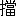

この書の世に出づるにいたりたるは、函館にある秦慶治氏、及び信濃にある神津猛氏のたまものなり。労作終るの日にあたりて、このものがたりを二人の恩人のまへにさゝぐ。
第壱章
（一）
蓮華寺では下宿を兼ねた。瀬川
丑松が急に
転宿を思ひ立つて、借りることにした部屋といふのは、其
蔵裏つゞきにある二階の角のところ。寺は信州
下水内郡飯山町二十何ヶ寺の一つ、真宗に附属する
古刹で、丁度其二階の窓に
倚凭つて眺めると、
銀杏の大木を
経てゝ飯山の町の一部分も見える。さすが信州第一の仏教の地、古代を
眼前に見るやうな小都会、奇異な北国風の
屋造、板葺の屋根、または冬期の
雪除として使用する特別の
軒庇から、ところ／″＼に高く
顕れた寺院と樹木の梢まで――すべて旧めかしい町の
光景が香の
烟の中に包まれて見える。たゞ
一際目立つて此窓から望まれるものと言へば、現に丑松が奉職して居る其小学校の白く塗つた
建築物であつた。
丑松が
転宿を思ひ立つたのは、実は甚だ不快に感ずることが今の下宿に起つたからで、
尤も
賄でも安くなければ、誰も
斯様な部屋に満足するものは無からう。壁は壁紙で張りつめて、それが
煤けて茶色になつて居た。粗造な床の間、紙表具の軸、外には古びた火鉢が置いてあるばかりで、何となく世離れた、
静寂な僧坊であつた。それがまた小学教師といふ丑松の今の境遇に映つて、妙に
佗しい
感想を起させもする。
今の下宿には
斯ういふ事が起つた。半月程前、一人の男を供に連れて、下高井の地方から出て来た
大日向といふ
大尽、飯山病院へ入院の為とあつて、
暫時腰掛に泊つて居たことがある。入院は間もなくであつた。もとより内証はよし、病室は第一等、看護婦の肩に懸つて長い廊下を往つたり来たりするうちには、
自然と
豪奢が人の目にもついて、誰が
嫉妬で
噂するともなく、『
彼は
穢多だ』といふことになつた。忽ち多くの病室へ
伝つて、患者は
総立。『放逐して
了へ、今直ぐ、それが出来ないとあらば
吾儕挙つて御免を蒙る』と
腕捲りして院長を
脅すといふ騒動。いかに
金尽でも、この人種の
偏執には勝たれない。ある日の暮、籠に乗せられて、夕闇の空に紛れて病院を出た。籠は
其儘もとの下宿へ
舁ぎ込まれて、院長は毎日のやうに来て診察する。さあ今度は下宿のものが承知しない。丁度丑松が一日の
勤務を終つて、疲れて宿へ帰つた時は、一同『
主婦を出せ』と
喚き立てるところ。『不浄だ、不浄だ』の
罵詈は無遠慮な客の
口唇を
衝いて出た。『不浄だとは何だ』と丑松は心に憤つて、蔭ながらあの大日向の
不幸を憐んだり、
道理のないこの非人扱ひを
慨いたりして、穢多の種族の悲惨な運命を思ひつゞけた――丑松もまた穢多なのである。
見たところ丑松は純粋な北部の信州人――
佐久小県あたりの岩石の間に成長した
壮年の一人とは誰の目にも受取れる。正教員といふ格につけられて、学力優等の卒業生として、長野の師範校を出たのは丁度二十二の
年齢の春。
社会へ突出される、直に丑松はこの飯山へ来た。それから足掛三年目の今日、丑松はたゞ熱心な青年教師として、飯山の町の人に知られて居るのみで、実際穢多である、新平民であるといふことは、誰一人として知るものが無かつたのである。
『では、いつ引越していらつしやいますか。』
と声をかけて、入つて来たのは蓮華寺の住職の
匹偶。年の頃五十前後。茶色小紋の羽織を着て、痩せた白い手に
珠数を持ち
乍ら、丑松の前に立つた。土地の
習慣から『奥様』と
尊敬められて居る
斯の
有髪の尼は、昔者として多少教育もあり、
都会の生活も
万更知らないでも無いらしい口の利き振であつた。世話好きな性質を額にあらはして、微な声で口癖のやうに念仏して、
対手の返事を待つて居る様子。
其時、丑松も考へた。
明日にも、今夜にも、と言ひたい場合ではあるが、さて差当つて引越しするだけの金が無かつた。実際持合せは四十銭しかなかつた。四十銭で引越しの出来よう筈も無い。今の下宿の払ひもしなければならぬ。月給は
明後日でなければ渡らないとすると、
否でも応でも其迄待つより外はなかつた。
『斯うしませう、明後日の
午後といふことにしませう。』
『明後日？』と奥様は不思議さうに対手の顔を眺めた。
『明後日引越すのは
其様に
可笑いでせうか。』丑松の眼は急に輝いたのである。
『あれ――でも明後日は二十八日ぢやありませんか。別に可笑いといふことは
御座ませんがね、私はまた月が変つてから
来つしやるかと思ひましてサ。』
『むゝ、これはおほきに
左様でしたなあ。実は私も急に引越しを思ひ立つたものですから。』
と何気なく言消して、丑松は
故意と
話頭を変へて
了つた。下宿の出来事は烈しく胸の中を騒がせる。それを聞かれたり、話したりすることは、何となく心に恐しい。何か穢多に関したことになると、
毎時もそれを避けるやうにするのが是男の癖である。
『なむあみだぶ。』
と口の中で唱へて、奥様は別に深く掘つて聞かうともしなかつた。
（二）
蓮華寺を出たのは五時であつた。学校の日課を終ると、直ぐ其足で出掛けたので、丑松はまだ
勤務の儘の
服装で居る。白墨と
塵埃とで汚れた着古しの洋服、書物やら手帳やらの風呂敷包を小脇に抱へて、それに
下駄穿、腰弁当。多くの労働者が人中で感ずるやうな
羞恥――そんな思を胸に浮べ乍ら、
鷹匠町の下宿の方へ帰つて行つた。町々の軒は秋雨あがりの後の夕日に輝いて、人々が濡れた道路に群つて居た。中には立ちとゞまつて丑松の通るところを眺めるもあり、何かひそひそ立話をして居るのもある。『
彼処へ行くのは、ありやあ何だ――むゝ、教員か』と言つたやうな顔付をして、
酷しい
軽蔑の色を
顕して居るのもあつた。是が自分等の預つて居る生徒の父兄であるかと考へると、
浅猿しくもあり、腹立たしくもあり、
遽に不愉快になつてすたすた歩き初めた。
本町の雑誌屋は近頃出来た店。其前には新着の書物を筆太に書いて、人目を引くやうに張出してあつた。かねて新聞の広告で見て、出版の日を楽みにして居た『懴悔録』――肩に
猪子蓮太郎氏著、定価までも書添へた広告が目につく。立ちどまつて、其人の名を思出してさへ、丑松はもう胸の踊るやうな
心地がしたのである。見れば二三の青年が
店頭に立つて、何か新しい雑誌でも
猟つて居るらしい。丑松は色の
褪せたズボンの
袖嚢の内へ手を突込んで、人知れず銀貨を鳴らして見ながら、幾度か其雑誌屋の前を往つたり来たりした。
兎に
角、四十銭あれば本が手に入る。しかし其を今
茲で買つて了へば、明日は一文無しで暮さなければならぬ。
転宿の用意もしなければならぬ。斯ういふ
思想に制せられて、一旦は往きかけて見たやうなものゝ、やがて、
復た引返した。ぬつと
暖簾を潜つて入つて、手に取つて見ると――それはすこし
臭気のするやうな、粗悪な洋紙に印刷した、黄色い表紙に『懴悔録』としてある本。貧しい人の手にも触れさせたいといふ趣意から、わざと質素な体裁を
択んだのは、
是書の性質をよく表して居る。あゝ、多くの青年が読んで知るといふ今の世の中に、飽くことを知らない丑松のやうな年頃で、どうして読まず知らずに居ることが出来よう。智識は一種の
饑渇である。到頭四十銭を取出して、
欲いと思ふ其本を買求めた。なけなしの金とはいひ
乍ら、
精神の慾には替へられなかつたのである。
『懴悔録』を抱いて――買つて反つて丑松は気の
衰頽を感じ乍ら、下宿をさして帰つて行くと、
不図、途中で学校の仲間に
出逢つた。一人は土屋銀之助と言つて、師範校時代からの同窓の友。一人は
未だ
極く年若な、此頃準教員に成つたばかりの男。散歩とは二人のぶら／＼やつて来る様子でも知れた。
『瀬川君、大層遅いぢやないか。』
と銀之助は
洋杖を鳴し乍ら
近いた。
正直で、しかも友達思ひの銀之助は、直に丑松の顔色を見て取つた。深く澄んだ目付は以前の快活な色を失つて、言ふに言はれぬ不安の光を帯びて居たのである。『あゝ、
必定身体の具合でも悪いのだらう』と銀之助は心に考へて、丑松から下宿を探しに行つた話を聞いた。
『下宿を？ 君はよく下宿を取替へる人だねえ――
此頃あそこの
家へ引越したばかりぢやないか。』
と毒の無い調子で、さも
心から出たやうに笑つた。其時丑松の持つて居る本が目についたので、銀之助は洋杖を小脇に挾んで、見せろといふ言葉と一緒に右の手を差出した。
『是かね。』と丑松は
微笑みながら出して見せる。
『むゝ、「懴悔録」か。』と準教員も銀之助の傍に
倚添ひながら眺めた。
『相変らず君は猪子先生のものが好きだ。』斯う銀之助は言つて、黄色い本の表紙を眺めたり、一寸
内部を開けて見たりして、『さう／＼新聞の広告にもあつたツけ――へえ、
斯様な本かい――斯様な質素な本かい。まあ君のは愛読を通り越して崇拝の方だ。はゝゝゝゝ、よく君の話には猪子先生が出るからねえ。
嘸かしまた聞かせられることだらうなあ。』
『馬鹿言ひたまへ。』
と丑松も笑つて其本を受取つた。
夕靄の群は低く集つて来て、あそこでも、こゝでも、
最早ちら／＼
灯が
点く。丑松は明後日あたり蓮華寺へ引越すといふ話をして、この友達と別れたが、やがて
少許行つて振返つて見ると、銀之助は往来の片隅に
佇立んだ
儘、
熟と
是方を見送つて居た。半町ばかり行つて復た振返つて見ると、未だ友達は同じところに佇立んで居るらしい。
夕餐の煙は町の空を籠めて、
悄然とした友達の姿も
黄昏れて見えたのである。
（三）
鷹匠町の下宿近く来た頃には、
鉦の声が
遠近の空に響き渡つた。寺々の宵の
勤行は始まつたのであらう。丁度下宿の前まで来ると、あたりを
警める人足の声も聞えて、
提灯の光に宵闇の道を照し乍ら、一
挺の籠が舁がれて出るところであつた。あゝ、大尽が忍んで出るのであらう、と丑松は憐んで、
黙然として其処に突立つて見て居るうちに、いよ／＼其とは附添の男で知れた。同じ宿に居たとは言ひ乍ら、つひぞ丑松は大日向を見かけたことが無い。唯附添の男ばかりは、よく薬の
罎なぞを提げて、出たり入つたりするところを見かけたのである。その雲を突くやうな大男が、今、尻端折りで、主人を保護したり、人足を指図したりする甲斐々々しさ。穢多の中でも
卑賤しい身分のものと見え、其処に立つて居る丑松を同じ
種族とは夢にも知らないで、妙に人を
憚るやうな様子して、一寸
会釈し乍ら側を通りぬけた。門口に
主婦、『御機嫌よう』の声も聞える。見れば下宿の内は何となく騒々しい。人々は激昂したり、憤慨したりして、いづれも聞えよがしに罵つて居る。
『
難有うぞんじます――そんなら御気をつけなすつて。』
とまた主婦は籠の側へ駈寄つて言つた。籠の内の人は何とも答へなかつた。丑松は黙つて立つた。見る／＼
舁がれて出たのである。
『ざまあ見やがれ。』
これが下宿の人々の最後に揚げた凱歌であつた。
丑松がすこし
蒼ざめた顔をして、下宿の軒を潜つて入つた時は、未だ人々が長い廊下に
群つて居た。いづれも感情を
制へきれないといふ風で、肩を怒らして歩くもあり、板の間を踏み鳴らすもあり、中には塩を掴んで庭に
蒔散らす弥次馬もある。主婦は
燧石を取出して、
清浄の火と言つて、かち／＼音をさせて騒いだ。
哀憐、
恐怖、千々の思は烈しく丑松の胸中を往来した。病院から追はれ、下宿から追はれ、其残酷な
待遇と
恥辱とをうけて、黙つて舁がれて行く
彼の大尽の運命を考へると、
嘸籠の中の人は
悲慨の
血涙に
噎んだであらう。大日向の運命は
軈てすべての穢多の運命である。思へば
他事では無い。長野の師範校時代から、この飯山に奉職の身となつたまで、よくまあ自分は平気の平左で、普通の人と同じやうな量見で、危いとも恐しいとも思はずに通り越して来たものだ。
斯うなると胸に浮ぶは父のことである。父といふのは今、牧夫をして、
烏帽子ヶ
嶽の
麓に牛を飼つて、隠者のやうな寂しい
生涯を送つて居る。丑松はその
西乃入牧場を思出した。その牧場の番小屋を思出した。
『
阿爺さん、阿爺さん。』
と口の中で呼んで、自分の部屋をあちこち／＼と歩いて見た。
不図父の言葉を思出した。
はじめて丑松が親の
膝下を離れる時、父は一人息子の前途を深く案じるといふ風で、さま／″＼な物語をして聞かせたのであつた。其時だ――一族の祖先のことも言ひ聞かせたのは。東海道の沿岸に住む多くの穢多の種族のやうに、朝鮮人、支那人、
露西亜人、または名も知らない島々から漂着したり帰化したりした異邦人の末とは違ひ、その血統は
古の武士の
落人から
伝つたもの、貧苦こそすれ、罪悪の為に穢れたやうな家族ではないと言ひ聞かせた。父はまた
添付して、世に出て身を立てる穢多の子の秘訣――唯一つの
希望、唯一つの
方法、それは身の素性を隠すより外に無い、『たとへいかなる目を見ようと、いかなる人に
邂逅はうと決して其とは
自白けるな、一旦の
憤怒悲哀に
是戒を忘れたら、其時こそ
社会から捨てられたものと思へ。』斯う父は教へたのである。
一生の秘訣とは斯の通り簡単なものであつた。『隠せ。』――戒はこの
一語で尽きた。しかし其頃はまだ無我夢中、『
阿爺が何を言ふか』位に聞流して、唯もう勉強が出来るといふ嬉しさに家を飛出したのであつた。楽しい空想の時代は父の戒も忘れ勝ちに過ぎた。急に丑松は
少年から大人に
近いたのである。急に自分のことが解つて来たのである。まあ、面白い隣の家から面白くない自分の家へ移つたやうに感ずるのである。今は自分から隠さうと思ふやうになつた。
（四）
あふのけさまに畳の上へ倒れて、
暫時丑松は身動きもせずに考へて居たが、
軈て
疲労が出て
眠て
了つた。不図目が覚めて、部屋の
内を見廻した時は、
点けて置かなかつた筈の
洋燈が寂しさうに照して、夕飯の膳も片隅に置いてある。自分は未だ洋服の
儘。丑松の
心地には一時間余も眠つたらしい。戸の外には
時雨の降りそゝぐ音もする。起き直つて、買つて来た本の黄色い表紙を眺め乍ら、膳を手前へ引寄せて食つた。
飯櫃の蓋を取つて、あつめ飯の
臭気を
嗅いで見ると、丑松は
最早嘆息して了つて、そこ／＼にして膳を
押遣つたのである。『懴悔録』を
披げて置いて、先づ残りの
巻煙草に火を点けた。
この本の著者――猪子蓮太郎の思想は、今の世の下層社会の『新しい苦痛』を
表白すと言はれて居る。人によると、
彼男ほど自分を
吹聴するものは無いと言つて、妙に毛嫌するやうな手合もある。
成程、其筆にはいつも一種の神経質があつた。到底蓮太郎は自分を離れて
説話をすることの出来ない人であつた。しかし思想が剛健で、しかも観察の
精緻を兼ねて、人を
吸引ける力の
壮んに
溢れて居るといふことは、一度其著述を読んだものゝ誰しも感ずる特色なのである。蓮太郎は貧民、労働者、または新平民等の生活状態を研究して、社会の下層を流れる清水に掘りあてる迄は
倦まず
撓まず
努力めるばかりでなく、また其を読者の前に突着けて、右からも左からも
説明して、呑込めないと思ふことは何度繰返しても、読者の
腹の中に置かなければ承知しないといふ
遣方であつた。
尤も蓮太郎のは哲学とか経済とかの方面から
左様いふ
問題を取扱はないで、
寧ろ心理の研究に
基礎を置いた。文章はたゞ岩石を並べたやうに思想を並べたもので、
露骨なところに反つて人を動かす力があつたのである。
しかし丑松が蓮太郎の書いたものを愛読するのは唯
其丈の理由からでは無い。新しい思想家でもあり戦士でもある猪子蓮太郎といふ人物が穢多の中から産れたといふ事実は、丑松の心に深い感動を与へたので――まあ、丑松の積りでは、
隠に先輩として慕つて居るのである。同じ人間であり乍ら、自分等ばかり
其様に
軽蔑される道理が無い、といふ烈しい意気込を持つやうになつたのも、実はこの先輩の感化であつた。斯ういふ訳から、蓮太郎の著述といへば必ず買つて読む。雑誌に名が出る、必ず目を通す。読めば読む程丑松はこの先輩に手を引かれて、新しい世界の方へ連れて行かれるやうな気がした。穢多としての悲しい自覚はいつの間にか其頭を
擡げたのである。
今度の新著述は、『我は穢多なり』といふ文句で始めてあつた。其中には同族の無智と零落とが活きた画のやうに描いてあつた。其中には多くの正直な
男女が、たゞ穢多の生れといふばかりで、社会から捨てられて行く
光景も写してあつた。其中には又、著者の煩悶の歴史、
歓し
哀しい過去の
追想、精神の自由を求めて、しかも其が得られないで、不調和な社会の為に
苦みぬいた
懐疑の
昔語から、朝空を望むやうな新しい生涯に入る迄――熱心な
男性の
嗚咽が声を聞くやうに書きあらはしてあつた。
新しい生涯――それが蓮太郎には偶然な身のつまづきから開けたのである。生れは信州高遠の人。古い穢多の
宗族といふことは、丁度長野の師範校に心理学の講師として来て居た頃――丑松がまだ入学しない
以前――同じ南信の地方から出て来た二三の生徒の口から
泄れた。講師の中に賤民の子がある。是噂が全校へ
播つた時は、一同
驚愕と
疑心とで動揺した。ある人は蓮太郎の人物を、ある人はその
容貌を、ある人はその学識を、いづれも穢多の生れとは思はれないと言つて、どうしても
虚言だと言張るのであつた。放逐、放逐、声は一部の教師仲間の
嫉妬から起つた。嗚呼、人種の偏執といふことが無いものなら、『キシネフ』で殺される
猶太人もなからうし、西洋で
言囃す黄禍の説もなからう。無理が通れば道理が引込むといふ
斯世の中に、誰が穢多の子の放逐を不当だと言ふものがあらう。いよ／＼蓮太郎が身の素性を自白して、多くの校友に
別離を告げて行く時、この講師の為に
同情の
涙を流すものは一人もなかつた。蓮太郎は師範校の門を出て、『学問の為の学問』を捨てたのである。
この当時の
光景は『懴悔録』の中に
精しく記載してあつた。丑松は身につまされるかして、
幾度か読みかけた本を閉ぢて、目を
瞑つて、やがて其を読むのは苦しくなつて来た。
同情は妙なもので、反つて底意を汲ませないやうなことがある。それに蓮太郎の筆は、面白く読ませるといふよりも、考へさせる方だ。
終には丑松も書いてあることを離れて了つて、自分の一生ばかり思ひつゞけ乍ら読んだ。
今日まで丑松が平和な月日を送つて来たのは――主に少年時代からの境遇にある。そも／＼は小諸の
向町（穢多町）の生れ。北佐久の高原に散布する新平民の種族の中でも、殊に四十戸ばかりの
一族の『お
頭』と言はれる家柄であつた。
獄卒と
捕吏とは、維新前まで、先祖代々の
職務であつて、父はその監督の
報酬として、租税を免ぜられた上、別に
俸米をあてがはれた。それ程の男であるから、貧苦と零落との為め小県郡の方へ家を移した時にも、八歳の丑松を小学校へやることは忘れなかつた。丑松が
根津村の学校へ通ふやうになつてからは、もう
普通の
児童で、誰もこの可憐な新入生を穢多の子と思ふものはなかつたのである。最後に父は
姫子沢の
谷間に落着いて、叔父夫婦も一緒に移り住んだ。
異つた土地で知るものは無し、
強ひて
是方から言ふ必要もなし、といつたやうな訳で、
終には慣れて、少年の丑松は一番早く昔を忘れた。官費の教育を受ける為に長野へ出掛ける頃は、たゞ先祖の昔話としか考へて居なかつた位で。
斯ういふ過去の記憶は今丑松の胸の中に
復活つた。七つ八つの頃まで、よく他の小供に
調戯はれたり、石を投げられたりした、其
恐怖の情はふたゝび起つて来た。
朦朧ながらあの小諸の向町に居た頃のことを思出した。移住する前に死んだ母親のことなぞを思出した。『我は穢多なり』――あゝ、どんなに是一句が丑松の若い心を
掻乱したらう。『懴悔録』を読んで、
反つて丑松はせつない
苦痛を感ずるやうになつた。
第弐章
（一）
毎月二十八日は月給の渡る日とあつて、学校では人々の顔付も
殊に引立つて見えた。課業の終を告げる大鈴が鳴り渡ると、
男女の教員はいづれも早々に書物を片付けて、受持々々の教室を出た。
悪戯盛りの少年の群は、一時に溢れて、其騒しさ。弁当草履を振廻し、『ズック』の鞄を肩に掛けたり、風呂敷包を
背負つたりして、声を揚げ
乍ら帰つて行つた。丑松もまた高等四年の一組を済まして、
左右に馳せちがふ生徒の中を職員室へと急いだのである。
校長は応接室に居た。
斯人は郡視学が変ると一緒にこの飯山へ転任して来たので、丑松や銀之助よりも後から入つた。学校の方から言ふと、二人は校長の
小舅にあたる。其日は郡視学と二三の町会議員とが参校して、校長の案内で、各教場の授業を
少許づゝ観た。郡視学が校長に与へた注意といふは、職員の監督、
日々の教案の整理、黒板机腰掛などの器具の修繕、又は学生の間に流行する『トラホオム』の衛生法等、主に児童教育の形式に関した
件であつた。応接室へ帰つてから、一同雑談で持切つて、室内に籠る
煙草の
烟は丁度白い
渦のやう。茶でも出すと見えて、小使は出たり入つたりして居た。
斯校長に言はせると、教育は則ち規則であるのだ。郡視学の命令は上官の命令であるのだ。もと／＼軍隊風に児童を
薫陶したいと言ふのが斯人の主義で、
日々の挙動も生活も
凡て其から割出してあつた。時計のやうに正確に――これが座右の銘でもあり、生徒に説いて聞かせる教訓でもあり、また職員一同を
指揮する時の精神でもある。世間を知らない青年教育者の口癖に言ふやうなことは、無用な人生の
装飾としか思はなかつた。是主義で押通して来たのが遂に成功して――まあすくなくとも校長の
心地だけには成功して、功績表彰の文字を彫刻した名誉の
金牌を授与されたのである。
丁度その一生の記念が今応接室の机の上に置いてあつた。人々の視線は
燦然とした黄金の
光輝に集つたのである。一人の町会議員は其金質を、一人は其
重量と
直径とを、一人は其見積りの代価を、いづれも心に商量したり感嘆したりして眺めた。十八金、
直径九分、
重量五匁、代価凡そ三十円――これが人々の
終に一致した評価で、別に添へてある表彰文の中には、よく教育の施設をなしたと書いてあつた。県下教育の上に貢献するところ
尠からずと書いてあつた。『基金令第八条の趣旨に基き、金牌を授与し、之を表彰す』とも書いてあつた。
『実に今回のことは校長先生の御名誉ばかりぢや有ません、吾信州教育界の名誉です。』
と
髯の白い町会議員は改つて言つた。金縁眼鏡の議員は其尾に附いて、
『就きましては、有志の者が寄りまして御祝の印ばかりに粗酒を差上げたいと存じますが――いかゞでせう、今晩三浦屋迄
御出を願へませうか。郡視学さんも、
何卒まあ是非御同道を。』
『いや、
左様いふ御心配に預りましては実に恐縮します。』と校長は
倚子を離れて挨拶した。『今回のことは、教育者に取りましても此上もない名誉な次第で、非常に私も
嬉敷思つては居るのですが――考へて見ますと、是ぞと言つて功績のあつた私ではなし、実は斯ういふ金牌なぞを頂戴して、
反つて身の不肖を恥づるやうな次第で。』
『校長先生、
左様仰つて下すつては、使に来た私共が困ります。』
と痩せぎすな議員が右から手を
擦み乍ら言つた。
『御辞退下さる程の御馳走は有ませんのですから。』
と
白髯の議員は左から歎願した。
校長の眼は得意と
喜悦とで火のやうに輝いた。いかにも心中の感情を包みきれないといふ風で、胸を突出して見たり、肩を
動つて見たりして、
軈て郡視学の方へ向いて斯う尋ねた。
『どうですな、
貴方の御都合は。』
と言はれて、郡視学は
鷹揚な
微笑を口元に
湛へ乍ら、
『
折角皆さんが
彼様言つて下さる。御厚意を無にするのは反つて失礼でせう。』
『
御尤です――いや、それではいづれ後刻御目に懸つて、御礼を申上げるといふことにしませう。
何卒皆さんへも
宜敷仰つて下さい。』
と校長は丁寧に挨拶した。
実際、地方の事情に遠いものは斯校長の現在の位置を十分会得することが出来ないであらう。地方に入つて教育に従事するものゝ第一の要件は――外でもない、斯校長のやうな凡俗な心づかひだ。
曾て学校の窓で想像した
種々の高尚な事を
左様いつ迄も考へて、俗悪な趣味を
嫌ひ避けるやうでは、一日たりとも地方の学校の校長は勤まらない。有力者の
家なぞに、
悦びもあり
哀みもあれば、人と同じやうに言ひ入れて、振舞の座には神主坊主と同席に
座ゑられ、すこしは地酒の飲みやうも覚え、土地の言葉も
可笑しくなく
使用へる頃には、自然と学問を忘れて、無教育な人にも
馴染むものである。賢いと言はれる教育者は、いづれも町会議員なぞに結托して、位置の堅固を計るのが普通だ。
帽子を
執つて帰つて行く人々の後に随いて、校長はそこ迄見送つて出た。
軈て玄関で挨拶して別れる時、互に斯ういふ言葉を
取替した。
『では、郡視学さんも御誘ひ下すつて、学校から直に御出を。』
『恐れ入りましたなあ。』
（二）
『小使。』
と呼ぶ校長の声は長い廊下に響き渡つた。
生徒はもう帰つて了つた。教場の窓は皆な閉つて、
運動場に
庭球する人の影も見えない。急に
周囲は
森閑として、時々職員室に起る笑声の外には、
寂しい静かな風琴の
調がとぎれ／＼に二階から聞えて来る位のものであつた。
『へい、何ぞ御用で
御座ますか。』と小使は上草履を鳴らして駈寄る。
『あ、ちよと、気の毒だがねえ、もう一度役場へ行つて催促して来て呉れないか。
金銭を受取つたら直に持つて来て呉れ――皆さんも御待兼だ。』
斯う命じて置いて、校長は応接室の戸を開けて入つた。見れば郡視学は巻煙草を
燻し乍ら、独りで新聞を読み
耽つて居る。『失礼しました。』と声を掛けて、
其側へ自分の椅子を擦寄せた。
『見たまへ、まあ
斯信濃毎日を。』と郡視学は
馴々敷、『君が金牌を授与されたといふことから、教育者の亀鑑だといふこと迄、
委敷書いて有ますよ。表彰文は全部。それに、履歴までも。』
『いや、今度の受賞は大変な評判になつて了ひました。』と校長も喜ばしさうに、『何処へ行つても直に其話が出る。実に意外な人迄知つて居て、祝つて呉れるやうな訳で。』
『結構です。』
『これといふのも
貴方の御骨折から――』
『まあ其は言はずに置いて貰ひませう。』と郡視学は対手の言葉を
遮つた。『御互様のことですからな。はゝゝゝゝ。しかし吾党の中から受賞者を出したのは名誉さ。君の
御喜悦も御察し申す。』
『勝野君も非常に喜んで呉れましてね。』
『
甥がですか、あゝ
左様でしたらう。私の
許へも長い手紙をよこしましたよ。其を読んだ時は、
彼男の喜ぶ顔付が目に見えるやうでした。実際、甥は貴方の為を思つて居るのですからな。』
郡視学が甥と言つたのは、検定試験を受けて、合格して、此頃新しく赴任して来た正教員。勝野文平といふのが其男の名である。割合に新参の校長は文平を引立てゝ、自分の味方に附けようとしたので。
尤も席順から言へば、丑松は首座。生徒の人望は反つて校長の上にある程。銀之助とても師範出の若手。いかに校長が文平を
贔顧だからと言つて、二人の位置を動かす訳にはいかない。文平は第三席に着けられて出たのであつた。
『それに引換へて瀬川君の冷淡なことは。』と校長は一段声を低くした。
『瀬川君？』と郡視学も眉をひそめる。
『まあ聞いて下さい。
万更の他人が受賞したではなし、定めし瀬川君だつても私の為に喜んで居て呉れるだらう、と斯う貴方なぞは御考へでせう。ところが大違ひです。こりやあ、まあ、私が
直接に聞いたことでは無いのですけれど――又、私に面と向つて、まさかに
其様なことが言へもしますまいが――といふのは、教育者が金牌なぞを貰つて鬼の首でも取つたやうに思ふのは大間違だと。そりやあ
成程人爵の一つでせう。瀬川君なぞに言はせたら
価値の無いものでせう。然し金牌は
表章です。表章が何も
難有くは無い。唯其意味に
価値がある。はゝゝゝゝ、まあ
左様ぢや有ますまいか。』
『どうしてまた瀬川君は
其様な
思想を持つのだらう。』と郡視学は嘆息した。
『時代から言へば、あるひは
吾儕の方が多少
後れて居るかも知れません。しかし新しいものが必ずしも好いとは限りませんからねえ。』と言つて校長は
嘲つたやうに笑つて、『なにしろ、瀬川君や土屋君が
彼様して居たんぢや、万事私も遣りにくゝて困る。同志の者ばかり集つて、一致して教育事業をやるんででもなけりやあ、到底面白くはいきませんさ。勝野君が首座ででもあつて呉れると、私も大きに安心なんですけれど。』
『そんなに君が面白くないものなら、何とか其処には方法も有さうなものですがなあ。』と郡視学は意味ありげに相手の顔を眺めた。
『方法とは？』と校長も熱心に。
『他の学校へ移すとか、
後釜へは――それ、君の気に入つた人を入れるとかサ。』
『そこです――同じ移すにしても、何か口実が無いと――余程そこは
巧くやらないと――あれで瀬川君はなか／＼生徒間に人望が有ますから。』
『さうさ、過失の無いものに向つて、出て行けとも言はれん。はゝゝゝゝ、余りまた細工をしたやうに思はれるのも厭だ。』と言つて郡視学は気を変へて、『まあ私の口から甥を褒めるでも有ませんが、貴方の為には
必定御役に立つだらうと思ひますよ。瀬川君に比べると、勝るとも劣ることは有るまいといふ積りだ。一体瀬川君は何処が好いんでせう。どうして
彼様な教師に生徒が大騒ぎをするんだか――私なんかには
薩張解らん。
他の名誉に思ふことを冷笑するなんて、
奈何いふことがそんならば瀬川君なぞには
難有いんです。』
『先づ猪子蓮太郎あたりの思想でせうよ。』
『むゝ――あの穢多か。』と郡視学は顔を
渋める。
『あゝ。』と校長も深く歎息した。『猪子のやうな男の書いたものが若いものに読まれるかと思へば恐しい。不健全、不健全――今日の新しい出版物は皆な青年の身をあやまる
原因なんです。その為に
畸形の人間が出来て見たり、
狂見たやうな男が飛出したりする。あゝ、あゝ、今の青年の思想ばかりは
奈何しても
吾儕に解りません。』
（三）
不図応接室の戸を
叩く音がした。急に二人は口を
噤んだ。
復た叩く。『お入り』と声をかけて、校長は
倚子を離れた。郡視学も振返つて、戸を開けに行く校長の後姿を眺め乍ら、誰、町会議員からの使ででもあるか、斯う考へて、入つて来る人の様子を見ると――思ひの外な一人の教師、つゞいてあらはれたのが丑松であつた。校長は思はず郡視学と顔を見合せたのである。
『校長先生、何か御用談中ぢや有ませんか。』
と丑松は尋ねた。校長は一寸
微笑んで、
『いえ、なに、別に用談でも有ません――今二人で御噂をして居たところです。』
『実はこの風間さんですが、是非郡視学さんに御目に懸つて、直接に御願ひしたいことがあるさうですから。』
斯う言つて、丑松は一緒に来た同僚を
薦めるやうにした。
風間
敬之進は、時世の為に置去にされた、老朽な小学教員の一人。丑松や銀之助などの若手に比べると、
阿爺にしてもよい程の年頃である。黒木綿の紋付羽織、
垢染みた着物、粗末な小倉の袴を着けて、
兢々郡視学の前に進んだ。下り坂の人は気の弱いもので、すこし郡視学に冷酷な
態度が
顕れると、もう妙に固くなつて思ふことを言ひかねる。
『何ですか、私に用事があると
仰るのは。』斯う催促して、郡視学は
威丈高になつた。あまり敬之進が
躊躇して居るので、
終には郡視学も気を
苛つて、時計を出して見たり、靴を鳴らして見たりして、
『
奈何いふ御話ですか。仰つて見て下さらなければ解りませんなあ。』
もどかしく思ひ乍ら椅子を離れて立上るのであつた。敬之進は
猶々言ひかねるといふ様子で、
『実は――すこし御願ひしたい
件が有まして。』
『ふむ。』
復た室の内は
寂として
暫時声がなくなつた。首を垂れ乍ら
少許慄へて居る敬之進を見ると、丑松は
哀憐の心を起さずに居られなかつた。郡視学は
最早堪へかねるといふ風で、
『私は是で
多忙しい身体です。何か仰ることがあるなら、ずん／＼仰つて下さい。』
丑松は見るに見かねた。
『風間さん、
其様に遠慮しない方が
可ぢや有ませんか。貴方は退職後のことを御相談して頂きたいといふんでしたらう。』斯う言つて、
軈て郡視学の方へ向いて、『私から伺ひます。まあ、風間さんのやうに退職となつた場合には、恩給を受けさして頂く訳に参りませんものでせうか。』
『無論です、そんなことは。』と郡視学は冷かに言放つた。『小学校令の施行規則を出して御覧なさい。』
『そりやあ規則は規則ですけれど。』
『規則に無いことが出来るものですか。身体が衰弱して、職務を執るに堪へないから退職する――其を
是方で止める権利は有ません。然し、恩給を受けられるといふ人は、満十五ヶ年以上在職したものに限つた話です。風間さんのは十四ヶ年と六ヶ月にしかならない。』
『でも有ませうが、僅か半歳のことで教育者を一人御救ひ下さるとしたら。』
『
其様なことを言つて見た日にやあ
際涯が無い。何ぞと言ふと風間さんは直に家の事情、家の事情だ。誰だつて家の事情のないものはありやしません。まあ、恩給のことなぞは
絶念めて、
折角御静養なさるが
可でせう。』
斯う
撥付けられては
最早取付く島が無いのであつた。丑松は気の毒さうに敬之進の横顔を
熟視つて、
『どうです風間さん、貴方からも御願ひして見ては。』
『いえ、只今の御話を伺へば――別に――私から御願する迄も有ません。御言葉に従つて、
絶念めるより外は無いと思ひます。』
其時小使が重たさうな風呂敷包を提げて役場から帰つて来た。
斯のしらせを
機に、郡視学は帽子を執つて、校長に送られて出た。
（四）
男女の教員は広い職員室に集つて居た。其日は土曜日で、月給取の身にとつては反つて
翌の日曜よりも楽しく思はれたのである。
茲に集る人々の多くは、
日々の長い
勤務と、多数の生徒の取扱とに
疲れて、さして教育の事業に興味を感ずるでもなかつた。中には児童を忌み嫌ふやうなものもあつた。三種講習を済まして、及第して、
漸く煙草のむことを覚えた程の年若な準教員なぞは、まだ
前途が長いところからして楽しさうにも見えるけれど、既に老朽と言はれて髭ばかり
厳しく生えた手合なぞは、述懐したり、物羨みしたりして、
外目にも
可傷しく思ひやられる。一月の骨折の
報酬を酒に代へる為、今茲に待つて居るやうな連中もあるのであつた。
丑松は敬之進と一緒に職員室へ行かうとして、廊下のところで小使に出逢つた。
『風間先生、笹屋の亭主が御目に懸りたいと言つて、
先刻から来て待つて居りやす。』
不意を打たれて、敬之進はさも苦々しさうに笑つた。
『何？ 笹屋の亭主？』
笹屋とは飯山の町はづれにある飲食店、農夫の為に地酒を暖めるやうな
家で、老朽な敬之進が浮世を忘れる隠れ家といふことは、
疾に丑松も承知して居た。けふ月給の渡る日と聞いて、酒の貸の催促に来たか、とは敬之進の寂しい
苦笑で知れる。『ちよツ、学校まで取りに来なくてもよささうなものだ。』と敬之進は
独語のやうに言つた。『いゝから待たして置け。』と小使に言含めて、
軈て二人して職員室へと急いだのである。
十月下旬の日の光は
玻璃窓から射入つて、煙草の
烟に交る室内の空気を明く見せた。
彼処の掲示板の下に
一群、是処の時間表の
側に
一団、いづれも口から泡を飛ばして言ひのゝしつて居る。丑松は室の入口に立つて眺めた。見れば郡視学の
甥といふ勝野文平、灰色の壁に
倚凭つて、銀之助と二人並んで話して居る様子。新しい艶のある洋服を着て、
襟飾の好みも
煩くなく、すべて
適はしい風俗の
中に、人を
吸引ける
敏捷いところがあつた。美しく
撫付けた髪の色の黒さ。頬の若々しさ。それに是男の鋭い眼付は絶えず物を
穿鑿するやうで、
一時も
静息んでは居られないかのやう。これを銀之助の五分刈頭、顔の色赤々として、血肥りして、
形も
振も関はず
腕捲りし乍ら、
談したり笑つたりする肌合に比べたら、其二人の相違は
奈何であらう。物見高い女教師連の視線はいづれも文平の身に集つた。
丑松は文平の
瀟洒とした
風采を見て、別に其を羨む気にもならなかつた。たゞ気懸りなのは、
彼新教員が自分と同じ地方から来たといふことである。
小諸辺の地理にも
委敷様子から押して考へると、
何時何処で瀬川の家の話を聞かまいものでもなし、広いやうで狭い世間の悲しさ、あの『お頭』は今これ／＼だと言ふ人でもあつた日には――無論今となつて
其様なことを言ふものも有るまいが――まあ万々一――それこそ
彼教員も聞捨てには
為まい。斯う丑松は
猜疑深く推量して、何となく油断がならないやうに思ふのであつた。不安な丑松の
眼には
種々な心配の種が映つて来たのである。
軈て校長は役場から来た金の調べを終つた。それ／″＼分配するばかりになつたので、丑松は校長を助けて、人々の机の上に十月分の俸給を載せてやつた。
『土屋君、さあ御土産。』
と銀之助の前にも、五十銭づゝ封じた銅貨を幾本か並べて、外に銀貨の包と
紙幣とを添へて出した。
『おや／＼、銅貨を沢山呉れるねえ。』と銀之助は笑つて、『
斯様にあつては持上がりさうも無いぞ。はゝゝゝゝ。時に、瀬川君、けふは御引越が出来ますね。』
丑松は笑つて答へなかつた。
傍に居た文平は引取つて、
『どちらへか御引越ですか。』
『瀬川君は今夜から
精進料理さ。』
『はゝゝゝゝ。』
と笑ひ葬つて、丑松は素早く自分の机の方へ行つて了つた。
毎月のこととは言ひ乍ら、俸給を受取つた時の人々の顔付は又格別であつた。実に男女の教員の身にとつては、
労働いて得た収穫を眺めた時ほど愉快に感ずることは無いのである。ある人は紙の袋に封じた
儘の銀貨を鳴らして見る、ある人は風呂敷に包んで重たさうに提げて見る、ある女教師は又、
海老茶袴の
紐の上から
撫でゝ、人知れず微笑んで見るのであつた。急に校長は椅子を離れて、用事ありげに立上つた。何事かと人々は聞耳を立てる。校長は一つ咳払ひして、さて器械的な改つた調子で、敬之進が退職の
件を報告した。就いては来る十一月の三日、天長節の式の済んだ
後、この老功な教育者の為に茶話会を開きたいと言出した。賛成の声は起る。敬之進はすつくと立つて、一礼して、
軈て拍子の抜けたやうに元の席へ
復つた。
一同帰り仕度を始めたのは間も無くであつた。男女の教員が敬之進を
取囲いて、いろ／＼言ひ慰めて居る間に、ついと丑松は風呂敷包を
提げて出た。銀之助が友達を
尋して歩いた時は、職員室から廊下、廊下から応接室、小使部屋、昇降口まで来て見ても、もう何処にも丑松の姿は見えなかつたのである。
（五）
丑松は大急ぎで下宿へ帰つた。月給を受取つて来て妙に気強いやうな
心地にもなつた。昨日は湯にも入らず、煙草も買はず、早く蓮華寺へ、と思ひあせるばかりで、暗い
一日を過したのである。実際、
懐中に一文の小使もなくて、笑ふといふ気には誰がならう。
悉皆下宿の払ひを済まし、車さへ来れば直に出掛けられるばかりに用意して、さて巻煙草に火を点けた時は、言ふに言はれぬ愉快を感ずるのであつた。
引越は成るべく目立たないやうに、といふ考へであつた。気掛りなは下宿の
主婦の
思惑で――まあ、この
突然な
転宿を何と思つて見て居るだらう。何か
彼放逐された大尽と自分との間には一種の関係があつて、それで面白くなくて引越すとでも思はれたら
奈何しよう。あの愚痴な性質から、
根彫葉刻聞咎めて、
何故引越す、斯う聞かれたら何と返事をしたものであらう。そこがそれ、引越さなくても
可ものを無理に引越すのであるから、何となく妙に気が
咎める。下手なことを言出せば反つて藪蛇だ。『都合があるから引越す。』理由は其で沢山だ。斯う
種々に考へて、疑つたり恐れたりして見たが、多くの客を相手にする主婦の様子は
左様心配した程でも無い。さうかうする中に、頼んで置いた車も来る。荷物と言へば、本箱、机、
柳行李、それに蒲団の包があるだけで、道具は一切一台の車で間に合つた。丑松は
洋燈を手に持つて、主婦の声に送られて出た。
斯うして車の後に
随いて、とぼ／＼と二三町も歩いて来たかと思はれる頃、今迄の下宿の方を一寸振返つて見た時は、思はずホツと深い溜息を
吐いた。
道路は悪し、車は遅し、丑松は静かに一生の
変遷を考へて、自分で自分の運命を憐み乍ら歩いた。寂しいとも、悲しいとも、
可笑しいとも、何ともかとも名の附けやうのない
心地は烈しく胸の中を往来し始める。
追憶の情は身に迫つて、無限の感慨を起させるのであつた。それは十一月の
近いたことを思はせるやうな
蕭条とした日で、湿つた秋の空気が薄い
烟のやうに町々を引包んで居る。
路傍に黄ばんだ柳の葉はぱら／＼と地に落ちた。
途中で紙の旗を押立てた少年の
一群に出遇つた。音楽隊の物真似、唱歌の勇しさ、笛太鼓も入乱れ、足拍子揃へて面白可笑しく歌つて来るのは何処の
家の子か――あゝ尋常科の生徒だ。見れば其後に随いて、少年と一緒に歌ひ乍ら、人目も関はずやつて来る上機嫌の
酔漢がある。
蹣跚とした足元で直に退職の敬之進と知れた。
『瀬川君、一寸まあ見て呉れ給へ――是が我輩の音楽隊さ。』
と
指し乍ら
熟柿臭い
呼吸を吹いた。敬之進は何処かで飲んで来たものと見える。指された少年の群は一度にどつと声を揚げて、自分達の
可傷な先生を笑つた。
『始めえ――』敬之進は戯れに指揮するやうな調子で言つた。『諸君。まあ聞き給へ。
今日迄我輩は諸君の先生だつた。
明日からは
最早諸君の先生ぢや無い。そのかはり、諸君の音楽隊の指揮をしてやる。よしか。解つたかね。あはゝゝゝ。』と笑つたかと思ふと、熱い
涙は其顔を伝つて流れ落ちた。
無邪気な音楽隊は、一斉に歓呼を揚げて、足拍子揃へて通過ぎた。敬之進は何か思出したやうに、
熟と其少年の群を見送つて居たが、
軈て心付いて歩き初めた。
『まあ、君と一緒に其処迄行かう。』と敬之進は身を
慄はせ乍ら、『時に瀬川君、まだ斯の通り日も暮れないのに、
洋燈を持つて歩くとは
奈何いふ訳だい。』
『私ですか。』と丑松は笑つて、『私は今引越をするところです。』
『あゝ引越か。それで君は何処へ引越すのかね。』
『蓮華寺へ。』
蓮華寺と聞いて、急に敬之進は無言になつて了つた。
暫時の間、二人は互に別々のことを考へ乍ら歩いた。
『あゝ。』と敬之進はまた始めた。『実に瀬川君なぞは羨ましいよ。だつて君、
左様ぢやないか。君なぞは未だ若いんだもの。前途多望とは君等のことだ。
何卒して我輩も、もう一度君等のやうに若くなつて見たいなあ。あゝ、人間も我輩のやうに老込んで了つては駄目だねえ。』
（六）
車は遅かつた。丑松敬之進の二人は互に並んで話し／＼随いて行つた。とある町へ差掛かつた頃、急に車夫は車を停めて、
冷々とした空気を呼吸し
乍ら、額に流れる汗を押拭つた。見れば町の空は灰色の水蒸気に包まれて
了つて、僅に西の一方に黄な光が深く輝いて居る。いつもより早く日は暮れるらしい。
遽に
道路も薄暗くなつた。まだ
灯を
点ける時刻でもあるまいに、もう一軒点けた
家さへある。其軒先には三浦屋の文字が
明白と読まれるのであつた。
盛な歓楽の声は二階に湧上つて、
屋外に居る二人の心に一層の不愉快と
寂寥とを添へた。丁度人々は
酒宴の最中。
灯影花やかに映つて歌舞の
巷とは知れた。
三味は幾挺かおもしろい
音を合せて、障子に響いて
媚びるやうに聞える。急に勇しい太鼓も入つた。時々唄に交つて叫ぶやうに聞えるは、
囃方の娘の声であらう。これも
亦、
招ばれて行く
妓と見え、箱屋一人連れ、
褄高く取つて、いそ／＼と二人の前を通過ぎた。
客の笑声は手に取るやうに聞えた。其中には校長や郡視学の声も聞えた。人々は飲んだり食つたりして時の移るのも知らないやうな様子。
『瀬川君、大層陽気ぢやないか。』と敬之進は声を
潜めて、『や、
大一座だ。一体
今宵は何があるんだらう。』
『まだ風間さんには解らないんですか。』と丑松も聞耳を立て乍ら言つた。
『解らないさ。だつて我輩は
何にも知らないんだもの。』
『ホラ、校長先生の御祝でさあね。』
『むゝ――むゝ――むゝ、
左様ですかい。』
一曲の唄が済んで、盛な拍手が起つた。また盃の
交換が始つたらしい。若い女の声で、『姉さん、お銚子』などと呼び騒ぐのを聞捨てゝ、丑松敬之進の二人は三浦屋の
側を横ぎつた。
車は知らない中に
前へ行つて了つた。次第に歌舞の巷を離れると、太鼓の音も遠く聞えなくなる。敬之進は嘆息したり、沈吟したりして、時々絶望した人のやうに
唐突に大きな声を出して笑つた。『
浮世夢のごとし』――それに勝手な節を付けて、低声に長く吟じた時は、聞いて居る丑松も沈んで了つて、妙に悲しいやうな、
可痛しいやうな
心地になつた。
『吟声
調を成さず――あゝ、あゝ、
折角の酒も醒めて了つた。』
と敬之進は嘆息して、獣の
呻吟るやうな声を出し乍ら歩く。丑松も憐んで、軈て斯う尋ねて見た。
『風間さん、貴方は何処迄行くんですか。』
『我輩かね。我輩は君を送つて、蓮華寺の門前まで行くのさ。』
『門前迄？』
『
何故我輩が門前迄送つて行くのか、其は君には解るまい。しかし其を今君に説明しようとも思はないのさ。御互ひに長く顔を見合せて居ても、斯うして
親しくするのは昨今だ。まあ、いつか一度、君とゆつくり話して見たいもんだねえ。』
やがて蓮華寺の山門の前まで来ると、ぷいと敬之進は別れて行つて了つた。奥様は
蔵裏の外まで出迎へて喜ぶ。車はもうとつくに。荷物は寺男の庄太が二階の部屋へ持運んで呉れた。台所で焼く魚のにほひは、蔵裏迄も通つて来て、香の煙に交つて、
住慣れない丑松の心に一種異様の
感想を与へる。仏に物を供へる為か、本堂の方へ通ふ子坊主もあつた。二階の部屋も窓の障子も新しく張替へて、前に見たよりはずつと
心地が好い。薬湯と言つて、大根の
乾葉を入れた風呂なども立てゝ呉れる。新しい膳に向つて、うまさうな味噌汁の
香を嗅いで見た時は、第一この寂しげな
精舎の古壁の内に意外な家庭の
温暖を
看付けたのであつた。
第参章
（一）
もとより銀之助は丑松の素性を知る筈がない。二人は長野の師範校に居る頃から、極く好く気性の合つた友達で、丑松が
佐久小県あたりの灰色の景色を説き出すと、銀之助は
諏訪湖の
畔の生れ故郷の物語を始める、丑松が好きな歴史の話をすれば、銀之助は植物採集の興味を、と言つたやうな風に、互ひに語り合つた寄宿舎の窓は二人の心を結びつけた。同窓の記憶はいつまでも若く青々として居る。銀之助は丑松のことを思ふ度に昔を思出して、何となく時の
変遷を忍ばずには居られなかつた。同じ寄宿舎の食堂に同じ引割飯の
香を嗅いだ其友達に思ひ比べると、実に丑松の様子の変つて来たことは。あの
憂欝――丑松が以前の快活な性質を失つた証拠は、眼付で解る、歩き方で解る、
談話をする声でも解る。一体、何が
原因で、あんなに深く沈んで行くのだらう。とんと銀之助には合点が行かない。『何かある――必ず何か訳がある。』斯う考へて、どうかして友達に忠告したいと思ふのであつた。
丑松が蓮華寺へ引越した
翌日、丁度日曜、午後から銀之助は尋ねて行つた。途中で文平と一緒になつて、二人して
苔蒸した石の階段を上ると、咲残る秋草の
径の突当つたところに本堂、左は鐘楼、右が蔵裏であつた。六角形に出来た経堂の
建築物もあつて、勾配のついた瓦屋根や、大陸風の柱や、白壁や、すべて過去の壮大と
衰頽とを語るかのやうに見える。黄ばんだ
銀杏の樹の下に腰を
曲め乍ら、余念もなく落葉を掃いて居たのは、寺男の庄太。『瀬川君は居りますか。』と言はれて、馬鹿丁寧な挨拶。やがて庄太は
箒をそこに打捨てゝ置いて、
跣足の
儘で蔵裏の方へ見に行つた。
急に丑松の声がした。あふむいて見ると、
銀杏に近い二階の窓の障子を開けて、顔を差出して呼ぶのであつた。
『まあ、上りたまへ。』
と復た呼んだ。
（二）
銀之助文平の二人は丑松に導かれて暗い
楼梯を上つて行つた。秋の日は銀杏の葉を通して、部屋の内へ射しこんで居たので、変色した壁紙、掛けてある軸、床の間に置並べた
書物と雑誌の
類まで、すべて黄に反射して見える。
冷々とした空気は窓から入つて来て、斯の古い僧坊の内にも何となく
涼爽な思を送るのであつた。机の上には例の『懴悔録』、読伏せて置いた其本に気がついたと見え、急に丑松は片隅へ押隠すやうにして、白い毛布を座蒲団がはりに出して
薦めた。
『よく君は引越して歩く人さ。』と銀之助は
身辺を眺め廻し乍ら言つた。『一度瀬川君のやうに引越す癖が着くと、何度でも引越したくなるものと見える。まあ、部屋の具合なぞは、先の下宿の方が好ささうぢやないか。』
『
何故御引越になつたんですか。』と文平も尋ねて見る。
『どうも
彼処の
家は
喧しくつて――』
斯う答へて丑松は平気を装はうとした。争はれないもので、困つたといふ
気色はもう顔に表れたのである。
『そりやあ寺の方が静は静だ。』と銀之助は一向頓着なく、『何ださうだねえ、先の下宿では穢多が
逐出されたさうだねえ。』
『さう／＼、
左様いふ話ですなあ。』と文平も
相槌を打つた。
『だから僕は斯う思つたのさ。』と銀之助は引取つて、『何か
其様な一寸したつまらん事にでも感じて、それで
彼下宿が嫌に成つたんぢやないかと。』
『どうして？』と丑松は問ひ反した。
『そこがそれ、君と僕と違ふところさ。』と銀之助は笑ひ乍ら、『実は
此頃或雑誌を読んだところが、其中に精神病患者のことが書いてあつた。斯うさ。或人が其男の
住居の
側に猫を捨てた。さあ、其猫の捨ててあつたのが気になつて、妻君にも相談しないで、其日の中にぷいと他へ引越して了つた。斯ういふ病的な
頭脳の人になると、捨てられた猫を見たのが
移転の動機になるなぞは珍しくも無い、といふ話があつたのさ。はゝゝゝゝ――僕は瀬川君を精神病患者だと言ふ訳では無いよ。しかし君の様子を見るのに、何処か身体の具合でも悪いやうだ。まあ、君は
左様は思はないかね。だから穢多の
逐出された話を聞くと、直に僕は
彼の猫のことを思出したのさ。それで君が引越したくなつたのかと思つたのさ。』
『馬鹿なことを言ひたまへ。』と丑松は
反返つて笑つた。笑ふには笑つたが、然しそれは
可笑くて笑つたやうにも聞えなかつたのである。
『いや、
戯言ぢやない。』と銀之助は丑松の顔を
熟視つた。『実際、君の顔色は好くない――
診て貰つては
奈何かね。』
『僕は君、
其様な病人ぢや無いよ。』と丑松は
微笑み乍ら答へた。
『しかし。』と銀之助は
真面目になつて、『自分で知らないで居る病人はいくらも有る。君の身体は変調を来して居るに相違ない。夜寝られないなんて言ふところを見ても、どうしても生理的に異常がある――まあ僕は
左様見た。』
『
左様かねえ、左様見えるかねえ。』
『見えるともサ。
妄想、妄想――今の患者の眼に映つた猫も、君の眼に映つた新平民も、
皆な衰弱した神経の見せる
幻像さ。猫が捨てられたつて何だ――下らない。穢多が
逐出されたつて何だ――
当然ぢや無いか。』
『だから土屋君は困るよ。』と丑松は
対手の言葉を
遮つた。『
何時でも君は早呑込だ。自分で斯うだと決めて了ふと、もう他の事は耳に入らないんだから。』
『すこし
左様いふ気味も有ますなあ。』と文平は如才なく。
『だつて引越し方があんまり
唐突だからさ。』と言つて、銀之助は気を変へて、『しかし、寺の方が反つて勉強は出来るだらう。』
『
以前から僕は寺の生活といふものに興味を持つて居た。』と丑松は言出した。丁度下女の
袈裟治（北信に多くある女の名）が
湯沸を持つて入つて来た。
（三）
信州人ほど茶を
嗜む手合も
鮮少からう。
斯ういふ
飲料を好むのは寒い山国に住む人々の性来の特色で、日に四五回づゝ集つて飲むことを楽みにする家族が多いのである。丑松も
矢張茶好の仲間には
泄れなかつた。茶器を引寄せ、無造作に入れて、濃く熱いやつを二人の客にも勧め、自分も亦茶椀を
口唇に
押宛て
乍ら、
香ばしく
焙られた茶の葉のにほひを嗅いで見ると、急に気分が清々する。まあ
蘇生つたやうな
心地になる。やがて丑松は茶椀を下に置いて、寺住の新しい経験を語り始めた。
『聞いて呉れ給へ。昨日の夕方、僕はこの寺の風呂に入つて見た。一日働いて
疲労れて居るところだつたから、入つた
心地は格別さ。
明窓の障子を開けて見ると
紫
の花なぞが咲いてるぢやないか。其時僕は
左様思つたねえ。風呂に入り乍ら
蟋蟀を聴くなんて、
成程寺らしい趣味だと思つたねえ。今迄の下宿とは
全然様子が違ふ――まあ僕は自分の
家へでも帰つたやうな
心地がしたよ。』
『
左様さなあ、普通の下宿ほど無趣味なものは無いからなあ。』と銀之助は新しい巻煙草に火を
点けた。
『それから君、
種々なことがある。』と丑松は言葉を継いで、『第一、鼠の多いには僕も驚いた。』
『鼠？』と文平も膝を進める。
『
昨夜は僕の
枕頭へも来た。
慣れなければ、鼠だつて気味が悪いぢやないか。あまり不思議だから、今朝其話をしたら、奥様の言草が面白い。猫を飼つて鼠を捕らせるよりか、自然に任せて養つてやるのが慈悲だ。なあに、
食物さへ
宛行つて
遣れば、
其様に
悪戯する動物ぢや無い。
吾寺の鼠は
温順しいから御覧なさいツて。成程
左様言はれて見ると、
少許も人を
懼れない。
白昼ですら出て
遊んで居る。はゝゝゝゝ、寺の
内の
光景は違つたものだと思つたよ。』
『そいつは妙だ。』と銀之助は笑つて、『余程奥様といふ人は変つた
婦人と見えるね。』
『なに、それほど変つても居ないが、普通の人よりは宗教的なところがあるさ。さうかと思ふと、
吾儕だつて
高砂で一緒になつたんです、なんて、
其様なことを言出す。だから、
尼僧ともつかず、
大黒ともつかず、と言つて普通の
家の細君でもなし――まあ、
門徒寺に日を送る女といふものは僕も初めて見た。』
『外にはどんな人が居るのかい。』斯う銀之助は尋ねた。
『子坊主が一人。下女。それに庄太といふ寺男。ホラ、君等の入つて来た時、庭を掃いて居た男があつたらう。
彼が
左様だあね。誰も
彼男を庄太と言ふものは無い――
皆な「庄馬鹿」と言つてる。日に
五度づつ、
払暁、朝八時、十二時、
入相、夜の十時、これだけの鐘を
撞くのが
彼男の
勤務なんださうだ。』
『それから、あの何は。住職は。』とまた銀之助が聞いた。
『住職は今留守さ。』
斯う丑松は見たり聞いたりしたことを取交ぜて話したのであつた。
終に、敬之進の娘で、是寺へ貰はれて来て居るといふ、そのお志保の話も出た。
『へえ、風間さんの娘なんですか。』と文平は巻煙草の灰を落し乍ら言つた。『
此頃一度校友会に出て来た――ホラ、あの人でせう？』
『さう／＼。』と丑松も思出したやうに、『たしか僕等の来る前の年に卒業して出た人です。土屋君、
左様だつたねえ。』
『たしか左様だ。』
（四）
其日蓮華寺の台所では、先住の命日と言つて、
精進物を作るので
多忙しかつた。月々の
持斎には経を上げ膳を出す
習慣であるが、殊に其日は三十三回忌とやらで、好物の栗飯を
炊いて、仏にも供へ、下宿人にも振舞ひたいと言ふ。寺内の若僧の妻までも来て手伝つた。用意の
調つた頃、奥様は台所を
他に任せて置いて、丑松の部屋へ上つて来た。丑松も、銀之助も、文平も、この話好きな奥様の目には、三人の子のやうに映つたのである。昔者とは言ひ乍ら、書生の
談話も解つて、よく
種々なことを知つて居た。時々
宗教の話なぞも持出した。奥様はまた十二月二十七日の御週忌の
光景を語り聞かせた。其冬の日は
男女の檀徒が仏の前に集つて、記念の一夜を送るといふ昔からの習慣を語り聞かせた。説教もあり、読経もあり、
御伝抄の朗読もあり、十二時には男女一同御夜食の膳に就くなぞ、其御通夜の儀式のさま／″＼を語り聞かせた。
『なむあみだぶ。』
と奥様は独語のやうに繰返して、やがて敬之進の退職のことを尋ねる。
奥様に言はせると、今の住職が敬之進の為に尽したことは一通りで無い。あの酒を断つたらば、とは
克く住職の言ふことで、禁酒の証文を入れる迄に敬之進が後悔する時はあつても、また／＼
縒が元へ戻つて了ふ。飲めば
窮るといふことは知りつゝ、どうしても持つた病には勝てないらしい。その為に敷居が高くなつて、今では寺へも来られないやうな仕末。あの
不幸な父親の為には、どんなにかお志保も泣いて居るとのことであつた。
『
左様ですか――いよ／＼退職になりましたか。』
斯う言つて奥様は嘆息した。
『道理で。』と丑松は思出したやうに、『昨日私が
是方へ引越して来る時に、風間さんは門の前まで随いて来ましたよ。何故斯うして門の前まで一緒に来たか、それは今説明しようとも思はない、なんて、
左様言つて、それからぷいと別れて行つて了ひました。随分酔つて居ましたツけ。』
『へえ、
吾寺の前まで？ 酔つて居ても娘のことは忘れないんでせうねえ――まあ、それが親子の情ですから。』
と奥様は
復た深い溜息を
吐いた。
斯ういふ
談話に
妨げられて、銀之助は思ふことを尽さなかつた。
折角言ふ積りで来て、それを尽さずに帰るのも残念だし、栗飯が出来たからと引留められもするし、夜にでもなつたらば、と斯う考へて、心の中では友達のことばかり案じつゞけて居た。
夕飯は例になく
蔵裏の下座敷であつた。宵の
勤行も済んだと見えて、給仕は白い着物を着た子坊主がして呉れた。
五分心の灯は香の煙に交る夜の空気を照らして、高い天井の下をおもしろく見せる。古壁に懸けてある黄な
法衣は多分住職の着るものであらう。変つた室内の
光景は三人の注意を引いた。
就中、銀之助は
克く笑つて、其高い声が台所迄も響くので、奥様は若い人達の話を聞かずに居られなかつた。
終にはお志保までも来て、奥様の傍に
倚添ひ乍ら聞いた。
急に文平は快活らしくなつた。妙に婦人の居る席では熱心になるのが是男の性分で、二階に三人で話した時から見ると、この下座敷へ来てからは声の調子が違つた。天性
愛嬌のある上に、
清しい艶のある
眸を輝かし乍ら、興に乗つてよもやまの話を初めた時は、確に面白い人だと思はせた。文平はまた、時々お志保の方を注意して見た。お志保は着物の前を掻合せたり、垂れ下る髪の毛を撫付けたりして、人々の物語に耳を傾けて居たのである。
銀之助はそんなことに頓着なしで、
軈て思出したやうに、
『たしか
吾儕の来る前の年でしたなあ、
貴方等の卒業は。』
斯う言つてお志保の顔を眺めた。奥様も娘の方へ振向いた。
『はあ。』と答へた時は若々しい血潮が
遽にお志保の頬に上つた。そのすこし
羞恥を含んだ色は
一層容貌を娘らしくして見せた。
『卒業生の写真が学校に有ますがね、』と銀之助は笑つて、『
彼頃から見ると、
皆な立派な姉さんに成りましたなあ――どうして
吾儕が来た時分には、まだ
鼻洟を垂らしてるやうな連中もあつたツけが。』
楽しい笑声は座敷の内に
溢れた。お志保は
紅くなつた。斯ういふ間にも、独り丑松は
洋燈の
火影に横になつて、何か深く物を考へて居たのである。
（五）
『ねえ、奥様。』と銀之助が言つた。『瀬川君は非常に沈んで居ますねえ。』
『
左様さ――』と奥様は小首を
傾げる。
『
一昨々日、』と銀之助は丑松の方を見て、『君が斯のお寺へ部屋を捜しに来た日だ――ホラ、僕が散歩してると、丁度本町で君に
遭遇したらう。
彼時の君の考へ込んで居る様子と言つたら――僕は
暫時そこに突立つて、君の後姿を見送つて、何とも言ひ様の無い
心地がしたねえ。君は猪子先生の「懴悔録」を持つて居た。其時僕は
左様思つた。あゝ、また
彼の先生の書いたものなぞを読んで、神経を痛めなければ
可がなあと。
彼様いふ本を読むのは、君、可くないよ。』
『何故？』と丑松は身を起した。
『だつて、君、あまり感化を受けるのは可くないからサ。』
『感化を受けたつても可いぢやないか。』
『そりやあ好い感化なら可いけれども、悪い感化だから困る。見たまへ、君の性質が変つて来たのは、彼の先生のものを読み出してからだ。猪子先生は穢多だから、
彼様いふ風に考へるのも無理は無い。普通の人間に生れたものが、なにも
彼の真似を為なくてもよからう――
彼程極端に悲まなくてもよからう。』
『では、貧民とか労働者とか言ふやうなものに同情を寄せるのは
不可と言ふのかね。』
『不可と言ふ訳では無いよ。僕だつても、美しい思想だとは思ふさ。しかし、君のやうに、
左様考へ込んで了つても困る。何故君は
彼様いふものばかり読むのかね、何故君は沈んでばかり居るのかね――一体、君は今何を考へて居るのかね。』
『僕かい？ 別に
左様深く考へても居ないさ。君等の考へるやうな事しか考へて居ないさ。』
『でも何かあるだらう。』
『何かとは？』
『何か原因がなければ、そんなに性質の変る筈が無い。』
『僕は是で変つたかねえ。』
『変つたとも。
全然師範校時代の瀬川君とは違ふ。
彼の時分は君、ずつと快活な人だつたあね。だから僕は斯う思ふんだ――元来君は
欝いでばかり居る人ぢや無い。唯あまり考へ過ぎる。もうすこし他の方面へ心を向けるとか、何とかして、自分の性質を伸ばすやうに為たら
奈何かね。
此頃から僕は言はう／＼と思つて居た。実際、君の為に心配して居るんだ。まあ身体の具合でも悪いやうなら、早く医者に診せて、自分で自分を救ふやうに為るが
可ぢやないか。』
暫時座敷の中は
寂として話声が絶えた。丑松は何か思出したことがあると見え、急に喪心した人のやうに成つて、
茫然として居たが。やがて気が付いて我に帰つた頃は、顔色がすこし蒼ざめて見えた。
『どうしたい、君は。』と銀之助は不思議さうに丑松の顔を眺めて、『はゝゝゝゝ、妙に黙つて了つたねえ。』
『はゝゝゝゝ。はゝゝゝゝ。』
と丑松は笑ひ
紛して了つた。銀之助も一緒になつて笑つた。奥様とお志保は二人の顔を見比べて、熱心に聞き惚れて居たのである。
『土屋君は「懴悔録」を御読みでしたか。』と文平は
談話を引取つた。
『
否、
未だ読んで見ません。』斯う銀之助は答へた。
『何か彼の猪子といふ先生の書いたものを御覧でしたか――私は未だ
何にも読んで見ないんですが。』
『
左様ですなあ、僕の読んだのは「労働」といふものと、それから「現代の思潮と下層社会」――あれを瀬川君から借りて見ました。なか／＼好いところが有ますよ、力のある深刻な筆で。』
『一体彼の先生は何処を出た人なんですか。』
『たしか高等師範でしたらう。』
『斯ういふ話を聞いたことが有ましたツけ。彼の先生が長野に居た時分、郷里の方でも
兎に
角彼様いふ人を穢多の中から出したのは名誉だと言つて、講習に頼んださうです。そこで彼の先生が出掛けて行つた。すると宿屋で断られて、泊る所が無かつたとか。
其様なことが面白くなくて長野を去るやうになつた、なんて――まあ、師範校を
辞めてから、彼の先生も勉強したんでせう。妙な人物が新平民なぞの中から飛出したものですなあ。』
『僕も其は不思議に思つてる。』
『
彼様な下等人種の中から、兎に角思想界へ頭を出したなんて、
奈何しても私には其理由が解らない。』
『しかし、彼の先生は肺病だと言ふから、あるひは其病気の為に、
彼処まで
到つたものかも知れません。』
『へえ、肺病ですか。』
『実際病人は真面目ですからなあ。「死」といふ奴を
眼前に置いて、
平素考へて居るんですからなあ。彼の先生の書いたものを見ても、何となく斯う人に迫るやうなところがある。あれが肺病患者の特色です。まあ彼の病気の御蔭で
豪く成つた人はいくらもある。』
『はゝゝゝゝ、土屋君の観察は何処迄も生理的だ。』
『いや、
左様笑つたものでも無い。見たまへ、病気は一種の哲学者だから。』
『して見ると、穢多が
彼様いふものを書くんぢや無い、病気が書かせるんだ――斯う成りますね。』
『だつて、君、
左様釈るより外に考へ様は無いぢやないか――唯新平民が美しい思想を持つとは思はれないぢやないか――はゝゝゝゝ。』
斯ういふ話を銀之助と文平とが為して居る間、丑松は黙つて、
洋燈の火を
熟視めて居た。
自然と
外部に表れる苦悶の情は、頬の色の若々しさに交つて、一層その男らしい
容貌を
沈欝にして見せたのである。
茶が出てから、三人は別の
話頭に移つた。奥様は旅先の住職の
噂なぞを始めて、客の心を慰める。子坊主は隣の部屋の柱に
凭れて、独りで舟を漕いで居た。台所の庭の方から、遠く寂しく地響のやうに聞えるは、庄馬鹿が米を
舂く音であらう。夜も
更けた。
（六）
友達が帰つた後、丑松は心の激昂を
制へきれないといふ風で、自分の部屋の内を歩いて見た。其日の物語、あの二人の言つた言葉、あの二人の顔に表れた微細な感情まで思出して見ると、何となく
胸肉の
戦慄へるやうな心地がする。先輩の侮辱されたといふことは、第一
口惜しかつた。賤民だから取るに足らん。
斯ういふ無法な言草は、唯考へて見たばかりでも、腹立たしい。あゝ、種族の相違といふ
屏の前には、いかなる熱い涙も、いかなる至情の言葉も、いかなる
鉄槌のやうな猛烈な思想も、それを動かす力は無いのであらう。多くの善良な新平民は斯うして世に知られずに葬り去らるゝのである。
斯の
思想に刺激されて、寝床に入つてからも丑松は眠らなかつた。目を開いて、頭を枕につけて、
種々に自分の一生を考へた。鼠が復た顕れた。畳の上を通る其足音に妨げられては、
猶々夢を結ばない。一旦吹消した洋燈を細目に
点けて、
枕頭を明くして見た。暗い部屋の隅の方に影のやうに動く
小な動物の
敏捷さ、人を人とも思はず、長い尻尾を振り乍ら、出たり入つたりする其有様は、憎らしくもあり、をかしくもあり、『き、き』と鳴く声は斯の古い壁の内に秋の夜の
寂寥を添へるのであつた。
それからそれへと丑松は考へた。一つとして不安に思はれないものはなかつた。深く注意した積りの自分の
行為が、反つて
他に疑はれるやうなことに成らうとは――まあ、考へれば考へるほど用意が無さ過ぎた。
何故、あの大日向が鷹匠町の宿から放逐された時に、自分は
静止として居なかつたらう。
何故、
彼様に泡を食つて、斯の蓮華寺へ引越して来たらう。何故、あの猪子蓮太郎の著述が出る度に、自分は其を誇り顔に
吹聴したらう。何故、彼様に先輩の弁護をして、何か斯う彼の先輩と自分との間には一種の関係でもあるやうに
他に思はせたらう。何故、彼の先輩の名前を
彼様他の前で口に出したらう。何故、内証で先輩の書いたものを買はなかつたらう。何故、独りで部屋の内に隠れて、読みたい時に
密と出して読むといふ智慧が出なかつたらう。
思ひ疲れるばかりで、
結局は着かなかつた。
一夜は斯ういふ風に、
褥の上で
慄へたり、
煩悶したりして、暗いところを
彷徨つたのである。
翌日になつて、いよ／＼丑松は深く
意を配るやうに成つた。
過去つた事は
最早仕方が無いとして、
是から
将来を用心しよう。蓮太郎の名――人物――著述――一切、
彼の先輩に関したことは決して
他の前で口に出すまい。斯う用心するやうに成つた。
さあ、父の与へた
戒は身に
染々と
徹へて来る。『隠せ』――実にそれは
生死の問題だ。あの仏弟子が墨染の衣に守り
窶れる多くの戒も、
是の一戒に比べては、
寧そ何でもない。祖師を捨てた仏弟子は、堕落と言はれて済む。親を捨てた穢多の子は、堕落でなくて、零落である。『決してそれとは
告白けるな』とは堅く父も言ひ聞かせた。これから世に出て身を立てようとするものが、誰が好んで
告白けるやうな真似を為よう。
丑松も
漸く二十四だ。思へば好い
年齢だ。
噫。いつまでも斯うして生きたい。と願へば願ふほど、余計に穢多としての切ない自覚が湧き上るのである。現世の歓楽は美しく丑松の眼に映じて来た。たとへ
奈何なる場合があらうと、大切な戒ばかりは破るまいと考へた。
第四章
（一）
郊外は
収穫の為に
忙しい時節であつた。農夫の群はいづれも小屋を出て、午後の労働に従事して居た。
田の
面の稲は
最早悉皆刈り乾して、すでに麦さへ
蒔付けたところもあつた。
一年の骨折の
報酬を収めるのは今である。雪の来ない内に早く。斯うして千曲川の下流に添ふ一面の平野は、
宛然、戦場の
光景であつた。
其日、丑松は学校から帰ると直に蓮華寺を出て、
平素の勇気を
回復す積りで、何処へ行くといふ
目的も無しに歩いた。新町の町はづれから、枯々な桑畠の間を通つて、思はず
斯の郊外の一角へ出たのである。積上げた『
藁によ』の片蔭に
倚凭つて、霜枯れた雑草の上に足を投出し乍ら、肺の底までも深く野の空気を吸入れた時は、僅に
蘇生つたやうな
心地になつた。見れば男女の農夫。そこに親子、こゝに夫婦、黄に揚る
塵埃を満身に浴びながら、我劣らじと奮闘をつゞけて居た。
籾を打つ
槌の音は地に響いて、
稲扱く音に交つて勇しく聞える。立ちのぼる白い煙もところ／″＼。雀の群は時々空に舞揚つて、騒しく鳴いて、
軈てまたぱツと田の面に散乱れるのであつた。
秋の日は烈しく照りつけて、人々には言ふに言はれぬ労苦を与へた。男は皆な
頬冠り、女は皆な
編笠であつた。それはめづらしく
乾燥いだ、風の無い日で、汗は人々の身体を流れたのである。野に満ちた光を通して、丑松は斯の労働の
光景を眺めて居ると、
不図、
倚凭つた『藁によ』の
側を十五ばかりの一人の少年が通る。日に焼けた額と、
柔嫩な目付とで、直に敬之進の
忰と知れた。
省吾といふのが其少年の名で、丁度丑松が受持の高等四年の生徒なのである。丑松は其
容貌を見る度に、彼の老朽な教育者を思出さずには居られなかつた。
『風間さん、
何処へ？』
斯う声を掛けて見る。
『あの、』と省吾は
言淀んで、『母さんが沖（野外）に居やすから。』
『母さん？』
『あれ彼処に――先生、あれが
吾家の母さんでごはす。』
と省吾は指差して見せて、すこし顔を
紅くした。同僚の細君の
噂、それを丑松も聞かないでは無かつたが、然し
眼前に働いて居る女が其人とはすこしも知らなかつた。古びた
上被、茶色の帯、
盲目縞の
手甲、編笠に日を
避けて、身体を前後に動かし乍ら、
 々
々と稲の穂を
扱落して居る。信州北部の女はいづれも
強健い気象のものばかり。
克く働くことに掛けては男子にも
勝る程であるが、教員の細君で
野面にまで出て、烈しい気候を相手に精出すものも
鮮少い。
是も境遇からであらう、と憐んで見て居るうちに、省吾はまた指差して、彼の槌を振上げて
籾を打つ男、
彼は手伝ひに来た
旧からの出入のもので、音作といふ百姓であると話した。母と
彼男との間に、
箕を高く頭の上に載せ、
少許づつ籾を振ひ落して居る女、
彼は音作の『おかた』（女房）であると話した。丁度其女房が箕を振る度に、
空殻の
塵が舞揚つて、人々は黄色い烟を浴びるやうに見えた。省吾はまた、母の
傍に居る小娘を指差して、彼が
異母の妹のお作であると話した。
『君の兄弟は
幾人あるのかね。』と丑松は省吾の顔を
熟視り乍ら尋ねた。
『七人。』といふ省吾の返事。
『随分多勢だねえ、七人とは。君に、姉さんに、尋常科の進さんに、あの妹に――それから？』
『まだ下に妹が一人と弟が一人。一番
年長の兄さんは兵隊に行つて死にやした。』
『むゝ
左様ですか。』
『其中で、死んだ兄さんと、蓮華寺へ貰はれて行きやした姉さんと、
私と――これだけ母さんが違ひやす。』
『そんなら、君やお志保さんの
真実の母さんは？』
『
最早居やせん。』
斯ういふ話をして居ると、
不図継母の呼声を聞きつけて、ぷいと省吾は駈出して行つて了つた。
（二）
『省吾や。お
前はまあ
幾歳に成つたら御手伝ひする積りだよ。』と言ふ細君の声は手に取るやうに聞えた。省吾は継母を
懼れるといふ様子して、おづ／＼と其前に立つたのである。
『考へて見な、もう十五ぢやねえか。』と怒を含んだ細君の声は復た聞えた。『今日は音さんまで
御頼申して、斯うして
塵埃だらけに成つて
働けて居るのに、それがお前の目には見えねえかよ。母さんが言はねえだつて、さつさと学校から帰つて来て、直に御手伝ひするのが
当然だ。高等四年にも成つて、
未だ
螽捕りに夢中に成つてるなんて、
其様なものが何処にある――与太坊主め。』
見れば細君は
稲扱く手を休めた。音作の女房も振返つて、気の毒さうに省吾の顔を眺め乍ら、前掛を
〆直したり、身体の
塵埃を掃つたりして、
軈て顔に流れる
膏汗を拭いた。
莚の上の籾は黄な山を成して居る。音作も亦た槌の長柄に身を支へて、うんと働いた腰を延ばして、濃く青い空気を呼吸した。
『これ、お作や。』と細君の児を叱る声が起つた。『どうして
其様な
悪戯するんだい。女の児は女の児らしくするもんだぞ。
真個に、どいつもこいつも碌なものはありやあしねえ。自分の子ながら
愛想が尽きた。見ろ、まあ、進を。お前達二人より
余程御手伝ひする。』
『あれ、進だつて
遊んで居やすよ。』といふのは省吾の声。
『なに、遊んでる？』と細君はすこし声を震はせて、『遊んでるものか。
先刻から御子守をして居やす。
其様なお前のやうな役に立たずぢやねえよ。ちよツ、何ぞと言ふと、直に口答へだ。父さんが
過多甘やかすもんだから、母さんの言ふことなぞ
少許も聞きやしねえ。
真個に
図太い口の利きやうを為る。だから省吾は嫌ひさ。すこし
是方が遠慮して居れば、何処迄いゝ気に成るか知れやしねえ。あゝ
必定また蓮華寺へ寄つて、姉さんに何か言付けて来たんだらう。それで
斯様に遅くなつたんだらう。内証で隠れて行つて見ろ――酷いぞ。』
『奥様。』と音作は見兼ねたらしい。『
何卒まあ、
今日のところは、
私に免じて許して下さるやうに。ない（なあと同じ農夫の言葉）、省吾さん、
貴方もそれぢやいけやせん。母さんの言ふことを聞かねえやうなものなら、私だつて
提棒（仲裁）に出るのはもう御免だから。』
音作の女房も省吾の側へ寄つて、軽く背を
叩いて
私語いた。軈て女房は其手に槌の長柄を握らせて、『さあ、御手伝ひしやすよ。』と亭主の方へ連れて行つた。『どれ、始めずか（始めようか）。』と音作は省吾を相手にし、槌を振つて籾を打ち始めた。『ふむ、よう。』の掛声も起る。細君も、音作の女房も、復た仕事に取懸つた。
図らず丑松は敬之進の家族を見たのである。
彼の可憐な少年も、お志保も、細君の
真実の子では無いといふことが解つた。夫の貧を養ふといふ心から、斯うして細君が労苦して居るといふことも解つた。五人の子の重荷と、不幸な夫の境遇とは、細君の心を怒り易く感じ易くさせたといふことも解つた。斯う解つて見ると、
猶々丑松は敬之進を憐むといふ心を起したのである。
今はすこし勇気を回復した。
明に見、明に考へることが出来るやうに成つた。
眼前に
展る郊外の景色を眺めると、
種々の
追憶は丑松の胸の中を往つたり来たりする。丁度斯うして、
田圃の
側に寝そべり乍ら、
収穫の
光景を眺めた
彼の無邪気な少年の時代を
憶出した。
烏帽子一帯の山脈の傾斜を憶出した。其傾斜に連なる田畠と石垣とを憶出した。
茅萱、野菊、其他種々な雑草が霜葉を垂れる
畦道を憶出した。秋風が田の面を渡つて黄な波を揚げる頃は、
螽を捕つたり、野鼠を追出したりして、夜はまた
炉辺で狐と
狢が人を化かした話、山家で言ひはやす幽霊の伝説、
放縦な農夫の
男女の物語なぞを聞いて、余念もなく笑ひ興じたことを
憶出した。あゝ、穢多の子といふ辛い自覚の味を知らなかつた頃――思へば一昔――其頃と今とは全く世を隔てたかの心地がする。丑松はまた、あの長野の師範校で勉強した時代のことを憶出した。未だ世の中を知らなかつたところからして、疑ひもせず、疑はれもせず、
他と自分とを同じやうに考へて、笑つたり騒いだりしたことを憶出した。あの寄宿舎の楽しい窓を憶出した。舎監の赤い髭を憶出した。食堂の麦飯の
香を憶出した。よく
阿弥陀の

に当つて、買ひに行つた門前の菓子屋の婆さんの顔を憶出した。夜の
休息を知らせる鐘が鳴り渡つて、
軈て見廻りに来る舎監の靴の音が遠く廊下に響くといふ頃は、沈まりかへつて居た朋輩が
復た起出して、暗い寝室の内で雑談に耽つたことを憶出した。
終には往生寺の山の上に登つて、
苅萱の墓の
畔に立ち乍ら、
大な声を出して呼び叫んだ時代のことを憶出して見ると――実に一生の
光景は変りはてた。楽しい過去の
追憶は今の
悲傷を二重にして感じさせる。『あゝ、あゝ、
奈何して俺は
斯様に
猜疑深くなつたらう。』斯う天を仰いで歎息した。急に、意外なところに起る綿のやうな雲を見つけて、しばらく丑松はそれを眺め乍ら考へて居たが、思はず知らず
疲労が出て、『藁によ』に
倚凭つたまゝ寝て了つた。
（三）
ふと眼を覚まして
四辺を見廻した時は、暮色が
最早迫つて来た。向ふの田の中の
畦道を帰つて行く人々も見える。荒くれた男女の農夫は幾群か丑松の
側を通り抜けた。
鍬を担いで行くものもあり、俵を背負つて行くものもあり、中には
乳呑児を
抱擁へ乍ら足早に家路をさして急ぐのもあつた。秋の
一日の烈しい労働は
漸く終を告げたのである。
まだ働いて居るものもあつた。敬之進の家族も急いで働いて居た。音作は腰を
曲め、足に力を入れ、重い
俵を家の方へ運んで行く。後には女二人と省吾ばかり残つて、
籾を
振つたり、それを俵へ詰めたりして居た。急に『かあさん、かあさん。』と呼ぶ声が起る。見れば省吾の弟、泣いて
反返る児を
背負ひ乍ら、一人の妹を連れて母親の方へ駈寄つた。『おゝ、おゝ。』と細君は抱取つて、乳房を出して
銜へさせて、
『進や。父さんは何してるか、お
前知らねえかや。』
『
俺知んねえよ。』
『あゝ。』と細君は
襦袢の袖口で

を押拭ふやうに見えた。『父さんのことを考へると、働く気もなにも失くなつて了ふ――』
『母さん、作ちやんが。』と進は妹の方を指差し乍ら叫んだ。
『あれ。』と細君は振返つて、『誰だい其袋を開けたものは――誰だい母さんに黙つて其袋を開けたものは。』
『作ちやんは取つて食ひやした。』と進の声で。
『
真実に仕方が無いぞい――
彼娘は。』と細君は怒気を含んで、『其袋を
茲へ持つて来な――これ、早く持つて来ねえかよ。』
お作は
八歳ばかりの女の児。麻の袋を手に提げた儘、母の権幕を
畏れて進みかねる。『母さん、お
呉な。』と進も他の子供も
強請み付く。省吾も其と見て、母の傍へ駈寄つた。細君はお作の手から袋を奪取るやうにして、
『どれ、見せな――そいつたツても、まあ、情ない。道理で
先刻から
穏順しいと思つた。すこし母さんが見て居ないと、直に
斯様な真似を為る。黙つて取つて食ふやうなものは、泥棒だぞい――
盗人だぞい――ちよツ、何処へでも勝手に行つて了へ、
其様な
根性の奴は
最早母さんの子ぢやねえから。』
斯う言つて、袋の中に残る
冷い
焼餅らしいものを取出して、細君は三人の児に分けて呉れた。
『母さん、
俺にも。』とお作は手を出した。
『何だ、お前は。自分で取つて食つて置き乍ら。』
『母さん、もう一つお
呉な。』と省吾は訴へるやうに、『進には二つ呉れて、
私には一つしか呉ねえだもの。』
『お前は兄さんぢやねえか。』
『進には
彼様な大いのを呉れて。』
『嫌なら、
廃しな、さあ返しな――機嫌
克くして母さんの呉れるものを貰つた
例はねえ。』
進は一つ頬張り乍ら、
軈て一つの
焼餅を見せびらかすやうにして、『省吾の馬鹿――やい、やい。』と呼んだ。省吾は
忌々敷といふ様子。いきなり駈寄つて、弟の頭を
握拳で打つ。弟も利かない気。兄の耳の
辺を打ち返した。二人の兄弟は怒の為に身を忘れて、互に肩を聳して、丁度
野獣のやうに
格闘を始める。音作の女房が
周章てゝ二人を引分けた時は、兄弟ともに大な声を揚げて泣叫ぶのであつた。
『どうしてまあ
兄弟喧嘩を為るんだねえ。』と細君は怒つて、『
左様お前達に
側で騒がれると、母さんは
最早気が
狂ひさうに成る。』
斯の
光景を丑松は『藁によ』の蔭に隠れ乍ら見て居た。様子を聞けば聞くほど不幸な家族を憐まずには居られなくなる。急に暮鐘の音に驚かされて、丑松は其処を離れた。
寂しい秋晩の空に響いて、また蓮華寺の鐘の音が起つた。それは多くの農夫の為に、一日の
疲労を
犒ふやうにも、楽しい
休息を
促すやうにも聞える。まだ野に残つて働いて居る人々は、いづれも仕事を急ぎ初めた。今は
夕靄の群が
千曲川の対岸を
籠めて、
高社山一帯の山脈も暗く沈んだ。西の空は急に深い
焦茶色に変つたかと思ふと、やがて落ちて行く秋の日が最後の反射を
田の
面に投げた。向ふに見える
杜も、村落も、遠く暮色に包まれて了つたのである。あゝ、何の煩ひも思ひ傷むことも無くて、
斯ういふ田園の景色を賞することが出来たなら、どんなにか青春の時代も楽しいものであらう。丑松が胸の中に戦ふ
懊悩を感ずれば感ずる程、余計に
他界の自然は
活々として、身に
染みるやうに思はるゝ。南の空には星一つ
顕れた。その青々とした美しい姿は、一層夕暮の眺望を
森厳にして見せる。丑松は眺め入り乍ら、自分の一生を考へて歩いた。
『しかし、其が
奈何した。』と丑松は豆畠の間の細道へさしかゝつた時、自分で自分を
激
ますやうに言つた。『自分だつて社会の
一員だ。自分だつて
他と同じやうに生きて居る権利があるのだ。』
斯の
思想に力を得て、軈て帰りかけて振返つて見た時は、まだ敬之進の家族が働いて居た。二人の女が冠つた手拭は夕闇に
仄白く、槌の音は
冷々とした空気に響いて、『藁を集めろ』などゝいふ声も
幽に聞える。立つて
是方を向いたのは省吾か。今は唯動いて居る暗い影かとばかり、人々の顔も姿も判らない程に暮れた。
（四）
『おつかれ』（今晩は）と
逢ふ人毎に声を掛けるのは山家の
黄昏の
習慣である。丁度新町の町はづれへ出て、帰つて行く農夫に出逢ふ度に、丑松は
斯挨拶を
交換した。一ぜんめし、御休所、笹屋、としてある
家の前で、また『おつかれ』を繰返したが、其は他の人でもない、例の敬之進であつた。
『おゝ、瀬川君か。』と敬之進は丑松を押留めるやうにして、『好い処で逢つた。何時か一度君とゆつくり話したいと思つて居た。まあ、
左様急がんでもよからう。今夜は我輩に
交際つて呉れてもよからう。斯ういふ処で話すのも
亦た一興だ。是非、君に聞いて貰ひたいこともあるんだから――』
斯う
慫慂されて、丑松は敬之進と一緒に笹屋の入口の敷居を跨いで入つた。昼は行商、夜は農夫などが
疲労を忘れるのは
茲で、大な
炉には『ぼや』（雑木の枝）の火が赤々と燃上つた。壁に寄せて
古甕のいくつか並べてあるは、地酒が溢れて居るのであらう。今は農家は忙しい
時季で、長く
御輿を
座ゑるものも無い。一人の農夫が
草鞋穿の
儘、ぐいと『てツぱ』（こつぷ酒）を引掛けて居たが、
軈て其男の姿も見えなくなつて、
炉辺は唯二人の
専有となつた。
『今晩は何にいたしやせう。』と
主婦は炉の鍵に大鍋を懸け乍ら尋ねた。『
油汁なら出来やすが、其ぢやいけやせんか。河で捕れた
鰍もごはす。鰍でも上げやせうかなあ。』
『鰍？』と敬之進は舌なめずりして、『鰍、結構――それに、油汁と来ては
堪へられない。斯ういふ晩は暖い物に限りますからね。』
敬之進は酒慾の為に慄へて居た。
素面で居る時は、からもう元気の無い人で、言葉もすくなく、病人のやうに見える。五十の上を一つか二つも越したらうか、年の割合には
老たといふでも無く、まだ髪は黒かつた。丑松は『藁によ』の蔭で見たり聞いたりした家族のことを思ひ浮べて、一層
斯人に親しくなつたやうな心地がした。『ぼや』の火も盛んに燃えた。大鍋の中の
油汁は
沸々と煮立つて来て、甘さうな
香が炉辺に
満溢れる。
主婦は其を
小丼に盛つて出し、酒は
熱燗にして、一本づゝ古風な徳利を二人の膳の上に置いた。
『瀬川君。』と敬之進は手酌でちびり／＼始め乍ら、『君が飯山へ来たのは何時でしたつけねえ。』
『
私ですか。私が来てから
最早足掛三年に成ります。』と丑松は答へた。
『へえ、
其様に成るかねえ。つい
此頃のやうにしか思はれないがなあ。実に月日の経つのは早いものさ。いや、我輩なぞが老込む筈だよ。君等がずん／＼進歩するんだもの。我輩だつて、君、一度は君等のやうな時代もあつたよ。明日は、明日は、明日はと思つて居る内に、もう五十といふ声を聞くやうに成つた。我輩の
家と言ふのはね、もと飯山の藩士で、少年の時分から君侯の御側に勤めて、それから江戸表へ――丁度
御維新に成る迄。考へて見れば時勢は
還り変つたものさねえ。変遷、変遷――見たまへ、千曲川の岸にある城跡を。
彼の名残の石垣が君等の目にはどう見えるね。斯う
蔦や
苺などの
纏絡いたところを見ると、我輩はもう言ふに言はれないやうな
心地になる。何処の城跡へ行つても、大抵は
桑畠。士族といふ士族は皆な零落して了つた。今日迄
踏堪へて、どうにかかうにか遣つて来たものは、と言へば、役場へ出るとか、学校へ勤めるとか、それ位のものさ。まあ、士族ほど役に立たないものは無い――実は我輩も其一人だがね。はゝゝゝゝ。』
と敬之進は寂しさうに笑つた。やがて盃の酒を飲乾して、一寸舌打ちして、それを丑松へ差し乍ら、
『一つ交換といふことに願ひませうか。』
『まあ、
御酌しませう。』と丑松は徳利を持添へて勧めた。
『それは
不可。上げるものは上げる、頂くものは頂くサ。え――君は斯の方は
遣らないのかと思つたが、なか／＼いけますねえ。君の御手並を拝見するのは今夜始めてだ。』
『なに、私のは
三盃上戸といふ奴なんです。』
『
兎に
角、斯盃は差上げます。それから君のを頂きませう。まあ君だから
斯様なことを御話するんだが、我輩なぞは二十年も――
左様さ、小学教員の資格が出来てから足掛十五年に成るがね、其間唯同じやうなことを繰返して来た。と言つたら、また君等に笑はれるかも知れないが、
終には教場へ出て、何を生徒に教へて居るのか、自分乍ら感覚が無くなつて了つた。はゝゝゝゝ。いや、全くの話が、長く教員を勤めたものは、皆な斯ういふ経験があるだらうと思ふよ。実際、我輩なぞは教育をして居るとは思はなかつたね。
羽織袴で、唯月給を貰ふ為に、働いて居るとしか思はなかつた。だつて君、
左様ぢやないか、尋常科の教員なぞと言ふものは、学問のある労働者も同じことぢやないか。毎日、毎日――騒しい教場の整理、大勢の生徒の監督、
僅少の月給で、長い時間を働いて、
克くまあ今日迄自分でも身体が続いたと思ふ位だ。あるひは君等の目から見たら、今
茲で我輩が退職するのは
智慧の無い話だと思ふだらう。そりやあ我輩だつて、もう六ヶ月
踏堪へさへすれば、
仮令僅少でも恩給の
下る位は承知して居るさ。承知して居ながら、其が我輩には出来ないから情ない。是から
以後我輩に働けと言ふのは、死ねといふも同じだ。家内はまた家内で心配して、教員を
休めて
了つたら、
奈何して
活計が立つ、銀行へ出て帳面でもつけて呉れろと言ふんだけれど、どうして君、
其様な真似が我輩に出来るものか。二十年来慣れたことすら出来ないものを、是から新規に何が出来よう。根気も、精分も、我輩の身体の内にあるものは
悉皆もう尽きて了つた。あゝ、生きて、働いて、
仆れるまで
鞭撻たれるのは、馬車馬の末路だ――丁度我輩は其馬車馬さ。はゝゝゝゝ。』
（五）
急に入つて来た少年に妨げられて、敬之進は口を
噤んだ。
流許に
主婦、暗い
洋燈の下で、かちや／＼と皿小鉢を鳴らして居たが、其と見て少年の側へ駈寄つた。
『あれ、省吾さんでやすかい。』
と言はれて、省吾は用事ありげな顔付。
『
吾家の父さんは居りやすか。』
『あゝ居なさりやすよ。』と主婦は答へた。
敬之進は顔を
渋めた。入口の庭の薄暗いところに
佇立んで居る省吾を
炉辺まで連れて来て、つく／″＼其可憐な様子を
眺め
乍ら、
『
奈何した――何か用か。』
『あの、』と省吾は
言淀んで、『母さんがねえ、今夜は早く父さんに御帰りなさいツて。』
『むゝ、また呼びによこしたのか――ちよツ、
極りを
遣つてら。』と敬之進は
独語のやうに言つた。
『そんなら父さんは帰りなさらないんですか。』と省吾はおづ／＼尋ねて見る。
『帰るサ――御話が
済めば帰るサ。母さんに斯う言へ、父さんは学校の先生と御話して居ますから、其が済めば帰りますツて。』と言つて、敬之進は一段声を低くして、『省吾、母さんは今何してる？』
『
籾を片付けて居りやす。』
『
左様か、まだ働いてるか。それから
彼の……何か……母さんはまた
例のやうに怒つてやしなかつたか。』
省吾は答へなかつた。子供心にも、父を憐むといふ目付して、黙つて敬之進の顔を
熟視つたのである。
『まあ、
冷さうな手をしてるぢやないか。』と敬之進は省吾の手を握つて、『それ
金銭を呉れる。柿でも買へ。母さんや進には内証だぞ。さあ
最早それで
可から、早く帰つて――父さんが今言つた通りに――よしか。解つたか。』
省吾は首を垂れて、
萎れ乍ら出て行つた。
『まあ聞いて呉れたまへ。』と敬之進は
復た述懐を始めた。『ホラ、君が彼の蓮華寺へ引越す時、我輩も門前まで行きましたらう――実は、君だから
斯様なこと迄も御話するんだが、彼寺には不義理なことがしてあつて、住職は非常に怒つて居る。我輩が飲む間は、
交際はぬといふ。情ないとは思ふけれど、
其様な関係で、今では娘の顔を見に行くことも出来ないやうな仕末。まあ、彼寺へ呉れて了つたお志保と、省吾と、それから亡くなつた総領と、斯う三人は今の家内の子では無いのさ。
前の家内といふのは、
矢張飯山の藩士の娘でね、我輩の
家の楽な時代に
嫁いて来て、未だ今のやうに零落しない内に
亡くなつた。だから我輩は
彼女のことを考へる度に、一生のうちで一番楽しかつた時代を思出さずには居られない。
一盃やると、きつと其時代のことを思出すのが我輩の癖で――だつて君、年を取れば、思出すより外に
歓楽が無いのだもの。あゝ、
前の家内は
反つて好い時に死んだ。人間といふものは妙なもので、若い時に貰つた奴がどうしても一番好いやうな気がするね。それに、性質が、今の家内のやうに
利かん気では無かつたが、そのかはり昔風に亭主に
便るといふ風で、
何処迄も我輩を信じて居た。蓮華寺へ行つたお志保――
彼娘がまた母親に
克く似て居て、眼付なぞはもう
彷彿さ。彼娘の顔を見ると、直に
前の家内が我輩の眼に映る。我輩ばかりぢやない、
他が克く其を言つて、昔話なぞを始めるものだから、さあ今の家内は面白くないと見えるんだねえ。正直御話すると、我輩も蓮華寺なぞへ彼娘を呉れたくは無かつた。然し
吾家に置けば、彼娘の為にならない。第一、其では可愛さうだ。まあ、蓮華寺では非常に
欲がるし、奥様も子は無し、それに他の土地とは違つて
寺院を第一とする飯山ではあり、するところからして、お志保を手放して遣つたやうな訳さ。』
聞けば聞くほど、丑松は気の毒に成つて来た。
成程、
左様言はれて見れば、
落魄の
画像其儘の様子のうちにも、どうやら武士らしい威厳を具へて居るやうに思はるゝ。
『丁度、それは彼娘の十三の時。』と敬之進は
附和して言つた。
（六）
『
噫。我輩の
生涯なぞは実に
碌々たるものだ。』と敬之進は更に嘆息した。『しかし瀬川君、考へて見て呉れたまへ。君は碌々といふ言葉の内に、どれほどの酸苦が入つて居ると考へる。
斯うして我輩は飲むから貧乏する、と言ふ人もあるけれど、我輩に言はせると、貧乏するから飲むんだ。一日たりとも飲まずには居られない。まあ、我輩も、始の内は
苦痛を忘れる為に飲んだのさ。今では
左様ぢや無い、反つて苦痛を感ずる為に飲む。はゝゝゝゝ。と言ふと
可笑しく聞えるかも知れないが、一晩でも酒の気が無からうものなら、寂しくて、寂しくて、身体は
最早がた／＼
震へて来る。寝ても寝られない。
左様なると
殆んど精神は無感覚だ。察して呉れたまへ――飲んで苦しく思ふ時が、一番我輩に取つては活きてるやうな
心地がするからねえ。恥を御話すればいろ／＼だが、我輩も飯山学校へ奉職する前には、下高井の在で長く勤めたよ。今の家内を貰つたのは、丁度その下高井に居た時のことさ。そこはそれ、在に生れた女だけあつて、働くことは家内も
克く働く。霜を
掴んで稲を刈るやうなことは到底我輩には出来ないが――我輩がまた
其様な真似をして見給へ、直に病気だ――ところが
彼女には堪へられる。貧苦を忍ぶといふ力は家内の方が反つて我輩より強いね。だから君、
最早斯う成つた日にやあ、恥も外聞もあつたものぢや無い、私は私でお百姓する、なんて言出して、馬鹿な、女の手で作なぞを始めた。我輩の家に
旧から出入りする百姓の音作、あの夫婦が先代の恩返しだと言つて、手伝つては呉れるがね、どうせ
左様うまく行きツこはないさ。それを我輩が言ふんだけれど、どうしても家内は聞入れない。
尤も、我輩は士族だから、一反歩は何坪あるのか、一
束に何斗の年貢を納めるのか、一升
蒔で何俵の
籾が取れるのか、一体
年に肥料が
何の位
要るものか、
其様なことは
薩張解らん。現に我輩は家内が何坪借りて作つて居るかといふことも知らない。まあ、家内の量見では、子供に
耕作でも見習はせて、行く／＼は百姓に成つて了ふ積りらしいんだ。そこで
毎時でも我輩と衝突が起る。どうせ
彼様な無学な女は子供の教育なんか出来よう筈も無い。実際、我輩の家庭で衝突の
起因と言へば必ず子供のことさ。子供がある為に夫婦喧嘩もするやうなものだが、又、その夫婦喧嘩をした為に子供が出来たりする。あゝ、もう
沢山だ、是上出来たら
奈何しよう、一人子供が
増れば
其丈貧苦を増すのだと思つても、出来るものは君どうも仕方が無いぢやないか。今の家内が三番目の女の児を産んだ時、えゝお末と
命けてやれ、お末とでも命けたら
終に成るか、斯う思つたら――どうでせう、君、直にまた四番目サ。仕方が無いから、今度は留吉とした。まあ、五人の子供に側で泣き立てられて見たまへ。なか／＼
遣りきれた訳のものでは無いよ。惨苦、惨苦――我輩は子供の多い貧乏な家庭を見る度に、つく／″＼其惨苦を思ひやるねえ。五人の子供ですら食はせるのは容易ぢやない、
若しまた是上に出来でもしたら、我輩の家なぞでは
最早奈何していゝか解らん。』
斯う言つて、敬之進は笑つた。熱い涙は思はず知らず流れ落ちて、
零落れた袖を
湿したのである。
『我輩は君、これでも真面目なんだよ。』と敬之進は、額と言はず、頬と言はず、
腮と言はず、両手で自分の顔を撫で廻した。『どうでせう、省吾の奴も君の御厄介に成つてるが、
彼様な風で物に成りませうか。もう
少許活溌だと好いがねえ。どうも女のやうな気分の奴で、泣易くて困る。
平素弟に
苦められ通しだ。同じ自分の子で、どれが可愛くて、どれが憎いといふことは有さうも無ささうなものだが、それがそれ、妙なもので、我輩は彼の省吾が可愛さうでならない。彼の通り弱いものだから、
其丈哀憐も増すのだらうと思ふね。家内はまた弟の進
贔顧。何ぞといふと、省吾の方を邪魔にして、
無暗に叱るやうなことを為る。そこへ我輩が口を出すと、
前妻の子ばかり可愛がつて進の方は
少許も
関つて呉れんなんて――直に邪推だ。だからもう我輩は何にも言はん。家内の為る通りに為せて、黙つて見て居るのさ。成るべく家内には遠ざかるやうにして、
密と
家を抜け出して来ては、独りで飲むのが何よりの
慰藉だ。
稀に我輩が何か言はうものなら、私は
斯様に
裸体で嫁に来やしなかつたなんて、其を言はれると
一言も無い。実際、
彼奴が持つて来た
衣類は、皆な我輩が飲んで了つたのだから――はゝゝゝゝ。まあ、君等の目から見たら、さぞ我輩の生涯なぞは馬鹿らしく見えるだらうねえ。』
述懐は
反つて敬之進の胸の中を軽くさせた。其晩は割合に早く酔つて、次第に物の言ひ様も
煩く、
終には
呂律も廻らないやうに成つて了つたのである。
軈て二人は
斯の
炉辺を離れた。勘定は丑松が払つた。笹屋を出たのは八時過とも思はれる頃。夜の空気は暗く町々を包んで、往来の人通りもすくない。気が
狂つて
独語を言ひ乍ら歩く女、酔つて
家を忘れたやうな男、そんな手合が時々二人に突当つた。敬之進は
覚束ない
足許で、やゝともすれば往来の真中へ倒れさうに成る。酔眼
朦朧、星の光すら其瞳には映りさうにも見えなかつた。
拠なく丑松は送り届けることにして、ある時は右の腕で敬之進の
身体を支へるやうにしたり、ある時は肩へ
取縋らせて
背負ふやうにしたり、ある時は
抱擁へて一緒に釣合を取り乍ら歩いた。
漸の思で、敬之進を家まで連れて行つた時は、まだ細君も音作夫婦も働いて居た。人々は夜露を浴び乍ら、
屋外で仕事を為て居るのであつた。丑松が
近くと、それと見た細君は直に斯う声を掛けた。
『あちや、まあ、御困りなすつたでごはせう。』
第五章
（一）
十一月三日はめづらしい大霜。長い／＼山国の冬が次第に
近いたことを思はせるのは
是。其朝、丑松の部屋の窓の外は白い煙に
掩はれたやうであつた。丑松は二十四年目の天長節を飯山の学校で祝ふといふ為に、
柳行李の中から羽織袴を出して着て、去年の
外套に今年もまた身を包んだ。
暗い
楼梯を下りて、北向の廊下のところへ出ると、朝の光がうつくしく射して来た。溶けかゝる霜と一緒に、日にあたる裏庭の
木葉は多く枝を離れた。
就中、
脆いのは
銀杏で、
梢には
最早一葉の黄もとゞめない。丁度其
霜葉の舞ひ落ちる
光景を眺め乍ら、廊下の古壁に
倚凭つて立つて居るのは、お志保であつた。丑松は敬之進のことを思出して、つく／″＼
彼の
落魄の
生涯を憐むと同時に、
亦た
斯の人を注意して見るといふ気にも成つたのである。
『お志保さん。』と丑松は声を掛けた。『奥様に
左様言つて呉れませんか――今日は宿直の当番ですから
何卒晩の弁当をこしらへて下さるやうに――後で学校の小使を取りによこしますからツて――ネ。』
と言はれて、お志保は壁を離れた。娘の時代には
克くある一種の恐怖心から、何となく丑松を
憚つて居るやうにも見える。何処か敬之進に似たところでもあるか、
斯う丑松は考へて、其となく
俤を
捜して見ると、若々しい髪のかたち、額つき――まあ、どちらかと言へば、
彼の省吾は父親似、
斯の人はまた
亡くなつたといふ母親の方にでも似たのであらう。『眼付なぞはもう
彷彿さ』と敬之進も言つた。
『あの、』とお志保はすこし顔を
紅くし乍ら、『
此頃の晩は、大層父が御厄介に成りましたさうで。』
『いや、私の方で
反つて失礼しましたよ。』と丑松は
淡泊した調子で答へた。
『昨日、弟が参りまして、其話をいたしました。』
『むゝ、
左様でしたか。』
『さぞ御困りで
御座ましたらう――父が
彼様いふ風ですから、皆さんの御厄介にばかり成りまして。』
敬之進のことは
一時もお志保の小な胸を離れないらしい。
柔嫩な
黒眸の底には深い
憂愁のひかりを帯びて、頬も
紅く
泣腫れたやうに見える。
軈て斯ういふ言葉を取交した後、丑松は外套の襟で耳を包んで、帽子を冠つて蓮華寺を出た。
とある町の曲り角で、外套の
袖袋に手を入れて見ると、古い
皺だらけに成つた手袋が
其内から出て来た。黒の
莫大小の裏毛の付いたやつで、皺を延ばして
填めた具合は
少許細く
緊り過ぎたが、握つた
心地は暖かであつた。其手袋を鼻の先へ押当てゝ、
紛とした
湿気くさい
臭気を嗅いで見ると、急に
過去つた天長節のことが丑松の胸の中に浮んで来る。去年――一昨年――一昨々年――
噫、未だ世の中を
其程深く思ひ知らなかつた頃は、
噴飯したくなるやうな、気楽なことばかり考へて、この大祭日を祝つて居た。手袋は
旧の
儘、色は
褪めたが変らずにある。それから見ると人の
精神の
内部の
光景の移り変ることは。これから
将来の自分の生涯は
畢竟奈何なる――誰が知らう。来年の天長節は――いや、来年のことは
措いて、明日のことですらも。斯う考へて、丑松の心は
幾度か明くなつたり暗くなつたりした。
さすがに大祭日だ。町々の軒は高く国旗を掲げ渡して、いづれの家も静粛に斯の記念の
一日を送ると見える。少年の群は喜ばしさうな声を揚げ乍ら、霜に濡れた道路を学校の方へと急ぐのであつた。
悪戯盛りの男の生徒、今日は何時にない大人びた様子をして、羽織袴でかしこまつた顔付のをかしさ。女生徒は新しい
海老茶袴、紫袴であつた。
（二）
国のみかどの誕生の日を祝ふために、男女の生徒は足拍子揃へて、二階の式場へ通ふ階段を上つた。銀之助は高等二年を、文平は高等一年を、丑松は高等四年を、いづれも受持々々の組の生徒を引連れて居た。退職の敬之進は
最早客分ながら、何となく名残が惜まるゝといふ風で、
旧の生徒の後に
随いて同じやうに階段を上るのであつた。
斯の大祭の
歓喜の中にも、丑松の心を驚かして、突然新しい
悲痛を感ぜさせたことがあつた。といふは、猪子蓮太郎の病気が重くなつたと、ある東京の新聞に出て居たからで。
尤も丑松の目に触れたは、式の始まるといふ前、
審しく読む暇も無かつたから、
其儘懐中へ押込んで来たのであつた。世には短い月日の間に長い生涯を送つて、あわただしく通り過ぎるやうに生れて来た人がある。恐らく蓮太郎も其一人であらう。新聞には
最早むつかしいやうに書いてあつた。あゝ、先輩の胸中に燃える火は、世を焼くよりも
前に、自分の身体を
焚き尽して
了ふのであらう。斯ういふ
同情は
一時も丑松の胸を離れない。
猶繰返し読んで見たさは山々、しかし
左様は今の場合が許さなかつた。
其日は赤十字社の社員の祝賀をも兼ねた。式場に集る人々の胸の上には、赤い織色の
綬、銀の
章の輝いたのも面白く見渡される。東の壁のところに、二十余人の寺々の住職、今年にかぎつて蓮華寺一人欠けたのも物足りないとは、
流石に土地柄も思はれてをかしかつた。殊に風采の人目を引いたのは、高柳利三郎といふ新進政事家、すでに
檜舞台をも踏んで来た男で、今年もまた代議士の候補者に立つといふ。銀之助、文平を始め、男女の教員は一同風琴の側に集つた。
『気をつけ。』
と呼ぶ丑松の
凛とした声が起つた。式は始つたのである。
主座教員としての丑松は反つて校長よりも男女の少年に慕はれて居た。丑松が『最敬礼』の一声は言ふに言はれぬ震動を幼いものゝ胸に伝へるのであつた。
軈て、『君が代』の歌の中に、校長は
御影を奉開して、それから勅語を朗読した。万歳、万歳と人々の唱へる声は
雷のやうに響き渡る。其日校長の演説は忠孝を題に取つたもので、例の
金牌は胸の上に懸つて、
一層其風采を教育者らしくして見せた。『天長節』の歌が済む、来賓を代表した高柳の挨拶もあつたが、是はまた場慣れて居る
丈に手に入つたもの。雄弁を喜ぶのは信州人の特色で、斯ういふ一場の挨拶ですらも、人々の心を酔はせたのである。
平和と
喜悦とは式場に満ち溢れた。
閉会の後、高等四年の生徒はかはる／″＼丑松に
取縋つて、
種々物を尋ねるやら、
跳るやら。あるものは手を引いたり、あるものは袖の下を潜り抜けたりして、戯れて、
避けて行かうとする丑松を放すまいとした。仙太と言つて、三年の生徒で、新平民の少年がある。
平素から
退け
者にされるのは其生徒。けふも寂しさうに壁に
倚凭つて、
皆の
歓び戯れる
光景を眺め乍ら立つて居た。可愛さうに、仙太は
斯の天長節ですらも、他の少年と同じやうには祝ひ得ないのである。丑松は人知れず
口唇を噛み
〆て、『勇気を出せ、
懼れるな』と励ますやうに言つて遣りたかつた。丁度他の教師が見て居たので、丑松は
遁げるやうにして、少年の群を離れた。
今朝の大霜で、学校の裏庭にある樹木は大概落葉して
了つたが、桜ばかりは未だ秋の名残をとゞめて居た。丑松は其葉蔭を選んで、時々
私語くやうに枝を渡る微風の音にも胸を踊らせ乍ら、
懐中から例の新聞を取出して
展げて見ると――蓮太郎の容体は余程
危いやうに書いてあつた。記者は蓮太郎の思想に一々同意するものでは無いが、
兎も
角も新平民の中から身を起して飽くまで奮闘して居る其意気を愛せずには居られないと書いてあつた。惜まれて
逝く多くの有望な人々と同じやうに、今また斯の人が同じ病苦に
呻吟すると聞いては、うたゝ同情の念に堪へないと書いてあつた。思ひあたることが無いでもない、人に迫るやうな
渠の筆の
真面目は斯うした
悲哀が伴ふからであらう、斯ういふ記者も
亦たその為に
薬籠に親しむ一人であると書いてあつた。
動揺する地上の影は幾度か丑松を驚かした。日の光は秋風に送られて、かれ／″＼な桜の霜葉をうつくしくして見せる。
蕭条とした草木の
凋落は一層先輩の薄命を
冥想させる種となつた。
（三）
敬之進の為に開いた茶話会は十一時頃からあつた。其日の朝、蓮華寺を出る時、丑松は廊下のところでお志保に逢つて、この不幸な父親を思出したが、斯うして会場の正面に
座ゑられた敬之進を見ると、今度は
反対に彼の古壁に倚凭つた娘のことを思出したのである。敬之進の挨拶は長い身の上の述懐であつた。憐むといふ心があればこそ、丑松ばかりは首を垂れて聞いて居たやうなものゝ、さもなくて、誰が
老の
繰言なぞに耳を傾けよう。
茶話会の済んだ後のことであつた。丁度
庭球の
遊戯を為るために出て行かうとする文平を呼留めて、一緒に校長はある室の戸を開けて入つた。差向ひに椅子に腰掛けたは運動場近くにある窓のところで、
庭球狂の銀之助なぞが呼び騒ぐ声も、
玻璃に響いて面白さうに聞えたのである。
『まあ、勝野君、
左様運動にばかり夢中にならないで、すこし話したまへ。』と校長は
忸々敷、『時に、
奈何でした、今日の演説は？』
『先生の御演説ですか。』と文平が
打球板を膝の上に載せて、『いや、非常に面白く
拝聴ひました。』
『
左様ですかねえ――
少許は聞きごたへが有ましたかねえ。』
『御世辞でも何でも無いんですが、今迄私が
拝聴つた
中では、
先づ第一等の出来でしたらう。』
『
左様言つて呉れる人があると
難有い。』と校長は微笑み乍ら、『実は
彼の演説をするために、
昨夜一晩かゝつて
準備しましたよ。忠孝といふ字義の解釈は
奈何聞えました。我輩の積りでは、あれでも余程
頭脳を痛めたのさ。
種々な字典を参考するやら、何やら――そりやあもう、君。』
『どうしても調べたものは調べた丈のことが有ます。』
『しかし、
真実に聞いて呉れた人は君くらゐのものだ。町の人なぞは空々寂々――いや、実際、耳を持たないんだからねえ。中には、高柳の話に
酷く感服してる人がある。
彼様な演説屋の話と、
吾儕の言ふことゝを、一緒にして聞かれて
堪るものかね。』
『どうせ解らない人には解らないんですから。』
と文平に言はれて、不平らしい校長の顔付は
幾分か
和いで来た。
其時迄、校長は何か言ひたいことがあつて、それを言はないで、
反つて
斯ういふ
談話をして居るといふ風であつたが、
軈て思ふことを切出した。わざ／＼文平を呼留めて斯室へ連れて来たのは、どうかして丑松を退ける工夫は無いか、それを相談したい下心であつたのである。『と云ふのはねえ、』と校長は一段声を低くした。『瀬川君だの、土屋君だの、
彼様いふ異分子が居ると、どうも学校の統一がつかなくて困る。
尤も土屋君の方は、農科大学の助手といふことになつて、遠からず出掛けたいやうな話ですから――まあ
斯人は黙つて居ても出て行く。難物は瀬川君です。瀬川君さへ居なくなつて了へば、後は君、もう
吾儕の天下さ。どうかして瀬川君を
廃して、是非其後へは君に
座つて頂きたい。実は君の叔父さんからも
種々御話が有ましたがね、叔父さんも
矢張左様いふ意見なんです。何とか君、
巧い工夫はあるまいかねえ。』
『
左様ですなあ。』と文平は返事に困つた。
『生徒を御覧なさい――瀬川先生、瀬川先生と言つて、瀬川君ばかり大騒ぎしてる。
彼様に大騒ぎするのは、瀬川君の方で生徒の機嫌を取るからでせう？ 生徒の機嫌を取るといふのは、何か其処に訳があるからでせう？ 勝野君、まあ君は
奈何思ひます。』
『今の御話は私に
克く解りません。』
『では、君、斯う言つたら――これはまあ
是限りの御話なんですがね、
必定瀬川君は斯の学校を取らうといふ野心があるに
相違ないんです。』
『はゝゝゝゝ、まさか其程にも思つて居ないでせう。』と笑つて、文平は校長の顔を
熟視つた。
『でせうか？』と校長は疑深く、『思つて居ないでせうか？』
『だつて、
未だ
其様なことを考へるやうな
年齢ぢや有ません――瀬川君にしろ、土屋君にしろ、未だ若いんですもの。』
この『若いんですもの』が校長を嘆息させた。庭で遊ぶ
庭球の球の音はおもしろく窓の
玻璃に響いた。また一勝負始まつたらしい。思はず文平は聞耳を立てた。その文平の若々しい顔付を眺めると、校長は更に嘆息して、
『一体、瀬川君なぞは
奈何いふことを考へて居るんでせう。』
『奈何いふことゝは？』と文平は不思議さうに。
『まあ、近頃の瀬川君の様子を見るのに、非常に沈んで居る――何か斯う深く考へて居る――新しい時代といふものは
彼様物を考へさせるんでせうか。どうも我輩には不思議でならない。』
『しかし、瀬川君の考へて居るのは、何か別の事でせう――今、先生の仰つたやうな、
其様な事ぢや無いでせう。』
『
左様なると、
猶々我輩には解釈が付かなくなる。どうも我輩の時代に比べると、瀬川君なぞの考へて居ることは全く違ふやうだ。我輩の面白いと思ふことを、瀬川君なぞは一向詰らないやうな顔してる。我輩の詰らないと思ふことを、反つて瀬川君なぞは非常に面白がつてる。
畢竟一緒に
事業が出来ないといふは、時代が違ふからでせうか――新しい時代の人と、
吾儕とは、
其様に
思想が合はないものなんでせうか。』
『ですけれど、私なぞは
左様思ひません。』
『そこが君の
頼母しいところさ。
何卒、君、
彼様いふ悪い風潮に染まないやうにして呉れたまへ。及ばずながら君のことに就いては、我輩も出来るだけの力を尽すつもりだ。世の中のことは御互ひに助けたり助けられたりさ――まあ、勝野君、
左様ぢや有ませんか。今
茲で直に異分予を
奈何するといふ訳にもいかない。ですから、何か好い工夫でも有つたら、考へて置いて呉れたまへ――瀬川君のことに就いて何か聞込むやうな場合でも有つたら、是非それを我輩に知らせて呉れたまへ。』
（四）
盛んな遊戯の声がまた窓の外に起つた。文平は
打球板を提げて出て行つた。校長は椅子を離れて
玻璃の戸を上げた。丁度運動場では
庭球の最中。大人びた風の校長は、まだ筋骨の
衰頽を感ずる程の年頃でも無いが、妙に遊戯の嫌ひな人で、殊に若いものゝ好な庭球などゝ来ては、昔の東洋風の
軽蔑を起すのが癖。だから、『何を、
児戯らしいことを』と言つたやうな目付して、夢中になつて遊ぶ人々の
光景を眺めた。
地は日の光の為に乾き、人は運動の熱の為に燃えた。いつの間にか文平は庭へ出て、遊戯の仲間に加つた。銀之助は今、文平の組を相手にして、一戦を試みるところ。
流石の
庭球狂もさん／″＼に敗北して、
軈て仲間の生徒と一緒に、
打球板を捨てゝ退いた。敵方の揚げる『
勝負有』の声は、拍手の音に交つて、
屋外の空気に響いておもしろさうに聞える。東よりの教室の窓から顔を出した二三の女教師も、一緒になつて手を
叩いて居た。其時、幾組かに別れて見物した生徒の群は互ひに先を争つたが、中に一人、素早く
打球板を拾つた少年があつた。新平民の仙太と見て、他の生徒が其側へ
馳寄つて、無理無体に手に持つ
打球板を奪ひ取らうとする。仙太は堅く握つた
儘、そんな無法なことがあるものかといふ顔付。それはよかつたが、何時まで待つて居ても組のものが出て来ない。『さあ、誰か出ないか』と敵方は怒つて催促する。少年の群は互ひに顔を見合せて、困つて立つて居る仙太を冷笑して喜んだ。誰も
斯の穢多の子と一緒に庭球の
遊戯を為ようといふものは無かつたのである。
急に、羽織を脱ぎ捨てゝ、そこにある
打球板を拾つたは丑松だ。それと見た人々は意味もなく笑つた。見物して居る女教師も
微笑んだ。文平
贔顧の校長は、丑松の組に勝たせたくないと思ふかして、熱心になつて窓から
眺めて居た。丁度午後の日を
背後にしたので、位置の利は始めから文平の組の方にあつた。
『
壱、
零。』
と呼ぶのは、網の傍に立つ審判官の銀之助である。丑松仙太は先づ第一の敗を取つた。見物して居る生徒は、いづれも冷笑を
口唇にあらはして、仙太の敗を喜ぶやうに見えた。
『
弐、
零。』
と銀之助は高く呼んだ。丑松の組は第二の敗を取つたのである。『
弐、
零。』と見物の生徒は聞えよがしに繰返した。
敵方といふのは、年若な準教員――それ、丑松が蓮華寺へ
明間を捜しに行つた時、
帰路に
遭遇つた彼男と、それから文平と、斯う二人の組で、丑松に取つては
侮り難い相手であつた。それに、敵方の力は揃つて居るに引替へ、味方の仙太はまだ一向に練習が足りない。
『
参、
零。』
と呼ぶ声を聞いた時は、丑松もすこし気を
苛つた。人種と人種の競争――それに
敗を取るまいといふ丑松の意気が、何となく
斯様な遊戯の中にも
顕はれるやうで、『
敗るな、敗けるな』と弱い仙太を
激ますのであつた。丑松は
撃手。最後の球を打つ為に、
外廓の線の一角に立つた。『さあ、来い』と言はぬばかりの身構へして、
窺ひ澄まして居る文平を目がけて、打込んだ球はかすかに網に触れた。『
触』と銀之助の一声。丑松は二度目の球を試みた。力あまつて線を越えた。ああ、『
落』だ。丑松も今は怒気を含んで、満身の力を右の腕に籠め乍ら、勝つも負けるも運は是球一つにあると、打込む勢は獅子奮進。青年の時代に
克くある一種の迷想から、丁度一生の運命を一時の
戯に占ふやうに見える。『
内』と受けた文平もさるもの。
故意と丑松の方角を避けて、うろ／＼する仙太の
虚を
衝いた。烈しい日の光は
真正面に射して、飛んで来る球のかたちすら仙太の目には見えなかつたのである。
『
勝負有。』
と人々は一音に叫んだ。仙太の手から
打球板を奪ひ取らうとした少年なぞは、手を
拍つて、
雀躍して、喜んだ。思はず校長も声を揚げて、文平の勝利を祝ふといふ風であつた。
『瀬川君、
零敗とはあんまりぢやないか。』
といふ銀之助の言葉を聞捨てゝ、丑松はそこに置いた羽織を取上げながら、すご／＼と退いた。やがて
斯の
運動場から裏庭の方へ廻つて、誰も見て居ないところへ来ると、不図何か思出したやうに立留つた。さあ、丑松は自分で自分を責めずに居られなかつたのである。蓮太郎――大日向――それから仙太、斯う聯想した時は、
猜疑と
恐怖とで
戦慄へるやうになつた。
噫、意地の悪い
智慧はいつでも後から出て来る。
第六章
（一）
天長節の夜は宿直の当番であつたので、丑松銀之助の二人は学校に残つた。敬之進は急に心細く、名残惜しくなつて、いつまでも此処を去り兼ねる様子。夕飯の後、まだ宿直室に話しこんで、例の愚痴の多い性質から、
生先長い二人に笑はれて居るうちに、壁の上の時計は八時打ち、九時打つた。それは
翌朝の霜の烈しさを思はせるやうな晩で、日中とは違つて、めつきり寒かつた。丑松が見廻りの為に出て行つた後、まだ敬之進は火鉢の傍に
齧り付いて、銀之助を相手に
掻口説いて居た。
軈て二十分ばかり経つて丑松は帰つて来た。
手提洋燈を吹消して、急いで火鉢の
側に倚添ひ乍ら、『いや、もう
屋外は寒いの寒くないのツて、手も何も
凍んで了ふ――今夜のやうに
酷烈しいことは
今歳になつて始めてだ。どうだ、君、是通りだ。』と丑松は氷のやうに成つた手を出して、銀之助に触つた。『まあ、何といふ冷い手だらう。』
斯う言つて、自分の手を引込まして、銀之助は不思議さうに丑松の顔を眺めたのである。
『顔色が悪いねえ、君は――
奈何かしやしないか。』
と思はず其を口に出した。敬之進も同じやうに不審を打つて、
『我輩も今、其を言はうかと思つて居たところさ。』
丑松は何か思出したやうに慄へて、話さうか、話すまいか、と
暫時躊躇する様子にも見えたが、あまり二人が熱心に自分の顔を
熟視るので、つい／＼打明けずには居られなく成つて来た。
『実はねえ――まあ、不思議なことがあるんだ。』
『不思議なとは？』と銀之助も眉をひそめる。
『斯ういふ訳さ――僕が
手提洋燈を持つて、校舎の外を一廻りして、あの運動場の木馬のところまで行くと、誰か斯う僕を呼ぶやうな声がした。見れば君、誰も居ないぢやないか。はてな、聞いたやうな声だと思つて、考へて見ると、
其筈さ――僕の
阿爺の声なんだもの。』
『へえ、妙なことが有れば有るものだ。』と敬之進も
不審しさうに、『それで、何ですか、
奈何な風に君を呼びましたか、其声は。』
『「丑松、丑松」とつゞけざまに。』
『フウ、君の名前を？』と敬之進はもう目を
円くして
了つた。
『はゝゝゝゝ。』と銀之助は笑出して、『馬鹿なことを言ひたまへ。瀬川君も
余程奈何かして居るんだ。』
『いや、確かに呼んだ。』と丑松は熱心に。
『
其様な事があつて堪るものか。何かまた間違へでも為たんだらう。』
『土屋君、君は
左様笑ふけれど、確かに僕の名を呼んだに相違ないよ。風が
呻吟つたでも無ければ、鳥が啼いたでも無い。そんな声を、まさかに僕だつて間違へる筈も無からうぢやないか。どうしても阿爺だ。』
『君、
真実かい――
戯語ぢや無いのかい――また
欺ぐんだらう。』
『土屋君は其だから困る。僕は君これでも
真面目なんだよ。確かに僕は
斯の耳で聞いて来た。』
『其耳が
宛に成らないサ。君の
父上さんは
西乃入の牧場に居るんだらう。あの
烏帽子ヶ
嶽の
谷間に居るんだらう。それ、見給へ。其
父上さんが
斯様な
隔絶れた処に居る君の名前を呼ぶなんて――馬鹿らしい。』
『だから不思議ぢやないか。』
『不思議？ ちよツ、不思議といふのは昔の人のお
伽話だ。はゝゝゝゝ、智識の進んで来た今日、そんな馬鹿らしいことの有るべき筈が無い。』
『しかし、土屋君。』と敬之進は引取つて、『
左様君のやうに一概に言つたものでもないよ。』
『はゝゝゝゝ、旧弊な人は是だから困る。』と銀之助は
嘲るやうに笑つた。
急に丑松は聞耳を立てた。
復た何か聞きつけたといふ風で、すこし顔色を変へて、言ふに言はれぬ
恐怖を表したのである。戯れて居るので無いといふことは、其真面目な眼付を見ても知れた。
『や――復た呼ぶ声がする。何だか斯う窓の外の方で。』と丑松は耳を澄まして、『しかし、あまり不思議だ。一寸、僕は失敬するよ――もう一度行つて見て来るから。』
ぷいと丑松は駈出して行つた。
さあ、銀之助は友達のことが案じられる。敬之進はもう心に驚いて
了つて、何かの
前兆では有るまいか――第一、父親の呼ぶといふのが不思議だ、と斯う考へつゞけたのである。
『それはさうと、』と敬之進は思付いたやうに、『斯うして
吾儕ばかり火鉢にあたつて居るのも
気懸りだ。
奈何でせう、二人で行つて見てやつては。』
『むゝ、
左様しませうか。』と銀之助も火鉢を離れて立上つた。『瀬川君はすこし
奈何かしてるんでせうよ。まあ、僕に言はせると、何か神経の作用なんですねえ――
兎に
角、それでは一寸待つて下さい。僕が今、
手提洋燈を
点けますから。』
（二）
深い思に沈み乍ら、丑松は声のする方へ
辿つて行つた。見れば宿直室の窓を
泄れる
灯が、僅に庭の一部分を照して居るばかり。校舎も、樹木も、形を潜めた。何もかも今は夜の空気に包まれて、沈まり返つて、闇に隠れて居るやうに見える。それは
少許も風の無い、

とした晩で、
寒威は骨に
透徹るかのやう。恐らく山国の気候の烈しさを知らないものは、
斯うした信濃の夜を想像することが出来ないであらう。
父の呼ぶ声が
復た聞えた。急に丑松は立留つて、星明りに
周囲を
透して
視たが、別に人の影らしいものが目に入るでも無かつた。すべては皆な無言である。犬一つ啼いて通らない斯の寒い夜に、何が音を出して丑松の耳を欺かう。
『丑松、丑松。』
とまた呼んだ。さあ、丑松は
畏れず
慄へずに居られなかつた。心はもう底の底までも
掻乱されて
了つたのである。たしかに其は父の声で――
皺枯れた中にも威厳のある父の声で、あの深い
烏帽子ヶ
嶽の
谷間から、遠く
斯の飯山に居る丑松を呼ぶやうに聞えた。目をあげて見れば、空とても
矢張地の上と同じやうに、音も無ければ声も無い。風は死に、鳥は隠れ、
清しい星の姿ところ／″＼。銀河の光は薄い煙のやうに遠く
荘厳な天を流れて、深大な感動を人の心に与へる。さすがに
幽な反射はあつて、仰げば仰ぐほど暗い藍色の海のやうなは、そこに他界を望むやうな心地もせらるゝのであつた。声――あの父の呼ぶ声は、斯の星夜の寒空を伝つて、丑松の耳の底に響いて来るかのやう。子の
霊魂を捜すやうな親の声は確かに聞えた。しかし其意味は。斯う思ひ迷つて、丑松はあちこち／＼と庭の内を歩いて見た。
あゝ、何を
其様に呼ぶのであらう。丑松は一生の戒を思出した。あの父の言葉を思出した。自分の精神の
内部の
苦痛が、子を思ふ親の情からして、自然と父にも通じたのであらうか。飽くまでも素性を隠せ、今日までの親の苦心を忘れるな、といふ意味であらうか。それで彼の牧場の番小屋を出て、自分のことを思ひ乍ら呼ぶ其声が
谿谷から谿谷へ響いて居るのであらうか。それとも、また、自分の心の迷ひであらうか。といろ／＼に想像して見て、
終には
恐怖と
疑心とで夢中になつて、『
阿爺さん、阿爺さん。』と自分の方から
目的もなく呼び返した。
『やあ、君は其処に居たのか。』
と声を掛けて
近いたのは銀之助。つゞいて敬之進も。二人はしきりに
手提洋燈をさしつけて、先づ丑松の顔を調べ、身の
周囲を調べ、それから闇を
窺ふやうにして見て、さて丑松からまた／＼父の呼声のしたことを聞取つた。
『土屋君、それ見たまへ。』
敬之進は寒さと
恐怖とで慄へ乍ら言つた。銀之助は笑つて、
『どうしても
其様なことは理窟に合はん。
必定神経の
故だ。一体、瀬川君は妙に
猜疑深く成つた。だから
其様な下らないものが耳に聞えるんだ。』
『
左様かなあ、神経の
故かなあ。』斯う丑松は反省するやうな調子で言つた。
『だつて君、考へて見たまへ。形の無いところに形が見えたり、声の無いところに声が聞えたりするなんて、それそこが君の
猜疑深く成つた証拠さ。声も、形も、其は皆な君が自分の疑心から
産出した幻だ。』
『幻？』
『
所謂疑心暗鬼といふ奴だ。耳に聞える幻――といふのも
少許変な言葉だがね、まあ
左様いふことも言へるとしたら、其が今夜君の聞いたやうな声なんだ。』
『あるひは
左様かも知れない。』
暫時、三人は無言になつた。天も地も
として、声が無かつた。急に是の星夜の
寂寞を破つて、父の呼ぶ声が丑松の耳の底に響いたのである。
『丑松、丑松。』
と次第に
幽になつて、
啼いて空を渡る夜の鳥のやうに、
終には遠く細く消えて聞えなくなつて了つた。
『瀬川君。』と銀之助は手提洋燈をさしつけて、顔色を変へた丑松の様子を不思議さうに眺め乍ら、『どうしたい――君は。』
『今、また
阿爺の声がした。』
『今？ 何にも聞えやしなかつたぢやないか。』
『ホウ、
左様かねえ。』
『左様かねえもないもんだ。
何も声なぞは聞えやしないよ。』と言つて、銀之助は敬之進の方へ向いて、『風間さん、
奈何でした――何か貴方には聞えましたか。』
『いゝえ。』と敬之進も力を入れた。
『ホウラ。風間さんにも聞えなければ、僕にも聞えない。聞いたのは、唯君ばかりだ。神経、神経――どうしても其に相違ない。』
斯う言つて、軈て銀之助はあちこちと闇を照らして見た。天は今僅かに星の映る鏡、地は今大な暗い影のやう。一つとして声のありさうなものが、手提洋燈の光に入るでもなかつた。『はゝゝゝゝ。』と銀之助は笑ひ出して、『まあ、僕は耳に聞いたつて信じられない。目に見たつて信じられない。手に取つて、
触つて見て、それからでなければ
其様なことは信じられない。いよ／＼こりやあ、僕の観察の通りだ。生理的に其様な声が聞えたんだ。はゝゝゝゝ。それはさうと、馬鹿に寒く成つて来たぢやないか。僕は
最早斯うして立つて居られなくなつた――行かう。』
（三）
其晩、寝床へ入つてからも、丑松は父と先輩とのことを考へて、寝られなかつた。銀之助は直にもう
高鼾。どんなに丑松は傍に枕を並べて居る友達の寝顔を
熟視つて、その
平穏な、
安静な
睡眠を羨んだらう。夜も
更けた頃、むつくと寝床から
跳起きて、一旦細くした
洋燈を復た明くしながら、蓮太郎に宛てた手紙を書いて見た。今はこの病気見舞すら人目を
憚つて
認める程に用心したのである。時々丑松は書きかけた筆を止めて、洋燈の光に友達の寝顔を窺つて見ると、銀之助は死んだ魚のやうに大な口を開いて、前後も知らず熟睡して居た。
全く丑松は蓮太郎を知らないでも無かつた。人の紹介で逢つて見たことも有るし、
今歳になつて二三度手紙の
往復もしたので、
幾分か互ひの
心情は通じた。然し、蓮太郎は篤志な知己として丑松のことを考へて居るばかり、同じ素性の青年とは夢にも思はなかつた。丑松もまた、其秘密ばかりは言ふことを
躊躇して居る。だから何となく奥歯に物が挾まつて居るやうで、其晩書いた丑松の手紙にも十分に思つたことが表れない。
何故是程に慕つて居るか、其さへ書けば、他の事はもう書かなくても
済む。あゝ――書けるものなら丑松も書く。其を書けないといふのは、丑松の弱点で、とう／＼普通の病気見舞と同じものに成つて了つた。『東京にて、猪子蓮太郎先生、瀬川丑松より』と
認め終つた時は、深く／＼
良心を
偽るやうな気がした。筆を
投つて、嘆息して、
復た冷い寝床に潜り込んだが、
少許とろ／＼としたかと思ふと、直に恐しい夢ばかり見つゞけたのである。
翌朝のことであつた。蓮華寺の庄馬鹿が学校へやつて来て、是非丑松に逢ひたいと言ふ。『何の用か』を小使に言はせると、『御目に懸つて御渡ししたいものが
御座ます』とか。出て行つて玄関のところで逢へば、庄馬鹿は一通の電報を手渡しした。
不取敢開封して読下して見ると、片仮名の文字も簡短に、父の死去したといふ
報知が書いてあつた。突然のことに驚いて了つて、半信半疑で繰返した。確かに死去の報知には相違なかつた。発信人は根津の叔父。『直ぐ帰れ』としてある。
『それはどうも飛んだことで、
嘸御力落しで御座ませう――はい、早速帰りまして、奥様にも申上げまするで御座ます。』
斯う庄馬鹿が言つた。
小児のやうに死を畏れるといふ様子は、其
愚しい目付に
顕はれるのであつた。
丑松の父といふは、日頃極めて壮健な方で、
激烈しい気候に
遭遇つても風邪一つ引かず、
巌畳な
体躯は
反つて
壮夫を
凌ぐ程の隠居であつた。牧夫の
生涯といへばいかにも面白さうに聞えるが、其実普通の人に堪へられる職業では無いのであつて、
就中西乃入の牧場の牛飼などと来ては、『
彼の隠居だから勤まる』と人にも言はれる程。牛の性質を
克く暗記して居るといふ丈では、
所詮あの
烏帽子ヶ
嶽の深い
谿谷に長く住むことは出来ない。気候には堪へられても、
寂寥には堪へられない。
温暖い日の下に産れて忍耐の力に乏しい南国の人なぞは、到底
斯ういふ山の上の牧夫に適しないのである。そこはそれ、北部の信州人、殊に丑松の父は素朴な、勤勉な、剛健な気象で、労苦を労苦とも思はない上に、別に人の知らない隠遁の理由をも持つて居た。思慮の深い父は丑松に一生の戒を教へたばかりで無く、自分も亦た成るべく人目につかないやうに、と斯う用心して、子の出世を祈るより外にもう
希望もなければ
慰藉もないのであつた。丑松のため――其を思ふ親の情からして、人里遠い山の奥に浮世を離れ、朝夕炭焼の煙りを眺め、牛の群を相手に寂しい月日を送つて来たので。月々丑松から送る金の中から
好な地酒を買ふといふことが、何よりの
斯牧夫のたのしみ。労苦も
寂寥も其の為に忘れると言つて居た。斯ういふ
阿爺が――まあ、鋼鉄のやうに強いとも言ひたい阿爺が、病気の
前触も無くて、突然死去したと言つてよこしたとは。
電報は簡短で亡くなつた事情も解らなかつた。それに、父が牧場の番小屋に上るのは、春雪の溶け初める頃で、また谷々が白く降り
埋められる頃になると、根津村の家へ下りて来る
毎年の習慣である。もうそろ／＼冬籠りの時節。考へて見れば、亡くなつた場処は、西乃入か、根津か、其すら斯電報では解らない。
しかし、其時になつて、丑松は
昨夜の出来事を思出した。あの父の呼声を思出した。あの呼声が次第に遠く細くなつて、
別離を告げるやうに聞えたことを思出した。
斯の電報を銀之助に見せた時は、
流石の友達も意外なといふ
感想に打たれて、
暫時茫然として突立つた
儘、丑松の顔を眺めたり、死去の
報告を繰返して見たりした。
軈て銀之助は思ひついたやうに、
『むゝ、根津には君の叔父さんがあると言つたツけねえ。
左様いふ叔父さんが有れば、万事見ては呉れたらう。しかし気の毒なことをした。なにしろ、まあ早速帰る仕度をしたまへ。学校の方は、君、
奈何にでも都合するから。』
斯う言つて呉れる友達の顔には真実が輝き
溢れて居た。たゞ銀之助は
一語も昨夜のことを言出さなかつたのである。『死は事実だ――不思議でも何でも無い』と
斯の若い植物学者は眼で言つた。
校長は時刻を
違へず出勤したので、早速この
報知を話した。丑松は直にこれから出掛けて行きたいと話した。留守中何分
宜敷、受持の授業のことは万事銀之助に頼んで置いたと話した。
『
奈何にか君も
吃驚なすつたでせう。』と校長は
忸々敷調子で言つた。『学校の方は君、土屋君も居るし、勝野君も居るし、
其様なことはもう
少許も御心配なく。実に我輩も意外だつた、君の
父上さんが
亡くならうとは。
何卒、まあ、
彼方の御用も済み、
忌服でも明けることになつたら、また学校の為に十分御尽力を願ひませう。
吾儕の
事業が
是丈に揚つて来たのも、一つは君の御骨折からだ。斯うして君が居て下さるんで、
奈何にか我輩も心強いか知れない。
此頃も或処で君の評判を聞いて来たが、何だか斯う我輩は自分を褒められたやうな
心地がした。実際、我輩は君を頼りにして居るのだから。』と言つて気を変へて、『それにしても、出掛けるとなると、思つたよりは
要るものだ。
少許位は持合せも有ますから、立替へて上げても
可のですが、どうです
少許御持ちなさらんか。もし
御入用なら遠慮なく言つて下さい。足りないと、また困りますよ。』
と言ふ校長の言葉はいかにも巧みであつた。しかし丑松の耳には唯わざとらしく聞えたのである。
『瀬川君、それでは届を忘れずに出して行つて下さい――何も規則ですから。』
斯う校長は
添加して言つた。
（四）
丑松が急いで蓮華寺へ帰つた時は、奥様も、お志保も飛んで出て来て、電報の様子を問ひ尋ねた。
奈何に二人は丑松の顔を眺めて、この
可傷しい
報知の事実を想像したらう。奈何に二人は昨夜の不思議な出来事を聞取つて、女心に恐しくあさましく考へたらう。奈何に二人は世にある多くの
例を思出して、死を告げる
前兆、逢ひに来る面影、または闇を飛ぶといふ
人魂の迷信なぞに事寄せて、この暗合した事実に胸を騒がせたらう。
『それはさうと、』と奥様は急に思付いたやうに、『まだ貴方は朝飯前でせう。』
『あれ、
左様でしたねえ。』とお志保も言葉を添へた。
『瀬川さん。そんなら
準備して
御出なすつて下さい。今直に御飯にいたしますから。
是から御出掛なさるといふのに、
生憎何にも無くて御気の毒ですねえ――
塩鮭でも焼いて上げませうか。』
奥様はもう涙ぐんで、
蔵裏の内をぐる／＼廻つて歩いた。長い年月の
精舎の生活は、この女の性質を感じ易く気短くさせたのである。
『なむあみだぶ。』
と
斯の
有髪の
尼は
独語のやうに唱へて居た。
丑松は二階へ上つて大急ぎで旅の仕度をした。場合が場合、土産も買はず、荷物も持たず、成るべく身軽な
装をして、叔母の手織の綿入を
行李の底から出して着た。丁度そこへ足を投出して、
脚絆を着けて居るところへ、下女の袈裟治に膳を運ばせて、つゞいて入つて来たのはお志保である。いつも
飯櫃は出し放し、三度が三度手盛りでやるに引きかへ、斯うして人に給仕して貰ふといふは、
嬉敷もあり、窮屈でもあり、無造作に膳を引寄せて、丑松はお志保につけて貰つて食つた。其日はお志保もすこし打解けて居た。いつものやうに丑松を恐れる様子も見えなかつた。敬之進の境涯を深く憐むといふ丑松の真実が知れてから、自然と
思惑を
憚る心も薄らいで、斯うして給仕して居る間にも
種々なことを尋ねた。お志保はまた丑松の母のことを尋ねた。
『母ですか。』と丑松は
淡泊とした男らしい調子で、『亡くなつたのは丁度私が
八歳の時でしたよ。八歳といへば未だほんの小供ですからねえ。まあ、私は母のことを
克く覚えても居ない位なんです――実際母親といふものゝ味を
真実に知らないやうなものなんです。
父親だつても、矢張
左様で、この六七年の間は一緒に長く居て見たことは有ません。いつでも親子はなれ／″＼。実は父親も
最早好い年でしたからね――
左様ですなあ貴方の
父上さんよりは
少許年長でしたらう――
彼様いふ風に
平素壮健な人は、
反つて病気なぞに
罹ると弱いのかも知れませんよ。私なぞは、ですから、親に縁の薄い方の人間なんでせう。と言へば、まあお志保さん、貴方だつても其御仲間ぢや有ませんか。』
斯の言葉はお志保の涙を誘ふ種となつた。あの父親とは――十三の春に是寺へ貰はれて来て、それぎり
最早一緒に住んだことがない。それから、あの
生の母親とは――是はまた子供の時分に死別れて了つた。親に縁の薄いとは、丁度お志保の身の上でもある。お志保は自分の家の零落を思出したといふ風で、すこし顔を
紅くして、黙つて首を垂れて了つた。
そのお志保の姿を注意して見ると、亡くなつた母親といふ人も
大凡想像がつく。『
彼娘の
容貌を見ると
直に
前の家内が我輩の眼に映る』と言つた敬之進の言葉を思出して見ると、『昔風に亭主に
便といふ風で、どこまでも我輩を信じて居た』といふ女の若い時は――いづれこのお志保と同じやうに、情の深い、
涙脆い、見る度に別の人のやうな
心地のする、姿ありさまの
種々に変るやうな人であつたに相違ない。いづれこのお志保と同じやうに、醜くも見え、美しくも見え、ある時は蒼く黄ばんで死んだやうな顔付をして居るかと思ふと、またある時は花のやうに白い
中にも自然と
紅味を含んで、若く、清く、活々とした顔付をして居るやうな人であつたに相違ない。まあ、お志保を通して想像した母親の若い時の
俤は
斯うであつた。快活な、自然な信州北部の女の美質と特色とは、矢張丑松のやうな信州北部の
男子の眼に一番よく映るのである。
旅の仕度が出来た後、丑松はこの二階を下りて、
蔵裏の広間のところで
皆と一緒に茶を飲んだ。新しい木製の
珠数、それが奥様からの餞別であつた。やがて丑松は庄馬鹿の手作りにしたといふ
草鞋を
穿いて、人々のなさけに見送られて蓮華寺の山門を出た。
第七章
（一）
それは忘れることの出来ないほど寂しい旅であつた。
一昨年の夏帰省した時に比べると、
斯うして
千曲川の岸に添ふて、
可懐しい故郷の方へ帰つて行く丑松は、まあ自分で自分ながら、殆んど別の人のやうな心地がする。足掛三年、と言へば其程長い月日とも聞えないが、丑松の身に取つては一生の
変遷の始つた時代で――
尤も、人の境遇によつては何時変つたといふことも無しに、自然に世を隔てたやうな
感想のするものもあらうけれど――其
精神の
内部の革命が丑松には猛烈に起つて来て、しかも其を殊に深く感ずるのである。今は誰を
憚るでも無い身。
乾燥いだ空気を自由に呼吸して、自分のあやしい運命を悲しんだり、生涯の変転に驚いたりして、無限の感慨に沈み
乍ら歩いて行つた。千曲川の水は黄緑の色に濁つて、声も無く流れて遠い海の方へ――其岸に
蹲るやうな低い
楊柳の枯々となつた
光景――あゝ、依然として
旧の通りな山河の眺望は、一層丑松の目を
傷ましめた。時々丑松は立留つて、人目の無い
路傍の枯草の上に倒れて、声を揚げて
慟哭したいとも思つた。あるひは、其を
為たら、堪へがたい胸の
苦痛が
少許は減つて軽く成るかとも考へた。
奈何せん、
哭きたくも哭くことの出来ない程、心は重く暗く
閉塞つて了つたのである。
漂泊する旅人は幾群か丑松の
傍を通りぬけた。落魄の涙に顔を濡して、
餓ゑた犬のやうに歩いて行くものもあつた。何か職業を尋ね顔に、
垢染みた着物を身に
絡ひ乍ら、素足の
儘で土を踏んで行くものもあつた。あはれげな歌を歌ひ、鈴振鳴らし、長途の艱難を修行の
生命にして、日に焼けて
罪滅し顔な巡礼の親子もあつた。または自堕落な
編笠姿、
流石に世を忍ぶ
風情もしをらしく、
放肆に恋慕の一曲を弾じて、銭を乞ふやうな
卑しい芸人の一組もあつた。丑松は眺め入つた。眺め入り乍ら、自分の身の上と思ひ比べた。
奈何に丑松は今の境涯の
遣瀬なさを考へて、自在に漂泊する旅人の群を羨んだらう。
飯山を離れて行けば行く程、次第に丑松は自由な天地へ出て来たやうな
心地がした。北国街道の灰色な土を踏んで、花やかな日の光を浴び乍ら、時には岡に上り時には桑畠の間を歩み、時にはまた街道の両側に並ぶ町々を通過ぎて、汗も流れ口も乾き、
足袋も脚絆も
塵埃に
汚れて白く成つた頃は、
反つて
少許蘇生の思に帰つたのである。
路傍の柿の樹は枝も
撓むばかりに黄な珠を見せ、粟は穂を垂れ、豆は
莢に満ち、既に刈取つた田畠には浅々と麦の
萌え初めたところもあつた。
遠近に聞える農夫の歌、鳥の声――あゝ、山家でいふ『小六月』だ。其日は高社山一帯の山脈も面白く
容を
顕して、山と山との間の深い谷蔭には、青々と炭焼の煙の立登るのも見えた。
蟹沢の出はづれで、当世風の紳士を乗せた一台の
人力車が丑松に追付いた。見れば天長節の朝、式場で演説した高柳利三郎。代議士の候補者に立つものは、そろ／＼政見を発表する為に忙しくなる時節。いづれ是人も、選挙の
準備として、地方廻りに出掛けるのであらう。と見る丑松の
側を、高柳は意気揚々として、すこし人を尻目にかけて、挨拶も
為ずに通過ぎた。二三町離れて、車の上の人は急に何か思付いたやうに、
是方を振返つて見たが、別に丑松の方では気にも留めなかつた。
日は次第に高くなつた。
水内の平野は丑松の
眼前に展けた。それは
広濶とした千曲川の流域で、川上から押流す泥砂の一面に盛上つたところを見ても、
氾濫の
凄じさが思ひやられる。見渡す限り田畠は遠く連ねて、
欅の
杜もところ／″＼。今は野も山も濃く青い十一月の空気を呼吸するやうで、うら枯れた中にも
活々とした自然の
風趣を
克く表して居る。早く
斯の川の上流へ――
小県の谷へ――根津の村へ、斯う考へて、光の海を望むやうな
可懐しい故郷の空をさして急いだ。
豊野と言つて汽車に乗るべきところへ着いたは、午後の二時頃。車で駈付けた高柳も、同じ列車を待合せて居たと見え、発車時間の近いた頃に休茶屋からやつて来た。『
何処へ行くのだらう、
彼男は。』斯う思ひ乍ら、丑松は其となく高柳の様子を
窺ふやうにして見ると、
先方も同じやうに丑松を注意して見るらしい。それに、不思議なことには、何となく丑松を避けるといふ風で、成るべく顔を合すまいと勉めて居た。唯互ひに顔を知つて居るといふ丈、つひぞ名乗合つたことが有るではなし、二人は言葉を交さうともしなかつた。
軈て発車を報せる鈴の音が鳴つた。乗客はいづれも
埒の中へと急いだ。
盛な
黒烟を揚げて直江津の方角から上つて来た列車は豊野
停車場の前で停つた。高柳は
逸早く
群集の中を
擦抜けて、一室の
扉を開けて入る。丑松はまた機関車
近邇の一室を
択んで乗つた。思はず其処に腰掛けて居た一人の紳士と顔を見合せた時は、あまりの奇遇に胸を打たれたのである。
『やあ――猪子先生。』
と丑松は帽子を脱いで挨拶した。紳士も、意外な処で、といふ驚喜した顔付。
『おゝ、瀬川君でしたか。』
（二）
夢寐にも忘れなかつた其人の前に、丑松は今偶然にも腰掛けたのである。壮年の発達に驚いたやうな目付をして、
可懐しさうに
是方を眺めたは、蓮太郎。敬慕の表情を満面に輝かし乍ら、帰省の
由緒を物語るのは、丑松。実に是
邂逅の唐突で、意外で、しかも偽りも飾りも無い心の底の
外面に
流露れた
光景は、
男性と男性との間に
稀に見られる美しさであつた。
蓮太郎の右側に腰掛けて居た、背の高い、すこし顔色の蒼い女は、丁度読みさしの新聞を
休めて、丑松の方を眺めた。
玻璃越しに山々の風景を望んで居た一人の肥大な老紳士、是も窓のところに
倚凭つて、振返つて二人の様子を見比べた。
新聞で蓮太郎のことを読んで見舞状まで書いた丑松は、この先輩の案外元気のよいのを
眼前に見て、喜びもすれば不思議にも思つた。かねて心配したり想像したりした程に
身体の
衰弱が目につくでも無い。強い意志を刻んだやうな其大な額――いよ／＼高く
隆起した其頬の骨――殊に其眼は一種の神経質な光を帯びて、悲壮な
精神の
内部を
明白と映して見せた。時として顔の
色沢なぞを好く見せるのは
彼の病気の習ひ、あるひは
其故かとも思はれるが、まあ想像したと見たとは大違ひで、血を吐く程の
苦痛をする重い病人のやうには受取れなかつた。早速丑松は其事を言出して、『実は新聞で見ました』から、『東京の御宅へ宛てゝ手紙を上げました』まで、真実を顔に表して話した。
『へえ、新聞に
其様なことが出て居ましたか。』と蓮太郎は
微笑んで、『聞違へでせう――
不良かつたといふのを、今
不良いといふ風に、聞違へて書いたんでせう。よく新聞には
左様いふ間違ひが出て来ますよ。まあ御覧の通り、斯うして旅行が出来る位ですから安心して下さい。誰がまた
其様な
大袈裟なことを書いたか――はゝゝゝゝ。』
聞いて見ると、蓮太郎は赤倉の温泉へ身体を養ひに行つて、今其
帰途であるとのこと。其時
同伴の人々をも丑松に紹介した。右側に居る、何となく人格の
奥床しい女は、先輩の細君であつた。肥大な老紳士は、かねて
噂に聞いた信州の
政客、この冬打つて出ようとして居る代議士の候補者の一人、雄弁と
侠気とで人に知られた弁護士であつた。
『あゝ、瀬川君と
仰るんですか。』と弁護士は
愛嬌のある
微笑を満面に湛へ乍ら、快活な、
磊落な調子で言つた。『私は市村です――只今長野に居ります――
何卒まあ以後御心易く。』
『市村君と僕とは、』蓮太郎は丑松の顔を眺めて、『偶然なことから
斯様に御懇意にするやうになつて、今では非常な御世話に成つて居ります。僕の著述のことでは、殊にこの市村君が心配して居て下さるんです。』
『いや。』と弁護士は肥大な身体を
動つた。『我輩こそ
反つて
種々御世話に成つて居るので――まあ、年だけは猪子君の方がずつと若い、はゝゝゝゝ、しかし其他のことにかけては、我輩の先輩です。』斯う言つて、何か思出したやうに嘆息して、『近頃の人物を数へると、いづれも年少気鋭の士ですね。我輩なぞは斯の
年齢に成つても、未だ
碌々として居るやうな訳で、考へて見れば実に御恥しい。』
斯ういふ言葉の中には、真に自身の老大を悲むといふ
情が表れて、創意のあるものを
忌むやうな悪い癖は
少許も見えなかつた。そも／＼は佐渡の生れ、斯の山国に落着いたは今から十年程前にあたる。善にも強ければ悪にも強いと言つたやうな猛烈な気象から、
種々な人の世の艱難、長い政治上の経験、権勢の争奪、党派の栄枯の夢、または国事犯としての牢獄の痛苦、其他多くの訴訟人と罪人との弁護、およそありとあらゆる社会の酸いと甘いとを
嘗め尽して、今は弱いもの貧しいものゝ味方になるやうな、涙脆い人と成つたのである。天の配剤ほど不思議なものは無い――この政客が晩年に成つて、学もあり才もある穢多を友人に持たうとは。
猶深く聞いて見ると、これから市村弁護士は上田を始めとして、小諸、岩村田、臼田なぞの地方を遊説する為、政見発表の
途に上るのであるとのこと。親しく佐久小県地方の有権者を訪問して
草鞋穿主義で選挙を争ふ意気込であるとのこと。蓮太郎はまた、この友人の応援の為、一つには自分の研究の為、しばらく
可懐しい信州に踏止まりたいといふ考へで、今宵は上田に一泊、いづれ二三日の内には弁護士と同道して、丑松の故郷といふ根津村へも出掛けて行つて見たいとのことであつた。この『根津村へも』が丑松の心を悦ばせたのである。
『そんなら、瀬川さんは今飯山に
御奉職ですな。』と弁護士は丑松に尋ねて見た。
『飯山――彼処からは候補者が出ませう？ 御存じですか、あの高柳利三郎といふ男を。』
蛇の道は
蛇だ。弁護士は直に其を言つた。丑松は豊野の
停車場で落合つたことから、今この同じ列車に乗込んで居るといふことを話した。何か思当ることが有るかして、弁護士は不思議さうに首を
傾げ
乍ら、『何処へ行くのだらう』を幾度となく繰返した。
『しかし、是だから汽車の旅は面白い。同じ列車の内に乗合せて居ても、それで互ひに知らずに居るのですからなあ。』
斯う言つて弁護士は笑つた。
病のある身ほど、人の情の
真と
偽とを烈しく感ずるものは無い。心にも無いことを言つて慰めて呉れる
健康な
幸福者の多い中に、斯ういふ人々ばかりで
取囲かれる蓮太郎の
嬉しさ。殊に丑松の
同情は言葉の節々にも表れて、それがまた蓮太郎の身に取つては、
奈何にか胸に
徹へるといふ様子であつた。其時細君は籠の中に入れてある柿を取出した。それは汽車の窓から買取つたもので、其色の赤々としてさも甘さうに熟したやつを、
択つて丑松にも
薦め、弁護士にも薦めた。蓮太郎も一つ受取つて、秋の
果実のにほひを
嗅いで
見乍ら、さて
種々な赤倉温泉の物語をした。越後の海岸まで旅したことを話した。蓮太郎は又、東京の市場で売られる
果実なぞに比較して、この信濃路の柿の新しいこと、甘いことを賞めちぎつて話した。
駅々で車の停る毎に、農夫の乗客が幾群か入込んだ。今は室の内も
放肆な笑声と無遠慮な雑談とで満さるゝやうに成つた。それに、東海道沿岸などの鉄道とは違ひ、この
荒寥とした信濃路のは、汽車までも旧式で、粗造で、山家風だ。其列車が山へ上るにつれて、窓の
玻璃に響いて烈しく動揺する。
終には
談話も
能く聞取れないことがある。油のやうに飯山あたりの岸を浸す千曲川の水も、見れば大な谿流の勢に変つて、白波を揚げて谷底を下るのであつた。濃く青く清々とした山気は窓から流込んで、次第に高原へ
近いたことを感ぜさせる。
軈て、汽車は上田へ着いた。旅人は多くこの
停車場で下りた。蓮太郎も、妻君も、弁護士も。『瀬川君、いづれそれでは根津で御目に懸ります――失敬。』
斯う言つて、再会を約して行く先輩の後姿を、丑松は
可懐しさうに見送つた。
急に室の内は寂しくなつたので、丑松は冷い鉄の柱に
靠れ乍ら、眼を
瞑つて
斯の意外な
邂逅を思ひ浮べて見た。慾を言へば、何となく丑松は物足りなかつた。
彼程打解けて呉れて、彼程隔ての無い言葉を掛けられても、まだ丑松は何処かに
冷淡しい他人行儀なところがあると考へて、
奈何して是程の敬慕の情が彼の先輩の心に通じないのであらう、と斯う悲しくも情なくも思つたのである。
嫉むでは無いが、
彼の老紳士の親しくするのが羨ましくも思はれた。
其時になつて丑松も
明に自分の位置を認めることが出来た。敬慕も、同情も、すべて彼の先輩に対して起る心の中のやるせなさは――自分も亦た同じやうに、『穢多である』といふ切ない事実から湧上るので。其秘密を
蔵して居る以上は、
仮令口の酸くなるほど他の事を話したところで、自分の真情が先輩の胸に
徹へる時は無いのである。無理もない。あゝ、あゝ、其を
告白けて了つたなら、
奈何に是胸の重荷が軽くなるであらう。奈何に先輩は驚いて、自分の手を執つて、『君も
左様か』と喜んで呉れるであらう。奈何に二人の心と心とがハタと顔を合せて、互ひに同じ運命を憐むといふ其深い
交際に入るであらう。
左様だ――せめて彼の先輩だけには話さう。斯う考へて、丑松は楽しい再会の日を想像して見た。
（三）
田中の
停車場へ着いた頃は日暮に近かつた。根津村へ行かうとするものは、こゝで下りて、一里あまり
小県の傾斜を上らなければならない。
丑松が汽車から下りた時、高柳も矢張同じやうに下りた。
流石代議士の候補者と名乗る丈あつて、
風采は堂々とした立派なもの。権勢と奢侈とで
饑ゑたやうな其姿の中には、
何処となく
斯う沈んだところもあつて、時々盗むやうに
是方を振返つて見た。成るべく丑松を避けるといふ風で、顔を合すまいと勉めて居ることは、いよ／＼其
素振で読めた。『何処へ
行のだらう、彼男は。』と見ると、高柳は素早く
埒を通り抜けて、引隠れる場処を欲しいと言つたやうな具合に、旅人の群に交つたのである。深く外套に身を包んで、人目を忍んで居るさへあるに、出迎への人々に
取囲かれて、自分と同じ方角を指して出掛けるとは。
北国街道を左へ折れて、
桑畠の中の細道へ出ると、
最早高柳の一行は見えなかつた。石垣で積上げた田圃と田圃との間の坂路を上るにつれて、
烏帽子山脈の大傾斜が
眼前に展けて来る。広野、湯の丸、籠の塔、または
三峯、浅間の山々、其他ところ／″＼に散布する村落、松林――一つとして
回想の種と成らないものはない。
千曲川は遠く谷底を流れて、日をうけておもしろく光るのであつた。
其日は灰紫色の雲が西の空に
群つて、
飛騨の山脈を望むことは出来なかつた。あの千古人跡の到らないところ、もし夕雲の
隔てさへ無くば、定めし
最早皚々とした白雪が夕日を帯びて、天地の壮観は心を驚かすばかりであらうと想像せられる。山を愛するのは丑松の性分で、斯うして斯の大傾斜大谿谷の
光景を眺めたり、又は斯の山間に住む信州人の素朴な風俗と生活とを考へたりして、岩石の多い
凸凹した道を踏んで行つた時は、若々しい総身の血潮が胸を
衝いて湧上るやうに感じた。今は飯山の空も遠く隔つた。どんなに丑松は山の吐く空気を呼吸して、
暫時自分を忘れるといふ其楽しい心地に帰つたであらう。
山上の日没も美しく丑松の眼に映つた。次第に薄れて行く夕暮の反射を受けて、山々の色も
幾度か変つたのである。赤は紫に。紫は灰色に。
終には野も岡も暮れ、影は暗く谷から谷へ拡つて、最後の日の光は山の
巓にばかり輝くやうになつた。丁度天空の一角にあたつて、黄ばんで燃える灰色の雲のやうなは、浅間の煙の
靡いたのであらう。
斯ういふ楽しい
心地は、とは言へ、長く続かなかつた。
荒谷のはづれ迄行けば、向ふの山腹に連なる一村の眺望、暮色に包まれた白壁土壁のさま、其山家風の屋根と屋根との間に黒ずんで見えるのは柿の
梢か――あゝ根津だ。帰つて行く農夫の歌を聞いてすら、丑松はもう胸を騒がせるのであつた。小諸の向町から
是処へ来て隠れた父の
生涯、それを考へると、
黄昏の景気を眺める気も何も無くなつて
了ふ。切なさは
可懐しさに交つて、足もおのづから
慄へて来た。あゝ、自然の
胸懐も
一時の
慰藉に過ぎなかつた。根津に
近けば近くほど、自分が穢多である、調里（新平民の異名）である、と其
心地が次第に深く
襲ひ迫つて来たので。
暗くなつて第二の故郷へ入つた。もと／＼父が家族を引連れて、この片田舎に移つたのは、牧場へ通ふ便利を考へたばかりで無く、
僅少ばかりの土地を極く安く借受けるやうな都合もあつたからで。現に叔父が耕して居るのは其畠である。
流石に用心深い父は人目につかない村はづれを
択んだので、根津の西町から八町程離れて、とある小高い丘の
裾のところに住んだ。
長野県小県郡根津村大字姫子沢――丑松が第二の故郷とは、其五十戸ばかりの小部落を言ふのである。
（四）
父の死去した場処は、
斯の根津村の家ではなくて、
西乃入牧場の番小屋の方であつた。叔父は丑松の帰村を待受けて、一緒に牧場へ出掛ける
心算であつたので、兎も角も丑松を
炉辺に
座ゑ、旅の
疲労を休めさせ、例の無慾な、心の好ささうな声で、亡くなつた人の物語を始めた。炉の火は
盛に燃えた。叔母も
啜り上げ
乍ら耳を傾けた。聞いて見ると、父の死去は、老の為でもなく、病の為でも無かつた。まあ、言はゞ、職業の為に突然な最後を遂げたのであつた。一体、父が家畜を愛する心は天性に近かつたので、随つて牧夫としての経験も深く、人にも頼まれ、牧場の持主にも信ぜられた位。牛の性質なぞはなか／＼
克く暗記して居たもの。よもや
彼の老練な人が其道に手ぬかりなどの有らうとは思はれない。そこがそれ人の一生の測りがたさで、
不図ある種牛を預つた為に、意外な出来事を引起したのであつた。種牛といふのは
性質が悪かつた。
尤も、多くの
牝牛の群の中へ、一頭の
牡牛を放つのであるから、普通の
温順しい種牛ですら荒くなる。時としては性質が激変する。まして始めから気象の荒い雑種と来たから
堪らない。
広濶とした牧場の自由と、誘ふやうな牝牛の鳴声とは、其種牛を狂ふばかりにさせた。
終には家養の習慣も忘れ、荒々しい野獣の
本性に帰つて、
行衛が知れなくなつて
了つたのである。三日
経つても来ない。四日経つても帰らない。さあ、父は其を心配して、毎日水草の中を
捜して歩いて、ある時は深い沢を分けて日の暮れる迄も尋ねて見たり、ある時は山から山を
猟つて高い声で呼んで見たりしたが、何処にも影は見えなかつた。昨日の朝、父はまた捜しに出た。いつも遠く行く時には、必ず
昼飯を用意して、例の『山猫』（
鎌、
鉈、
鋸などの入物）に入れて
背負つて出掛ける。ところが昨日に限つては持たなかつた。時刻に成つても帰らない。手伝ひの男も不思議に思ひ乍ら、塩を与へる為に牛小屋のあるところへ上つて行くと、牝牛の群が喜ばしさうに集まつて来る。丁度其中には、例の種牛も
恍け
顔に交つて居た。見れば角は紅く血に染つた。驚きもし、
呆れもして、来合せた人々と一緒になつて取押へたが、其時はもう疲れて居た
故か、別に
抵抗も為なかつた。さて男は
其処此処と父を探して歩いた。
漸く岡の蔭の熊笹の中に
呻吟き倒れて居るところを尋ね当てゝ、肩に掛けて番小屋迄連れ帰つて見ると、手当も何も届かない程の
深傷。叔父が聞いて駈付けた時は、まだ父は
確乎して居た。最後に
気息を引取つたのが昨夜の十時頃。今日は人々も牧場に集つて、番小屋で通夜と極めて、いづれも丑松の帰るのを待受けて居るとのことであつた。
『といふ訳で、』と叔父は丑松の顔を眺めた。『私が
阿兄に、何か言つて置くことはねえか、と尋ねたら、苦しい中にも気象はしやんとしたもので、「俺も牧夫だから、牛の為に倒れるのは本望だ。今となつては他に何にも言ふことはねえ。唯気にかゝるのは丑松のこと。俺が今日迄の苦労は、皆な
彼奴の為を思ふから。日頃俺は彼奴に堅く言聞かせて置いたことがある。
何卒丑松が帰つて来たら、忘れるな、と一言
左様言つてお呉れ。」』
丑松は首を垂れて、黙つて父の遺言を聞いて居た。叔父は
猶言葉を継いで、
『「それから、俺は
斯の牧場の土と成りたいから、葬式は根津の御寺でしねえやうに、成るなら斯の山でやつてお呉れ。俺が
亡くなつたとは、
小諸の向町へ知らせずに置いてお呉れ――頼む。」と斯う言ふから、其時
私が「むゝ、解つた、解つた」と言つてやつたよ。すると
阿兄は其が
嬉しかつたと見え、につこり笑つて、
軈て私の顔を眺め乍らボロ／＼と涙を
零した。それぎりもう阿兄は口を利かなかつた。』
斯ういふ父の臨終の物語は、言ふに言はれぬ感激を丑松の心に与へたのである。牧場の土と成りたいと言ふのも、山で葬式をして呉れと言ふのも、小諸の向町へ知らせずに置いて呉れと言ふのも、
畢竟るところは丑松の為を思ふからで。丑松は其精神を
酌取つて、父の用意の深いことを感ずると同時に、又、一旦斯うと思ひ立つたことは飽くまで貫かずには置かないといふ父の
気魄の烈しさを感じた。実際、父が丑松に対する時は、厳格を通り越して、残酷な位であつた。亡くなつた後までも、
猶丑松は父を
畏れたのである。
やがて丑松は叔父と一緒に、西乃入牧場を指して出掛けることになつた。万事は叔父の計らひで、
検屍も済み、棺も間に合ひ、通夜の僧は根津の
定津院の長老を頼んで、既に番小屋の方へ登つて行つたとのこと。明日の葬式の用意は一切叔父が呑込んで居た。丑松は唯出掛けさへすればよかつた。此処から
烏帽子ヶ
獄の麓まで二十町あまり。其間、田沢の峠なぞを越して、寂しい山道を辿らなければならない。其晩は鼻を
掴まゝれる程の闇で、
足許さへも覚束なかつた。丑松は先に立つて、提灯の光に夜路を照らし乍ら、山深く叔父を導いて行つた。人里を離れて行けば行くほど、次第に路は細く、落ち朽ちた木葉を踏分けて僅かに
一条の足跡があるばかり。こゝは丑松が少年の時代に、
克く父に連れられて、往つたり来たりしたところである。牛小屋のある高原の上へ出る前に、二人はいくつか小山を越えた。
（五）
谷を下ると其処がもう番小屋で、人々は狭い部屋の内に集つて居た。灯は
明々と壁を
泄れ、
木魚の音も山の空気に響き渡つて、流れ下る細谷川の
私語に交つて、一層の寂しさあはれさを添へる。家の
構造は、唯
雨露を凌ぐといふばかりに、
葺きもし囲ひもしてある一軒屋。たまさか殿城山の間道を越えて
鹿沢温泉へ通ふ旅人が立寄るより外には、
訪ふ人も絶えて無いやうな世離れたところ。炭焼、山番、それから斯の牛飼の生活――いづれも荒くれた山住の
光景である。丑松は
提灯を吹消して、叔父と一緒に小屋の戸を開けて入つた。
定津院の長老、世話人と言つて姫子沢の組合、其他父が生前懇意にした農家の
男女――それらの人々から丑松は親切な
弔辞を受けた。仏前の燈明は線香の
烟に交る夜の空気を照らして、何となく部屋の内も混雑して居るやうに見える。父の
遺骸を納めたといふは、
極く粗末な棺。其
周囲を白い布で巻いて、前には新しい
位牌を置き、水、団子、外には菊、
樒の
緑葉なぞを供へてあつた。読経も一きりになつた頃、僧の注意で、年老いた牧夫の見納めの為に、かはる／″＼棺の前に立つた。死別の
泪は人々の顔を流れたのである。丑松も叔父に導かれ、すこし腰を
曲め、薄暗い
蝋燭の灯影に是世の最後の
別離を告げた。見れば父は孤独な牧夫の生涯を終つて、牧場の土深く横はる時を待つかのやう。死顔は冷かに
蒼めて、血の色も無く変りはてた。叔父は例の
昔気質から、
他界の旅の便りにもと、編笠、
草鞋、竹の輪なぞを取添へ、別に
魔除と言つて、刃物を棺の蓋の上に載せた。
軈て
復た
読経が始まる、木魚の音が起る、追懐の雑談は無邪気な笑声に交つて、物食ふ音と一緒になつて、哀しくもあり、騒がしくもあり、人々に妨げられて丑松は旅の
疲労を休めることも出来なかつた。
一夜は斯ういふ風に語り明した。小諸の向町へは通知して呉れるなといふ遺言もあるし、それに
移住以来十七年あまりも打絶えて了つたし、
是方からも知らせてやらなければ、向ふからも来なかつた。昔の『お頭』が亡くなつたと聞伝へて、下手なものにやつて来られては反つて迷惑すると、叔父は唯そればかり心配して居た。斯の叔父に言はせると、墓を牧場に択んだのは、かねて父が考へて居たことで。といふは、もし根津の寺なぞへ持込んで、普通の農家の葬式で通ればよし、さも無かつた日には、断然
謝絶られるやうな
浅猿しい目に逢ふから。習慣の哀しさには、穢多は普通の墓地に葬る権利が無いとしてある。父は克く其を承知して居た。父は生前も子の為に斯ういふ山奥に辛抱して居た。死後もまた子の為に斯の牧場に眠るのを本望としたのである。
『どうかして斯の「おじやんぼん」（葬式）は無事に済ましたい――なあ、丑松、俺はこれでも気が気ぢやねえぞよ。』
斯ういふ心配は叔父ばかりでは無かつた。
翌日の午後は、会葬の
男女が番小屋の
内外に集つた。牧場の持主を始め、日頃牝牛を預けて置く牛乳屋なぞも、其と聞伝へたかぎりは弔ひにやつて来た。父の墓地は岡の上の小松の
側と定まつて、
軈ていよいよ野辺送りを為ることになつた時は、住み慣れた小屋の軒を
舁がれて出た。棺の後には定津院の長老、つゞいて腕白顔な二人の子坊主、丑松は叔父と一緒に
藁草履穿、女はいづれも白の綿帽子を冠つた。人々は思ひ／＼の風俗、紋付もあれば
手織縞の羽織もあり、山家の習ひとして多くは袴も着けなかつた。斯の飾りの無い一行の
光景は、素朴な牛飼の生涯に
克く似合つて居たので、順序も無く、礼儀も無く、唯
真心こもる情一つに送られて、静かに山を越えた。
式も
亦た簡短であつた。単調子な
鉦、太鼓、
鐃
の音、
回想の多い耳には其も悲哀な音楽と聞え、器械的な回向と読経との声、
悲嘆のある胸には其もあはれの深い
挽歌のやうに響いた。
礼拝し、合掌し、焼香して、軈て帰つて行く人々も多かつた。棺は間もなく墓と定めた場処へ移されたので、そこには掘起された『のつぺい』（土の名）が
堆高く盛上げられ、咲残る野菊の花も土足に踏散らされてあつた。人々は土を
掴んで、穴をめがけて投入れる。叔父も丑松も
一塊づゝ投入れた。最後に
鍬で掻落した時は、崖崩れのやうな音して烈しく棺の蓋を打つ。それさへあるに、土気の
襄上る
臭気は
紛と鼻を
衝いて、堪へ難い思をさせるのであつた。次第に葬られて、小山の形の土饅頭が其処に出来上るまで、丑松は考深く眺め入つた。叔父も無言であつた。あゝ、父は丑松の為に『忘れるな』の
一語を残して置いて、最後の呼吸にまで其精神を言ひ伝へて、斯うして牧場の土深く埋もれて了つた――もう
斯世の人では無かつたのである。
（六）
兎も
角も葬式は無事に
済んだ。後の事は牧場の持主に頼み、番小屋は手伝ひの男に預けて、一同姫子沢へ引取ることになつた。
斯の小屋に
飼養はれて居る一匹の黒猫、それも父の形見であるからと、しきりに丑松は連帰らうとして見たが、
住慣れた場処に就く家畜の習ひとして、離れて行くことを好まない。物を呉れても食はず、呼んでも姿を見せず、唯縁の下をあちこちと鳴き悲む声のあはれさ。畜生
乍らに、亡くなつた主人を慕ふかと、人々も憐んで、
是から雪の降る時節にでも成らうものなら何を食つて山籠りする、と
各自に言ひ合つた。『可愛さうに、山猫にでも成るだらず。』斯う叔父は言つたのである。
やがて人々は思ひ／＼に出掛けた。番小屋を預かる男は塩を持つて、岡の上まで見送り乍ら
随いて来た。十一月上旬の日の光は淋しく照して、この西乃入牧場に一層
荒寥とした
風趣を添へる。見れば小松はところ／″＼。
山躑躅は、多くの草木の中に、牛の食はないものとして、
反つて一面に繁茂して居るのであるが、それも今は霜枯れて見る影が無い。何もかも父の死を冥想させる種と成る。
愁ひつゝ丑松は小山の間の細道を歩いた。父を
斯の牧場に訪れたは、丁度足掛三年前の五月の下旬であつたことを思出した。それは牛の角の
癢くなるといふ頃で、斯の枯々な山躑躅が黄や赤に咲乱れて居たことを思出した。そここゝに
蕨を
采る子供の群を思出した。山鳩の
啼く声を思出した。其時は
心地の好い
微風が鈴蘭（君影草とも、谷間の姫百合とも）の花を渡つて、初夏の空気を匂はせたことを思出した。父は又、岡の上の新緑を指して見せて、斯の西乃入には柴草が多いから牛の為に好いと言つたことを思出した。其青葉を食ひ、塩を
嘗め、谷川の水を飲めば、牛の病は多く
癒ると言つたことを思出した。父はまた
附和して、さま／″＼な牧畜の経験、類を以て集る牛の性質、初めて仲間入する時の角押しの試験、畜生とは言ひ乍ら仲間同志を制裁する力、其他女王のやうに牧場を支配する一頭の牝牛なぞの物語をして、それがいかにも面白く思はれたことを思出した。
父は
斯の
烏帽子ヶ
嶽の麓に隠れたが、功名を夢見る心は一生火のやうに燃えた人であつた。そこは無欲な叔父と大に違ふところで、その
制へきれないやうな烈しい性質の為に、世に立つて働くことが出来ないやうな身分なら、
寧そ山奥へ
高踏め、といふ憤慨の絶える時が無かつた。自分で思ふやうに成らない、だから、せめて子孫は思ふやうにしてやりたい。自分が夢見ることは、
何卒子孫に行はせたい。よしや日は西から出て東へ入る時があらうとも、
斯志ばかりは堅く
執つて変るな。行け、戦へ、身を立てよ――父の精神はそこに在つた。今は丑松も父の孤独な生涯を追懐して、
彼の遺言に籠る希望と熱情とを一層力強く感ずるやうに成つた。忘れるなといふ一生の
教訓の其
生命――
喘ぐやうな
男性の
霊魂の其呼吸――子の胸に流れ伝はる親の其血潮――それは父の亡くなつたと一緒にいよ／＼深い震動を丑松の心に与へた。あゝ、死は無言である。しかし丑松の今の身に取つては、千百の言葉を聞くよりも、
一層深く自分の一生のことを考へさせるのであつた。
牛小屋のあるところまで行くと、父の残した事業が丑松の眼に映じた。
一週すれば二里半にあまるといふ天然の大牧場、そここゝの小松の
傍には
臥たり起きたりして居る牝牛の群も見える。牛小屋は高原の東の隅に在つて、
粗造な柵の内には
未だ角の無い
犢も幾頭か飼つてあつた。例の番小屋を預かる男は人々を
款待顔に、枯草を焚いて、
猶さま／″＼の
燃料を掻集めて呉れる。丁度そこには叔父も丑松も待合せて居た。男も、女も、斯の焚火の
周囲に集つたかぎりは、昨夜一晩寝なかつた人々、かてゝ加へて今日の骨折――中にはもう烈しい
疲労が出て、半分眠り乍ら落葉の焼ける香を嗅いで居るものもあつた。叔父は、牛の群に振舞ふと言つて、あちこちの石の上に二合ばかりの塩を分けてやる。父の飼ひ慣れたものかと思へば、丑松も
可懐しいやうな気になつて
眺めた。それと見た一頭の黒い牝牛は尻毛を動かして、塩の方へ
近いて来る。
眉間と下腹と白くて、他はすべて茶褐色な一頭も耳を振つて近いた。
吽と鳴いて
犢の
斑も。さすがに見慣れない人々を憚るかして、いづれも鼻をうごめかして、塩の
周囲を遠廻りするものばかり。
嘗めたさは嘗めたし、
烏散な奴は見て居るし、といふ顔付をして、じり／＼寄りに寄つて来るのもあつた。
斯の
光景を見た時は、叔父も笑へば、丑松も笑つた。斯ういふ可愛らしい相手があればこそ、寂しい山奥に住まはれもするのだと、人々も一緒になつて笑つた。やがて一同暇乞ひして、斯の父の永眠の地に
別離を告げて出掛けた。烏帽子、
角間、
四阿、白根の山々も、今は後に隠れる。富士神社を
通過ぎた頃、丑松は振返つて、父の墓のある方を眺めたが、其時はもう牛小屋も見えなかつた――唯、
蕭条とした高原のかなたに当つて、細々と立登る
一条の煙の末が望まれるばかりであつた。
第八章
（一）
西乃入に葬られた老牧夫の
噂は、直に根津の村中へ
伝播つた。
尾鰭を付けて人は物を言ふのが常、まして種牛の為に傷けられたといふ事実は、
些少からず
好奇な手合の心を驚かして、
到る処に茶話の種となる。定めし
前の世には恐しい罪を作つたことも有つたらう、と迷信の深い者は直に其を言つた。牧夫の来歴に就いても、南佐久の牧場から引移つて来た者だの、甲州生れだの、いや会津の武士の果で有るのと、
種々な臆測を言ひ触らす。
唯、
小諸の穢多町の『お
頭』であつたといふことは、誰一人として知るものが無かつたのである。
『御苦労
招び』（手伝ひに来て呉れた近所の人々を招く習慣）のあつた
翌日、丑松は会葬者への礼廻りに出掛けた。叔父も。姫子沢の家には叔母一人留守居。御茶漬
後（昼飯後）は殊更
温暖く、日の光が裏庭の
葱畠から
南瓜を乾し並べた縁側へ射し込んで、いかにも
長閑な思をさせる。追ふものが無ければ鶏も遠慮なく、垣根の傍に花を
啄むもあり、鳴くもあり、座敷の畳に上つて遊ぶのもあつた。丁度叔母が表に出て、流のところに腰を
曲め乍ら、
鍋を洗つて居ると、そこへ立つて丁寧に物を尋ねる一人の紳士がある。『瀬川さんの御宅は』と聞かれて、叔母は不思議さうな顔付。つひぞ見掛けぬ人と思ひ乍ら、冠つて居る手拭を
脱つて挨拶して見た。
『はい、瀬川は手前でごはすよ――失礼乍ら
貴方は
何方様で？』
『私ですか。私は猪子といふものです。』
蓮太郎は丑松の留守に尋ねて来たのであつた。『もう
追付け帰つて参じやせう』を言はれて、
折角来たものを、
兎も
角も其では御邪魔して、
暫時休ませて頂かう、といふことに極め、
軈て叔母に導かれ乍ら、
草葺の軒を
潜つて入つた。日頃農夫の生活に興を寄せる蓮太郎、
斯うして
炉辺で話すのが何より
嬉敷といふ風で、
煤けた屋根の下を
可懐しさうに
眺めた。農家の習ひとして、表から裏口へ通り抜けの庭。そこには炭俵、漬物桶、又は耕作の道具なぞが
雑然置き並べてある。片隅には泥の
儘の『かびた芋』（馬鈴薯）山のやうに。炉は直ぐ
上り
端にあつて、焚火の煙のにほひも楽しい
感想を与へるのであつた。年々の暦と一緒に、壁に
貼付けた錦絵の古く変色したのも目につく。
『
生憎と
今日は留守にいたしやして――まあ
吾家に不幸がごはしたもんだで、その礼廻りに出掛けやしてなあ。』
斯う言つて、叔母は丑松の父の最後を蓮太郎に語り聞かせた。炉の火はよく燃えた。木製の自在鍵に掛けた
鉄瓶の湯も
沸々と煮立つて来たので、叔母は茶を入れて
款待さうとして、急に――まあ、記憶といふものは妙なもので、長く／＼忘れて居た昔の習慣を思出した。一体普通の客に茶を出さないのは、穢多の家の作法としてある。
煙草の火ですら遠慮する。瀬川の家も昔は斯ういふ風であつたので其を破つて普通の交際を始めたのは、
斯の姫子沢へ
移住してから
以来。
尤も長い月日の間には、斯の新しい交際に慣れ、
自然と出入りする人々に
馴染み、茶はおろか、物の遣り取りもして、春は草餅を贈り、秋は
蕎麦粉を貰ひ、
是方で何とも思はなければ、
他も怪みはしなかつたのである。叔母が
斯様な昔の
心地に帰つたは近頃無いことで――それも
其筈、姫子沢の百姓とは違つて気恥しい珍客――しかも
突然に――昔者の叔母は、だから、自分で茶を汲む手の慄へに心付いた程。蓮太郎は
其様なことゝも知らないで、さも／＼
甘さうに乾いた
咽喉を
濡して、さて
種々な
談話に笑ひ興じた。
就中、丑松がまだ
紙鳶を揚げたり
独楽を廻したりして遊んだ頃の物語に。
『時に、』と蓮太郎は何か深く考へることが有るらしく、『つかんことを伺ふやうですが、
斯の根津の向町に六左衛門といふ
御大尽があるさうですね。』
『はあ、ごはすよ。』と叔母は客の顔を眺めた。
『
奈何でせう、御聞きでしたか、そこの
家につい此頃婚礼のあつたとかいふ話を。』
斯う蓮太郎は何気なく尋ねて見た。向町は斯の根津村にもある穢多の一部落。姫子沢とは八町程離れて、西町の町はづれにあたる。其処に住む六左衛門といふは音に聞えた穢多の
富豪なので。
『あれ、
少許も
其様な話は聞きやせんでしたよ。そんなら
聟さんが出来やしたかいなあ――長いこと
彼処の家の娘も
独身で居りやしたつけ。』
『御存じですか、貴方は、その娘といふのを。』
『評判な美しい女でごはすもの。色の白い、背のすらりとした――まあ、
彼様な身分のものには惜しいやうな
娘だつて、
克く
他が其を言ひやすよ。へえもう二十四五にも成るだらず。若く
装つて、十九か二十位にしか見せやせんがなあ。』
斯ういふ話をして居る間にも、蓮太郎は何か思ひ当ることがあるといふ風であつた。待つても／＼丑松が帰つて来ないので、軈て蓮太郎はすこし
其辺を散歩して来るからと、
田圃の方へ山の景色を見に行つた――是非丑松に逢ひたい、といふ
言伝を呉々も叔母に残して置いて。
（二）
『これ、丑松や、猪子といふ御客
様がお
前を尋ねて来たぞい。』
斯う言つて叔母は駈寄つた。
『猪子先生？』丑松の目は
喜悦の色で輝いたのである。
『
多時待つて居なすつたが、お前が帰らねえもんだで。』と叔母は丑松の様子を眺め乍ら、『今々其処へ出て行きなすつた――ちよツくら、
田圃の方へ行つて見て来るツて。』斯う言つて、気を変へて、『一体
彼の御客様は
奈何いふ方だえ。』
『私の先生でさ。』と丑松は答へた。
『あれ、
左様かつちや。』と叔母は呆れて、『そんならそのやうに、御礼を言ふだつたに。俺はへえ、唯お前の知つてる人かと思つた――だつて、御友達のやうにばかり言ひなさるから。』
丑松は蓮太郎の跡を追つて、直に田圃の方へ出掛けようとしたが、丁度そこへ叔父も帰つて来たので、
暫時上り
端のところに腰掛けて休んだ。叔父は
酷く疲れたといふ風、家の内へ入るが早いか、『先づ、よかつた』を幾度と無く繰返した。何もかも今は無事に済んだ。葬式も。礼廻りも。斯ういふ
思想は
奈何に叔父の心を
悦ばせたらう。『ああ――これまでに
漕付ける俺の心配といふものは。』斯う言つて、また思出したやうに安心の溜息を吐くのであつた。『全く、天の助けだぞよ。』と叔父は附加して言つた。
平和な姫子沢の家の
光景と、世の
変遷も知らずに居る叔父夫婦の
昔気質とは、丑松の心に懐旧の情を催さした。裏庭で鳴き交す鶏の声は、午後の
乾燥いだ空気に響き渡つて、一層
長閑な思を与へる。働好な、
壮健な、人の好い、しかも子の無い叔母は、いつまでも
児童のやうに丑松を考へて居るので、其
児童扱ひが又、
些少からず丑松を笑はせた。『御覧やれ、まあ、あの手付なぞの
阿爺さんに克く似てることは。』と言つて笑つた時は、思はず叔母も涙が出た。叔父も一緒に成つて笑つた。其時叔母が汲んで呉れた渋茶の味の甘かつたことは。
款待振の
田舎饅頭、その黒砂糖の
餡の食ひ慣れたのも、
可懐しい少年時代を思出させる。故郷に帰つたといふ
心地は、何よりも深く斯ういふ場合に、丑松の胸を
衝いて
湧上るのであつた。
『どれ、それでは行つて見て来ます。』
と言つて家を出る。叔父も直ぐに随いて出た。何か用事ありげに呼留めたので、丑松は行かうとして振返つて見ると、
霜葉の落ちた柿の樹の下のところで、叔父は声を低くして
『
他事ぢやねえが、猪子で俺は思出した。
以前師範校の先生で猪子といふ人が有つた。今日の御客様は
彼人とは違ふか。』
『それですよ、その猪子先生ですよ。』と丑松は叔父の顔を眺め乍ら答へる。
『むゝ、
左様かい、彼人かい。』と叔父は
周囲を眺め廻して、やがて一寸親指を出して見せて、『彼人は
是だつて言ふぢやねえか――気を
注けろよ。』
『はゝゝゝゝ。』と丑松は快活らしく笑つて、『叔父さん、
其様なことは大丈夫です。』
斯う言つて急いだ。
（三）
『大丈夫です』とは言つたものゝ、其実丑松は蓮太郎だけに話す気で居る。先輩と自分と、唯二人――二度とは無い、
斯ういふ好い機会は。と其を考へると、丑松の胸はもう烈しく踊るのであつた。
枯々とした草土手のところで、丑松は蓮太郎と一緒に成つた。聞いて見ると、先輩は細君を上田に残して置いて、其日の朝根津村へ入つたとのこと。
連は市村弁護士一人。
尤も弁護士は有権者を訪問する為に
忙しいので、
旅舎で別れて、蓮太郎ばかり斯の姫子沢へ丑松を尋ねにやつて来た。都合あつて演説会は催さない。随つて斯の村で弁護士の政論を聞くことは出来ないが、そのかはり蓮太郎は丑松とゆつくり話せる。まあ、斯ういふ信濃の山の上で、
温暖な小春の半日を語り暮したいとのことである。
其日のやうな楽しい経験――恐らく斯の
心地は、丑松の身にとつて、さう幾度もあらうとは思はれなかつた程。日頃敬慕する先輩の傍に居て、其人の声を聞き、其人の笑顔を見、其人と一緒に自分も亦た同じ故郷の空気を呼吸するとは。丑松は唯話すばかりが愉快では無かつた。
沈黙つて居る間にも亦た言ふに言はれぬ愉快を感ずるのであつた。まして、蓮太郎は――書いたものゝ上に表れたより、話して見ると又別のおもしろみの有る人で、
容貌は
厳しいやうでも、存外情の
篤い、優しい、言はゞ極く平民的な気象を持つて居る。
左様いふ風だから、後進の丑松に対しても
城郭を構へない。
放肆に笑つたり、嘆息したりして、日あたりの好い草土手のところへ足を投出し乍ら、自分の病気の話なぞを為た。一度車に乗せられて、病院へ運ばれた時は、堪へがたい
虚咳の後で、刻むやうにして
喀血したことを話した。今は胸も痛まず、其程の病苦も感ぜず、身体の上のことは忘れる位に元気づいて居る――しかし
彼様いふ喀血が幾回もあれば、其時こそ
最早駄目だといふことを話した。
斯ういふ風に親しく言葉を交へて居る間にも、とは言へ、全く丑松は自分を忘れることが出来なかつた。『
何時例のことを切出さう。』その
煩悶が胸の中を往つたり来たりして、
一時も心を
静息ませない。『あゝ、
伝染りはすまいか。』どうかすると
其様なことを考へて、先輩の病気を恐しく思ふことも有る。幾度か丑松は自分で自分を
嘲つた。
千曲川沿岸の民情、風俗、武士道と仏教とがところ／″＼に遺した中世の古蹟、信越線の鉄道に伴ふ山上の都会の盛衰、昔の北国街道の
栄花、今の死駅の零落――およそ信濃路のさま／″＼、それらのことは今二人の
談話に上つた。
眼前には
蓼科、八つが嶽、
保福寺、又は
御射山、和田、大門などの山々が連つて、其山腹に横はる大傾斜の眺望は
西東に
展けて居た。青白く光る谷底に、遠く流れて行くは千曲川の水。丑松は少年の時代から感化を
享けた自然のこと、土地の案内にも
委しいところからして、一々指差して語り聞かせる。蓮太郎は其話に耳を傾けて、熱心に眺め入つた。対岸に見える八重原の高原、そこに人家の煙の立ち登る
光景は、殊に蓮太郎の注意を引いたやうであつた。丑松は又、谷底の平地に日のあたつたところを指差して見せて、水に添ふて散布するは、
依田窪、長瀬、
丸子などの村落であるといふことを話した。濃く青い空気に包まれて居る谷の蔭は、霊泉寺、田沢、別所などの温泉の湧くところ、農夫が群れ集る山の上の歓楽の地、よく
蕎麦の花の咲く頃には
斯辺からも労苦を忘れる為に出掛けるものがあるといふことを話した。
蓮太郎に言はせると、彼も一度は斯ういふ山の風景に無感覚な時代があつた。信州の景色は『パノラマ』として見るべきで、大自然が描いた多くの絵画の中では恐らく平凡といふ側に
貶される程のものであらう――
成程、大きくはある。然し深い
風趣に乏しい――起きたり伏たりして居る
波濤のやうな山々は、不安と混雑とより外に何の
感想をも与へない――それに
対へば唯心が
掻乱されるばかりである。斯う蓮太郎は考へた時代もあつた。不思議にも斯の
思想は今度の旅行で
破壊されて
了つて、始めて山といふものを見る目が
開いた。新しい自然は別に彼の
眼前に展けて来た。
蒸し
煙る傾斜の
気息、遠く深く潜む谷の声、活きもし枯れもする
杜の呼吸、其間にはまた暗影と光と熱とを帯びた雲の群の出没するのも目に
注いて、『平野は自然の静息、山嶽は自然の活動』といふ言葉の意味も今更のやうに思ひあたる。一概に平凡と
擯斥けた信州の風景は、『山気』を通して
反つて深く面白く眺められるやうになつた。
斯ういふ蓮太郎の観察は、山を愛する丑松の心を
悦ばせた。其日は西の空が開けて、
飛騨の山脈を望むことも出来たのである。見れば斯の大谿谷のかなたに当つて、畳み重なる山と山との上に、更に遠く連なる一列の白壁。今年の雪も早や幾度か降り添ふたのであらう。その山々は午後の日をうけて、青空に映り輝いて、殆んど人の
気魄を奪ふばかりの勢であつた。
活々とした力のある山塊の輪郭と、深い
鉛紫の色を帯びた谷々の影とは、一層その眺望に崇高な趣を添へる。針木嶺、白馬嶽、焼嶽、鎗が嶽、または
乗鞍嶽、蝶が嶽、其他多くの山獄の
峻しく
競ひ立つのは其処だ。梓川、大白川なぞの源を発するのは其処だ。雷鳥の寂しく飛びかふといふのは其処だ。氷河の跡の見られるといふのは其処だ。千古人跡の到らないといふのは其処だ。あゝ、無言にして
聳え立つ飛騨の山脈の姿、
長久に
荘厳な自然の殿堂――見れば見る程、蓮太郎も、丑松も、高い気象を感ぜずには居られなかつたのである。殊に其日の空気はすこし黄に濁つて、十一月上旬の光に交つて、斯の
広濶い
谿谷を盛んに
煙るやうに見せた。長い間、二人は眺め入つた。眺め入り乍ら、互に山のことを語り合つた。
（四）
噫。幾度丑松は蓮太郎に自分の素性を話さうと思つたらう。昨夜なぞは遅くまで
洋燈の下で其事を考へて、もし先輩と二人ぎりに成るやうな場合があつたなら、
彼様言はうか、
此様言はうかと、さま／″＼の想像に
耽つたのであつた。蓮太郎は今、丑松の傍に居る。さて
逢つて見ると、言出しかねるもので、風景なぞのことばかり話して、肝心の思ふことは
未だ話さなかつた。丑松は既に
種々なことを話して居乍ら、未だ
何も蓮太郎に話さないやうな気がした。
夕飯の用意を命じて置いて来たからと、蓮太郎に誘はれて、丑松は一緒に根津の
旅舎の方へ出掛けて行つた。道々丑松は話しかけて、正直なところを言はう／＼として見た。それを言つたら、自分の真情が深く先輩の心に通ずるであらう、自分は
一層先輩に親むことが出来るであらう、斯う考へて、其を言はうとして、言ひ得ないで、時々立止つては溜息を吐くのであつた。秘密――
生死にも関はる
真実の秘密――
仮令先方が同じ素性であるとは言ひ乍ら、
奈何して
左様容易く
告白けることが出来よう。言はうとしては
躊躇した。躊躇しては自分で自分を責めた。丑松は心の
内部で、
懼れたり、迷つたり、悶えたりしたのである。
軈て二人は根津の西町の町はづれへ出た。石地蔵の
佇立むあたりは、
向町――
所謂穢多町で、
草葺の
屋造が日あたりの好い傾斜に添ふて不規則に並んで居る。中にも人目を引く城のやうな
一郭、白壁高く日に輝くは、例の六左衛門の
住家と知れた。農業と
麻裏製造とは、
斯の部落に住む人々の職業で、彼の小諸の穢多町のやうに、靴、三味線、太鼓、其他獣皮に関したものの製造、または
斃馬の売買なぞに従事して居るやうな手合は一人も無い。麻裏はどの穢多の
家でも作るので、『中抜き』と言つて、草履の表に
用ふ美しい藁がところ／″＼の垣根の傍に乾してあつた。丑松は其を見ると、瀬川の家の昔を思出した。小諸時代を思出した。亡くなつた母も、今の叔母も、
克く其の『中抜き』を編んで居たことを思出した。自分も
亦た少年の頃には、戸隠から来る『かはそ』（草履裏の麻）なぞを
玩具にして、父の傍で麻裏造る真似をして遊んだことを思出した。
六左衛門のことは、其時、二人の
噂に上つた。蓮太郎はしきりに彼の穢多の性質や
行為やらを問ひ尋ねる。聞かれた丑松とても
委敷は無いが、知つて居る
丈を話したのは斯うであつた。六左衛門の富は彼が一代に作つたもの。今日のやうな
俄分限者と成つたに就いては、
甚だ悪しざまに罵るものがある。慾深い上に、虚栄心の強い男で、金の力で成ることなら
奈何な事でもして、
何卒して『紳士』の尊称を得たいと思つて居る程。恐らく上流社会の
華やかな交際は、彼が見て居る毎日の夢であらう。孔雀の真似を
為る
鴉の六左衛門が東京に別荘を置くのも其為である。赤十字社の特別社員に成つたのも其為である。慈善事業に賛成するのも其為である。書画
骨董で身の
辺を飾るのも亦た其為である。
彼程学問が無くて、彼程蔵書の多いものも
鮮少からう、とは
斯界隈での一つ話に成つて居る。
斯ういふことを語り乍ら歩いて行くうちに、二人は六左衛門の家の前へ出て来た。丁度午後の日を
真面にうけて、
宏壮な白壁は燃える火のやうに見える。建物
幾棟かあつて、長い
塀は其
周囲を
厳しく
取繞んだ。新平民の子らしいのが、七つ八つを
頭にして、何か『めんこ』の遊びでもして、其塀の外に群り集つて居た。中には頬の
紅い、眼付の愛らしい子もあつて、普通の家の小供と
些少も相違の無いのがある。中には又、卑しい、
愚鈍しい、どう見ても日蔭者の子らしいのがある。是れを眺めても、穢多の部落が幾通りかの階級に別れて居ることは知れた。親らしい男は馬を
牽いて、其小供の群に声を掛けて通り、姉らしい若い女は細帯を巻付けた
儘で、いそ／＼と二人の側を影のやうに
擦抜けた。斯うして無智と零落とを知らずに居る穢多町の空気を呼吸するといふことは、
可傷しいとも、恥かしいとも、腹立たしいとも、名のつけやうの無い思をさせる。『
吾儕を誰だと思ふ。』と丑松は心に憐んで、
一時も早く是処を通過ぎて
了ひたいと考へた。
『先生――行かうぢや有ませんか。』
と丑松はそこに
佇立み
眺めて居る蓮太郎を誘ふやうにした。
『見たまへ、まあ、斯の六左衛門の
家を。』と蓮太郎は振返つて、『
何処から何処まで主人公の性質を好く表してるぢや無いか。つい二三日前、是の家に婚礼が有つたといふ話だが、君は
其様な
噂を聞かなかつたかね。』
『婚礼？』と丑松は
聞咎める。
『その婚礼が一通りの婚礼ぢや無い――多分
彼様いふのが政治的結婚とでも言ふんだらう。はゝゝゝゝ。政事家の
為ることは違つたものさね。』
『先生の
仰ることは私に
能く解りません。』
『花嫁は君、斯の家の娘さ。
御聟さんは又、代議士の候補者だから面白いぢやないか――』
『ホウ、代議士の候補者？ まさか彼の一緒に汽車に乗つて来た男ぢや有ますまい。』
『それさ、その紳士さ。』
『へえ――』と丑松は眼を円くして、『
左様ですかねえ――意外なことが有れば有るものですねえ――』
『全く、僕も意外さ。』といふ蓮太郎の顔は輝いて居たのである。
『しかし何処で先生は
其様なことを御聞きでしたか。』
『まあ、君、宿屋へ行つて話さう。』
第九章
（一）
一軒、根津の
塚窪といふところに、
未だ会葬の礼に
泄れた家が有つて、丁度
序だからと、丑松は途中で蓮太郎と別れた。蓮太郎は
旅舎へ。直に後から行く約束して、丑松は畠中の裏道を
辿つた。塚窪の坂の下まで行くと、とある農家の前に一人の
飴屋、面白
可笑しく
唐人笛を吹立てゝ、
幼稚い客を呼集めて居る。御得意と見えて、声を揚げて飛んで来る
男女の少年もあつた――
彼処からも、
是処からも。あゝ、少年の空想を誘ふやうな飴屋の笛の調子は、どんなに
頑是ないものゝ耳を楽ませるであらう。いや、買ひに集る子供ばかりでは無い、丑松ですら思はず立止つて聞いた。妙な癖で、其笛を聞く度に、丑松は自分の少年時代を思出さずに居られないのである。
何を隠さう――丑松が今指して行く塚窪の家には、
幼馴染が
嫁いて居る。お妻といふのが其女の名である。お妻の
生家は姫子沢に在つて、林檎畠一つ
隔てゝ、丑松の家の隣に住んだ。丑松がお妻と遊んだのは、
九歳に成る頃で、まだ瀬川の一家族が移住して来て間も無い当時のことであつた。もと／＼お妻の父といふは、上田の在から養子に来た男、根が苦労人ではあり、
他所者でもあり、するところからして、
自然と瀬川の家にも
後見と成つて呉れた。それに、丑松を
贔顧にして、
伊勢詣に出掛けた
帰途なぞには、必ず何か買つて来て呉れるといふ風であつた。斯ういふ隣同志の家の子供が、互ひに遊友達と成つたは不思議でも何でも無い。のみならず、二人は丁度同い年であつたのである。
楽しい
追憶の情は、唐人笛の音を聞くと同時に、丑松の胸の中に
湧上つて来た。
朦朧ながら丑松は幼いお妻の
俤を忘れずに居る。はじめて自分の眼に映つた
少女の愛らしさを忘れずに居る。あの林檎畠が花ざかりの頃は、其枝の低く垂下つたところを
彷徨つて、互ひに無邪気な初恋の
私語を取交したことを忘れずに居る。僅かに
九歳の昔、まだ夢のやうなお
伽話の時代――他のことは多く記憶にも残らない程であるが、彼の
無垢な
情緒ばかりは忘れずに居る。
尤も、幼い二人の
交際は長く続かなかつた。
不図丑松はお妻の兄と親しくするやうに成つて、それぎり
最早お妻とは遊ばなかつた。
お妻が
斯の塚窪へ
嫁いて来たは、十六の春のこと。夫といふのも丑松が小学校時代の友達で、
年齢は三人同じであつた。
田舎の
習慣とは言ひ乍ら、
殊に彼の夫婦は早く結婚した。まだ丑松が師範校の窓の下で歴史や語学の研究に余念も無い頃に、もう彼の若い夫婦は幼いものに
絡ひ付かれ、朝に晩に『父さん、母さん』と呼ばれて居たのであつた。
斯ういふ過去の歴史を繰返したり、胸を踊らせたりして、丑松は坂を上つて行つた。山の方から
溢れて来る根津川の支流は、清く、浅く、家々の前を
奔り流れて居る。
路傍の栗の
梢なぞ、早や、枯れ／″＼。柿も一葉を留めない程。水草ばかりは未だ青々として、根を浸すありさまも心地よく見られる。
冬籠の用意に
多忙しい頃で、人々はいづれも流のところに集つて居た。余念も無く
蕪菜を洗ふ女の群の中に、手拭に日を
避け、白い手をあらはし、
甲斐々々しく働く
襷掛けの一人――声を掛けて見ると、それがお妻で、丑松は斯の幼馴染の様子の変つたのに驚いて
了つた。お妻も亦た驚いたやうであつた。
其日はお妻の夫も
舅も留守で、家に居るのは唯
姑ばかり。五人も子供が有ると聞いたが、
年嵩なのが見えないは、大方遊びにでも行つたものであらう。
五歳ばかりを
頭に、三人の女の児は母親に
倚添つて、恥かしがつて
碌に
御辞儀も為なかつた。珍しさうに客の顔を眺めるもあり、母親の蔭に隠れるもあり、
漸く歩むばかりの末の児は、
見慣れぬ丑松を怖れたものか、
軈てしく／＼やり出すのであつた。是
光景に、姑も笑へば、お妻も笑つて、『まあ、
可笑しな児だよ、斯の児は。』と乳房を出して見せる。それを
咬へて、
泣吃逆をし
乍ら、
密と丑松の方を振向いて見て居る
児童の様子も愛らしかつた。
話好きな姑は一人で
喋舌つた。お妻は茶を入れて丑松を
款待して居たが、
流石に思出したことも有ると見えて、
『そいつても、まあ、丑松さんの大きく
御成なすつたこと。』
と言つて、客の顔を
眺めた時は、思はず
紅くなつた。
会葬の礼を述べた後、丑松はそこ／＼にして斯の家を出た。姑と一緒に、お妻も
亦た門口に出て、客の後姿を見送るといふ様子。今更のやうに丑松は
自他の
変遷を考へて、塚窪の坂を上つて行つた。彼の世帯染みた、心の好ささうな、
何処やら
床しいところのあるお妻は――まあ、忘れずに居る其俤に比べて見ると、全く別の人のやうな
心地もする。自分と同い年で、しかも五人子持――あれが
幼馴染のお妻であつたかしらん、と時々立止つて嘆息した。
斯ういふ
追懐の情は、とは言へ、深く丑松の心を傷けた。
平素もう
疑惧の念を抱いて
苦痛の為に
刺激き廻されて居る自分の今に思ひ比べると、あの少年の昔の楽しかつたことは。噫、何にも自分のことを知らないで、愛らしい
少女と一緒に林檎畠を
彷徨つたやうな、楽しい時代は
往つて
了つた。もう一度丑松は
左様いふ時代の
心地に帰りたいと思つた。もう一度丑松は自分が穢多であるといふことを忘れて見たいと思つた。もう一度丑松は彼の少年の昔と同じやうに、自由に、
現世の
歓楽の香を嗅いで見たいと思つた。斯う考へると、切ない
慾望は胸を
衝いて春の潮のやうに湧き上る。穢多としての悲しい絶望、愛といふ楽しい
思想、そんなこんなが一緒に交つて、若い
生命を
一層美しくして見せた。
終には、あの蓮華寺のお志保のことまでも思ひやつた。活々とした情の為に燃え乍ら、丑松は蓮太郎の
旅舎を指して急いだのである。
（二）
御泊宿、吉田屋、と
軒行燈に記してあるは、
流石に古い街道の
名残。諸国商人の往来もすくなく、昔の宿はいづれも農家となつて、今はこの根津村に二三軒しか
旅籠屋らしいものが残つて居ない。吉田屋は其一つ、
兎角商売も休み勝ち、客間で
秋蚕飼ふ程の時世と変りはてた。とは言ひ乍ら、
寂れた中にも
風情のあるは
田舎の古い
旅舎で、門口に豆を乾並べ、庭では鶏も鳴き、水を
舁いで風呂場へ通ふ男の腰付もをかしいもの。
炉で
焚く『ぼや』の火は盛んに燃え上つて、無邪気な笑声が其
周囲に起るのであつた。
『
左様だ――例のことを話さう。』
と丑松は自分で自分に言つた。吉田屋の門口へ入つた時は、其
思想が
復た胸の中を往来したのである。
案内されて奥の方の座敷へ通ると、蓮太郎一人で、弁護士は未だ帰らなかつた。額、唐紙、すべて昔の風を残して、古びた室内の
光景とは言ひ乍ら、
談話を
為るには至極静かで好かつた。火鉢に炭を加へ、其側に座蒲団を敷いて、
相対に成つた時の
心地は
珍敷くもあり、
嬉敷くもあり、蓮太郎が手づから入れて呉れる茶の味は又格別に思はれたのである。其時丑松は日頃愛読する先輩の著述を数へて、始めて手にしたのが
彼の大作、『現代の思潮と下層社会』であつたことを話した。『貧しきものゝなぐさめ』、『労働』、『平凡なる人』、とり／″＼に面白く
味つたことを話した。丑松は又、『懴悔録』の広告を見つけた時の
喜悦から、飯山の雑誌屋で一冊を買取つて、其を抱いて
内容を想像し乍ら下宿へ帰つた時の
心地、読み耽つて心に深い感動を受けたこと、
社会といふものゝ
威力を知つたこと、さては其著述に
顕はれた
思想の新しく思はれたことなぞを話した。
蓮太郎の
喜悦は一通りで無かつた。軈て風呂が湧いたといふ案内をうけて、二人して一緒に入りに行つた時も、蓮太郎は其を胸に浮べて、かねて知己とは思つて居たが、
斯う迄自分の書いたものを読んで呉れるとは思はなかつたと、丑松の熱心を
頼母しく考へて居たらしいのである。病が病だから、蓮太郎の方では遠慮する気味で、
其様なことで迷惑を掛けたく無い、と
健康なものゝ知らない心配は絶えず様子に表はれる。斯うなると丑松の方では
反つて気の毒になつて、病の為に先輩を恐れるといふ心は何処へか行つて了つた。話せば話すほど、
哀憐は
恐怖に変つたのである。
風呂場の窓の外には、石を越して流下る水の声もおもしろく聞えた。
透き
澄るばかりの
沸し
湯に身体を浸し温めて、しばらく清流の響に耳を
嬲らせる其楽しさ。夕暮近い日の光は窓からさし入つて、
蒸し
烟る風呂場の内を
朦朧として見せた。一ぱい浴びて流しのところへ出た蓮太郎は、湯気に包まれて燃えるかのやう。丑松も
紅くなつて、顔を伝ふ汗の熱さに
暫時世の
煩ひを忘れた。
『先生、一つ流しませう。』と丑松は
小桶を
擁へて蓮太郎の
背後へ廻る。
『え、流して下さる？』と蓮太郎は嬉しさうに、『ぢやあ、願ひませうか。まあ君、ざつと遣つて呉れたまへ。』
斯うして丑松は、日頃慕つて居る其人に近いて、
奈何いふ風に考へ、奈何いふ風に言ひ、奈何いふ風に行ふかと、すこしでも蓮太郎の平生を見るのが楽しいといふ様子であつた。急に二人は
親密を増したやうな
心地もしたのである。
『さあ、今度は僕の番だ。』
と蓮太郎は湯を
汲出して言つた。幾度か丑松は辞退して見た。
『いえ、私は沢山です。昨日入つたばかりですから。』と
復た辞退した。
『昨日は昨日、今日は今日さ。』と蓮太郎は笑つて、『まあ、
左様遠慮しないで、僕にも一つ流させて呉れたまへ。』
『恐れ入りましたなあ。』
『どうです、瀬川君、僕の三助もなか／＼巧いものでせう――はゝゝゝゝ。』と戯れて、やがて蓮太郎はそこに在る
石鹸を溶いて丑松の背中へつけて遣り乍ら、『僕がまだ長野に居る時分、丁度修学旅行が有つて、生徒と一緒に上州の方へ出掛けたことが有りましたツけ。まだ覚えて居るが、
彼の時の投票は、僕がそれ大食家さ。しかし大食家と言はれる位に、彼の頃は
壮健でしたよ。それからの僕の生涯は、実に
種々なことが有ましたねえ。
克くまあ僕のやうな人間が斯うして今日迄生きながらへて来たやうなものさ。』
『先生、もう沢山です。』
『何だねえ、今始めたばかりぢや無いか。まだ、君、垢が
些少も落ちやしない。』
と蓮太郎は丁寧に丑松の背中を洗つて、
終に小桶の中の温い湯を掛けてやつた。遣ひ捨ての湯水は石鹸の泡に交つて、白くゆるく板敷の上を流れて行つた。
『君だから
斯様なことを御話するんだが、』と蓮太郎は思出したやうに、『僕は仲間のことを考へる度に、実に情ないといふ
心地を起さずには居られない。御恥しい話だが、思想の世界といふものは、未だ僕等の仲間には開けて居ないのだね。僕があの師範校を出た頃には、それを考へて、随分暗い月日を送つたことも有ましたよ。病気になつたのも、実は其結果さ。しかし病気の為に、
反つて僕は救はれた。それから君、考へてばかり居ないで、働くといふ気になつた。ホラ、君の読んで下すつたといふ「現代の思潮と下層社会」――あれを書く頃なぞは、
健康だといふ日は一日も無い位だつた。まあ、後日新平民のなかに面白い人物でも生れて来て、あゝ猪子といふ男は
斯様なものを書いたかと、見て呉れるやうな時が有つたら、それでもう僕なぞは満足するんだねえ。むゝ、その踏台さ――それが僕の
生涯でもあり、又
希望でもあるのだから。』
（三）
言はう／＼と思ひ乍ら、何か
斯う引止められるやうな気がして、丑松は言はずに風呂を出た。まだ弁護士は帰らなかつた。夕飯の用意にと、蓮太郎が宿へ命じて置いたは千曲川の
鮠、それは上田から来る途中で買取つたとやらで、
魚田楽にこしらへさせて、一緒に初冬の河魚の味を試みたいとのこと。仕度するところと見え、
摺鉢を鳴らす音は台所の方から聞える。
炉辺で鮠の焼ける香は、ぢり／＼落ちて燃える
魚膏の煙に交つて、斯の座敷までも
甘さうに通つて来た。
蓮太郎は
鞄の中から持薬を取出した。殊に湯上りの顔色は病気のやうにも見えなかつた。嗅ぐともなしに『ケレオソオト』のにほひを嗅いで見て、
軈て高柳のことを言出す。
『して見ると、瀬川君はあの男と一緒に飯山を御出掛でしたね。』
『どうも不思議だとは思ひましたよ。』と丑松は笑つて、『妙に
是方を
避けるといふやうな風でしたから。』
『そこがそれ、心に
疚しいところの有る証拠さ。』
『今考へても、彼の
外套で身体を包んで、隠れて行くやうな有様が、目に見えるやうです。』
『はゝゝゝゝ。だから、君、悪いことは出来ないものさ。』
と言つて、それから蓮太郎は聞いて来た
一伍一什を丑松に話した。高柳が秘密に六左衛門の娘を貰つたといふ事実は、妙なところから出たとのこと。すこし調べることがあつて、信州で一番古い秋葉村の穢多町（上田の在にある）、彼処へ蓮太郎が尋ねて行くと、あの六左衛門の親戚で
加も
讐敵のやうに仲の悪いとかいふ男から斯の話が
泄れたとのこと。蓮太郎が弁護士と一緒に、今朝この根津村へ入つた時は、折も折、丁度高柳夫婦が新婚旅行にでも出掛けようとするところ。無論
先方では知るまいが、確に
是方では後姿を見届けたとのことであつた。
『実に驚くぢやないか。』と蓮太郎は嘆息した。『瀬川君、君はまあ
奈何思ふね、彼の男の
心地を。これから君が飯山へ帰つて見たまへ――
必定あの男は平気な顔して結婚の披露を為るだらうから――
何処か遠方の豪家からでも細君を迎へたやうに
細工へるから――そりやあもう新平民の娘だとは言ふもんぢやないから。』
斯ういふ話を始めたところへ、下女が膳を持運んで来た。皿の上の
鮠は焼きたての香を放つて、
空腹で居る二人の鼻を打つ。銀色の背、
樺と白との腹、その
鮮しい魚が茶色に焼け焦げて、ところまんだら味噌の
能く付かないのも有つた。いづれも肥え
膏づいて、竹の串に突きさゝれてある。
流石に嗅ぎつけて来たと見え、一匹の小猫、下女の
背後に様子を
窺ふのも
可笑しかつた。御給仕には及ばないを言はれて、下女は小猫を連れて出て行く。
『さあ、先生、つけませう。』と丑松は
飯櫃を引取つて、
気の出るやつを盛り始めた。
『どうも
済みません。
各自勝手にやることにしようぢや有ませんか。まあ、
斯うして膳に向つて見ると、あの師範校の食堂を思出さずには居られないねえ。』
と笑つて、蓮太郎は話し／＼食つた。丑松も
骨離の好い
鮠の肉を取つて、香ばしく焼けた味噌の香を嗅ぎ乍ら話した。
『あゝ。』と蓮太郎は箸持つ手を膝の上に載せて、『どうも当世紳士の
豪いには驚いて
了ふ――金といふものゝ為なら、
奈何なことでも忍ぶのだから。瀬川君、まあ、聞いて呉れたまへ。彼の通り高柳が体裁を飾つて居ても、実は非常に内輪の苦しいといふことは、僕も聞いて居た。借財に借財を重ね、高利貸には責められる、世間への不義理は
嵩む、到底今年選挙を争ふ見込なぞは立つまいといふことは、聞いて居た。しかし君、いくら窮境に陥つたからと言つて、金を
目的に結婚する気に成るなんて――あんまり根性が見え
透いて
浅猿しいぢやないか。あるひは、彼男に言はせたら、六左衛門だつて立派な公民だ、其娘を貰ふのに何の不思議が有る、親子の間柄で選挙の時なぞに助けて貰ふのは
至当ぢやないか――斯う言ふかも知れない。それならそれで
可さ。階級を打破して
迄も、気に入つた女を貰ふ位の心意気が有るなら、又面白い。何故そんなら、
狐鼠々々と
祝言なぞを為るんだらう。何故そんなら、隠れてやつて来て、また隠れて行くやうな、男らしくない真似を為るんだらう。
苟くも君、堂々たる代議士の候補者だ。天下の政治を料理するなどと長広舌を振ひ乍ら、其人の生涯を見れば
奈何だらう。誰やらの言草では無いが、
全然紳士の面を冠つた小人の遣方だ――情ないぢやないか。
成程世間には、金に成ることなら何でもやる、買手が有るなら自分の一生でも売る、
斯ういふ量見の人はいくらも有るさ。しかし、彼男のは、売つて置いて知らん顔をして居よう、といふのだから
酷しい。まあ、君、僕等の側に立つて考へて見て呉れたまへ――
是程新平民といふものを侮辱した話は無からう。』
暫時二人は言葉を交さないで食つた。軈てまた蓮太郎は感慨に堪へないと言ふ風で、病気のことなぞはもう忘れて居るかのやうに、
『
彼男も彼男なら、六左衛門も六左衛門だ。そんなところへ娘を呉れたところで何が面白からう。
是から東京へでも出掛けた時に、自分の聟は政事家だと言つて、吹聴する積りなんだらうが、あまり寝覚の好い話でも無からう。虚栄心にも程が有るさ。ちつたあ娘のことも考へさうなものだがなあ。』
斯う言つて蓮太郎は考深い目付をして、
孤り思に沈むといふ様子であつた。
聞いて見れば聞いて見るほど、彼の政事家の内幕にも驚かれるが、又、この先輩の同族を思ふ熱情にも驚かれる。丑松は、弱い
体躯の内に燃える先輩の精神の烈しさを考へて、一種の悲壮な
感想を起さずには居られなかつた。実際、蓮太郎の
談話の中には丑松の心を動かす力が籠つて居たのである。
尤も、病のある人ででも無ければ、
彼様は心を傷めまい、と思はれるやうな節々が時々其言葉に交つて聞えたので。
（四）
到頭丑松は言はうと思ふことを言はなかつた。吉田屋を出たのは
宵過ぎる頃であつたが、途々それを考へると、泣きたいと思ふ程に悲しかつた。何故、言はなかつたらう。丑松は歩き乍ら、自分で自分に尋ねて見る。
亡父の言葉も有るから――叔父も
彼様忠告したから――一旦秘密が自分の口から
泄れた以上は、それが
何時誰の耳へ伝はらないとも限らない、先輩が細君へ話す、細君はまた女のことだから到底秘密を守つては呉れまい、
斯ういふことに成ると、それこそ
最早回復が付かない――第一、今の場合、自分は穢多であると考へたく無い、是迄も普通の人間で通つて来た、
是から
将来とても無論普通の人間で通りたい、それが至当な道理であるから――
種々弁解を考へて見た。
しかし、斯ういふ弁解は、いづれも後から
造へて押付けたことで、それだから言へなかつたとは奈何しても思はれない。残念乍ら、丑松は自分で自分を欺いて居るやうに感じて来た。蓮太郎にまで隠して居るといふことは、実は丑松の良心が許さなかつたのである。
あゝ、何を思ひ、何を煩ふ。決して他の人に
告白けるのでは無い。唯あの先輩だけに告白けるのだ。日頃自分が慕つて居る、
加も自分と同じ新平民の、其人だけに告白けるのに、危い、恐しいやうなことが何処にあらう。
『どうしても言はないのは
虚偽だ。』
と丑松は心に
羞ぢたり悲んだりした。
そればかりでは無い。勇み立つ青春の意気も
亦た丑松の心に強い刺激を与へた。
譬へば、丑松は雪霜の下に
萌える若草である。春待つ心は有ながらも、
猜疑と
恐怖とに閉ぢられて
了つて、
内部の
生命は
発達ることが出来なかつた。あゝ、雪霜が日にあたつて、溶けるといふに、何の不思議があらう。青年が敬慕の情を心ゆく先輩の前に捧げて、活きて進むといふに、何の不思議があらう。見れば見るほど、聞けば聞くほど、丑松は蓮太郎の感化を
享けて、精神の自由を慕はずには居られなかつたのである。言ふべし、言ふべし、それが自分の進む
道路では有るまいか。斯う若々しい生命が丑松を励ますのであつた。
『よし、明日は先生に逢つて、何もかも
打開けて了はう。』
と決心して、姫子沢の家をさして急いだ。
其晩はお妻の
父親がやつて来て、遅くまで
炉辺で話した。叔父は蓮太郎のことに就いて別に深く掘つて聞かうとも為なかつた。唯丑松が寝床の方へ行かうとした時、斯ういふ問を掛けた。
『丑松――お
前は今日の
御客様に、何にも自分のことを話しやしねえだらうなあ。』
と言はれて、丑松は叔父の顔を眺めて、
『誰が
其様なことを言ふもんですか。』
と答へるには答へたが、それは本心から出た言葉では無いのであつた。
寝床に入つてからも、丑松は長いこと眠られなかつた。不思議な夢は来て、
眼前を通る。其人は見納めの時の父の死顔であるかと思ふと、蓮太郎のやうでもあり、病の為に
蒼ざめた蓮太郎の顔であるかと思ふと、お妻のやうでもあつた。あの艶を
帯つた
清しい
眸、物言ふ毎にあらはれる
皓歯、直に
紅くなる頬――その真情の
外部に輝き
溢れて居る女らしさを考へると、何時の間にか丑松はお志保の
俤を描いて居たのである。
尤もこの
幻影は長く後まで残らなかつた。
払暁になると
最早忘れて了つて、何の夢を見たかも覚えて居ない位であつた。
第拾章
（一）
いよ／＼
苦痛の重荷を下す時が来た。
丁度蓮太郎は弁護士と一緒に、上田を指して帰るといふので、丑松も同行の約束した。それは父を
傷けた種牛が上田の
屠牛場へ送られる朝のこと。叔父も、丑松も其立会として出掛ける筈になつて居たので。昨夜の丑松の決心――あれを実行するには
是上も無い好い
機会。
復た
逢はれるのは何時のことやら
覚束ない。どうかして叔父や弁護士の聞いて居ないところで――唯先輩と二人ぎりに成つた時に――斯う考へて、丑松は叔父と一緒に出掛ける仕度をしたのであつた。
上田街道へ出ようとする角のところで、そこに待合せて居る二人と一緒になつた。丑松は叔父を弁護士に紹介し、それから蓮太郎にも紹介した。
『先生、これが私の叔父です。』
と言はれて、叔父は百姓らしい大な手を
擦み
乍ら、
『丑松の奴がいろ／＼御世話様に成りますさうで――
昨日はまた御出下すつたさうでしたが、
生憎と留守にいたしやして。』
斯ういふ挨拶をすると、蓮太郎は丁寧に
亡くなつた人の
弔辞を述べた。
四人は早く
発つた。朝じめりのした街道の土を踏んで、深い霧の中を
辿つて行つた時は、
遠近に鶏の鳴き交す声も聞える。其日は春先のやうに
温暖で、路傍の枯草も
蘇生るかと思はれる程。灰色の水蒸気は低く集つて来て、僅かに離れた
杜の
梢も遠く深く
烟るやうに見える。四人は後になり前になり、互に言葉を取交し乍ら歩いた。
就中、弁護士の快活な笑声は朝の空気に響き渡る。思はず足も軽く道も
果取つたのである。
東上田へ差懸つた頃、蓮太郎と丑松の二人は
少許連に
後れた。次第に
道路は明くなつて、ところ／″＼に青空も望まれるやうに成つた。白い光を帯び乍ら、頭の上を急いだは、朝雲の群。
行先にあたる村落も形を
顕して、
草葺の屋根からは煙の立ち登る
光景も見えた。霧の眺めは、今、おもしろく晴れて行くのである。
蓮太郎は苦しい様子も見せなかつた。この
石塊の多い歩き難い道を
彼様して
徒歩つても
可のかしらん、と丑松はそれを案じつゞけて、時々蓮太郎を待合せては、一緒に遅く歩くやうに為たが、まあ
素人目で眺めたところでは格別
気息の切れるでも無いらしい。
漸く安心して、
軈て話し／＼行く連の二人の後姿は、と見ると其時は
凡そ一町程も離れたらう。急に日があたつて、
湿つた道路も輝き初めた。
温和に
快暢い朝の光は
小県の野に満ち
溢れて来た。
あゝ、
告白けるなら、今だ。
丑松に言はせると、自分は決して一生の戒を破るのでは無い。
是が
若し世間の人に話すといふ場合ででも有つたら、それこそ今迄の苦心も水の泡であらう。唯
斯人だけに告白けるのだ。親兄弟に話すも同じことだ。一向差支が無い。斯う自分で自分に
弁解いて見た。丑松も思慮の無い男では無し、
彼程堅い父の言葉を忘れて
了つて、好んで死地に陥るやうな、
其様な
愚な真似を
為る積りは無かつたのである。
『隠せ。』
といふ厳粛な声は、其時、心の底の方で聞えた。急に
冷い
戦慄が全身を伝つて流れ下る。さあ、丑松もすこし
躊躇はずには居られなかつた。『先生、先生』と口の中で呼んで、どう其を切出したものかと
悶いて居ると、何か目に見えない力が
背後に在つて、妙に自分の無法を押止めるやうな気がした。
『忘れるな』とまた心の底の方で。
（二）
『瀬川君、君は恐しく考へ込んだねえ。』と蓮太郎は丑松の方を振返つて見た。『時に、大分後れましたよ。
奈何ですか、
少許急がうぢや有ませんか。』
斯う言はれて、丑松も其後に
随いて急いだ。
間も無く二人は連に追付いた。鳥のやうに逃げ易い機会は捕まらなかつた。いづれ
未だ先輩と二人ぎりに成る時は有るであらう、と其を丑松は頼みに思ふのである。
日は次第に高くなつた。空は濃く青く
透き
澄るやうになつた。南の
方に当つて、ちぎれ／＼な雲の群も起る。今は
温暖い光の為に
蒸されて、野も煙り、岡も呼吸し、踏んで行く街道の土の灰色に乾く
臭気も
心地が好い。浅々と
萌初めた麦畠は、両側に連つて、
奈何に春待つ心の烈しさを思はせたらう。
斯うして
眺め／＼行く間にも、四人の眼に映る
田舎が四色で有つたのはをかしかつた。弁護士は小作人と地主との
争闘を、蓮太郎は労働者の
苦痛と
慰藉とを、叔父は『えご』、『
山牛蒡』、『
天王草』、又は『
水沢瀉』等の雑草に苦しめられる耕作の経験から、
収穫に関係の深い土質の比較、さては上州地方の平野に住む農夫に比べて斯の山の上の人々の
粗懶な習慣なぞを――
流石に三人の話は、生活といふことを離れなかつたが、同じ田舎を心に描いても、丑松のは若々しい
思想から割出して、働くばかりが田舎ではないと言つたやうな風に観察する。
斯ういふ思ひ／＼の話に身が入つて、四人は
疲労を忘れ乍ら上田の町へ入つた。
上田には弁護士の出張所も設けて有る。そこには蓮太郎の細君が根津から帰る夫を待受けて居たので。蓮太郎と弁護士とは、一寸立寄つて用事を
済ました上、また屠牛場で一緒に成るといふことにしよう、其種牛の最後をも見よう――
斯ういふ約束で別れた。丑松は叔父と連立つて
一歩先へ出掛けた。
屠牛場近く行けば行く程、亡くなつた牧夫のことが烈しく二人の胸に浮んで来た。二人の話は其
追懐で持切つた。他人が居なければ遠慮も
要らず、今は何を話さうと
好自由である。
『なあ、丑松。』と叔父は歩き乍ら嘆息して、『へえ、もう今日で六日目だぞよ。兄貴が亡くなる、お
前がやつて来る。
葬式を出す、御苦労招びから、礼廻りと、丁度今日で六日目だ。あゝ、明日は
最早初七日だ。日数の早く
経つには
魂消て了ふ。兄貴に別れたのは、つい未だ昨日のやうにしか思はれねえがなあ。』
丑松は黙つて考へ乍ら随いて行つた。叔父は言葉を継いで、
『
真実に世の中は思ふやうに行かねえものさ。兄貴も、是から楽をしようといふところで、
彼様な災難に罹るなんて。まあ、金を
遺すぢや無し、名を遺すぢや無し、一生苦労を為つゞけて、其苦労が誰の為かと言へば――
畢竟、お前や俺の為だ。俺も若え時は、
克く兄貴と喧嘩して、
擲られたり、泣かせられたりしたものだが、今となつて考へて見ると、親兄弟程
難有いものは無えぞよ。
仮令世界中の人が見放しても、親兄弟は捨てねえからなあ。兄貴を忘れちやならねえと言ふのは――其処だはサ。』
暫時二人は無言で歩いた。
『忘れるなよ。』と叔父は復た初めた。『
何程まあ兄貴もお前の為に心配して居たものだか。ある時、俺に、「丑松も今が一番危え時だ。斯うして山の中で考へたと、世間へ出て見たとは違ふから、そこを俺が思つてやる。なか／＼他人の中へ突出されて、
内兜を
見透かされねえやうに
遂行げるのは容易ぢやねえ。
何卒してうまく
行つて呉れゝば
可が――下手に学問なぞをして、つまらねえ
思想を起さなければ
可が――まあ、三十に成つて見ねえ内は、安心が出来ねえ。」と斯ういふから、「なあに、大丈夫――丑松のことなら俺が保証する。」と言つてやつたよ。すると、兄貴は首を振つて、「どうも
不可もので、親の悪いところばかり子に伝はる。丑松も用心深いのは
好が、然し又、あんまり用心深過ぎて反つて疑はれるやうな事が出来やすまいか。」としきりに其を言ふ。其時俺が、「
左様心配した日には
際限が無え。」と笑つたことサ。はゝゝゝゝ。』と思出したやうに慾の無い声で笑つて、軈て気を変へて、『しかし、能くまあ、お前も是迄に漕付けて来た。最早大丈夫だ。全くお前には其丈の徳が
具はつて居るのだ。なにしろ用心するに越したことはねえぞよ。
奈何な先生だらうが、同じ身分の人だらうが、決して気は許せねえ――そりやあ、もう、他人と親兄弟とは違ふからなあ。あゝ、兄貴の生きてる時分には、牧場から下つて来る、俺や婆さんの顔を見る、直にお前の
噂だつた。もう兄貴は居ねえ。是からは俺と婆さんと二人ぎりで、お前の噂をして楽むんだ。考へて見て呉れよ、俺も子は無しサ――お前より外に便りにするものは無えのだから。』
（三）
例の種牛は朝のうちに
屠牛場へ送られた。種牛の持主は早くから詰掛けて、叔父と丑松とを待受けて居た。二人は、空車引いて
馳けて行く肉屋の
丁稚の後に随いて、軈て屠牛場の前迄行くと、門の外に持主、
先づ見るより、
克く来て呉れたを言ひ
継ける。心から老牧夫の最後を
傷むといふ
情合は、斯持主の顔色に表れるのであつた。『いえ。』と叔父は対手の言葉を
遮つて、『全く
是方の
不注意から起つた事なんで、
貴方を
恨みる筋は
些少もごはせん。』とそれを言へば、
先方は
猶々痛み入る様子。『私はへえ、面目なくて、
斯うして
貴方等に合せる顔も無いのでやす――まあ畜生の
為たことだからせえて（せえては、しての
訛、農夫の間に用ゐられる）、御災難と思つて
絶念めて下さるやうに。』とかへす／″＼言ふ。
是処は上田の町はづれ、太郎山の麓に迫つて、新しく建てられた五棟ばかりの平屋。鋭い目付の犬は五六匹門外に集つて来て、
頻に二人の
臭気を嗅いで見たり、低声に

つたりして、やゝともすれば
吠え懸りさうな
気勢を示すのであつた。
持主に導かれて、二人は黒い門を入つた。内に庭を
隔てゝ、北は検査室、東が屠殺の小屋である。年の頃五十余のでつぷり肥つた男が人々の指図をして居たが、其老練な、
愛嬌のある物の言振で、
屠手の
頭といふことは知れた。屠手として是処に
使役はれて居る
壮丁は十人
計り、いづれ
紛ひの無い新平民――殊に
卑賤しい手合と見えて、特色のある皮膚の色が
明白と目につく。一人々々の赤ら顔には、
烙印が押当てゝあると言つてもよい。中には下層の新平民に
克くある愚鈍な目付を
為乍ら
是方を振返るもあり、中には
畏縮た、
兢々とした様子して盗むやうに客を眺めるもある。
目鋭い叔父は直に
其と
看て取つて、一寸右の
肘で丑松を
小衝いて見た。奈何して丑松も平気で居られよう。叔父の肘が
触るか触らないに、其暗号は
電気のやうに通じた。幸ひ案じた程でも無いらしいので、
漸と安心して、それから二人は他の
談話の仲間に入つた。
繋留場には、種牛の外に、二頭の牡牛も
繋いであつて、丁度死刑を宣告された罪人が
牢獄の内に
押籠められたと同じやうに、一刻々々と近いて行く
性命の終を
翹望んで居た。丑松は今、叔父や持主と一緒に、
斯繋留場の
柵の前に立つたのである。持主の言草ではないが、『畜生の為たこと』と思へば、別に腹が立つの何のといふ
其様な
心地には成らないかはりに、
可傷しい父の最後、牧場の草の上に流れた血潮――堪へがたい
追憶の情は丑松の胸に浮んで来たのである。見れば他のは佐渡牛といふ種類で、一頭は黒く、一頭は赤く、人間の食慾を満すより外には
最早生きながらへる
価値も無い程に
痩せて、其
憔悴しさ。それに比べると、種牛は体格も大きく、骨組も
偉しく、黒毛艶々として美しい雑種。持主は柵の横木を隔てゝ、其鼻面を撫でゝ見たり、
咽喉の下を
摩つてやつたりして、
『わりや（
汝は）飛んでもねえことを為て呉れたなあ。何も俺だつて、好んで
斯様な処へ貴様を引張つて来た訳ぢやねえ――是といふのも
自業自得だ――
左様思つて
絶念めろよ。』
吾児に因果でも言含めるやうに
掻口説いて、今更
別離を惜むといふ様子。
『それ、こゝに居なさるのが瀬川さんの
子息さんだ。
御詑をしな。御詑をしな。われ（汝）のやうな畜生だつて、万更
霊魂の無えものでも有るめえ。まあ俺の言ふことを好く覚えて置いて、次の
生には
一層気の利いたものに生れ変つて来い。』
斯う言ひ聞かせて、
軈て持主は牛の来歴を二人に語つた。現に今、多くを飼養して居るが、
是に
勝る
血統のものは一頭も無い。父牛は
亜米利加産、母牛は
斯々、悪い癖さへ無くば
西乃入牧場の名牛とも唄はれたであらうに、と言出して嘆息した。持主は又
附加して、
斯種牛の肉の
売代を分けて、亡くなつた牧夫の追善に供へたいから、せめて其で仏の心を慰めて呉れといふことを話した。
其時獣医が入つて来て、鳥打帽を冠つた儘、人々に挨拶する。つゞいて、牛肉屋の亭主も入つて来たは、
屠された後の肉を買取る為であらう。間も無く蓮太郎、弁護士の二人も、叔父や丑松と一緒になつて、庭に立つて眺めたり話したりした。
『むゝ、
彼が御話のあつた種牛ですね。』と蓮太郎は小声で言つた。人々は用意に取掛かると見え、いづれも白の
上被、冷飯草履は脱いで素足に尻端折。笑ふ声、
私語く声は、犬の鳴声に交つて、何となく構内は混雑して来たのである。
いよ／＼種牛は引出されることになつた。一同の視線は皆な其方へ集つた。今迄沈まりかへつて居た二頭の佐渡牛は、急に騒ぎ初めて、頻と頭を左右に振動かす。一人の屠手は赤い方の鼻面を
確乎と
制へて、声を
して制したり叱つたりした。畜生ながらに
本能が知らせると見え、逃げよう／＼と焦り出したのである。黒い佐渡牛は繋がれたまゝ柱を一廻りした。死地に引かれて行く種牛は
寧ろ
冷静き澄ましたもので、他の二頭のやうに
悪
を
為るでも無く、悲しい鳴声を
泄らすでも無く、僅かに白い鼻息を見せて、
悠々と獣医の前へ進んだ。紫色の
潤みを帯びた大きな目は傍で観て居る人々を
睥睨するかのやう。彼の西乃入の牧場を
荒れ廻つて、丑松の父を突殺した程の悪牛では有るが、
斯うした
潔い臨終の
光景は、又た人々に
哀憐の情を
催させた。叔父も、丑松もすくなからず胸を打たれたのである。獣医はあちこちと廻つて歩き乍ら、種牛の皮を
撮んで見たり、
咽喉を押へて見たり、または角を
叩いて見たりして、最後に尻尾を持上たかと思ふと、検査は
最早其で済んだ。屠手は総懸りで寄つて
群つて、『しツ／＼』と声を揚げ乍ら、無理無体に屠殺の小屋の方へ種牛を引入れた。屠手の
頭は油断を見澄まして、素早く細引を投げ
搦む。

と音して牛の身体が板敷の上へ横に成つたは、足と足とが引締められたからである。持主は
茫然として立つた。丑松も考深い目付をして眺め沈んで居た。やがて、種牛の
眉間を目懸けて、一人の屠手が
斧（一方に長さ四五寸の
管があつて、致命傷を与へるのは
是管である）を
振翳したかと思ふと、もう其が是畜生の最後。
幽な
呻吟を残して置いて、直に息を引取つて了つた――一撃で種牛は倒されたのである。
（四）
日の光は
斯の小屋の内へ射入つて、死んで其処に倒れた種牛と、
多忙しさうに立働く人々の白い
上被とを照した。屠手の頭は鋭い出刃庖丁を振つて、先づ牛の
咽喉を
割く。尾を
牽くものは直に尾を捨て、細引を持つものは細引を捨てゝ、いづれも牛の上に登つた。多勢の
壮丁が力に任せ、所嫌はず踏付けるので、血潮は割かれた咽喉を通して
紅く板敷の上へ流れた。咽喉から腹、腹から足、と次第に黒い毛皮が
剥取られる。膏と血との
臭気は斯の屠牛場に満ち
溢れて来た。
他の二頭の佐渡牛が小屋の内へ引入れられて、
撃ち殺されたのは間も無くであつた。斯の
可傷しい
光景を見るにつけても、丑松の胸に浮ぶは亡くなつた父のことで。丑松は考深い目付を
為乍ら、父の死を
想ひつゞけて居ると、軈て種牛の毛皮も
悉皆剥取られ、角も撃ち落され、脂肪に包まれた
肉身からは湯気のやうな息の
蒸上るさまも見えた。屠手の頭は手も庖丁も紅く血潮に
交れ乍ら、あちこちと小屋の内を廻つて
指揮する。そこには
竹箒で牛の
膏を掃いて居るものがあり、こゝには砥石を出して出刃を磨いで居るものもあつた。赤い佐渡牛は引割と言つて、
腰骨を左右に切開かれ、其骨と骨との間へ横木を入れられて、
逆方に高く釣るし上げられることになつた。
『そら、巻くぜ。』と一人の屠手は天井にある
滑車を見上げ乍ら言つた。
見る／＼小屋の
中央には、
巨大な牡牛の
肉身が釣るされて懸つた。叔父も、蓮太郎も、弁護士も、互に顔を見合せて居た。一人の屠手は
鋸を取出した、
脊髄を二つに引割り始めたのである。
回向するやうな持主の目は種牛から離れなかつた。種牛は
最早足さへも切離された。牧場の草踏散らした
双叉の
蹄も、今は小屋から土間の方へ
投出された。灰紫色の膜に
掩はれた臓腑は、丁度斯う大風呂敷の包のやうに、べろ／＼した
儘で其処に置いてある。三人の屠手は互に庖丁を入れて、骨に添ふて肉を切開くのであつた。
烈しい
追憶は、復た／＼丑松の胸中を往来し始めた。『忘れるな』――あゝ、その熱い臨終の呼吸は、どんなに深い響となつて、生残る丑松の骨の
膸までも
貫徹るだらう。其を考へる度に、亡くなつた父が丑松の胸中に
復活るのである。急に其時、心の底の方で声がして、丑松を呼び
警めるやうに聞えた。『丑松、貴様は親を捨てる気か。』と其声は自分を責めるやうに聞えた。
『貴様は親を捨てる気か。』
と丑松は自分で自分に繰返して見た。
成程、自分は変つた。成程、一にも二にも父の言葉に服従して、それを器械的に
遵奉するやうな、
其様な
児童では無くなつて来た。成程、自分の胸の底は父ばかり住む世界では無くなつて来た。成程、父の厳しい性格を考へる度に、自分は反つて
反対な方へ
逸出して行つて、自由自在に泣いたり笑つたりしたいやうな、
其様な
思想を持つやうに成つた。あゝ、世の無情を
憤る先輩の
心地と、世に随へと教へる父の心地と――その二人の相違は
奈何であらう。斯う考へて、丑松は自分の行く
道路に迷つたのである。
気がついて我に帰つた時は、蓮太郎が自分の傍に立つて居た。いつの間にか巡査も入つて来て、獣医と一緒に成つて眺めて居た。見れば種牛は
股から胴へかけて四つの
肉塊に
切断られるところ。右の前足の股の肉は、既に天井から
垂下る細引に釣るされて、海綿を持つた一人の屠手が頻と其血を拭ふのであつた。斯うして
巨大な種牛の
肉体は実に無造作に
屠られて
了つたのである。屠手の頭が印判を取出して、それぞれの肉の上へ押して居るかと見るうちに、一方では引取りに来た牛肉屋の
丁稚、
編席敷いた箱を車の上に載せて、威勢よく小屋の内へがら／＼と引きこんだ。
『十二貫五百。』
といふ声は小屋の隅の方に起つた。
『十一貫七百。』
とまた。
屠られた種牛の肉は、今、大きな
秤に懸けられるのである、屠手の一人が目方を読み上げる度に、牛肉屋の亭主は鉛筆を
舐めて、其を手帳へ書留めた。
やがて其日の立会も済み、持主にも別れを告げ、人々と一緒に斯の屠牛場から引取らうとした時、もう一度丑松は小屋の方を振返つて見た。屠手のあるものは残物の臓腑を取片付ける、あるものは
手桶に足を突込んで牛の血潮を洗ひ落す、種牛の片股は
未だ釣るされた儘で、黄な
膏と白い脂肪とが日の光を帯びて居た。其時は最早あの
可傷しい
回想の断片といふ
感想も起らなかつた。唯大きな牛肉の塊としか見えなかつた。
第拾壱章
（一）
『
先づ好かつた。』と叔父は屠牛場の門を出た時、丑松の肩を
叩いて言つた。『先づまあ、
是で御関所は通り越した。』
『あゝ、叔父さんは声が高い。』と制するやうにして、丑松は何か思出したやうに、先へ行く蓮太郎と弁護士との後姿を
眺めた。
『声が高い？』叔父は笑ひ乍ら、『ふゝ、俺のやうな
皺枯声が誰に聞えるものかよ。それは
左様と、丑松、へえ
最早是で安心だ。
是処まで
漕付ければ、最早大丈夫だ。どのくれえ、まあ、俺も心配したらう。あゝ今夜からは三人で
安気に寝られる。』
牛肉を満載した車は二人の傍を通過ぎた。枯々な
桑畠の間には、其車の音がから／＼と響き渡つて、
随いて行く犬の叫び声も何となく喜ばしさうに聞える。心の好い叔父は唯訳も無く身を祝つて、顔の
薄痘痕も
喜悦の為に埋もれるかのやう。
奈何いふ
思想が来て今の世の若いものゝ胸を騒がせて居るか、
其様なことはとんと叔父には解らなかつた。昔者の叔父は、
斯の天気の好いやうに、唯一族が無事でさへあれば好かつた。
軈て、考深い目付を為て居る丑松を
促して、昼仕度を為るために急いだのである。
昼食の後、丑松は叔父と別れて、
単独で弁護士の出張所を訪ねた。そこには蓮太郎が細君と一緒に、丑松の来るのを待受けて居たので。
尤も、一同で楽しい
談話をするのは三時間しか無かつた。聞いて見ると細君は東京の家へ、蓮太郎と弁護士とは小諸の
旅舎まで、其日四時三分の汽車で上田を発つといふ。細君は深く夫の身の上を案じるかして、一緒に東京の方へ帰つて呉れと言出したが、蓮太郎は聞入れなかつた。もと／＼友人や後進のものを先にして、家のものを後にするのが蓮太郎の主義で、今度信州に踏留まるといふのも、
畢竟は弁護士の為に尽したいから。其は細君も万々承知。夫の気象として、
左様いふのは無理もない。しかし斯の山の上で、夫の病気が重りでもしたら。斯ういふ心配は深く細君の顔色に表はれる。『
奥様、
其様に御心配無く――猪子君は私が御預りしましたから。』と弁護士が引受顔なので、細君も強ひてとは言へなかつた。
先輩が
可懐しければ其細君までも可懐しい。斯う思ふ丑松の情は一層深くなつた。始めて汽車の中で
出逢つた時からして、何となく人格の
奥床しい細君とは思つたが、さて打解けて話して見ると、別に御世辞が有るでも無く、
左様かと言つて
可厭に澄まして居るといふ風でも無い――まあ、
極く
淡泊とした、物に
拘泥しない気象の女と知れた。
風俗なぞには
関はない人で、
是から汽車に乗るといふのに、
其程身のまはりを
取修ふでも無い。男の見て居る前で、僅かに髪を
撫で付けて、旅の手荷物もそこ／＼に
取収めた。あの『懴悔録』の中に
斯人のことが書いてあつたのを、急に丑松は思出して、
兎も
角も普通の良い家庭に育つた人が種族の違ふ先輩に
嫁く
迄の其二人の歴史を想像して見た。
汽車を待つ二三時間は
速に
経つた。
左右するうちに、
停車場さして出掛ける時が来た。
流石弁護士は
忙しい商売柄、一緒に門を出ようと
為るところを客に捕つて、立つて時計を見乍らの訴訟話。蓮太郎は細君を連れて
一歩先へ出掛けた。『あゝ何時復た先生に御目に懸れるやら。』斯う
独語のやうに言つて、丑松も見送り乍ら随いて行つた。せめてもの心尽し、手荷物の
鞄は提げさせて貰ふ。
其様なことが丑松の身に取つては、
嬉敷も、
名残惜敷も思はれたので。
初冬の光は町の空に満ちて、三人とも
羞明い位であつた。上田の城跡について、人通りのすくない坂道を下りかけた時、丑松は先輩と細君とが斯ういふ
談話を為るのを聞いた。
『大丈夫だよ、
左様お前のやうに心配しないでも。』と蓮太郎は叱るやうに。
『その大丈夫が大丈夫で無いから困る。』と細君は歩き乍ら嘆息した。『だつて、貴方は
少許も身体を関はないんですもの。私が随いて居なければ、どんな無理を成さるか知れないんですもの。それに、斯の山の上の陽気――まあ、私は考へて見たばかりでも
怖しい。』
『そりやあ海岸に居るやうな訳にはいかないさ。』と蓮太郎は笑つて、『しかし、今年は
暖和い。信州で
斯様なことは珍しい。斯の位の空気を吸ふのは平気なものだ。御覧な、其証拠には、信州へ来てから風邪一つ引かないぢやないか。』
『でせう。大変に
快く
御成なすつたでせう。ですから
猶々大切にして下さいと言ふんです。
折角快く成りかけて、
復た
逆返しでもしたら――』
『ふゝ、
左様大事を取つて居た日にや、
事業も何も出来やしない。』
『事業？
壮健に成ればいくらでも事業は出来ますわ。あゝ、一緒に東京へ帰つて下されば好いんですのに。』
『解らないねえ。
未だ
其様なことを言つてる。奈何してまあ女といふものは
左様解らないだらう。
何程私が市村さんの御世話に成つて居るか、お前だつて
其位のことは考へさうなものぢやないか。其人の前で、私に帰れなんて――すこし
省慮の有るものなら、
彼様なことの言へた義理ぢや無からう。
彼様いふことを言出されると、折角
是方で思つたことも無に成つて了ふ。それに今度は、すこし自分で研究したいことも有る。今胸に浮んで居る
思想を
完成めて書かうといふには、是非とも自分で斯の山の上を歩いて、田園生活といふものを観察しなくちやならない。それには実にもつて来いといふ機会だ。』と言つて、蓮太郎はすこし気を変へて、『あゝ好い天気だ。全く
小春日和だ。今度の旅行は余程面白からう――まあ、お前も
家へ行つて待つて居て呉れ、信州土産はしつかり持つて帰るから。』
二人は
暫時無言で歩いた。丑松は右の手の鞄を左へ持ち変へて、黙つて後から随いて行つた。やがて高い白壁造りの倉庫のあるところへ出て来た。
『あゝ。』と細君は
萎れ乍ら、『
何故私が帰つて下さいなんて言出したか、其訳を未だ貴方に話さないんですから。』
『ホウ、何か訳が有るのかい。』と蓮太郎は聞咎める。
『
外でも無いんですけれど。』と細君は思出したやうに震へて、『どうもねえ、昨夜の夢見が悪くて――斯う恐しく胸騒ぎがして――一晩中私は眠られませんでしたよ。何だか私は貴方のことが心配でならない。だつて、
彼様な夢を見る筈が無いんですもの。だつて、其夢が
普通の夢では無いんですもの。』
『つまらないことを言ふなあ。それで一緒に東京へ帰れと言ふのか。はゝゝゝゝ。』と蓮太郎は快活らしく笑つた。
『
左様貴方のやうに言つたものでも有ませんよ。
未来の事を夢に見るといふ話は
克く有ますよ。どうも私は気に成つて仕様が無い。』
『ちよツ、夢なんぞが
宛に成るものぢや無し――』
『しかし――
奇異なことが有れば有るものだ。まあ、貴方の死んだ夢を見るなんて。』
『へん、
御幣舁ぎめ。』
（二）
不思議な問答をするとは思つたが、丑松は其を聞いて、格別気にも懸けなかつた。
彼程淡泊として、
快濶た気象の細君で有ながら、
左様なことを気に
為るとは。まあ、あの夢といふ奴は
児童の世界のやうなもので、時と場所の差別も無く、実に途方も無いことを
眼前に浮べて見せる。先輩の死――どうして
其様な馬鹿らしいことが細君の夢に入つたものであらう。しかし其を気にするところが女だ。と斯う感じ易い異性の
情緒を考へて、いつそ
可笑しくも思はれた位。『女といふものは、多く
彼様したものだ。』と自分で自分に言つて見た時は、思はず彼の迷信深い蓮華寺の奥様を、それからあのお志保を思出すのであつた。
橋を渡つて、
停車場近くへ出た。細君はすこし後に成つた。丑松は左の手に持ち変へた鞄をまた／＼右の手に移して、蓮太郎と
別離の言葉を交し乍ら歩いた。
『そんなら先生は――』と丑松は名残惜しさうに聞いて見る。『いつ頃まで信州に居らつしやる御積りなんですか。』
『僕ですか。』と蓮太郎は
微笑んで答へた。『
左様ですなあ――すくなくとも市村君の選挙が済むまで。実はね、家内も
彼様言ひますし、一旦は東京へ帰らうかとも思ひましたよ。ナニ、これが普通の選挙の場合なら、黙つて帰りますサ。どうせ僕なぞが居たところで、大した応援も出来ませんからねえ。まあ市村君の身になつて考へて見ると、先生は先生だけの覚悟があつて、候補者として立つのですから、誰を政敵にするのも其味は一つです。はゝゝゝゝ。しかし、市村君が勝つか、あの高柳利三郎が勝つか、といふことは、僕等の側から考へると、一寸普通の場合とは違ふかとも思はれる――』
丑松は黙つて随いて行つた。蓮太郎は何か思出したやうに、後から来る細君の方を振返つて見て、やがて
復た歩き初める。
『だつて、君、考へて見て呉れたまへ。あの高柳の
行為を考へて見て呉れたまへ。あゝ、いくら
吾儕が無智な
卑賤しいものだからと言つて、
蹈付けられるにも程が有る。どうしても
彼様な男に勝たせたくない。
何卒して市村君のものに為て遣りたい。高柳の話なぞを聞かなければ格別、聞いて、知つて、黙つて帰るといふことは、新平民として余り
意気地が無さ過ぎるからねえ。』
『では、先生は
奈何なさる御積りなんですか。』
『奈何するとは？』
『黙つて帰ることが出来ないと
仰ると――』
『ナニ、君、僅かに打撃を加へる
迄のことさ。はゝゝゝゝ。なにしろ
先方には六左衛門といふ金主が附いたのだから、いづれ買収も為るだらうし、壮士的な運動も
遣るだらう。そこへ行くと、
是方は
草鞋一足、舌一枚――おもしろい、おもしろい、敵はたゞ金の力より外に頼りに為るものが無いのだからおもしろい。はゝゝゝゝ。はゝゝゝゝ。』
『しかし、うまく行つて呉れると好いですがなあ――』
『はゝゝゝゝ。はゝゝゝゝ。』
斯ういふ
談話をして行くうちに、二人は上田
停車場に着いた。
上野行の上り汽車が
是処を通る迄には未だ
少許間が有つた。多くの旅客は既に斯の待合室に満ち
溢れて居た。細君も直に一緒になつて、三人して弁護士を待受けた。蓮太郎は巻煙草を取出して、丑松に勧め、自分もまた火を
点けて、其を
燻し／＼何を言出すかと思ふと、『いや、信州といふところは余程面白いところさ。
吾儕のやうなものを
斯様に待遇するところは他の国には無いね。』と言ひさして、丑松の顔を
眺め、細君の顔を眺め、それから
旅客の群をも眺め廻し乍ら、『ねえ瀬川君、僕も御承知の通りな人間でせう。他の場合とは違つて選挙ですから、実は僕なぞの出る幕では無いと思つたのです。万一、選挙人の感情を害するやうなことが有つては、
反つて
藪蛇だ。
左様思ふから、まあ演説は見合せにする考へだつたのです。ところが信州といふところは変つた国柄で、僕のやうなものに是非
談話をして呉れなんて――はあ、今夜は小諸で、市村君と一緒に演説会へ出ることに。』と言つて、思出したやうに笑つて、『この上田で僕等が談話をした時には七百人から集りました。その聴衆が実に真面目に好く聞いて呉れましたよ。長野に居た新聞記者の言草では無いが、「信州ほど演説の稽古をするに好い処はない、」――全く其通りです。智識の慾に富んで居るのは、斯の山国の人の特色でせうね。これが他の国であつて見たまへ、まあ僕等のやうなものを相手にして呉れる人はありやしません。それが信州へ来れば「先生」ですからねえ。はゝゝゝゝ。』
細君は苦笑ひをしながら聞いて居た。
軈て、切符を売出した。人々はぞろ／＼動き出した。丁度そこへ弁護士、肥大な
体躯を
動り乍ら、満面に
笑を含んで馳け付けて、挨拶する間も無く蓮太郎夫婦と一緒に
埒の内へと急いだ。丑松も、入場切符を握つて、随いて入つた。
四番の上りは二十分も後れたので、それを待つ旅客は『プラットホオム』の上に
群つた。細君は大時計の下に腰掛けて
茫然と眺め沈んで居る、弁護士は人々の間をあちこちと歩いて居る、丑松は蓮太郎の傍を離れないで、斯うして別れる最後の時までも自分の真情を通じたいが胸中に満ち／＼て居た。どうかすると、丑松は自分の日和下駄の歯で、乾いた土の上に何か
画き初める。蓮太郎は柱に
倚凭り乍ら、何の文字とも
象徴とも解らないやうなものが土の上に画かれるのを眺め入つて居た。
『大分汽車は後れましたね。』
といふ蓮太郎の言葉に気がついて、丑松は下駄の歯の
痕を掻消して
了つた。すこし離れて
斯の
光景を眺めて居た中学生もあつたが、やがて
他を向いて意味も無く笑ふのであつた。
『あ、ちよと、瀬川君、飯山の
御住処を伺つて置きませう。』斯う蓮太郎は尋ねた。
『飯山は
愛宕町の蓮華寺といふところへ引越しました。』と丑松は答へる。
『蓮華寺？』
『下水内郡飯山町蓮華寺方――それで分ります。』
『むゝ、
左様ですか。それから、
是はまあ
是限りの御話ですが――』と蓮太郎は
微笑んで、『ひよつとすると、僕も君の方まで出掛けて行くかも知れません。』
『飯山へ？』丑松の目は急に輝いた。
『はあ――
尤も、佐久小県の地方を廻つて、一旦長野へ引揚げて、それからのことですから、まだ
奈何なるか解りませんがね、
若し飯山へ出掛けるやうでしたら是非
御訪ねしませう。』
其時、汽笛の音が起つた。見れば直江津の方角から、長い列車が
黒烟を揚げて進んで来た。顔も
衣服も
垢染み汚れた駅夫の群は忙しさうに駈けて歩く。やがて駅長もあらはれた。汽車はもう人々の前に停つた。多くの乗客はいづれも窓に
倚凭つて眺める。細君も、弁護士も、丑松に
別離を告げて
周章しく乗込んだ。
『それぢや、君、失敬します。』
といふ言葉を残して置いて、蓮太郎も同じ室へ入る、直に駅夫が飛んで来てぴしやんと其戸を閉めて行つた。丑松の側に居た駅長が高く右の手を差上げて、相図の笛を吹鳴らしたかと思ふと、汽車はもう線路を滑り初めた。細君は窓から顔を差出して、もう一度丑松に挨拶したが、たゞさへ悪い其色艶が忘れることの出来ないほど
蒼かつた。見る見る乗客の姿は動揺して、甲から乙へと影のやうに通過ぎる。丑松は喪心した人のやうになつて、長いこと同じところに
樹ゑたやうに立つた。あゝ、先輩は行つて了つた、と思ひ浮べた頃は、もう汽車の形すら見えなかつたのである。後に残る白い雲のやうな煙の群、その一団一団の
集合が低く地の上に
這ふかと見て居ると、急に風に乱れて、散り／″＼になつて、
終に初冬の空へ掻消すやうに失くなつて了つた。
（三）
何故人の真情は斯う思ふやうに言ひ表すことの出来ないものであらう。其日といふ其日こそは、あの先輩に言ひたい／＼と思つて、一度となく二度となく自分で自分を励まして見たが、とう／＼言はずに別れて
了つた。どんなに丑松は胸の中に戦ふ深い
恐怖と
苦痛とを感じたらう。どんなに丑松は寂しい思を
抱き
乍ら、もと来た道を根津村の方へと帰つて行つたらう。
初七日も無事に過ぎた。墓参りもし、法事も済み、わざとの振舞は叔母が手料理の
精進で
埒明けて、さて
漸く
疲労が出た頃は、叔父も叔母も安心の胸を撫下した。独り
精神の
苦闘を続けたのは丑松で、蓮太郎が残して行つた新しい刺激は書いたものを読むにも
勝る
懊悩を与へたのである。時として丑松は、自分の一生のことを考へる積りで、
小県の傾斜を
彷徨つて見た。根津の丘、姫子沢の谷、鳥が
啼く
田圃側なぞに霜枯れた雑草を
蹈み乍ら、十一月上旬の野辺に満ちた光を眺めて
佇立んだ時は、今更のやうに胸を流れる活きた血潮の若々しさを感ずる。
確実に、自分には力がある。
斯う丑松は考へるのであつた。しかし其力は
内部へ／＼と
閉塞つて了つて、
衝いて出て行く道が解らない。丑松はたゞ同じことを同じやうに繰返し乍ら、山の上を歩き廻つた。あゝ、自然は慰めて呉れ、励ましては呉れる。しかし右へ行けとも、左へ行けとも、そこまでは人に教へなかつた。丑松が尋ねるやうな問には、野も、丘も、谷も答へなかつたのである。
ある日の午後、丑松は二通の手紙を受取つた。二通ともに飯山から。一通は友人の銀之助。例の筆まめ、相変らず長々しく、丁度
談話をするやうな調子で、さま／″＼
慰藉を書き籠め、さて飯山の消息には、校長の
噂やら、文平の悪口やら、『僕も不幸にして郡視学を叔父に持たなかつた』とかなんとか言ひたい放題なことを書き散らし、普通教育者の身を
恨み
罵り、到底今日の教育界は心ある青年の踏み留まるべきところでは無いと奮慨してよこした。長野の師範校に居る博物科の講師の周旋で、いよ／＼農科大学の助手として行くことに確定したから、いづれ遠からず植物研究に身を
委ねることが出来るであらう――まあ、喜んで呉れ、といふ意味を書いてよこした。
功名を慕ふ情熱は、斯の友人の手紙を見ると同時に、烈しく丑松の心を刺激した。一体、丑松が師範校へ入学したのは、多くの他の学友と同じやうに、衣食の
途を得る為で――それは小学教師を志願するやうなものは、誰しも似た境遇に居るのであるから――とはいふものゝ、丑松も無論今の位置に満足しては居なかつた。しかし、銀之助のやうな場合は特別として、高等師範へでも行くより外に、小学教師の進んで出る途は無い。さも無ければ、長い／＼十年の奉公。其義務年限の間、束縛されて働いて居なければならない。だから丑松も高等師範へ――といふことは卒業の当時考へないでも無い。志願さへすれば最早とつくに選抜されて居たらう。そこがそれ穢多の悲しさには、妙にそちらの方には気が進まなかつたのである。丑松に言はせると、たとへ高等師範を卒業して、中学か師範校かの教員に成つたとしたところで、もしも蓮太郎のやうな目に逢つたら
奈何する。
何処まで行つても安心が出来ない。それよりは飯山あたりの
田舎に隠れて、じつと辛抱して、義務年限の終りを待たう。其間に勉強して他の方面へ出る下地を作らう。素性が素性なら、友達なんぞに置いて行かれる積りは毛頭無いのだ。斯う嘆息して、丑松は深く銀之助の身の上を羨んだ。
他の一通は高等四年生総代としてある。それは省吾の書いたもので、手紙の文句も覚束なく、作文の時間に教へた通りをそつくり其儘の見舞状、『根津にて、瀬川先生――風間省吾より』としてあつた。『
猶々』とちひさく隅の方に、『蓮華寺の姉よりも
宜敷』としてあつた。
『姉よりも宜敷。』
と繰返して、丑松は言ふに言はれぬ
可懐しさを感じた。やがてお志保のことを考へる為に、裏の方へ出掛けた。
（四）
追憶の林檎畠――昔若木であつたのも今は太い幹となつて、中には僅かに
性命を保つて居るやうな虫ばみ朽ちたのもある。見れば木立も枯れ／″＼、細く長く垂れ下る枝と枝とは左右に込合つて、思ひ／＼に延びて、いかにも初冬の
風趣を
顕して居た。その
裸々とした幹の根元から、芽も籠る枝のわかれ、まだところ／″＼に青み残つた力なげの霜葉まで、日につれて地に映る果樹の姿は丑松の
足許にあつた。そここゝの樹の下に
雄雌の鶏、土を浴びて
静息として
蹲踞つて居るのは、大方羽虫を振ふ為であらう。丁度この林檎畠を隔てゝ、向ふに
草葺の屋根も見える――あゝ、お妻の
生家だ。
克く遊びに行つた
家だ。薄煙青々と其土壁を
泄れて立登るのは、何となく人懐しい思をさせるのであつた。
『姉よりも
宜敷。』
とまた繰返して、丑松は樹と樹の間をあちこちと歩いて見た。
楽しい
思想は来て、いつの間にか、丑松の胸の中に宿つたのである。昔、昔、少年の丑松があの
幼馴染のお妻と一緒に遊んだのは
爰だ。互に人目を
羞ぢらつて、輝く若葉の蔭に隠れたのは爰だ。互に初恋の
私語を取交したのは爰だ。互に無邪気な情の為に燃え乍ら、唯もう夢中で
彷徨つたのは爰だ。
斯ういふ風に、過去つたことを思ひ浮べて居ると、お妻からお志保、お志保からお妻と、二人の
俤は
往つたり来たりする。別にあの二人は似て居るでも無い。
年齢も違ふ、性質も違ふ、
容貌も違ふ。お妻を姉とも言へないし、お志保を妹とも思はれない。しかし一方のことを思出すと、きつと又た一方のことをも考へて居るのは不思議で――
あゝ、穢多の
悲嘆といふことさへ無くば、
是程深く人懐しい思も起らなかつたであらう。是程深く若い
生命を惜むといふ気にも成らなかつたであらう。是程深く人の世の
歓楽を慕ひあこがれて、多くの青年が感ずることを二倍にも三倍にもして感ずるやうな、
其様な切なさは知らなかつたであらう。あやしい運命に
妨げられゝば妨げられる程、余計に丑松の胸は
溢れるやうに感ぜられた。
左様だ――あのお妻は自分の素性を知らなかつたからこそ、昔一緒にこの林檎畠を
彷徨つて、蜜のやうな言葉を取交しもしたのである。誰が
卑賤しい穢多の子と知つて、其
朱唇で笑つて見せるものが有らう。もしも自分のことが世に知れたら――斯ういふことは考へて見たばかりでも、実に悲しい、腹立たしい。懐しさは苦しさに交つて、丑松の心を掻乱すやうにした。
思ひ
耽つて樹の下を歩いて居ると、急に鶏の声が起つて、
森閑とした畠の空気に響き渡つた。
『姉よりも
宜敷。』
ともう一度繰返して、それから丑松は
斯の場処を出て行つた。
其晩はお志保のことを考へ乍ら寝た。一度有つたことは二度有るもの。
翌る晩も其又次の晩も、寝る前には必ず枕の上でお志保を思出すやうになつた。尤も朝になれば、そんなことは忘れ勝ちで、『
奈何して働かう、奈何して生活しよう――自分は是から
将来奈何したら好からう』が
日々心を悩ますのである。父の
忌服は半ば斯ういふ煩悶のうちに過したので、さていよ／＼『奈何する』となつた時は、別に是ぞと言つて新しい
途の開けるでも無かつた。四五日の間、丑松はうんと考へた積りであつた。しかし、後になつて見ると、唯もう
茫然するやうなことばかり。つまり飯山へ帰つて、今迄通りの生活を続けるより
外に方法も無かつたのである。あゝ、年は若し、経験は少し、身は貧しく、義務年限には縛られて居る――丑松は暗い前途を思ひやつて、やたらに激昂したり
戦慄へたりした。
第拾弐章
（一）
二七日が
済む、直に丑松は姫子沢を
発つことにした。やれ、それ、と叔父夫婦は気を
揉んで、暦を繰つて日を見るやら、
草鞋の用意をして呉れるやら、
握飯は三つも有れば沢山だといふものを五つも
造へて、竹の皮に包んで、別に瓜の
味噌漬を添へて呉れた。お妻の
父親もわざわざやつて来て、
炉辺での昔語。
煤けた古壁に懸かる例の『山猫』を見るにつけても、
亡くなつた老牧夫の
噂は尽きなかつた。叔母が汲んで出す
別離の茶――其色も濃く香も好いのを飲下した時は、どんなにか丑松も暖い
血縁のなさけを感じたらう。道祖神の立つ
故郷の出口迄叔父に見送られて出た。
其日は灰色の雲が低く集つて、
荒寥とした
小県の
谷間を一層
暗欝にして見せた。
烏帽子一帯の山脈も隠れて見えなかつた。父の墓のある西乃入の沢あたりは、あるひは
最早雪が来て居たらう。昨日一日の
凩で、急に枯々な木立も目につき、
梢も坊主になり、何となく野山の景色が寂しく冬らしくなつた。長い、長い、考へても
淹悶するやうな信州の冬が、
到頭やつて来た。人々は最早あの
 染
染の真綿帽子を冠り出した。荷をつけて通る馬の鼻息の白いのを見ても、いかに
斯山上の気候の変化が激烈であるかを感ぜさせる。丑松は冷い空気を呼吸し乍ら、岩石の多い坂路を下りて行つた。
荒谷の村はづれ迄行けば、指の
頭も赤く
腫れ
脹らんで、寒さの為に感覚を失つた位。
田中から直江津行の汽車に乗つて、豊野へ着いたのは丁度
正午すこし過。叔母が呉れた
握飯は
停車場前の休茶屋で出して食つた。
空腹とは言ひ乍ら五つ迄は。さて残つたのを捨てる訳にもいかず、犬に呉れるは
勿体なし、元の竹の皮に包んで
外套の
袖袋へ突込んだ。斯うして腹をこしらへた上、川船の出るといふ蟹沢を指して、
草鞋の
紐を
〆直して出掛けた。其間
凡そ一里
許。尤も往きと帰りとでは、同じ一里が近く思はれるもので、北国街道の
平坦な長い道を独りてく／＼やつて行くうちに、いつの間にか丑松は
広濶とした
千曲川の
畔へ出て来た。急いで蟹沢の船場迄行つて、
便船は、と尋ねて見ると、今々飯山へ向けて出たばかりといふ。どうも
拠ない。次の便船の出るまで
是処で待つより外は無い。それでもまだ歩いて行くよりは増だ、と考へて、丑松は茶屋の
上り
端に休んだ。
霙が落ちて来た。空はいよ／＼
暗澹として、一面の灰紫色に
掩はれて
了つた。斯うして一時間の余も待つて居るといふことが、既にもう丑松の身にとつては、堪へ難い程の
苦痛であつた。それに、道を急いで来た為に、いやに
身体は
蒸されるやう。
襯衣の背中に着いたところは、びつしより熱い
雫になつた。額に手を当てゝ見れば、汗に
濡れた髪の
心地の悪さ。胸のあたりを
掻展げて、
少許気息を抜いて、
軈て濃い茶に乾いた
咽喉を
霑して居る内に、ポツ／＼舟に乗る客が集つて来る。あるものは奥の
炬燵にあたるもあり、あるものは炉辺へ行つて濡れた羽織を乾すもあり、中には又
茫然と懐手して人の
談話を聞いて居るのもあつた。
主婦は
家の内でも手拭を冠り、藍染真綿を亀の甲のやうに着て、茶を出すやら、座蒲団を勧めるやら、
金米糖は古い皿に入れて
款待した。
丁度そこへ二台の
人力車が停つた。
矢張斯の
霙を
衝いて、便船に
後れまいと急いで来た客らしい。人々の視線は皆な其方に集つた。車夫はまるで濡鼠、
酒代が好いかして威勢よく、先づ
雨被を
取除して、それから手荷物のかず／＼を茶屋の内へと持運ぶ。つゞいて客もあらはれた。
（二）
丑松が驚いたのは無理もなかつた。それは高柳の一行であつた。
往きに一緒に成つて、帰りにも
亦た
斯の通り一緒に成るとは――しかも、同じ川舟を待合はせるとは。それに往きには高柳一人であつたのが、帰りには若い細君らしい女と二人連。女は、
薄色縮緬のお
高祖を
眉深に冠つたまゝ、丑松の腰掛けて居る側を通り過ぎた。新しい艶のある
吾妻袍衣に身を包んだ其
嫋娜とした後姿を見ると、
斯の女が誰であるかは直に読める。丑松はあの蓮太郎の話を
想起して、いよ／＼其が事実であつたのに驚いて
了つた。
主婦に導かれて、二人はずつと奥の座敷へ通つた。そこには
炬燵が有つて、先客一人、五十あまりの坊主、直に
慣々しく声を掛けたところを見ると、かねて懇意の仲ででも有らう。
軈て盛んな笑声が起る。丑松は素知らぬ顔、
屋外の方へ向いて、
物寂しい
霙の空を眺めて居たが、いつの間にか後の方へ気を取られる。聞くとは無しについ聞耳を立てる。座敷の方では
斯様な
談話をして笑ふのであつた。
『道理で――君は
暫時見えないと思つた。』と言ふは
世慣れた坊主の声で、『
私は又、選挙の方が忙しくて、其で地方廻りでも
為て居るのかと思つた。へえ、
左様ですかい、そんな
御目出度ことゝは
少許も知らなかつたねえ。』
『いや、どうも忙しい
思を為て来ましたよ。』
斯う言つて笑ふ声を聞くと、高柳はさも得意で居るらしい。
『それはまあ何よりだつた。失礼ながら、
奥様は？
矢張東京の方からでも？』
『はあ。』
この『はあ』が丑松を笑はせた。
談話の様子で見ると、高柳夫婦は東京の方へ廻つて、江の島、鎌倉あたりを見物して来て、是から飯山へ乗込むといふ寸法らしい。そこは抜目の無い、細工の多い男だから、根津から直に引返すやうなことを
為ないで、わざ／＼遠廻りして帰つて来たものと見える。さて、坊主を
捕へて、片腹痛いことを
吹聴し始めた。聞いて居る丑松には其心情の
偽が読め過ぎるほど読めて、
終には其処に腰掛けても居られないやうになつた。『恐しい世の中だ』――斯う考へ乍ら、あの夫婦の暗い秘密を自分の身に引比べると、さあ何となく気懸りでならない。やがて、
故意と無頓着な様子を
装つて、ぶらりと休茶屋の外へ出て眺めた。
霙は絶えず降りそゝいで居た。あの越後路から飯山あたりへかけて、
毎年降る大雪の
前駆が最早やつて来たかと思はせるやうな空模様。灰色の雲は対岸に添ひ
徊徘つた、
広濶とした千曲川の流域が一層遠く
幽に見渡される。上高井の山脈、菅平の高原、其他畳み重なる多くの山々も雪雲に
埋没れて
了つて、僅かに見えつ隠れつして居た。
斯うして
茫然として、
暫時千曲川の水を眺めて居たが、いつの間にか丑松の心は
背後の方へ行つて了つた。幾度か丑松は振返つて二人の様子を見た。見まい／＼と思ひ乍ら、つい見た。丁度乗船の切符を売出したので、人々は皆な争つて買つた。間も無く船も出るといふ。混雑する旅人の群に
紛れて、
先方の二人も亦た時々盗むやうに
是方の様子を注意するらしい――まあ、
思做の
故かして、すくなくとも丑松には
左様酌れたのである。女の方で丑松を知つて居るか、奈何か、それは
克く解らないが、丑松の方では確かに知つて居る。髪のかたちこそ新婚の人のそれに結ひ変へては居るが、紛れの無い六左衛門の娘、白いもの花やかに
彩色して恥の面を塗り隠し、野心深い夫に
倚添ひ、
崖にある坂路をつたつて、舟に乗るべきところへ下りて行つた。『何と思つて居るだらう――あの二人は。』斯う考へ乍ら、丑松も亦た人々の後に
随いて、一緒にその崖を下りた。
（三）
川舟は風変りな屋形造りで、窓を附け、
舷から下を白く化粧して赤い二本筋を横に表してある。それに、
艫寄の半分を板戸で仕切つて、荷積みの為に区別がしてあるので、客の座るところは細長い座敷を見るやう。立てば頭が支へる程。人々はいづれも狭苦しい屋形の下に膝を突合せて乗つた。
やがて水を撃つ
棹の音がした。舟底は砂の上を滑り始めた。今は二挺
櫓で漕ぎ離れたのである。丑松は隅の方に両足を投出して、独り寂しさうに巻煙草を
燻し
乍ら、深い／＼思に沈んで居た。河の面に映る光線の反射は割合に窓の外を明くして、降りそゝぐ霙の眺めをおもしろく見せる。
舷に触れて
囁くやうに動揺する波の音、
是方で思つたやうに聞える眠たい櫓のひゞき――あゝ静かな水の上だ。
荒寥とした岸の
楊柳もところ／″＼。時としては其冬木の姿を影のやうに見て進み、時としては其枯々な枝の下を潜るやうにして通り抜けた。
是から
将来の自分の生涯は
畢竟奈何なる。斯う丑松は自分で自分に尋ねることもあつた。誰が其を知らう。窓から首を出して飯山の空を眺めると、重く深く
閉塞つた雪雲の色はうたゝ孤独な穢多の子の心を
傷ましめる。残酷なやうな、
可懐しいやうな、名のつけやうの無い
心地は丑松の胸の中を
掻乱した。今――学校の連中は
奈何して居るだらう。友達の銀之助は奈何して居るだらう。あの不幸な、老朽な敬之進は奈何して居るだらう。蓮華寺の奥様は。お志保は。と不図、省吾から来た手紙の文句なぞを思出して見ると、
逢ひたいと思ふ其人に
復た逢はれるといふ楽みが無いでもない。丑松はあの寺の古壁を思ひやるごとに、空寂なうちにも血の湧くやうな
心地に帰るのであつた。
『蓮華寺――蓮華寺。』
と水に響く櫓の音も同じやうに調子を合せた。
霙は雪に変つて来た。
徒然な舟の中は人々の雑談で持切つた。
就中、高柳と一緒になつた坊主、茶にしたやうな口軽な調子で、柄に無い政事上の
取沙汰、
酢の
菎蒻のとやり出したので、聞く人は皆な笑ひ憎んだ。
斯の坊主に言はせると、選挙は一種の遊戯で、政事家は皆な俳優に過ぎない、
吾儕は唯見物して楽めば好いのだと。斯の言葉を聞いて、また人々が笑へば、そこへ弥次馬が飛出す、其尾に随いて
贔顧不贔顧の論が始まる。『いよ／＼市村も
侵入んで来るさうだ。』と一人が言へば、『
左様言ふ君こそ御先棒に
使役はれるんぢや無いか。』と
攪返すものがある。弁護士の名は幾度か繰返された。其を聞く度に、高柳は不快らしい顔付。ふゝむと鼻の先で笑つて、嘲つたやうに口唇を
引歪めた。
斯ういふ
他の
談話の間にも、女は高柳の側に倚添つて、耳を澄まして、夫の機嫌を取り乍ら聞いて居た。見れば、美しい女の数にも入るべき人で、
殊に
華麗な新婚の風俗は多くの人の目を引いた。髪は
丸髷に結ひ、てがらは
深紅を懸け、桜色の
肌理細やかに肥えあぶらづいて、
愛嬌のある口元を笑ふ度に掩ひかくす様は、まだ世帯の苦労なぞを知らない人である。さすが心の表情は
何処かに読まれるもので――大きな、ぱつちりとした眼のうちには、何となく不安の色も
顕れて、
熟と物を
凝視めるやうな沈んだところも有つた。どうかすると、女は高柳の耳の側へ口を寄せて、何か人に知れないやうに
私語くことも有つた。どうかすると又、丑松の方を盗むやうに見て、『おや、彼の人は――何処かで見掛けたやうな気がする』と斯う其眼で言ふことも有つた。
同族の
哀憐は、斯の美しい穢多の女を見るにつけても、丑松の胸に浮んで来た。人種さへ変りが無くば、あれ程の
容姿を持ち、あれ程
富有な家に生れて来たので有るから、無論相当のところへ縁付かれる人だ――
彼様な野心家の
餌なぞに成らなくても
済む人だ――可愛さうに。斯う考へると同時に、丁度女も自分と同じ秘密を持つて居るかと思ひやると、どうも其処が気懸りでならない。よしんば
先方で自分を知つて居るとしたところで、其が
奈何した、と丑松は自分で自分に尋ねて見た。根津の人、または姫子沢のもの、と思つて居るなら自分に取つて一向恐れるところは無い。恐れるとすれば、其は
反つて
先方のことだ。斯う自分で答へて見た。第一、自分は四五年
以来、数へる程しか故郷へ帰らなかつた――卒業した時に一度――それから今度の帰省が足掛三年目――まあ、あの向町なぞは成るべく
避けて通らなかつたし、通つたところで
他が
左様注意して見る筈も無し、見たところで何処のものだか解らない――大丈夫。斯う用心深く考へても見た。
畢竟自分が二人の暗い秘密を聞知つたから、それで斯う気が
咎めるのであらう。
彼様して
私語くのは何でも無いのであらう。避けるやうな
素振は唯人目を
羞ぢるのであらう。あの目付も。
とはいふものゝ、何となく不安に思ふ其懸念が絶えず心の底にあつた。丑松は高柳夫婦を見ないやうにと
勉めた。
（四）
千曲川の瀬に乗つて下ること五里。
尤も、其間には、ところ／″＼の舟場へも漕ぎ寄せ、洪水のある度に流れるといふ粗造な船橋の下をも潜り抜けなどして、そんなこんなで手間取れた為に、
凡そ三時間は舟旅に
費つた。飯山へ着いたのは五時近い頃。其日は舟の都合で、乗客一同
上の渡しまで。丑松は人々と一緒に其処から岸へ上つた。見れば雪は河原にも、船橋の上にも在つた。丁度小降のなかを暮れて、
仄白く雪の町々。そこにも、こゝにも、最早ちら／＼
灯が点く。其時蓮華寺で
撞く鐘の音が
黄昏の空に響き渡る――あゝ、庄馬鹿が撞くのだ。相変らず例の鐘楼に上つて冬の
一日の暮れたことを報せるのであらう。と其を聞けば、言ふに言はれぬ
可懐しさが湧上つて来る。丑松は久し振りで飯山の地を踏むやうな
心地がした。
半月ばかり見ないうちに、家々は
最早冬籠の用意、軒丈ほどの高さに
毎年作りつける粗末な
葦簾の雪がこひが
悉皆出来上つて居た。越後路と同じやうな雪国の
光景は丑松の
眼前に
展けたのである。
新町の通りへ出ると、一筋暗く踏みつけた町中の雪道を用事ありげな
男女が往つたり来たりして居た。いづれも
斯の夕暮を急ぐ人々ばかり。丑松は右へ
避け、左へ避けして、
愛宕町をさして急いで行かうとすると、
不図途中で一人の少年に
出逢つた。近いて見ると、それは省吾で、何か斯う酒の
罎のやうなものを提げて、寒さうに
慄へ
乍らやつて来た。
『あれ、瀬川先生。』と省吾は嬉しさうに
馳寄つて、『まあ、
魂消た――それでも先生の早かつたこと。私はまだ／＼容易に帰りなさらないかと思ひやしたよ。』
好く言つて呉れた。斯の無邪気な少年の驚喜した顔付を
眺めると、丑松は
最早あのお志保に逢ふやうな
心地がしたのである。
『君は――お使かね。』
『はあ。』
と省吾は黒ずんだ色の罎を出して見せる。出して見せ乍ら、笑つた。
果して父の為に酒を買つて帰つて行くところであつた。『
此頃は御手紙を難有う。』
斯う丑松は礼を述べて、一寸学校の様子を聞いた。自分が留守の間、毎日誰か代つて教へたと尋ねた。それから敬之進のことを尋ねて見た。
『父さん？』と省吾は
寂しさうに笑つて、『あの、父さんは家に居りやすよ。』
よく／＼言ひ様に
窮つたと見えて、斯う答へたが、子供心にも父を憐むといふ
情合は其顔色に表れるのであつた。見れば省吾は足袋も
穿いて居なかつた。斯うして酒の罎を提げて
悄然として居る少年の様子を眺めると、あの無職業な敬之進が奈何して日を送つて居るかも
大凡想像がつく。
『家へ帰つたらねえ、父さんに
宜敷言つて下さい。』
と言はれて、省吾は御辞儀一つして、
軈てぷいと駈出して行つて了つた。丑松も雪の中を急いだ。
（五）
宵の
勤行も終る頃で、子坊主がかん／＼鳴らす
鉦の音を聞き乍ら、丑松は蓮華寺の山門を入つた。上の渡しから
是処迄来るうちに、もう
悉皆雪だらけ。羽織の裾も、袖も真白。其と見た奥様は飛んで出て、吾子が旅からでも帰つて来たかのやうに喜んだ。人々も出て迎へた。下女の
袈裟治は
塵払を取出して、背中に附いた雪を払つて呉れる。庄馬鹿は
洗足の湯を汲んで持つて来る。疲れて、がつかりして、
蔵裏の
上り
框に腰掛け乍ら、雪の
草鞋を
解いた後、
温暖い
洗ぎ
湯の中へ足を浸した時の其丑松の心地は
奈何であつたらう。
唯――お志保の姿が見えないのは奈何したか。人々の情を
嬉敷思ふにつけても、丑松は心に
斯う考へて、何となく其人の居ないのが物足りなかつた。
其時、
白衣に
袈裟を着けた一人の僧が奥の方から出て来た。奥様の
紹介で、丑松は始めて蓮華寺の住職を知つた。聞けば、西京から、丑松の留守中に帰つたといふ。丁度町の
檀家に仏事が有つて、これから出掛けるところとやら。住職は一寸丑松に挨拶して、寺内の僧を供に連れて出て行つた。
夕飯は蔵裏の下座敷であつた。人々は丑松を
取囲いて、旅の
疲労を言慰めたり、帰省の様子を尋ねたりした。煤けた古壁によせて、昔からあるといふ
衣桁には若い人の着るものなぞが無造作に懸けてある。其晩は学校友達の婚礼とかで、お志保も招ばれて行つたとのこと。
成程左様言はれて見ると、其人の
平常衣らしい。
亀甲綛の書生羽織に、
縞の
唐桟を重ね、袖だゝみにして折り懸け、
長襦袢の色の紅梅を見るやうなは
八口のところに美しくあらはれて、朝に晩に肌身に着けるものかと考へると、その壁の模様のやうに動かずにある着物が
一層お志保を
可懐しく思出させる。のみならず、五分心の
洋燈のひかりは香の煙に交る室内の空気を照らして、物の色艶なぞを奥床しく見せるのであつた。
さま／″＼の物語が始まつた。驚き悲しむ人々を前に置いて、丑松は実地自分が
歴て来た旅の出来事を語り聞かせた。種牛の為に傷けられた父の最後、番小屋で明した山の上の一夜、牧場の葬式、谷蔭の墓、其他草を食ひ塩を
嘗め谷川の水を飲んで
烏帽子ヶ
嶽の麓に
彷徨ふ牛の群のことを話した。丑松は又、上田の
屠牛場のことを話した。其小屋の板敷の上には種牛の血汐が流れた
光景を話した。唯、蓮太郎夫婦に出逢つたこと、別れたこと、それから飯山へ帰る途中川舟に乗合した高柳夫婦――
就中、あの
可憐な美しい穢多の女の身の上に就いては、決して
一語も口外しなかつた。
斯うして帰省中のいろ／＼を語り聞かせて居るうちに、次第に丑松は一種不思議な
感想を起すやうに成つた。それは、丑松の積りでは、対手が自分の話を
克く聞いて居て呉れるのだらうと思つて、熱心になつて話して居ると、どうかすると奥様の方では妙な返事をして、飛んでも無いところで『え？』なんて聞き直して、何か斯う話を聞き乍ら別の事でも考へて居るかのやうに――まあ、半分は夢中で
応対をして居るのだと感づいた。
終には、対手が何にも自分の話を聞いて居ないのだといふことを
発見した。しばらく丑松は
茫然として、穴の開くほど奥様の顔を
熟視つたのである。
克く見れば、奥様は両方の
を
泣腫らして居る。唯さへ気の短い人が余計に感じ易く激し易く成つて居る。言ふに言はれぬ心配なことでも起つたかして、時々深い
憂愁の色が其顔に表はれたり隠れたりした。一体、
是は
奈何したのであらう。聞いて見れば留守中、別に是ぞと変つた事も無かつた様子。銀之助は親切に尋ねて呉れたといふし、文平は
克く遊びに来て話して行くといふ。それから斯の寺の方から言へば、住職が帰つたといふことより外に、何も新しい出来事は無かつたらしい。それにしても斯の
内部の様子の何処となく
平素と違ふやうに思はれることは。
軈て袈裟治は二階へ上つて行つて、部屋の
洋燈を
点けて来て呉れた。お志保はまだ帰らなかつた。
『
奈何したんだらう、まあ彼の奥様の様子は。』
斯う胸の中で繰返し乍ら、丑松は暗い
楼梯を上つた。
其晩は遅く寝た。過度の疲労に刺激されて、
反つて
能く寝就かれなかつた。例の癖で、頭を枕につけると、またお志保のことを思出した。尤も
何程心に描いて見ても、
明瞭に其人が浮んだためしは無い。どうかすると、お妻と
混同になつて出て来ることも有る。幾度か丑松は無駄骨折をして、お志保の俤を捜さうとした。瞳を、頬を、髪のかたちを――あゝ、何処を
奈何捜して見ても、何となく其処に其人が居るとは思はれ乍ら、それで奈何しても
統一が着かない。時としては
彼のつつましさうに物言ふ声を、時としては彼の
口唇にあらはれる若々しい
微笑を――あゝ、あゝ、記憶ほど
漠然したものは無い。今、思ひ出す。今、消えて了ふ。丑松は
顕然と其人を思ひ浮べることが出来なかつた。
第拾参章
（一）
『
御頼申します。』
蓮華寺の
蔵裏へ来て、斯う言ひ入れた一人の紳士がある。それは丑松が帰つた
翌朝のこと。
階下では
最早疾に
朝飯を済まして了つたのに、未だ丑松は二階から顔を洗ひに下りて来なかつた。『御頼申します。』と
復た呼ぶので、下女の袈裟治は其を聞きつけて、
周章てゝ台処の方から飛んで出て来た。
『一寸伺ひますが、』と紳士は至極丁寧な調子で、『瀬川さんの御宿は
是方様でせうか――小学校へ
御出なさる瀬川さんの御宿は。』
『
左様でやすよ。』と下女は
襷を
脱し乍ら挨拶した。
『何ですか、
御在宿で
御座ますか。』
『はあ、居なさりやす。』
『では、是非御目に懸りたいことが有まして、斯ういふものが伺ひましたと、
何卒左様仰つて下さい。』
と言つて、紳士は下女に名刺を渡す。下女は其を受取つて、『一寸、御待ちなすつて』を言捨て乍ら、二階の部屋へと急いだ。
丑松は
未だ寝床を離れなかつた。下女が
枕頭へ来て
喚起した時は、客の有るといふことを半分夢中で聞いて、苦しさうに
呻吟つたり、手を延ばしたりした。
軈て
寝惚眼を擦り／＼名刺を眺めると、急に驚いたやうに、むつくり
跳ね起きた。
『
奈何したの、
斯人が。』
『
貴方を尋ねて来なさりやしたよ。』
暫時の間、丑松は夢のやうに、手に持つた名刺と下女の顔とを見比べて居た。
『斯人は僕のところへ来たんぢや無いんだらう。』
と不審を打つて、幾度か小首を
傾げる。
『高柳利三郎？』
と
復た繰返した。袈裟治は襷を手に持つて、一寸小肥りな
身体を
動つて、早く返事を、と言つたやうな顔付。
『何か間違ひぢやないか。』到頭丑松は斯う言出した。『どうも、
斯様な人が僕のところへ尋ねて来る
筈が無い。』
『だつて、瀬川さんと言つて尋ねて来なすつたもの――小学校へ御出なさる瀬川さんと言つて。』
『妙なことが有ればあるもんだなあ。高柳――高柳利三郎――彼の男が僕のところへ――何の用が有つて来たんだらう。
兎も
角も逢つて見るか。それぢやあ、御上りなさいツて、
左様言つて下さい。』
『それはさうと、御飯は
奈何しやせう。』
『御飯？』
『あれ、
貴方は起きなすつたばかりぢやごはせんか。
階下で食べなすつたら？
御味噌汁も温めてありやすにサ。』
『
廃さう。今朝は食べたく無い。それよりは客を下の座敷へ通して、一寸待たして置いて下さい――今、直に斯部屋を片付けるから。』
袈裟治は下りて行つた。急に丑松は部屋の内を眺め廻した。着物を着更へるやら、寝道具を片付けるやら。そこいらに
散乱つたものは皆な押入の内へ。床の間に置並べた
書籍の中には、蓮太郎のものも有る。
手捷く其を机の下へ押込んで見たが、また取出して、押入の内の暗い隅の方へ
隠蔽すやうにした。今は
斯の部屋の内にあの先輩の書いたものは一冊も出て居ない。斯う考へて、すこし安心して、さて顔を洗ふつもりで、急いで
楼梯を下りた。それにしても何の用事があつて、
彼様な男が尋ねて来たらう。途中で一緒に成つてすら言葉も掛けず、見れば成る可く
是方を
避けようとした人。其人がわざ／＼やつて来るとは――丑松は客を自分の部屋へ通さない前から、
疑心と
恐怖とで
慄へたのである。
（二）
『始めまして――私は高柳利三郎です。かねて御名前は承つて居りましたが、つい
未だ
御尋ねするやうな機会も無かつたものですから。』
『好く
御入来下さいました。さあ、
何卒まあ
是方へ。』
斯ういふ挨拶を蔵裏の下座敷で取交して、やがて丑松は二階の部屋の方へ客を導いて行つた。
突然な斯の来客の底意の程も図りかね、
相対に
座る前から、もう何となく
気不味かつた。丑松はすこしも油断することが出来なかつた。とは言ふものゝ、何気ない様子を
装つて、自分は座蒲団を敷いて座り、客には白い毛布を四つ畳みにして
薦めた。
『まあ、御敷下さい。』と丑松は
快濶らしく、『どうも失礼しました。実は昨晩遅かつたものですから、寝過して
了ひまして。』
『いや、私こそ――
御疲労のところへ。』と高柳は如才ない調子で言つた。『
昨日は舟の中で御一緒に成ました時に、何とか御挨拶を申上げようか、申上げなければ済まないが、と
斯う存じましたのですが、あんな処で御挨拶しますのも
反つて失礼と存じまして――御見懸け申し乍ら、つい御無礼を。』
丁度取引でも為るやうな風に、高柳は話し出した。しかし、
愛嬌のある、
明白した物の
言振は、何処かに人を

けるところが無いでもない。隆とした其
風采を眺めたばかりでも、いかに斯の新進の政事家が虚栄心の為に燃えて居るかを
想起させる。角帯に纏ひつけた時計の鎖は富豪の身を飾ると同じやうなもの。それに指輪は二つまで
嵌めて、いづれも純金の色に光り輝いた。『何の為に尋ねて来たのだらう、是男は。』と斯う丑松は心に繰返して、対手の暗い秘密を自分の身に思比べた時は、長く目と目を見合せることも出来ない位。
高柳は膝を進めて、
『承りますれば御不幸が御有なすつたさうですな。さぞ御力落しでいらつしやいませう。』
『はい。』と丑松は自分の手を眺め乍ら答へた。『飛んだ災難に
遭遇まして、到頭
阿爺も
亡くなりました。』
『それは
奈何も御気の毒なことを。』と言つて、急に高柳は思ひついたやうに、『むゝ、
左様々々、
此頃も貴方と豊野の
停車場で御一緒に成つて、それから私が田中で下りる、貴方も御下りなさる――左様でしたらう、ホラ貴方も田中で御下りなさる。丁度彼の時が御帰省の途中だつたんでせう。して見ると、貴方と私とは、往きも、還りも御一緒――はゝゝゝゝ。何か斯う
克く／＼の
因縁づくとでも、まあ、申して見たいぢや有ませんか。』
丑松は答へなかつた。
『そこです。』と高柳は言葉に力を入れて、『御縁が有ると思へばこそ、
斯うして御話も申上げるのですが――実は、貴方の御心情に就きましても、御察し申して居ることも有ますし。』
『え？』と丑松は
対手の言葉を
遮つた。
『そりやあもう御察し申して居ることも有ますし、又、私の方から言ひましても、
少許は察して頂きたいと思ひまして、それで御邪魔に出ましたやうな訳なんで。』
『どうも貴方の
仰ることは私に能く解りません。』
『まあ、聞いて下さい――』
『ですけれど、どうも貴方の御話の意味が汲取れないんですから。』
『そこを察して頂きたいと言ふのです。』と言つて、高柳は一段声を低くして、『御聞及びでも
御座ませうが、私も――世話して呉れるものが有まして――家内を迎へました。まあ、世の中には妙なことが有るもので、あの家内の奴が好く貴方を御知り申して居るのです。』
『はゝゝゝゝ、
奥様が私を御存じなんですか。』と言つて丑松は
少許調子を変へて、『しかし、それが
奈何しました。』
『ですから私も御話に出ましたやうな訳なんで。』
『と仰ると？』
『まあ、家内なぞの言ふことですから、何が何だか解りませんけれど――実際、女の話といふものは取留の無いやうなものですからなあ――しかし、不思議なことには、
彼奴の
家の遠い親類に当るものとかが、貴方の
阿爺さんと昔御懇意であつたとか。』
斯う言つて、高柳は熱心に丑松の様子を
窺ふやうにして見て、『いや、
其様なことは、まあ奈何でもいゝと致しまして、家内が貴方を御知り申して居ると言ひましたら、貴方だつても御聞流しには出来ますまいし、私も亦た私で、どうも不安心に思ふことが有るものですから――実は、昨晩は、その事を考へて、一睡も致しませんでした。』
暫時部屋の内には声が無かつた。二人は互ひに
捜りを入れるやうな目付して、無言の
儘で相対して居たのである。
『
噫。』と高柳は投げるやうに嘆息した。『
斯様な御話を申上げに参るといふのは、
克く／＼だと思つて頂きたいのです。貴方より外に
吾儕夫婦のことを知つてるものは無し、又、吾儕夫婦より外に貴方のことを知つてるものは有ません――ですから、そこは御互ひ様に――まあ、瀬川さん
左様ぢや有ませんか。』と言つて、すこし調子を変へて、『御承知の通り、選挙も近いてまゐりました。どうしても
此際のところでは貴方に助けて頂かなければならない。もし私の言ふことを聞いて下さらないとすれば、私は今、こゝで貴方と刺しちがへて死にます――はゝゝゝゝ、まさか貴方の
性命を頂くとも申しませんがね、まあ、私は其程の決心で参つたのです。』
（三）
其時、
楼梯を上つて来る人の足音がしたので、急に高柳は口を
噤んで
了つた。『瀬川先生、
御客様でやすよ。』と呼ぶ袈裟治の声を聞きつけて、ついと丑松は座を離れた。唐紙を開けて見ると、もうそこへ友達が微笑み乍ら立つて居たのである。
『おゝ、土屋君か。』
と思はず丑松は溜息を吐いた。
銀之助は一寸高柳に
会釈して、別に
左様主客の様子を気に留めるでもなく、何か用事でも有るのだらう位に、例の早合点から独り定めに定めて、
『昨夜君は帰つて来たさうだね。』
と
慣々しい調子で話し出した。相変らず快活なは斯の人。それに遠からず今の
勤務を
廃めて、農科大学の助手として出掛けるといふ、その
希望が胸の中に
溢れるかして、血肥りのした顔の面は一層活々と輝いた。妙なもので、短く五分刈にして居る散髪頭が
反つて若い学者らしい威厳を加へたやうに見える。友達ながらに一段の
難有みが出来た。丑松は何となく
圧倒れるやうにも感じたのである。
心の底から思ひやる深い真情を外に
流露して、銀之助は
弔辞を述べた。高柳は煙草を燻し／＼黙つて二人の
談話を聞いて居た。
『留守中はいろ／＼難有う。』と丑松は自分で自分を
激ますやうにして、『学校の方も君がやつて呉れたさうだねえ。』
『あゝ、
左にか
右にか間に合せて置いた。二級懸持ちといふやつは巧くいかないものでねえ。』と言つて、銀之助は
恰も
心から出たやうに笑つて、『時に、君は
奈何する。』
『奈何するとは？』
『親の忌服だもの、四週間位は休ませて貰ふサ。』
『左様もいかない。学校の方だつて都合があらあね。第一、君が迷惑する。』
『なに、僕の方は関はないよ。』
『明日は月曜だねえ。
兎に
角明日は出掛けよう。それはさうと、土屋君、いよ／＼君の
希望も達したといふぢやないか。君から
彼手紙を貰つた時は、実に嬉しかつた。
彼様に早く
進行らうとは思はなかつた。』
『ふゝ、』と銀之助は思出し笑ひをして、『まあ、御蔭でうまくいつた。』
『実際うまくいつたよ。』と友達の成功を
悦ぶ傍から、丑松は何か思ひついたやうに
萎れて、『県庁の方からは
最早辞令が下つたかね。』
『いゝや、辞令は未だ。
尤も義務年限といふやつが有るんだから、ただ
廃めて行く訳にはいかない。そこは県庁でも余程
斟酌して呉れてね、百円足らずの金を納めろと言ふのさ。』
『百円足らず？』
『よしんば在学中の費用を皆な出せと言はれたつて仕方が無い。其位のことで
勘免して呉れたのは、実に難有い。早速
阿爺の方へ
請求つてやつたら、阿爺も君、非常に喜んでね、自身で長野迄出掛けて来るさうだ。いづれ、其内には沙汰があるだらうと思ふよ。まあ、君と
斯うして飯山に居るのも、今月一ぱい位のものだ。』
斯う言つて銀之助は今更のやうに丑松の顔を眺めた。丑松は深い溜息を
吐いて居た。
『別の話だが、』と銀之助は言葉を
継いで、『君の好な猪子先生――ホラ、あの先生が信州へ来てるさうだねえ。昨日僕は新聞で読んだ。』
『新聞で？』丑松の頬は燃え輝いたのである。
『あゝ、信毎に出て居た。肺病だといふけれど、
熾盛な元気の人だねえ。』
と蓮太郎の
噂が出たので、急に高柳は鋭い
眸を銀之助の方へ注いだ。丑松は無言であつた。
『穢多もなか／＼馬鹿にならんよ。』と銀之助は頓着なく、『まあ、
思想から言へば、多少病的かも知れないが、しかし進んで戦ふ
彼の勇気には感服する。一体、肺病患者といふものは
彼様いふものか知らん。彼の先生の演説を聞くと、非常に打たれるさうだ。』と言つて気を変へて、『まあ、瀬川君なぞは聞かない方が
可よ――聞けば
復た病気が
発るに
極つてるから。』
『馬鹿言ひたまへ。』
『あはゝゝゝゝ。』
と銀之助は
反返つて笑つた。
遽然丑松は黙つて了つた。丁度、喪心した人のやうに成つた。丁度、身体中の
機関が一時に
動作を止めて、斯うして生きて居ることすら忘れたかのやうであつた。
『奈何したんだらう、また瀬川君は――相変らず身体の具合でも悪いのかしら。』と斯う銀之助は自分で自分に言つて見た。やゝしばらく三人は無言の儘で相対して居た。『今日は僕は是で失敬する。』と銀之助が言出した時は、丑松も我に帰つて、『まあ、いゝぢやないか』を繰返したのである。
『いや、
復た来る。』
銀之助は出て行つて了つた。
（四）
『
只今猪子といふ方の御話が出ましたが、』と高柳は巻煙草の灰を落し乍ら言つた。『あの、何ですか、瀬川さんは
彼の方と御懇意でいらつしやるんですか。』
『いゝえ。』と丑松はすこし
言淀んで、『別に、懇意でも有ません。』
『では、何か御関係が御有なさるんですか。』
『何も関係は有ません。』
『
左様ですか――』
『だつて関係の有やうが無いぢやありませんか、懇意でも何でも無い人に。』
『
左様仰れば、まあ、そんなものですけれど。はゝゝゝゝ。彼の方は市村君と御一緒のやうですから、
奈何いふ御縁故か、もし貴方が御存じならば伺つて見たいと思ひまして。』
『知りません、私は。』
『市村といふ弁護士も、あれでなか／＼食へない男なんです。
彼様な立派なことを言つて居ましても、
畢竟猪子といふ人を抱きこんで、道具に
使用ふといふ腹に相違ないんです。彼の男が高尚らしいやうなことを言ふかと思ふと、私は
噴飯したくなる。そりやあもう、政事屋なんてものは皆な
穢い商売人ですからなあ――まあ、其道のもので無ければ、
可厭な内幕も
克く解りますまいけれど。』
斯う言つて、高柳は嘆息して、
『私とても、斯うして何時まで政界に泳いで居る積りは無いのです。一日も早く足を洗ひたいといふ考へでは有るのです。
如何せん、素養は無し、
貴方等のやうに規則的な教育を
享けたでは無し、それで此の生存競争の
社会に立たうといふのですから、勢ひ常道を踏んでは居られなくなる。あるひは、貴方等の目から御覧に成つたらば、
吾儕の
事業は
華麗でせう。
成程、
表面は華麗です。しかし、これほど表面が華麗で、
裏面の悲惨な
生涯は他に有ませうか。あゝ、非常な財産が有つて、道楽に政事でもやつて見ようといふ人は格別、吾儕のやうに政事熱に浮かされて、青年時代から其方へ飛込んで了つたものは、今となつて見ると
最早奈何することも出来ません。第一、今日の政事家で政論に衣食するものが
幾人ありませう。実際
吾儕の内幕は御話にならない。まあ、
斯様なことを申上げたら、嘘のやうだと思召すかも知れませんが、正直な御話が――代議士にでもして頂くより
外に、さしあたり吾儕の食ふ道は無いのです。はゝゝゝゝ。何と申したつて、事実は事実ですから情ない。もし私が今度の選挙に失敗すれば、最早につちもさつちもいかなくなる。どうしても
此際のところでは出るやうにして頂かなければならない。どうしても貴方に助けて頂かなければならない。それには先づ貴方に
御縋り申して、家内のことを世間の人に御話下さらないやうに。そのかはり、私も
亦、貴方のことを――それ、そこは御相談で、御互様に言はないといふやうなことに――
何卒、まあ、私を救ふと
思召して、
是話を聞いて頂きたいのです。瀬川さん、是は私が一生の御願ひです。』
急に高柳は白い毛布を離れて、畳の上へ手を突いた。丁度
哀憐をもとめる犬のやうに、丑松の前に平身低頭したのである。
丑松はすこし
蒼めて、
『どうも
左様貴方のやうに、独りで物を
断めて
了つては――』
『いや、是非とも私を助けると思召して。』
『まあ、私の言ふことも聞いて下さい。どうも貴方の御話は私に
合点が行きません。だつて、
左様ぢや有ますまいか。なにも
貴方等のことを私が世間の人に話す必要も無いぢや有ませんか。全く、私は貴方等と何の関係も無い人間なんですから。』
『でも
御座ませうが――』
『いえ、其では困ります。何も私は貴方等を御助け申すやうなことは無し、私は
亦、貴方等から助けて頂くやうなことも無いのですから。』
『では？』
『ではとは？』
『
畢竟そんなら奈何して下さるといふ御考へなんですか。』
『どうするも
斯うするも無いぢや有ませんか。貴方と私とは全く無関係――はゝゝゝゝ、御話は
其丈です。』
『無関係と仰ると？』
『
是迄だつて、私は貴方のことに就いて、
何も世間の人に話した覚は無し、是から
将来だつても
矢張其通り、何も話す必要は有ません。一体、私は左様
他人のことを
喋舌るのが嫌ひです――まして、貴方とは今日始めて御目に懸つたばかりで――』
『そりやあ成程、私のことを御話し下さる必要は無いかも知れません。私も貴方のことを
他人に言ふ必要は無いのです。必要は無いのですが――どうも其では何となく物足りないやうな
心地が致しまして。
折角私も斯うして出ましたものですから、十分に御意見を伺つた上で、御為に成るものなら成りたいと存じて居りますのです。実は――左様した方が、貴方の御為かとも。』
『いや、御親切は誠に難有いですが、
其様にして頂く覚は無いのですから。』
『しかし、私が斯うして御話に出ましたら、
万更貴方だつて思当ることが無くも
御座ますまい。』
『それが貴方の誤解です。』
『誤解でせうか――誤解と仰ることが出来ませうか。』
『だつて、私は
何も知らないんですから。』
『まあ、
左様仰れば其迄ですが――でも、何とか、そこのところは御相談の為やうが有さうなもの。悪いことは申しません。御互ひの身の為です。決して誰の為でも無いのです。瀬川さん――いづれ
復た私も御邪魔に伺ひますから、
何卒克く考へて御置きなすつて下さい。』
第拾四章
（一）
月曜の朝早く校長は小学校へ出勤した。応接室の側の一間を自分の室と定めて、毎朝授業の始まる前には、必ず其処に
閉籠るのが癖。それは一日の事務の
準備をする為でもあつたが、又一つには職員
等の不平と煙草の
臭気とを避ける為で。丁度其朝は丑松も久し振の出勤。校長は丑松に逢つて、忌服中のことを尋ねたり、話したりして、軈てまた例の室に閉籠つた。
この室の戸を
叩くものが有る。其音で、直に校長は勝野文平といふことを知つた。いつも斯ういふ風にして、校長は
斯の
鍾愛の教員から、さま／″＼の秘密な報告を聞くのである。男教員の述懐、女教員の蔭口、其他時間割と月給とに関する
五月蠅ほどの
嫉みと争ひとは、
是処に居て手に取るやうに解るのである。其朝も亦、何か新しい注進を
齎して来たのであらう、斯う思ひ乍ら、校長は文平を室の内へ導いたのであつた。
いつの間にか二人は丑松の
噂を始めた。
『勝野君。』と校長は声を低くして、『君は今、妙なことを言つたね――何か瀬川君のことに就いて新しい事実を発見したとか言つたね。』
『はあ。』と文平は
微笑んで見せる。
『どうも君の話は解りにくゝて困るよ。何時でも遠廻しに匂はせてばかり居るから。』
『だつて、校長先生、人の一生の名誉に
関はるやうなことを、
左様迂濶には
喋舌れないぢや有ませんか。』
『ホウ、一生の名誉に？』
『まあ、私の聞いたのが事実だとして、其が斯の町へ知れ渡つたら、恐らく瀬川君は学校に居られなくなるでせうよ。学校に居られないばかりぢや無い、あるひは社会から放逐されて、二度と世に立つことが出来なくなるかも知れません。』
『へえ――学校にも居られなくなる、社会からも放逐される、と言へば君、非常なことだ。それでは
宛然死刑を宣告されるも同じだ。』
『
先づ
左様言つたやうなものでせうよ。尤も、私が
直接に突留めたといふ訳でも無いのですが、
種々なことを
綜めて考へて見ますと――ふふ。』
『ふゝぢや解らないねえ。
奈何な新しい事実か、まあ話して聞かせて呉れ給へ。』
『しかし、校長先生、私から
其様な話が出たといふことになりますと、すこし私も迷惑します。』
『
何故？』
『何故ツて、左様ぢや有ませんか。私が取つて代りたい為に、其様なことを言ひ触らしたと思はれても厭ですから――毛頭私は其様な野心が無いんですから――なにも瀬川君を中傷する為に、御話するのでは無いんですから。』
『解つてますよ、其様なことは。誰が君、其様なことを言ふもんですか。其様な心配が要るもんですか。君だつても他の人から聞いたことなんでせう――それ、見たまへ。』
文平が思はせ振な様子をして、何か意味ありげに微笑めば微笑むほど、余計に校長は聞かずに居られなくなつた。
『では、勝野君、斯ういふことにしたら
可でせう。我輩は其話を君から聞かない分にして置いたら
可でせう。さ、誰も居ませんから、話して聞かせて呉れ給へ。』
斯う言つて、校長は一寸文平に耳を貸した。文平が口を寄せて、何か
私語いて聞かせた時は、見る／＼校長も顔色を変へて
了つた。急に戸を叩く音がする。ついと文平は校長の側を離れて窓の方へ行つた。戸を開けて入つて来たのは丑松で、入るや否や思はず
一歩逡巡した。
『何を話して居たのだらう、
斯の二人は。』と丑松は
猜疑深い目付をして、二人の様子を怪まずには居られなかつたのである。
『校長先生、』と丑松は何気なく尋ねて見た。『どうでせう、今日はすこし遅く始めましたら。』
『
左様――生徒は
未だ集りませんか。』と校長は懐中時計を取出して眺める。
『どうも思ふやうに集りません。何を言つても、是雪ですから。』
『しかし、
最早時間は来ました。生徒の集る、集らないは
兎に
角、規則といふものが第一です。
何卒小使に左様言つて、鈴を鳴らさせて下さい。』
（二）
其朝ほど無思想な
状態で居たことは、今迄丑松の経験にも無いのであつた。実際其朝は半分眠り乍ら羽織袴を着けて来た。奥様が詰て呉れた弁当を提げて、久し振で学校の方へ雪道を
辿つた時も、多くの教員仲間から
弔辞を受けた時も、受持の高等四年生に
取囲かれて
種々なことを尋ねられた時も、丑松は半分眠り乍ら話した。授業が始つてからも、時々
眼前の
事物に興味を失つて、器械のやうに読本の講釈をして聞かせたり、生徒の質問に答へたりした。其日は遊戯の時間の監督にあたる日、鈴が鳴つて休みに成る度に、男女の生徒は四方から丑松に
取縋つて、『先生、先生』と呼んだり叫んだりしたが、何を話して何を答へたやら、殆んど其感覚が無かつた位。丑松は夢見る人のやうに歩いて、あちこちと馳せちがふ多くの生徒の監督をした。
銀之助が駈寄つて、
『瀬川君――君は気分でも悪いと見えるね。』
と言つたのは覚えて居るが、其他の話はすべて記憶に残らなかつた。
斯ういふ中にも、唯一つ、あの省吾に呉れたいと思つて、用意したものを持つて来ることだけは忘れなかつた。昼休みには、高等科から尋常科までの生徒が学校の内で飛んだり跳ねたりして騒いだ。なかには広い運動場に出て、雪投げをして遊ぶものもあつた。丁度高等四年の教室には誰も居なかつたので、そこへ丑松は省吾を連れて行つて、新聞紙に包んだものを取出して見せて、
『君に
呈げようと思つて斯ういふものを持つて来ました。帳面です、内に入つてるのは。
是は君、家へ帰つてから開けて見るんですよ。いいかね。学校の内で開けて見るんぢや無いんですよ――ね、是を君に呈げますから。』
と言つて、丑松は自分の前に立つ少年の驚き喜ぶ顔を見たいと思ふのであつた。意外にも省吾は斯の贈物を受けなかつた。唯もう目を
円くして、丑松の様子と新聞紙の包とを見比べるばかり。
奈何して
斯様なものを呉れるのであらう。第一、それからして不思議でならない。と言つたやうな顔付。
『いゝえ、私は沢山です。』
と省吾は幾度か辞退した。
『
其様な、君のやうな――』と丑松は省吾の顔を眺めて、『人が
呈げるツて言ふものは、貰ふもんですよ。』
『はい、難有う。』と復た省吾は辞退した。
『困るぢやないか、君、
折角呈げようと思つて斯うして持つて来たものを。』
『でも、母さんに叱られやす。』
『母さんに？ 其様な馬鹿なことが有るもんか。私が呈げるツて言ふのに、叱るなんて――私は君の
父上さんとも懇意だし、それに、君の姉さんには
種々御世話に成つて居るし、
此頃から呈げよう／＼と思つて居たんです。ホラ、よく西洋綴の帳面で、罫の引いたのが有ませう。あれですよ、斯の内に入つてるのは。まあ、君、
其様なことを言はないで、是を家へ持つて帰つて、作文でも何でも君の好なものを書いて見て呉れたまへ。』
斯う言つて、其を省吾の手に持たして居るところへ、急に窓の外の方で上草履の音が起る。丑松は省吾を其処に残して置いて、
周章てゝ教室を出て了つた。
（三）
東の廊下の突当り、二階へ通ふやうになつて居る階段のところは、あまり生徒もやつて来なかつた。丑松が男女の少年の監督に
忙しい間に、校長と文平の二人は
斯の静かな廊下で話した――並んで灰色の壁に
倚凭り
乍ら話した。
『一体、君は誰から瀬川君のことを聞いて来たのかね。』と校長は尋ねて見た。
『妙な人から聞いて来ました。』と文平は笑つて、『実に妙な人から――』
『どうも我輩には見当がつかない。』
『尤も、人の名誉にも関はることだから、話だけは
為るが、名前を出して呉れては困る、と
先方の人も言ふんです。
兎に
角代議士にでも成らうといふ位の人物ですから、其様な無責任なことを言ふ
筈も有ません。』
『代議士にでも？』
『ホラ。』
『ぢやあ、あの新しい細君を連れて帰つて来た人ぢや有ませんか。』
『まあ、そこいらです。』
『して見ると――はゝあ、あの先生が地方廻りでもして居る間に、何処かで其様な話を聞込んで来たものかしら。悪い事は出来ないものさねえ。いつか一度は
露顕れる時が来るから奇体さ。』と言つて、校長は嘆息して、『しかし、驚ろいたねえ。瀬川君が穢多だなぞとは、夢にも思はなかつた。』
『実際、私も意外でした。』
『見給へ、
彼の
容貌を。皮膚といひ、骨格といひ、別に其様な賤民らしいところが有るとも思はれないぢやないか。』
『ですから世間の人が
欺されて居たんでせう。』
『左様ですかねえ。解らないものさねえ。一寸見たところでは、
奈何しても其様な風に受取れないがねえ。』
『容貌ほど人を欺すものは有ませんさ。そんなら、奈何でせう、
彼の性質は。』
『性質だつても君、其様な判断は下せない。』
『では、校長先生、彼の君の言ふこと
為すことが貴方の眼には不思議にも映りませんか。
克く注意して、瀬川丑松といふ人を御覧なさい――どうでせう、
彼の物を視る
猜疑深い目付なぞは。』
『はゝゝゝゝ、猜疑深いからと言つて、其が穢多の証拠には成らないやね。』
『まあ、聞いて下さい。
此頃迄瀬川君は
鷹匠町の下宿に居ましたらう。
彼の下宿で穢多の大尽が放逐されましたらう。すると瀬川君は
突然に蓮華寺へ引越して了ひましたらう――ホラ、をかしいぢや有ませんか。』
『それさ、それを我輩も思ふのさ。』
『猪子蓮太郎との関係だつても
左様でせう。
彼様な病的な思想家ばかり
難有く思はないだつて、他にいくらも有さうなものぢや有ませんか。彼様な穢多の書いたものばかり特に大騒ぎしなくても好ささうなものぢや有ませんか。どうも瀬川君が
贔顧の仕方は普通の愛読者と
少許違ふぢや有ませんか。』
『そこだ。』
『
未だ校長先生には御話しませんでしたが、
小諸の
与良といふ町には私の叔父が住んで居ます。其町はづれに
蛇堀川といふ
沙河が有まして、橋を渡ると向町になる――そこが
所謂穢多町です。叔父の話によりますと、彼処は全町同じ苗字を名乗つて居るといふことでしたツけ。其苗字が、確か瀬川でしたツけ。』
『成程ねえ。』
『今でも向町の手合は苗字を呼びません。普通に新平民といへば名前を呼捨です。おそらく明治になる前は、苗字なぞは無かつたのでせう。それで、戸籍を作るといふ時になつて、一村
挙つて瀬川と成つたんぢや有るまいかと思ふんです。』
『一寸待ちたまへ。瀬川君は小諸の人ぢや無いでせう。
小県の根津の人でせう。』
『それが
宛になりやしません――兎に角、瀬川とか高橋とかいふ苗字が
彼の仲間に多いといふことは叔父から聞きました。』
『左様言はれて見ると、我輩も思当ることが無いでも無い。しかしねえ、もし其が事実だとすれば、今迄知れずに居る筈も無からうぢやないか。
最早疾に知れて居さうなものだ――師範校に居る時代に、最早知れて居さうなものだ。』
『でせう――それそこが瀬川君です。
今日まで人の目を
暗して来た位の
智慧が有るんですもの、余程
狡猾の人間で無ければ
彼の真似は出来やしません。』
『あゝ。』と校長は嘆息して了つた。『それにしても、よく知れずに居たものさ、どうも瀬川君の様子がをかしい／＼と思つたよ――唯、訳も無しに、
彼様考へ込む
筈が無いからねえ。』
急に大鈴の音が響き渡つた。二人は壁を離れて、長い廊下を歩き出した。午後の課業が始まると見え、男女の生徒は上草履鳴らして、廊下の向ふのところを急いで通る。丑松も少年の群に交り乍ら、一寸
是方を振向いて見て行つた。
『勝野君。』と校長は丑松の姿を見送つて、『
成程、君の言つた通りだ。
他の一生の名誉にも関はることだ。まあ、もうすこし瀬川君の秘密を探つて見ることに
為ようぢやないか。』
『しかし、校長先生。』と文平は力を入れて言つた。『是話が彼の代議士の候補者から出たといふことだけは決して
他に言はないで置いて下さい――さもないと、私が非常に迷惑しますから。』
『無論さ。』
（四）
時間表によると、其日の
最終の課業が唱歌であつた。唱歌の教師は丑松から高等四年の生徒を受取つて、足拍子揃へさして、自分の教室の方へ導いて行つた。二時から三時まで、それだけは丑松も自由であつたので、不図、蓮太郎のことが書いてあつたとかいふ昨日の銀之助の話を思出して、応接室を指して急いで行つた。いつも其机の上には新聞が置いてある。戸を開けて入つて見ると、信毎は一昨日の分も残つて、まだ綴込みもせずに
散乱した儘。その読みふるしを開けた第二面の下のところに、彼の先輩のことを見つけた時は、
奈何に丑松も胸を踊らせて、『むゝ――あつた、あつた』と驚き喜んだらう。
『何処へ行つて
是新聞を読まう。』先づ心に浮んだは斯うである。『
斯の応接室で読まうか。人が来ると
不可。教室が
可か。小使部屋が可か――否、彼処へも人が来ないとは限らない。』と思ひ迷つて、新聞紙を懐に入れて、応接室を出た。『いつそ二階の講堂へ行つて読め。』斯う考へて、丑松は二階へ通ふ階段を一階づゝ音のしないやうに上つた。
そこは天長節の式場に用ひられた大広間、長い腰掛が順序よく置並べてあるばかり、
平素はもう
森閑としたもので、下手な教室の隅なぞよりは反つて安全な場処のやうに思はれた。とある腰掛を
択んで、懐から取出して読んで居るうちに、いつの間にか彼の高柳との間答――『懇意でも有ません、関係は有ません、何にも私は知りません』と三度迄も心を偽つて、師とも頼み恩人とも思ふ彼の蓮太郎と自分とは、全く、赤の他人のやうに言消して了つたことを思出した。『先生、許して下さい。』
斯う
詑びるやうに言つて、
軈て
復た新聞を取上げた。
漠然とした
恐怖の情は絶えず丑松の心を刺激して、先輩に就いての記事を読み乍らも、唯もう自分の一生のことばかり考へつゞけたのであつた。其から其へと辿つて反省すると、丑松は今、容易ならぬ位置に立つて居るといふことを感ずる。さしかゝつた斯の大きな問題を何とか為なければ――
左様だ、何とか
斯の
思想を纏めなければ、一切の他の事は手にも着かないやうに思はれた。
『さて――
奈何する。』
斯う自分で自分に尋ねた時は、丑松はもう
茫然として
了つて、其答を考へることが出来なかつた。
『瀬川君、何を君は御読みですか。』
と
唐突に
背後から声を掛けた人がある。思はず丑松は顔色を変へた。見れば校長で、何か
穿鑿を入れるやうな目付して、何時の間にか腰掛のところへ来て
佇立んで居た。
『今――新聞を読んで居たところです。』と丑松は何気ない様子を
取装つて言つた。
『新聞を？』と校長は不思議さうに丑松の顔を眺めて、『へえ、何か面白い
記事でも有ますかね。』
『ナニ、何でも無いんです。』
暫時二人は無言であつた。校長は窓の方へ行つて、
玻璃越しに空の模様を
覗いて見て、
『瀬川君、奈何でせう、斯の御天気は。』
『左様ですなあ――』
斯ういふ言葉を取交し乍ら、二人は一緒に講堂を出た。並んで階段を下りる間にも、何となく丑松は胸騒ぎがして、言ふに言はれぬ不快な
心地に成るのであつた。
邪推かは知らないが、どうも
斯の校長の
態度が変つた。妙に
冷淡しく成つた。いや、冷淡しいばかりでは無い、
可厭に神経質な鼻でもつて、自分の隠して居る秘密を嗅ぐかのやうにも感ぜらるゝ。『や？』と
猜疑深い心で
先方の様子を推量して見ると、さあ、丑松は斯の校長と一緒に並んで歩くことすら堪へ難い。どうかすると階段を下りる拍子に、二人の肩と肩とが
触合ふこともある。
冷い
戦慄は丑松の身体を通して流れ下るのであつた。
小使が振鳴らす
最終の鈴の音は、其時、校内に響き渡つた。そここゝの教室の戸を開けて、後から／＼押して出て来る少年の群は、長い廊下に満ち
溢れた。丑松は校長の側を離れて、急いで斯の少年の群に交つた。
やがて生徒は雪道の中を帰つて行つた。いづれも学問する
児童らしい顔付の殊勝さ。弁当箱を振廻して行くもあれば、風呂敷包を頭の上に
戴せて行くもある。
十露盤小脇に
擁へ、上草履提げ、口笛を吹くやら、唱歌を歌ふやら。呼ぶ声、叫ぶ声は、犬の鳴声に交つて、午後の空気に響いて騒しく聞える、中には下駄の鼻緒を切らして、素足で飛んで行く女の児もあつた。
不安と恐怖との
念を抱き乍ら、丑松も生徒の後に随いて、学校の門を出た。
斯うしてこの無邪気な少年の群を眺めるといふことが、既にもう丑松の身に取つては堪へがたい身の
苦痛を感ずる
媒とも成るので有る。
『省吾さん、今御帰り？』
斯う丑松は言葉を掛けた。
『はあ。』と省吾は笑つて、『
私も
後刻で蓮華寺へ行きやすよ、姉さんが来ても
可と言ひやしたから。』
『むゝ――今夜は御説教があるんでしたツけねえ。』
と思出したやうに言つた。
暫時丑松は
可懐しさうに、駈出して行く省吾の後姿を見送りながら立つた。雪の大路の
光景は、丁度、
眼前に
展けて、用事ありげな人々が往つたり来たりして居る。急に烈しい
眩暈に
襲はれて、丑松は其処へ
仆れかゝりさうに成つた。其時、誰か
斯う
背後から追迫つて来て、自分を
捕へようとして、
突然に『やい、
調里坊』とでも言ふかのやうに思はれた。斯う疑へば恐しくなつて、背後を振返つて見ずには居られなかつたのである――あゝ、誰が其様なところに居よう。丑松は自分を
嘲つたり励ましたりした。
第拾五章
（一）
酷烈しい、犯し難い
社会の
威力は、次第に、丑松の身に迫つて来るやうに思はれた。学校から帰へつて、蓮華寺の二階へ上つた時も、風呂敷包をそこへ
投出す、羽織袴を脱捨てる、直に丑松は畳の上に倒れて、
放肆な絶望に
埋没れるの外は無かつた。眠るでも無く、考へるでも無く、丁度無感覚な人のやうに成つて、長いこと身動きも
為ずに居たが、
軈て起直つて部屋の内を眺め廻した。
楽しさうな笑声が、
蔵裏の下座敷の方から、とぎれ／＼に聞えた。聞くとも無しに聞耳を立てると、其日も
亦た文平がやつて来て、人々を笑はせて居るらしい。あの
邪気ない、
制へても制へきれないやうな笑声は、と聞くと、省吾は
最早遊びに来て居るものと見える。時々若い女の声も混つた――あゝ、お志保だ。
斯う聞き澄まして、丑松は自分の部屋の内を歩いて見た。
『先生。』
と声を掛けて、急に入つて来たのは省吾である。
丁度、
階下では茶を入れたので、丑松にも話しに来ないか、と省吾は言付けられて来た。聞いて見ると、奥様やお志保は下座敷に集つて、そこへ庄馬鹿までやつて来て居る。
可笑しい話が始つたので、人々は皆な笑ひ転げて、中にはもう泣いたものが有るとのこと。
『あの、勝野先生も来て居なさりやすよ。』
と省吾は
添付して言つた。
『
左様？ 勝野君も？』と丑松は徴笑み乍ら答へた。
遽然、心の底から閃めいたやうに、
憎悪の表情が丑松の顔に上つた。
尤も直に其は消えて隠れて了つたのである。
『さあ――
私と一緒に早く来なされ。』
『今直に後から行きますよ。』
とは言つたものゝ、実は丑松は行きたくないのであつた。『早く』を言ひ捨てゝ、ぷいと省吾は出て行つて了つた。
楽しさうな笑声が、
復た、起つた。蔵裏の下座敷――それはもう目に見ないでも、
斯うして声を聞いたばかりで、人々の
光景が手に取るやうに解る。何もかも丑松は想像することが出来た。定めし、奥様は何か心に苦にすることがあつて、其を忘れる為にわざ／＼面白
可笑しく
取做して、それで
彼様な男のやうな声を出して笑ふのであらう。定めし、お志保は部屋を出たり入つたりして、茶の道具を持つて来たり、其を入れて人々に
薦めたり、又は奥様の側に
倚添ひ乍ら
談話を聞いて
微笑んで居るのであらう。定めし、文平は
婦人子供と見て思ひ
侮つて、自分独りが男ででも有るかのやうに、
可厭に
容子を売つて居ることであらう。
嘸。そればかりでは無い、
必定また人のことを何とかかんとか――あゝ、あゝ、
素性が素性なら、誰が彼様な男なぞの身の上を羨まう。
現世の歓楽を慕ふ心は、今、丑松の胸を衝いてむら／＼と湧き上つた。捨てられ、
卑しめられ、
爪弾きせられ、同じ人間の仲間入すら出来ないやうな、つたない同族の運命を考へれば考へるほど、
猶々斯の若い
生命が惜まるゝ。
『何故、先生は来なさらないですか。』
斯う言ひ乍ら、
軈て
復た迎へにやつて来たのは省吾である。
あまり
邪気ないことを言つて
督促てるので、丑松は斯の少年を
慫慂かして、いつそ本堂の方へ連れて行かうと考へた。部屋を出て、
楼梯を下りると、蔵裏から本堂へ通ふ廊下は二つに別れる。裏庭に近い方を行けば、是非とも下座敷の側を通らなければならない。其処には文平が話しこんで居るのだ。丑松は表側の廊下を通ることにした。
（二）
古い僧坊は廊下の右側に並んで、障子越しに話声なぞの
泄れて聞えるは、下宿する人が有ると見える。
是寺の広く
複雑つた
構造といつたら、
何処に
奈何いふ人が泊つて居るか、其すら
克くは解らない程。
平素は何の役にも立ちさうも無い、陰気な明間がいくつとなく有る。斯うして省吾と連立つて、細長い廊下を通る間にも、朽ち衰へた
精舎の気は何となく丑松の胸に迫るのであつた。壁は暗く、柱は煤け、大きな板戸を
彩色つた古画の絵具も剥落ちて居た。
斯の廊下が裏側の廊下に
接いて、丁度本堂へ曲らうとする角のところで、急に
背後の方から人の来る
気勢がした。思はず丑松は振返つた。省吾も。見ればお志保で、何か用事ありげに駈寄つて、未だ物を言はない先からもう顔を
真紅にしたのである。
『あの――』とお志保は艶のある
清しい
眸を輝かした。『先程は、弟が結構なものを頂きましたさうで。』
斯う礼を述べ乍ら、其
口唇で嬉しさうに
微笑んで見せた。
其時奥様の呼ぶ声が聞えた。
逸早くお志保は聞きつけて、一寸耳を澄まして居ると、『あれ、姉さん、呼んでやすよ。』と省吾も姉の顔を見上げた。復た呼ぶ声が聞える。驚いたやうに引返して行くお志保の後姿を見送つて、軈て省吾を導いて、丑松は本堂の
扉を開けて入つた。
あゝ、精舎の
静寂さ――丁度其は古蹟の内を歩むと同じやうな
心地がする。
円い塗柱に懸かる時計の針の刻々をきざむより外には、
斯の高く暗い天井の下に、一つとして音のするものは無かつた。身に沁み入るやうな沈黙は、そこにも、こゝにも、隠れ潜んで居るかのやう。目に入るものは、何もかも――
錆を帯びた
金色の仏壇、生気の無い
蓮の
造花、人の空想を誘ふやうな
天界の
女人の壁に
画かれた
形像、すべてそれらのものは
過去つた時代の
光華と
衰頽とを語るのであつた。丑松は省吾と一緒に内陣迄も深く上つて、仏壇のかげにある昔の聖僧達の画像の前を歩いた。
『省吾さん。』と丑松は少年の横顔を
熟視り乍ら、『君はねえ、
家眷の人の中で誰が一番好きなんですか――父さんですか、母さんですか。』
省吾は答へなかつた。
『当てゝ見ませうか。』と丑松は笑つて、『父さんでせう？』
『いゝえ。』
『ホウ、父さんぢや無いですか。』
『だつて、父さんはお酒ばかり飲んでゝ――』
『そんなら君、誰が好きなんですか。』
『まあ、
私は――姉さんでごはす。』
『姉さん？ 左様かねえ、君は姉さんが一番好いかねえ。』
『私は、姉さんには、何でも話しやすよ、へえ父さんや母さんには話さないやうなことでも。』
斯う言つて、省吾は何の意味もなく笑つた。
北の小座敷には古い
涅槃の図が掛けてあつた。普通の寺によくある斯の宗教画は大抵
模倣の模倣で、
戯曲がゝりの
配置とか、無意味な
彩色とか、又は熱帯の自然と何の関係も無いやうな背景とか、そんなことより
外に
是ぞと言つて
特色の有るものは
鮮少い。
斯の寺のも矢張同じ型ではあつたが、多少創意のある
画家の筆に成つたものと見えて、ありふれた図に比べると余程
活々して居た。まあ、
宗教の方の情熱が籠るとは見えない迄も、何となく人の心を
ける
樸実なところがあつた。
流石、省吾は未だ子供のことで、其
禽獣の
悲嘆の
光景を見ても、丁度お
伽話を絵で眺めるやうに、別に不思議がるでも無く、驚くでも無い。無邪気な少年はたゞ
釈迦の死を見て笑つた。
『あゝ。』と丑松は深い溜息を
吐いて、『省吾さんなぞは未だ死ぬといふことを考へたことが有ますまいねえ。』
『
私がでごはすか。』と省吾は丑松の顔を見上げる。
『さうさ――君がサ。』
『はゝゝゝゝ。ごはせんなあ、
其様なことは。』
『左様だらうねえ。君等の時代に其様なことを考へるやうなものは有ますまいねえ。』
『ふゝ。』と省吾は思出したやうに笑つて、『お志保姉さんも
克く其様なことを言ひやすよ。』
『姉さんも？』と丑松は熱心な眸を注いだ。
『はあ、あの姉さんは妙なことを言ふ人で、へえもう死んで了ひたいの、
誰も居ないやうな処へ行つて大きな声を出して泣いて見たいのツて――まあ、
奈何して其様な気になるだらず。』
斯う言つて、省吾は小首を
傾げて、一寸口笛吹く真似をした。
間も無く省吾は出て行つた。丑松は唯
単独になつた。急に本堂の
内部は
として、
種々の意味ありげな装飾が一層無言のなかに沈んだやうに見える。深い天井の下に、いつまでも変らずにある
真鍮の香炉、花立、燈明皿――そんな
性命の無い道具まで、何となく斯う
寂寞な
瞑想に耽つて居るやうで、仏壇に立つ
観音の彫像は慈悲といふよりは
寧ろ沈黙の
化身のやうに輝いた。斯ういふ
静寂な、世離れたところに立つて、其人のことを
想ひ浮べて見ると、丁度古蹟を飾る花草のやうな気がする。丑松は、血の湧く思を抱き乍ら、円い柱と柱との間を往つたり来たりした。
『お志保さん、お志保さん。』
あてども無く口の中で呼んで見たのである。
いつの間には
四壁は暗くなつて来た。青白い
黄昏時の光は薄明く障子に映つて、本堂の正面の方から射しこんだので、柱と柱との影は長く畳の上へ引いた。
倦み、
困み、疲れた冬の
一日は次第に暮れて行くのである。其時
白衣を着けた二人の僧が入つて来た。一人は住職、一人は寺内の若僧であつた。
灯は奥深く
点いて、あそこにも、こゝにも、と見て居るうちに、六挺ばかりの
蝋燭が順序よく並んで
燃る。仏壇を斜に、内陣の角のところに座を占めて、
金泥の柱の側に
掌を合はせたは、住職。一段低い外陣に引下つて、反対の側にかしこまつたは、若僧。やがて
鉦の音が
荘厳に響き渡る。合唱の声は起つた。
『なむからかんのう、とらやあ、やあ――』
宵の
勤行が始つたのである。
あゝ、寂しい夕暮もあればあるもの。丑松は北の間の柱に
倚凭り乍ら、目を
瞑り、頭をつけて、深く／＼思ひ沈んで居た。『
若し自分の素性がお志保の耳に入つたら――』其を考へると、つく／″＼穢多の
生命の味気なさを感ずる。漠然とした死滅の思想は、人懐しさの情に混つて、烈しく胸中を往来し始めた。
熾盛な青春の
時代に逢ひ乍ら、今迄
経験つたことも無ければ
翹望んだことも無い世の苦といふものを覚えるやうに成つたか、と考へると、
左様いふ
思想を起したことすら既にもう切なく
可傷しく思はれるのであつた。
冷い空気に交る香の煙のにほひは、斯の夕暮に一層のあはれを添へて、
哀しいとも、堪へがたいとも、名のつけやうが無い。
遽然、二人の僧の声が絶えたので、心づいて眺めた時は、丁度
読経を終つて仏の名を
称へるところ。間も無く住職は
珠数を手にして柱の側を離れた。若僧は
未だ同じ場処に留つた。丑松は眺め入つた――高らかに節つけて読む高祖の遺訓の終る
迄も――其文章を押頂いて、
軈て若僧の立上る迄も――
終には、蝋燭の灯が一つ／＼吹消されて、仏前の燈明ばかり
仄かに残り照らす迄も。
（三）
夕飯の後、蓮華寺では説教の
準備を為るので
多忙しかつた。昔からの
習慣として、定紋つけた
大提灯がいくつとなく取出された。寺内の若僧、庄馬鹿、子坊主まで
聚つて
会つて、火を
点して、其を本堂へと持運ぶ。三人はその為に長い廊下を往つたり来たりした。
説教聞きにとこゝろざす人々は次第に本堂へ集つて来た。是寺に附く
檀家のものは言ふも
更なり、其と聞伝へたかぎりは誘ひ合せて詰掛ける。既にもう一生の
行程を終つた爺さん婆さんの群ばかりで無く、随分
種々の
繁忙しい職業に従ふ人々まで、其を聴かうとして熱心に集ふのを見ても、いかに斯の飯山の町が昔風の宗教と信仰との土地であるかを想像させる。
聖経の中にある有名な文句、
比喩なぞが、普通の人の会話に交るのは珍しくも無い。娘の連はいづれも美しい珠数の袋を懐にして、蓮華寺へと先を争ふのであつた。
それは丑松の身に取つて、最も楽しい、又最も哀しい
寺住の一夜であつた。どんなに丑松は胸を踊らせて、お志保と一緒に説教聞く
歓楽を想像したらう。あゝ、斯ういふ晩にあたつて、自分が穢多であるといふことを考へたほど、切ない思を為たためしは無い。奥様を始め、お志保、省吾なぞは既に本堂へ上つて、北の間の隅のところに集つて居た。見れば中の間から南の間へかけて、
男女の信徒、あそこに
一団、こゝにも一団、思ひ／＼に挨拶したり話したりする声は、忍んではするものゝ、何となく賑に面白く聞える。庄馬鹿が、自慢の羽織を折目正しく着飾つて、
是見よがしに人々のなかを分けて歩くのも、をかしかつた。其取澄ました様子を見て、奥様も笑へば、お志保も笑つた。丁度丑松の座つたところは、永代読経として寄附の金高と姓名とを張出してある古壁の側、お志保も近くて、髪の香が心地よくかをりかゝる。提灯の影は花やかに本堂の夜の空気を照らして、一層その横顔を若々しくして見せた。何といふ親しげな有様だらう、あの省吾を
背後から抱いて、すこし
微笑んで居る姉らしい姿は。斯う考へて、丑松はお志保の方を
熟視る
度に、言ふに言はれぬ楽しさを覚えるのであつた。
説教の始まるには未だ
少許間が有つた。其時文平もやつて来て、先づ奥様に挨拶し、お志保に挨拶し、省吾に挨拶し、それから丑松に挨拶した。あゝ、嫌な奴が来た、と心に思ふばかりでも、丑松の空想は忽ち
掻乱されて、
慄とするやうな現実の世界へ帰るさへあるに、
加之、文平が
忸々敷い調子で奥様に話しかけたり、お志保や省吾を笑はせたりするのを見ると、丑松はもう腹立たしく成る。斯うした女子供のなかで
談話をさせると、実に文平は調子づいて来る男で、一寸したことをいかにも
尤もらしく言ひこなして聞かせる。それに、この男の巧者なことには、妙に
人懐こい、女の心を
けるやうなところが有つて、正味自分の
価値よりは其を二倍にも三倍にもして見せた。万事深く
蔵んで居るやうな丑松に比べると、親切は
反つて文平の方にあるかと思はせる位。丑松は別に誰の機嫌を取るでも無かつた――いや、省吾の方には
優しくしても、お志保に対する素振を見ると
寧そ
冷淡としか受取れなかつたのである。
『瀬川君、
奈何です、今日の長野新聞は。』
と文平は
低声で
誘をかけるやうに言出した。
『長野新聞？』と丑松は考深い目付をして、『今日は未だ読んで見ません。』
『そいつは不思議だ――君が読まないといふのは不思議だ。』
『
何故？』
『だつて、君のやうに猪子先生を崇拝して居ながら、あの演説の筆記を読まないといふのは不思議だからサ。まあ、是非読んで見たまへ。それに、あの新聞の評が面白い。猪子先生のことを、「新平民中の獅子」だなんて――巧いことを言ふ記者が居るぢやあないか。』
斯う口では言ふものゝ、文平の腹の中では何を考へて居るか、と丑松は深く
先方の様子を疑つた。お志保はまた熱心に耳を傾けて、二人の顔を見比べて居たのである。
『猪子先生の議論は
兎に
角、あの意気には感服するよ。』と文平は言葉を継いで、『あの演説の筆記を見たら、猪子先生の書いたものを読んで見たくなつた。まあ君は
審しいと思ふから、其で聞くんだが、あの先生の著述では何が一番傑作と言はれるのかね。』
『どうも僕には解らないねえ。』斯う丑松は答へた。
『いや、
戯語ぢや無いよ――実際、君、僕は穢多といふものに興味を持つて来た。あの先生のやうな人物が出るんだから、確に研究して見る
価値は有るに相違ない。まあ、君だつても、其で「懴悔録」なぞを読む気に成つたんだらう。』と文平は
嘲るやうな語気で言つた。
丑松は笑つて答へなかつた。
流石にお志保の居る側で、穢多といふ言葉が繰返された時は、丑松はもう顔色を変へて、自分で自分を制へることが出来なかつたのである。
怒気と
畏怖とはかはる／″＼丑松の
口唇に浮んだ。文平は又、鋭い目付をして、其微細な表情までも
見泄らすまいとする。『御気の毒だが――
左様君のやうに隠したつても無駄だよ』と斯う文平の目が言ふやうにも見えた。
『瀬川君、何か君のところには彼の先生のものが有るだらう。何でも好いから僕に一冊貸して呉れ給へな。』
『無いよ――何にも僕のところには無いよ。』
『無い？ 無いツてことがあるものか。君の
許に無いツてことがあるものか。なにも
左様隠さないで、一冊位貸して呉れたつて好ささうなものぢやないか。』
『いや、僕は隠しやしない。無いから無いと言ふんさ。』
遽然、蓮華寺の住職が説教の座へ上つたので、二人はそれぎり口を噤んで了つた。人々はいづれも
座り直したり、
容を改めたりした。
（四）
住職は奥様と
同年といふ。男のことであるから割合に若々しく、
墨染の
法衣に
金襴の
袈裟を掛け、外陣の講座の上に顕はれたところは、
佐久小県辺に多い世間的な僧侶に比べると、
遙かに高尚な宗教生活を送つて来た人らしい。額広く、鼻隆く、眉すこし迫つて、
容貌もなか／＼立派な上に、温和な、善良な、且つ才智のある性質を好く表して居る。法話の第一部は猿の
比喩で始まつた。智識のある猿は世に知らないといふことが無い。よく学び、よく覚え、殊に多くの経文を暗誦して、万人の師匠とも成るべき程の学問を蓄はへた。畜生の悲しさには、唯だ一つ信ずる力を欠いた。人は、よし是猿ほどの智識が無いにもせよ、信ずる力あつて、はじめて凡夫も仏の境には到り得る。なんと
各々位、合点か。人間と生れた
宿世のありがたさを考へて、朝夕念仏を怠り給ふな。
斯う住職は説出したのである。
『なむあみだぶ、なむあみだぶ。』
と人々の唱へる声は本堂の広間に満ち溢れた。男も、女も、
懐中から紙入を取出して、思ひ／＼に
賽銭を畳の上へ置くのであつた。
法話の第二部は、昔の飯山の城主、松平遠江守の事蹟を
材に取つた。そも／＼飯山が仏教の地と成つたは、斯の先祖の時代からである。火のやうな
守の宗教心は未だ年若な頃からして燃えた。丁度江戸表へ参勤の時のこと、日頃
欝積れて解けない胸中の疑問を人々に尋ね試みたことがある。『人は死んで、
畢竟奈何なる。』侍臣も、儒者も、
斯問には答へることが出来なかつた。林
大学の
頭に尋ねた。大学の頭ですらも。それから守は宗教に志し、渋谷の僧に就いて道を聞き、領地をば
甥に譲り、六年目の暁に出家して、飯山にある仏教の
先祖と成つたといふ。なんと斯
発心の歴史は
味のある話ではないか。世の多くの学者が答へることの出来ない、其難問に答へ得るものは、信心あるものより外に無い。斯う住職は説き進んだのである。
『なむあみだぶ、なむあみだぶ。』
一斉に唱へる声は風のやうに起つた。人々は
復た賽銭を取出して並べた。
斯ういふ説教の間にも、時々丑松は我を忘れて、熱心な
眸をお志保の横顔に注いだ。
流石に人目を
憚つて見まい／＼と思ひ乍らも、つい見ると、仏壇の方を眺め入つたお志保の目付の若々しさ。不思議なことには、熱い涙が人知れず其顔を流れるといふ様子で、時々
啜り上げたり、
密と鼻を
拭んだりした。尚よく見ると、言ふに言はれぬ
恐怖と
悲愁とが女らしい愛らしさに交つて、
陰影のやうに
顕れたり、隠れたりする。何をお志保は考へたのだらう。何を感じたのだらう。何を思出したのだらう。
斯う丑松は推量した。今夜の法話が
左様若い人の心を動かすとも受取れない。
有体に言へば、住職の説教はもう
旧い、旧い遣方で、明治生れの人間の耳には
寧そ異様に響くのである。型に入つた
仮白のやうな言廻し、秩序の無い断片的な思想、金色に光り輝く仏壇の背景――丁度それは時代な
劇でも観て居るかのやうな
感想を与へる。若いものが
彼様いふ話を聴いて、其程胸を打たれようとは、
奈何しても思はれなかつたのである。
省吾はそろ／＼眠くなつたと見え、姉に
倚凭つた
儘、首を垂れて
了つた。お志保はいろ／＼に
取賺して、
動つて見たり、
私語いて見たりしたが、一向に感覚が無いらしい。
『これ――もうすこし起きておいでなさいよ。
他様が見て笑ふぢや
有ませんか。』と叱るやうに言つた。奥様は引取つて、
『其処へ寝かして置くが
可やね。ナニ、子供のことだもの。』
『
真実に
未だ
児童で仕方が有ません。』
斯う言つて、お志保は省吾を抱直した。殆んど省吾は何にも知らないらしい。其時丑松が顔を差出したので、お志保も
是方を振向いた。お志保は文平を見て、奥様を見て、それから丑松を見て、
紅くなつた。
（五）
法話の第三部は白隠に関する伝説を主にしたものであつた。昔、飯山の
正受菴に恵端禅師といふ高僧が住んだ。白隠が斯の人を尋ねて、飯山へやつて来たのは、まだ道を求めて居る頃。参禅して教を聴く積りで、来て見ると、掻集めた
木葉を背負ひ乍らとぼ／＼と
谷間を帰つて来る人がある。
散切頭に、
髯茫々。それと見た白隠は切込んで行つた。『そもさん。』
斯ういふ熱心は、
漸く三回目に、恵端の為に認められたといふ。それから朝夕師として
侍いて居たが、さて
終には、白隠も問答に究して
了つた。究するといふよりは、絶望して了つた。あゝ、
彼様な問を出すのは
狂人だ、と斯う師匠のことを考へるやうに成つて、苦しさのあまりに其処を飛出したのである。思案に暮れ乍ら、白隠は飯山の町はづれを辿つた。丁度
収穫の頃で、
堆高く積上げた穀物の傍に
仆れて居ると、農夫の打つ
槌は誤つて
斯の求道者を絶息させた。夜露が口に入る、目が覚める、
蘇生ると同時に、白隠は悟つた。一説に、彼は町はづれで油売に
衝当つて、其油に滑つて、悟つたともいふ。
静観庵として今日迄残つて居るのは、この白隠の大悟した場処を記念する為に建てられたものである。
斯の伝説は
兎に
角若いものゝ知らないことであつた。それから自分の意見を述べて、いよ／＼
結末といふ段になると、
毎時住職は同じやうな説教の型に陥る。自力で道に入るといふことは、白隠のやうな人物ですら容易で無い。吾他力宗は
単純に頼むのだ。信ずるのだ。導かれるのだ。凡夫の身をもつて達するのだ。呉々も
自己を捨てゝ、
阿弥陀如来を頼み奉るの外は無い。斯う住職は説き終つた。
『なむあみだぶ、なむあみだぶ。』
と人々の唱へる声は
暫時止まなかつた。多くの賽銭はまた畳の上に集つた。お志保も殊勝らしく
掌を合せて、奥様と一緒に唱へて居たが、涙は其若い頬を伝つて
絶間も無く流れ落ちたのである。
やがて聴衆は珠数を
提げて帰つて行つた。奥様も、お志保も、今は座を離れて、円柱の側に
佇立み乍ら、人々に挨拶したり見送つたりした。雪がまた降つて来たといふので、本堂の入口は
酷く雑踏する。女連は多く後になつた。殊に思ひ／＼の風俗して、時の
流行に後れまいとする町の娘の有様は、深く／＼お志保の注意を引くのであつた。お志保は
熟と眺め入り乍ら、寺住の身と思比べて居たらしいのである。
『や、どうも今晩の御説教には驚きましたねえ。』と文平は住職に近いて言つた。『実に彼の白隠の歴史には感服して了ひました。まあ、始めてです、
彼様いふ御話を伺つたことは。あの白隠が恵端禅師の
許へ尋ねて行く。あそこのところが私は気に入りました。斯う向ふの方から、掻集めた木葉を背負ひ乍ら、散切頭に髯茫々といふ姿で、とぼ／＼と谷間を帰つて来る人がある。そこへ白隠が切込んで行つた。「そもさん。」――
彼様いかなければ
不可ませんねえ。』と身振手真似を加へて
喋舌りたてたので、住職はもとより、其を聞く人々は笑はずに居られなかつた。さうかうする中に、聴衆は
最早悉皆帰つて了ふ。急に本堂の内は寂しく成る。若僧や子坊主は
多忙しさうに後片付。庄馬鹿は腰を
曲め乍ら、畳の上の賽銭を掻集めて歩いた。
其時は
最早丑松の姿が本堂の内に見えなかつた。丑松は省吾を連れて、蔵裏の方へ見送つて行つてやつた。丁度文平が奥様やお志保の側で盛んに火花を散らして居る間に、丑松は黙つて省吾を
慰撫つたり、人の知らない面倒を見て遣つたりして居たのである。
第拾六章
（一）
次第に丑松は学校へ出勤するのが苦しく成つて来た。ある日、あまりの堪へがたさに、欠席の届を差出した。其朝は遅くまで寝て居た。八時打ち、九時打ち、
軈て十時打つても、まだ丑松は寝て居た。窓の
障子は冬の日をうけて、其光が部屋の内へ射しこんで来たのに、丑松は
枕頭を照らされても、まだそれでも起きることが出来なかつた。下女の袈裟治は部屋々々の掃除を
済まして、
最早とつくに
雑巾掛まで
為て
了つた。幾度か二階へも上つて来て見た。来て見ると、丑松は疲れて、
蒼ざめて、丁度
酣酔した人のやうに、寝床の上に倒れて居る。枕頭は取散らした
儘。あちらの隅に書物、こちらの隅に風呂敷包、すべて斯の部屋の内に在る道具といへば、
各自勝手に乗出して踊つたり跳ねたりした後のやうで、其乱雑な
光景は部屋の主人の心の
内部を
克く想像させる。軈てまた袈裟治が
湯沸を提げて入つて来た時、
漸く丑松は起上つて、
茫然と寝床の上に座つて居た。寝過ぎと
衰弱とから、恐しい苦痛の色を顔に表して、半分は未だ眠り乍ら其処に座つて居るかのやう。『御飯を持つて来ませうか。』斯う袈裟治が聞いて見ても、丑松は食ふ気に成らなかつたのである。
『あゝ、気分が悪くて居なさると見える。』
と
独語のやうに言ひ乍ら、袈裟治は出て行つた。
それは北国の冬らしい、寂しい日であつた。ちひさな冬の蠅は斯の部屋の内に残つて、窓の障子をめがけては、あちこち／＼と天井の下を飛びちがつて居た。丑松が未だ斯の寺へ引越して来ないで、あの鷹匠町の下宿に居た頃は、
煩いほど沢山蠅の群が集つて、
何処から
塵埃と一緒に舞込んで来たかと思はれるやうに、鴨居だけばかりのところを
組んづ
離れつしたのであつた。思へば秋風を知つて、短い
生命を急いだのであらう。今は僅かに生残つたのが斯うして目につく程の季節と成つた。丑松は眺め入つた。眺め入り乍ら、十二月の近いたことを思ひ浮べたのである。
斯うして、働けば働ける身をもつて、
何も
為ずに考へて居るといふことは、決して楽では無い。官費の教育を
享けたかはりに、長い義務年限が
纏綿つて、否でも応でも其間厳重な規則に
服従はなければならぬ、といふことは――無論、丑松も承知して居る。承知して居乍ら、働く気が無くなつて了つた。
噫、朝寝の床は絶望した人を葬る墓のやうなもので有らう。丑松は復たそこへ倒れて、深い
睡眠に
陥入つた。
（二）
『瀬川先生、御客様でやすよ。』
と
喚起す袈裟治の声に驚かされて、丑松は銀之助が来たことを知つた。銀之助ばかりでは無い、例の準教員も
勤務の儘の
服装でやつて来た。其日は、地方を巡回して歩く休職の大尉とやらが軍事思想の普及を計る為、学校の生徒一同に
談話をして聞かせるとかで、午後の課業が休みと成つたから、一寸暇を見て尋ねて来たといふ。丑松は寝床の上に起直つて、半ば夢のやうに友達の顔を眺めた。
『君――寝て居たまへな。』
斯う銀之助は無造作な調子で言つた。真実丑松をいたはるといふ心が
斯友達の顔色に表れる。丑松は掛蒲団の上にある白い毛布を取つて、丁度
褞袍を着たやうな具合に、其を身に
纏ひ乍ら、
『失敬するよ、僕は
斯様なものを着て居るから。ナニ、君、
其様に
酷く
不良くも無いんだから。』
『
風邪ですか。』と準教員は丑松の顔を
熟視る。
『まあ、風邪だらうと思ふんです。昨夜から非常に頭が重くて、
奈何しても今朝は起きることが出来ませんでした。』と丑松は準教員の方へ向いて言つた。
『道理で、顔色が悪い。』と銀之助は引取つて、『インフルヱンザが
流行るといふから、気をつけ給へ。何か君、飲んで見たら奈何だい。焼味噌のすこし
黒焦に成つたやつを茶漬茶椀かなんかに入れて、そこへ
熱湯を
注込んで、二三杯もやつて見給へ。大抵の風邪は
愈つて
了ふよ。』と言つて、すこし気を変へて、『や、好い物を持つて来て、出すのを忘れた――それ、
御土産だ。』
斯う言つて、風呂敷包の中から取出したのは、十一月分の月給。
『今日は君が出て来ないから、代理に受取つて置いた。』と銀之助は言葉を続けた。
『
克く改めて見て呉れ給へ――まあ有る積りだがね。』
『それは難有う。』と丑松は袋入りの銀貨取混ぜて受取つて、『確に。して見ると今日は二十八日かねえ。僕はまた二十七日だとばかり思つて居た。』
『はゝゝゝゝ、月給取が日を忘れるやうぢやあ仕様が無い。』と銀之助は
反返つて笑つた。
『全く、僕は
茫然して居た。』と丑松は自分で自分を励ますやうにして、『今月は君、小だらう。二十九、三十と、十一月も
最早二日しか無いね。あゝ今年も僅かに成つたなあ。考へて見ると、うか／＼して一年暮して了つた――まあ、僕なぞは
何も為なかつた。』
『誰だつて
左様さ。』と銀之助も熱心に。
『君は好いよ。君はこれから農科大学の方へ行つて、自分の好きな研究が自由にやれるんだから。』
『時に、僕の送別会もね、生徒の方から明日にしたいと言出したが――』
『明日に？』
『しかし、君も斯うして寝て居るやうぢやあ――』
『なあに、最早
愈つたんだよ。明日は是非出掛ける。』
『はゝゝゝゝ、瀬川君の病気は
不良くなるのも早いし、
快くなるのも早い。まあ大病人のやうに
呻吟つてるかと思ふと、また
虚言を言つたやうに
愈るから不思議さ――そりやあ、もう、
毎時御極りだ。それはさうと、斯うして一緒に馬鹿を言ふのも僅かに成つて来た。其内に御別れだ。』
『左様かねえ、君はもう行つて了ふかねえ。』
斯ういふ言葉を取交して、二人は互に感慨に堪へないといふ様子であつた。其時迄、黙つて二人の
談話を聞いて、巻煙草ばかり
燻して居た準教員は、
唐突に
斯様なことを言出した。
『今日僕は妙なことを聞いて来た。学校の職員の中に一人新平民が隠れて居るなんて、
其様なことを町の方で
噂するものが有るさうだ。』
（三）
『誰が其様なことを言出したんだらう。』と銀之助は準教員の方へ向いて言つた。
『誰が言出したか、其は僕も知らないがね。』と準教員はすこし
困却つたやうな調子で、『要するに、人の噂に過ぎないんだらうと思ふんだ。』
『噂にもよりけりさ。其様なことを言はれちやあ、大に
吾儕が迷惑するねえ。
克く町の人は
種々なことを言触らす。やれ、女の教員が
奈何したの、男の教員が
斯様したのツて。
何故、
左様人の噂が為たいんだらう。そんなら、君、まあ学校の職員を数へて見給へ。穢多らしいやうな顔付のものが吾儕の中にあるかい。実に怪しからんことを言ふぢやないか――ねえ、瀬川君。』
斯う言つて、銀之助は丑松の方を見た。丑松は無言で、白い毛布に身を包んだまゝ。
『はゝゝゝゝ。』と銀之助は笑ひ出した。『校長先生は随分
几帳面な方だが、なんぼなんでも新平民とは思はれないし、と言つて、教員仲間に其様なものは見当りさうも無い。左様さなあ――いやに気取つてるのは勝野君だ――まあ、其様な嫌疑のかゝるのは勝野君位のものだ。』
『まさか。』と準教員も一緒になつて笑つた。
『そんなら、君、誰だと思ふ。』と銀之助は戯れるやうに、『さしづめ、君ぢやないか。』
『馬鹿なことを言ひ給へ。』と準教員はすこし
憤然とする。
『はゝゝゝゝ、君は直に
左様怒るから
不可。なにも君だと言つた訳では無いよ。
真箇に、君のやうな人には
戯語も言へない。』
『しかし。』と準教員は
真面目に成つて、『
是がもし事実だと仮定すれば――』
『事実？
到底其様なことは有得べからざる事実だ。』と銀之助は聞入れなかつた。『何故と言つて見給へ。学校の職員は大抵
出処が
極つて居る。君等のやうに講習を済まして来た人か、勝野君のやうに検定試験から入つて来た人か、または
吾儕のやうに師範出か――是より外には無い。
若し吾儕の中に
其様な人が有るとすれば、師範校時代にもう知れて了ふね。卒業する迄も其が知れずに居るなんてことは、寄宿舎生活が許さないさ。検定試験を受けるやうな人は、いづれ長く学校に関係した連中だから、是も知れずに居る筈が無し、君等の方はまた
猶更だらう。それ見給へ。今になつて、突然其様なことを言触らすといふは、すこし
可笑しいぢやないか。』
『だから――』と準教員は言葉に力を入れて、『僕だつても事実だと言つた訳では無いサ。
若事実だと仮定すれば、と言つたんサ。』
『
若かね。はゝゝゝゝ。君の言ふ若は仮定する必要の無い若だ。』
『
左様言へばまあ其迄だが、しかし万一
其様なことが有るとすれば、
奈何いふ結果に成つて行くものだらう――僕は考へたばかりでも恐しいやうな気がする。』
銀之助は答へなかつた。二人の客はもうそれぎり
斯様な話を為なかつた。
軈て二人が言葉を残して出て行かうとした時は、丑松は喪心した人のやうで、其顔色は白い毛布に映つて、一層蒼ざめて見えたのである。『あゝ、瀬川君は未だ
快くないんだらう。』
斯う銀之助は自分で自分に言ひ乍ら、準教員と一緒に
楼梯を下りて行つた。
暫時丑松は茫然として部屋の内を眺め廻して居たが、急に寝床を片付けて、着物を着更へて見た。
不図思ひついたやうに、押入の隅のところに隠して置いた書物を取出した。それはいづれも蓮太郎を思出させるもので、彼の先輩が心血と精力とを注ぎ尽したといふ『現代の思潮と下層社会』、小冊子には『平凡なる人』、『労働』、『貧しきものゝ慰め』、それから『懴悔録』なぞ。丑松は一々
内部を好く改めて見て、蔵書の印がはりに
捺して置いた自分の
認印を消して了つた。ほかに、床の間に置並べた語学の参考書の中から、五六冊不要なのを抜取つて、
塵埃を払つて、一緒にして風呂敷に包んで居ると、丁度そこへ袈裟治が入つて来た。
『御出掛？』
斯う声を掛ける。丑松はすこし
周章てたといふ様子して、別に返事もしないのであつた。
『この寒いのに御出掛なさるんですか。』と袈裟治は
呆れて、
蒼ざめた丑松の顔を眺めた。『気分が悪くて寝て居なさる人が――まあ。』
『いや、もう
悉皆快くなつた。』
『ほゝゝゝゝ。それはさうと、
御腹が空きやしたらう。何か食べて行きなすつたら――まあ、
貴方は今朝から
何も食べなさらないぢやごはせんか。』
丑松は首を振つて、すこしも腹は空かないと言つた。壁に懸けてある
外套を
除して着たのも、帽子を冠つたのも、着る積りも無く着、冠る積りも無く冠つたので、丁度感覚の無い器械が動くやうに、自分で自分の
為ることを知らない位であつた。丑松はまた、友達が持つて来て呉れた月給を机の
抽匣の中へ入れて、其内を紙の袋のまゝ袂へも入れた。尤も
幾許置いて、幾許自分の身に着けたか、それすら好くは覚えて居ない。斯うして書物の包を提げて、成るべく外套の袖で隠すやうにして、軈てぶらりと蓮華寺の門を出た。
（四）
雪は往来にも、屋根の上にもあつた。『みの帽子』を冠り、
蒲の
脛穿を着け、
爪掛を掛けた多くの労働者、または毛布を頭から冠つて深く身を包んで居る旅人の群――
其様な手合が
眼前を往つたり来たりする。人や馬の曳く
雪橇は
幾台か丑松の側を通り過ぎた。
長い廻廊のやうな
雪除の『がんぎ』（
軒廂）も
最早役に立つやうに成つた。往来の真中に
堆高く掻集めた白い小山の
連接を見ると、今に家々の軒丈よりも高く降り積つて、これが飯山名物の『雪山』と
唄はれるかと、冬期の
生活の
苦痛を今更のやうに堪へがたく思出させる。空の模様はまた雪にでも成るか。薄い日のひかりを眺めたばかりでも、丑松は歩き乍ら
慄へたのである。
上町の古本屋には
嘗て雑誌の古を引取つて貰つた縁故もあつた。丁度其
店頭に客の居なかつたのを
幸、ついと丑松は帽子を脱いで入つて、例の風呂敷包を何気なく取出した。『すこしばかり
書籍を持つて来ました――
奈何でせう、
是を引取つて頂きたいのですが。』と其を言へば、亭主は直に丑松の顔色を読んで、
商人らしく笑つて、
軈て膝を進め乍ら風呂敷包を手前へ引寄せた。
『ナニ、
幾許でも好いんですから――』
と丑松は
添加して言つた。
亭主は風呂敷包を
解いて、一冊々々書物の表紙を調べた揚句、それを二通りに分けて見た。語学の本は本で一通り。兎も角も
其丈は丁寧に
内部を開けて見て、それから蓮太郎の著したものは無造作に一方へ積重ねた。
『
何程ばかりで是は御譲りに成る御積りなんですか。』と亭主は丑松の顔を眺めて、さも持余したやうに笑つた。
『まあ、貴方の方で思つたところを附けて見て下さい。』
『どうも是節は不景気でして、一向に
斯ういふものが
捌けやせん。御引取り申しても好うごはすが、しかし金高があまり
些少で。実は申上げるにしやしても、
是方の英語の方だけの
御直段で、新刊物の方はほんの
御愛嬌――』と言つて、亭主は考へて、『こりや御持帰りに成りやした方が御為かも知れやせん。』
『
折角持つて来たものです――まあ、左様言はずに、引取れるものなら引取つて下さい。』
『あまり
些少ですが、好うごはすか。そんなら、別々に申上げやせうか。それとも
籠めて申上げやせうか。』
『籠めて言つて見て下さい。』
『
奈何でせう、精一杯なところを申上げて、五十五銭。へゝゝゝゝ。それで
宜しかつたら御引取り申して置きやす。』
『五十五銭？』
と丑松は寂しさうに笑つた。
もとより
何程でも好いから引取つて貰ふ気。直に話は
纏つた。あゝ書物ばかりは売るもので無いと、
予て丑松も思はないでは無いが、然しこゝへ持つて来たのは特別の事情がある。やがて自分の宿処と姓名とを
先方の帳面へ
認めてやつて、五十五銭を受取つた。念の為、蓮太郎の著したものだけを開けて見て、消して持つて来た瀬川といふ
認印のところを確めた。中に一冊、忘れて消して無いのがあつた。『あ――ちよつと、筆を貸して呉れませんか。』斯う言つて、借りて、赤々と
鮮明に読まれる自分の認印の上へ、右からも左からも墨黒々と引いた。
『斯うして置きさへすれば大丈夫。』――丑松の積りは斯うであつた。彼の心は暗かつたのである。思ひ迷ふばかりで、実は
奈何していゝか解らなかつたのである。古本屋を出て、自分の
為たことを考へ乍ら歩いた時は、もう
哭きたい程の思に帰つた。
『先生、先生――許して下さい。』
と幾度か口の中で繰返した。其時、あの高柳に蓮太郎と自分とは何の関係も無いと言つたことを思出した。鋭い良心の
詰責は、身を
衛る余儀なさの
弁解と闘つて、胸には刺されるやうな深い／＼
悲痛を感ずる。丑松は
羞ぢたり、
畏れたりしながら、何処へ行くといふ
目的も無しに歩いた。
（五）
一ぜんめし、
御酒肴、笹屋、としてあるは、かねて敬之進と一緒に飲んだところ。丑松の足は自然とそちらの方へ向いた。表の障子を開けて入ると、そここゝに二三の客もあつて、
飲食して居る様子。
主婦は
流許へ行つたり、
竈の前に立つたりして、
多忙しさうに
尻端折で働いて居た。
『
主婦さん、何か有ますか。』
斯う丑松は声を掛けた。主婦は
煤けた柱の傍に立つて、手を
拭き
乍ら、
『
生憎今日は
何も無くて御気の毒だいなあ。川魚の
煮いたのに、豆腐の
汁ならごはす。』
『そんなら両方貰ひませう。それで一杯飲まして下さい。』
其時、一人の行商が腰掛けて居た
樽を離れて、浅黄の手拭で頭を包み乍ら、丑松の方を振返つて見た。雪靴の
儘で柱に
倚凭つて居た百姓も、一寸盗むやうに丑松を見た。
主婦が
傾げた大徳利の口を
玻璃杯に受けて、茶色に
気の立つ酒をなみ／＼と注いで貰ひ、立つて飲み乍ら、上目で丑松を眺める
橇曳らしい下等な労働者もあつた。斯ういふ風に、人々の視線が集まつたのは、
兎に
角毛色の
異つた客が入つて来た為、
放肆な雑談を
妨げられたからで。
尤も
斯の物見高い沈黙は僅かの間であつた。やがて
復た盛んな笑声が起つた。
炉の火も燃え上つた。丑松は
炉辺に満ち
溢れる『ぼや』の烟のにほひを
嗅ぎ
乍ら、そこへ主婦が持出した
胡桃足の膳を引寄せて、黙つて飲んだり食つたりして居ると、丁度出て行く行商と摺違ひに釣の道具を持つて入つて来た男がある。
『よう、めづらしい御客様が来てますね。』
と言ひ乍ら、釣竿を柱にたてかけたのは敬之進であつた。
『風間さん、釣ですか。』
斯う丑松は声を掛ける。
『いや、どうも、寒いの寒くないのツて。』と敬之進は丑松と
相対に座を占めて、『
到底川端で辛棒が出来ないから、
廃めて帰つて来た。』
『ちつたあ釣れましたかね。』と聞いて見る。
『
獲物無しサ。』と敬之進は舌を出して見せて、『朝から寒い思をして、一匹も釣れないでは君、
遣切れないぢやないか。』
其調子がいかにも
可笑しかつた。盛んな笑声が百姓や
橇曳の間に起つた。
『
不取敢、一つ差上げませう。』と丑松は
盃の酒を飲乾して
薦める。
『へえ、我輩に呉れるのかね。』と敬之進は目を
円くして、『こりやあ驚いた。君から盃を貰はうとは思はなかつた――道理で今日は釣れない訳だよ。』と思はず流れ落ちる
涎を拭つたのである。
間も無く
酒瓶の熱いのが来た。敬之進は寒さと酒慾とで身を震はせ乍ら、さも／＼
甘さうに地酒の香を嗅いで見て、
『しばらく君には
逢はなかつたやうな気がするねえ。我輩も君、学校を
休めてから別に
是といふ用が無いもんだから、
斯様な釣なぞを始めて――しかも、
拠なしに。』
『何ですか、斯の雪の中で釣れるんですか。』と丑松は箸を
休めて対手の顔を眺めた。
『
素人は其だから困る。尤も我輩だつて素人だがね。はゝゝゝゝ。まあ商売人に言はせると、冬はまた冬で、人の知らないところに面白味がある。ナニ、君、風さへ無けりや、
左様思つた程でも無いよ。』と言つて、敬之進は一口飲んで、『然し、瀬川君、考へて見て呉れ給へ。何が辛いと言つたつて、用が無くて生きて居るほど世の中に辛いことは無いね。家内やなんかが
々と働いて居る側で、自分ばかり
懐手して見ても居られずサ。まだそれでも、斯うして釣に出られるやうな日は好いが、
屋外へも出られないやうな日と来ては、実に我輩は
為る事が無くて困る。左様いふ日には、君、他に仕方が無いから、まあ昼寝を為ることに
極めてね――』
至極真面目で、
斯様なことを言出した。この『昼寝を為ることに極めてね』が
酷く丑松の心を動かしたのである。
『時に、瀬川君。』と敬之進は
酒徒らしい手付をして、盃を取上げ乍ら、『省吾の奴も長々君の御世話に成つたが、
種々家の事情を考へると、どうも我輩の思ふやうにばかりもいかないことが有るんで――まあ、その、学校を
退かせようかと思ふのだが、君、
奈何だらう。』
（六）
『そりやあもう我輩だつて退校させたくは無いさ。』と敬之進は言葉を続けた。『せめて普通教育位は完全に受けさせたいのが親の情さ。来年の四月には卒業の出来るものを、今
茲で
廃めさせて、小僧奉公なぞに出して
了ふのは可愛さうだ、とは思ふんだが、実際止むを得んから情ない。
彼様な
茫然した
奴だが、
万更学問が嫌ひでも無いと見えて、学校から帰ると直に机に向つては、何か独りでやつてますよ。どうも数学が出来なくて困る。其かはり作文は得意だと見えて、君から「優」なんて字を貰つて帰つて来ると、それは
大悦びさ。
此頃も君に帳面を頂いた時なぞは、先生が作文を書けツて下すつたと言つてね、まあ君どんなに喜びましたらう。その嬉しがりやうと言つたら、大切に本箱の中へ入れて仕舞つて置いて、何度出して見るか解らない位さ。
彼の晩は寝言にまで言つたよ。それ、
左様いふ風だから、
兎に
角やる気では居るんだねえ。其を思ふと廃して了へと言ふのは実際可愛さうでもある。しかし、君、我輩のやうに子供が多勢では
左にも
右にも仕様が無い。一概に子供と言ふけれど、その子供がなか／＼馬鹿にならん。
悪戯なくせに、
大飯食ひばかり揃つて居て――はゝゝゝゝ、まあ君だから
斯様なことまでも御話するんだが、まさか親の身として、
其様に食ふな、三杯位にして
節へて置け、なんて
過多吝嗇したことも言へないぢやないか。』
斯ういふ述懐は丑松を笑はせた。敬之進も
亦た寂しさうに笑つて、
『ナニ、それもね、
継母ででも無けりや、またそこにもある。省吾の奴を奉公にでも出して了つたら、と我輩が思ふのは、実は今の家内との折合が付かないから。我輩はお志保や省吾のことを考へる度に、どの位あの二人の
不幸を泣いてやるか知れない。
奈何して継母といふものは
彼様邪推深いだらう。
此頃も此頃で、ホラ君の御寺に説教が有ましたらう。
彼晩、遅くなつて省吾が帰つて来た。さあ、家内は火のやうになつて怒つて、
其様に姉さんのところへ行きたくば
最早家なんぞへ帰らなくても
可。出て行つて了へ。
必定また御寺へ行つて余計なことをべら／＼
喋舌つたらう。必定また姉さんに悪い智慧を付けられたらう。だから私の言ふことなぞは聞かないんだ。斯う言つて、家内が責める。すると
彼奴は気が弱いもんだから、黙つて寝床の内へ潜り込んで、しく／＼やつて居ましたつけ。其時、我輩も考へた。
寧そこりや省吾を出した方が
可。
左様すれば、口は減るし、
喧嘩の種は無くなるし、あるひは
家庭が
一層面白くやつて行かれるかも知れない。いや――どうかすると、我輩は
彼の省吾を連れて、二人で
家を出て了はうか知らん、といふやうな気にも成るのさ。あゝ。我輩の
家庭なぞは離散するより
外に
最早方法が無くなつて了つた。』
次第に敬之進は愚痴な本性を顕した。酒気が身体へ廻つたと見えて、頬も、耳も、手までも
紅く成つた。丑松は又、一向顔色が変らない。飲めば飲む程、
反つて頬は
蒼白く成る。
『しかし、風間さん、
左様貴方のやうに失望したものでも無いでせう。』と丑松は言ひ慰めて、『及ばず乍ら私も力に成つて上げる気で居るんです。まあ、其盃を乾したら
奈何ですか――一つ頂きませう。』
『え？』と敬之進はちら／＼した眼付で、不思議さうに
対手の顔を眺めた。『これは驚いた。盃を呉れろと仰るんですか。へえ、君は斯の方もなか／＼いけるんだね。我輩は又、飲めない人かとばかり思つて居た。』
と言つて盃をさす。丑松は其を受取つて、一息にぐいと
飲乾して了つた。
『烈しいねえ。』と敬之進は
呆れて、『君は今日は
奈何かしやしないか。
左様君のやうに飲んでも
可のか。まあ、好加減にした方が好からう。我輩が飲むのは不思議でも何でも無いが、君が飲むのは何だか心配で仕様が無い。』
『
何故？』
『何故ツて、君、左様ぢやないか。君と我輩とは違ふぢや無いか。』
『はゝゝゝゝ。』
と丑松は絶望した人のやうに笑つた。
（七）
何か敬之進は言ひたいことが有つて、其を言ひ得ないで、深い溜息を吐くといふ様子。其時はもう百姓も、
橇曳も出て行つて了つた。余念も無く
流許で
鍋を鳴らして居る
主婦、裏口の木戸のところに
佇立んで居る子供、この人達より外に二人の
談話を
妨げるものは無かつた。高い天井の下に在るものは、何もかも暗く
煤けた色を帯びて、昔の街道の
名残を
顕して居る。あちらの柱に
草鞋、こちらの柱に
干瓢、壁によせて黄な
南瓜いくつか並べてあるは、いかにも町はづれの古い茶屋らしい。土間も広くて、日あたりに眠る小猫もあつた。寒さの為に身を
潜め乍ら目を瞑つて居る鶏もあつた。
薄い日の光は
明窓から射して、軒から外へ
泄れる煙の渦を青白く照した。丑松は茫然と思ひ沈んで、
炉に燃え上る『ぼや』の
焔を
熟視めて居た。赤々とした火の色は
奈何に人の苦痛を慰めるものであらう。のみならず、強ひて飲んだ地酒の酔心地から、やたらに丑松は身を
慄はせて、時には人目も関はず泣きたい程の思に帰つた。あゝ声を揚げて
放肆に泣いたなら、と思ふ心は幾度起るか知れない。しかし涙は頬を
霑さなかつた――丑松は
嗚咽くかはりに、大きく口を開いて笑つたのである。
『あゝ。』と敬之進は嘆息して、『世の中には、十年も
交際つて居て、それで
毎時初対面のやうな気のする人も有るし、又、君のやうに、
其様に深い懇意な仲で無くても、斯うして何もかも打明けて話したい人が有る。我輩が
斯様な話をするのは、実際、君より外に無い。まあ、是非君に聞いて貰ひたいと思ふことが有るんでね。』とすこし言淀んで、『実は――
此頃久し振で娘に逢ひました。』
『お志保さんに？』丑松の胸は何となく踊るのであつた。
『といふのは、君、あの
娘の方から逢つて呉れろといふ
言伝があつて――
尤も、我輩もね、君の知つてる通り蓮華寺とは
彼様いふ訳だし、それに家内は家内だし、するからして、成るべく彼の娘には逢はないやうにして居る。ところが何か相談したいことが有ると言ふもんだから、まあ、その、久し振で逢つて見た。どうも若いものがずん／＼大きく成るのには驚いて了ふねえ。まるで見違へる位。それで君、何の相談かと思ふと、
最早々々奈何しても蓮華寺には居られない、一日も早く
家へ帰るやうにして呉れ、頼む、と言ふ。事情を聞いて見ると無理もない。其時我輩も始めて彼の住職の性質を知つたやうな訳サ。』
と言つて、敬之進は一寸徳利を振つて見た。
生憎酒は
盃に満たなかつた。やがて一口飲んで、両手で口の
端を
撫で廻して、
『
斯うです。まあ、君、聞いて呉れ給へ。よく世間には立派な人物だと言はれて居ながら、唯
女性といふものにかけて、非常に弱い
性質の男があるものだね。蓮華寺の住職も
矢張其だらうと思ふよ。
彼程学問もあり、弁才もあり、何一つ備はらないところの無い好い人で、
殊に
宗教の方の修行もして居ながら、それでまだ迷が出るといふのは、君、
奈何いふ訳だらう。我輩は娘から
彼の住職のことを聞いた時、どうしても其が信じられなかつた。いや、嘘だとしか思はれなかつた。実に人は見かけによらないものさね。ホラ、彼の住職も長いこと西京へ出張して居ましたよ。丁度帰つて来たのは、君が郷里の方へ行つて留守だつた時さ。それからといふものは、まあ娘に言はせると、
奈何しても
養父さんの
態度とは思はれないと言ふ。かりそめにも仏の御弟子ではないか。
袈裟を
着て教を説く身分ではないか。自分の職業に対しても、もうすこし考へさうなものだと思ふんだ。あまり
浅猿しい、馬鹿馬鹿しいことで、
他に話も出来ないやね。奥様はまた奥様で、
彼様いふ性質の女だから、人並勝れて
嫉妬深いと来て居る。娘はもう悲いやら恐しいやらで、夜も碌々眠られないと言ふ。
呆れたねえ、我輩も
是話を聞いた時は。だから、君、娘が
家へ帰りたいと言ふのは、実際無理もない。我輩だつて、其様なところへ娘を
遣つて置きたくは無い。そりやあもう一日も早く引取りたい。そこがそれ情ないことには、今の家内がもうすこし解つて居て呉れると、
奈何にでもして親子でやつて行かれないことも有るまいと思ふけれど、現に省吾一人にすら持余して居るところへ、またお志保の奴が飛込んで来て見給へ――
到底今の家内と一緒に居られるもんぢや無い。第一、八人の親子が奈何して食へよう。其や是やを考へると、我輩の口から娘に帰れとは言はれないぢやないか。
噫、辛抱、辛抱――出来ることを辛抱するのは辛抱でも何でも無い、出来ないところを辛抱するのが
真実の辛抱だ。行け、行け、心を
毅然持て。奥様といふものも附いて居る。その人の傍に居て離れないやうにしたら、よもや無理なことを言懸けられもしまい。たとへ
先方が親らしい行為をしない
迄も、これまで育てゝ貰つた恩義も有る。一旦蓮華寺の娘と成つた以上は、
奈何な辛いことがあらうと決して
家へ帰るな。そこを勤め抜くのが孝行といふものだ。とまあ、
賺したり
励したりして、無理やりに娘を追立てゝやつたよ。思へば可愛さうなものさ。あゝ、あゝ、斯ういふ時に先の家内が生きて居たならば――』
敬之進の顔には真実と苦痛とが表れて、眼は涙の為に
濡れ輝いた。成程、左様言はれて見ると、丑松も思ひ当ることがないでもない。あの蓮華寺の
内部の
光景を考へると、何か斯う暗い雲が隅のところに
蟠つて、絶えず其が家庭の
累を引起す
原因で、住職と奥様とは無言の間に闘つて居るかのやう――
譬へば一方で日があたつて、楽しい笑声の聞える時でも、必ず一方には
暴風雨が
近いて居る。斯ういふ
感想は毎日のやうに有つた。唯其は何処の
家庭にも
克くある
角突合――まあ、住職と奥様とは互ひに仏弟子のことだから、言はゞ高尚な夫婦喧嘩、と丑松も想像して居たので、よもや其雲のわだかまりがお志保の上にあらうとは思ひ設けなかつたのである。奥様がわざ／＼
磊落らしく
装つて、
剽軽なことを言つて、男のやうな声を出して笑ふのも、其為だらう。
紅涙が
克くお志保の顔を流れるのも、其為だらう。どうもをかしい／＼と思つて居たことは、この敬之進の話で
悉皆読めたのである。
長いこと二人は
悄然として、互ひに無言の
儘で
相対に成つて居た。
第拾七章
（一）
勘定を済まして笹屋を出る時、始めて丑松は月給のうちを
幾許袂に入れて持つて来たといふことに気が着いた。それは銀貨で五十銭ばかりと、外に五円
紙幣一枚あつた。父の存命中は毎月
為替で送つて居たが、今は其を
為る必要も無いかはり、帰省の当時大分
費つた為に
斯金が大切のものに成つて居る、
彼是を考へると左様無暗には費はれない。しかし丑松の心は暗かつた。自分のことよりは敬之進の家族を憐むのが先で、
兎に
角省吾の卒業する迄、月謝や何かは助けて
遣りたい――斯う考へるのも、
畢竟はお志保を思ふからであつた。
酔つて居る敬之進を
家まで送り届けることにして、一緒に雪道を歩いて行つた。
慄へるやうな冷い風に吹かれて、
寒威に
抵抗する力が全身に満ち
溢れると同時に、丑松はまた
精神の
内部の方でもすこし勇気を回復した。並んで一緒に歩く敬之進は、と見ると――釣竿を忘れずに
舁いで来た程、
其様に
酷く酔つて居るとも思はれないが、しかし不規則な、覚束ない
足許で、
彼方へよろ／＼、
是方へよろ／＼、どうかすると往来の雪の中へ倒れかゝりさうに成る。『あぶない、あぶない。』と丑松が言へば、敬之進は僅かに身を支へて、『ナニ、雪の中だ？ 雪の中、結構――下手な畳の上よりも、結句
是方が気楽だからね。』これには丑松も持余して
了つて、
若し
是雪の中で知らずに寝て居たら
奈何するだらう、斯う思ひやつて身を震はせた。斯の老朽な教育者の末路、彼の不幸なお志保の身の上――まあ、丑松は敬之進親子のことばかり思ひつゞけ乍ら
随いて行つた。
敬之進の
住居といふは、どこから見ても古い粗造な農家風の草屋。もとは
城側の広小路といふところに士族屋敷の一つを構へたとか、其はもうずつと
旧い話で、下高井の方から帰つて来た時に、今のところへ
移住んだのである。入口の壁の上に貼付けたものは、
克く北信の地方に見かける御札で、烏の群れて居る
光景を表してある。土壁には大根の
乾葉、
唐辛なぞを懸け、粗末な
葦簾の雪がこひもしてあつた。丁度其日は
年貢を納めると見え、入口の庭に
莚を敷きつめ、
堆高く盛上げた
籾は土間一ぱいに成つて居た。丑松は敬之進を助け乍ら、一緒に敷居を跨いで入つた。裏木戸のところに音作、それと見て駈寄つて、いつまでも昔忘れぬ
従僕らしい挨拶。
『今日は
御年貢を納めるやうにツて、
奥様も
仰りやして――はい、弟の奴も御手伝ひに連れて参じやした。』
斯ういふ言葉を夢中に聞捨てゝ、敬之進は其処へ倒れて了つた。奥の方では、
怒気を含んだ細君の声と一緒に、叱られて泣く子供の声も起る。『何したんだ、どういふもんだ――めた（幾度も）
悪戯しちや困るぢやないかい。』といふ細君の声を聞いて、音作は
暫時耳を澄まして居たが、
軈て思ひついたやうに、
『まあ、それでも旦那さんの酔ひなすつたことは。』
と
旧の主人を憐んで、助け起すやうにして、暗い
障子の蔭へ押隠した。其時、口笛を吹き乍ら、入つて来たのは省吾である。
『省吾さん。』と音作は声を掛けた。『御願ひでごはすが、彼の
地親さん（ぢおやの
訛、地主の意）になあ、早く来て下さいツて、左様言つて来て
御呉なんしよや。』
（二）
間も無く細君も奥の方から出て来て、其処に酔倒れて居る敬之進が復た／＼丑松の厄介に成つたことを知つた。
周囲に集る子供等は、いづれも母親の
思惑を
憚つて、互に顔を見合せたり、
慄へたりして居た。
流石に丑松の手前もあり、音作兄弟も来て居るので、細君は唯夫を尻目に掛けて、深い溜息を吐くばかりであつた。毎度敬之進が世話に成ること、
此頃はまた省吾が結構なものを頂いたこと、
其や
是やの礼を述べ乍ら、せか／＼と立つたり
座つたりして話す。丑松は
斯細君の気の短い、
忍耐力の無い、愚痴なところも感じ易いところも
総て
外部へ
露出れて居るやうな――まあ、四十女に
克くある性質を
看て取つた。丁度そこへ来て、座りもせず、御辞儀もせず、
恍け
顔に立つた小娘は、斯細君の二番目の児である。
『これ、お作や。御辞儀しねえかよ。
其様に
他様の前で立つてるもんぢや無えぞよ。
奈何して
吾家の児は
斯う行儀が
不良いだらず――』
といふ細君の言葉なぞを聞入れるお作では無かつた。見るからして荒くれた、男の児のやうな小娘。これがお志保の
異母の
姉妹とは、奈何しても受取れない。
『まあ、
斯児は
兄姉中で一番仕様が無え――もうすこし母さんの言ふことを聞くやうだと好いけれど。』
と言はれても、お作は知らん顔。何時の間にかぷいと駈出して行つて了つた。
午後の光は急に射入つて、暗い南窓の小障子も明るく、幾年張替へずにあるかと思はれる程の紙の色は赤黒く
煤けて見える。『あゝ日が
照つて来た、』と音作は喜んで、『
先刻迄は雪模様でしたが、こりや好い
塩梅だ。』斯う言ひ乍ら、弟と一緒に年貢の
準備を始めた。薄く黄ばんだ冬の日は斯の屋根の下の貧苦と零落とを照したのである。一度農家を訪れたものは、今丑松が腰掛けて居る板敷の
炉辺を想像することが出来るであらう。其処は家族が食事をする場処でもあれば、客を
款待す場処でもある。庭は又、勝手でもあり、物置でもあり、仕事場でもあるので、表から裏口へ通り抜けて、すくなくも斯の草屋の三分の一を土間で占めた。
彼方の棚には茶椀、皿小鉢、
油燈等を置き、
是方の壁には鎌を懸け、種物の袋を釣るし、片隅に漬物桶、炭俵。台所の道具は耕作の器械と一緒にして
雑然置並べてあつた。高いところに鶏の
塒も作り付けてあつたが、其は空巣も同然で、鳥らしいものが飼はれて居るとは見えなかつたのである。
斯の草屋はお志保の生れた場処で無いまでも、蓮華寺へ貰はれて行く前、敬之進の言葉によれば十三の春まで、斯の土壁の内に育てられたといふことが、
酷く丑松の注意を引いた。部屋は三間ばかりも有るらしい。軒の浅い割合に天井の高いのと、
外部に雪がこひのして有るのとで、何となく
家の内が薄暗く見える。壁は粗末な茶色の紙で張つて、
年々の暦と錦絵とが唯一つの装飾といふことに成つて居た。定めしお志保も斯の古壁の前に立つて、幼い眼に映る絵の中の
男女を自分の友達のやうに眺めたのであらう。思ひやると、其昔のことも
俤に描かれて、言ふに言はれぬ
可懐しさを添へるのであつた。
其時、草色の真綿帽子を冠り、糸織の綿入羽織を着た、五十
余の男が入口のところに
顕れた。
『
地親さんでやすよ。』
と省吾は呼ばゝり乍ら入つて来た。
（三）
地主といふは町会議員の一人。陰気な、
無愛相な、
極く／＼口の重い人で、一寸丑松に
会釈した後、黙つて炉の火に身を温めた。
斯ういふ
性質の男は克く北部の信州人の中にあつて、
理由も無しに怒つたやうな顔付をして居るが、其実怒つて居るのでも何でも無い。丑松は其を承知して居るから、格別気にも留めないで、年貢の
準備に
多忙しい人々の
光景を眺め入つて居た。いつぞや郊外で細君や音作夫婦が秋の
収穫に従事したことは、まだ丑松の眼にあり／＼残つて居る。
斯の庭に盛上げた籾の小山は、実に
一年の労働の
報酬なので、今その大部分を割いて高い地代を払はうとするのであつた。
十六七ばかりの娘が入つて来て、筵の上に一升
桝を投げて置いて、
軈てまた駈出して行つた。細君は庭の片隅に立つて、腰のところへ左の手をあてがひ乍ら、さも／＼つまらないと言つたやうな風に眺めた。泣いて
屋外から入つて来たのは、斯の細君の三番目の児、お末と言つて、
五歳に成る。何か音作に言ひなだめられて、お末は
尚々身を
慄はせて泣いた。頭から肩、肩から胴まで、泣きじやくりする度に震へ動いて、言ふことも能くは聞取れない。
『今に母さんが好い物を呉れるから泣くなよ。』
と細君は声を掛けた。お末は
啜り上げ乍ら、母親の側へ寄つて、
『手が
冷い――』
『手が冷い？ そんなら早く行つて
炬燵へあたれ。』
斯う言つて、凍つた手を
握〆ながら、細君はお末を奥の方へ連れて行つた。
其時は地主も
炉辺を離れた。真綿帽子を襟巻がはりにして、袖口と袖口とを鳥の
羽翅のやうに掻合せ、半ば顔を
埋め、我と我身を抱き温め乍ら、庭に立つて音作兄弟の仕度するのを待つて居た。
『
奈何でござんすなあ、
籾のこしらへ具合は。』
と音作は地主の顔を眺める。地主の声は低くて、其返事が聞取れない位。
軈て、白い手を出して籾を
抄つて見た。一粒口の中へ入れて、
掌上のをも
眺め
乍ら、
『
空穀が有るねえ。』
と
冷酷な調子で言ふ。音作は寂しさうに笑つて、
『空穀でも無いでやす――雀には食はれやしたが、しかし坊主（稲の名）が九分で、目は有りやすよ。まあ、一俵
造へて掛けて見やせう。』
六つばかりの新しい俵が其処へ持出された。音作は
箕の中へ籾を
抄入れて、其を大きな円形の一斗桝へうつす。地主は『とぼ』（丸棒）を取つて桝の上を平に
撫で
量つた。俵の中へは音作の弟が詰めた。
尤も弟は黙つて詰めて居たので、兄の方は
焦躁しがつて、『貴様これへ入れろ――声掛けなくちや御年貢のやうで無くて
不可。』と自分の手に持つ
箕を弟の方へ投げて遣つた。
『さあ、
沢山入れろ――一わたりよ、二わたりよ。』
と呼ぶ音作の声が起つた。一俵につき大桝で六斗づゝ、外に小桝で――娘が来て投げて置いて行つたので、三升づゝ、都合六斗三升の籾の俵が其処へ並んだ。
『六俵で内取に願ひやせう。』
と音作は
俵蓋を
掩ひ冠せ乍ら言つた。地主は答へなかつた。目を細くして無言で考へて居るは、胸の中に
十露盤を置いて見るらしい。
何時の間にか音作の弟が大きな
秤を持つて来た。一俵掛けて、兄弟してうんと力を入れた時は、二人とも顔が
真紅に成る。地主は
衡の
平均になつたのを見澄まして、
錘の糸を動かないやうに持添へ乍ら調べた。
『いくら有やす。』と音作は
覗き込んで、『むゝ、
出放題あるは――』
『十八貫八百――是は
魂消た。』と弟も調子を合せる。
『十八貫八百あれば、まあ、好い籾です。』と音作は腰を延ばして言つた。
『しかし、
俵にもある。』と地主はどこまでも不満足らしい顔付。
『
左様です。俵にも有やすが、其は知れたもんです。』
といふ兄の言葉に附いて、弟はまた
独語のやうに、
『
俺がとこは十八貫あれば好いだ。』
『なにしろ、坊主九分交りといふ籾ですからなあ。』
斯う言つて、音作は愚しい目付をしながら、
傲然とした地主の顔色を
窺ひ澄ましたのである。
（四）
斯の
光景を眺めて居た丑松は、
可憐な小作人の
境涯を思ひやつて――
仮令音作が正直な百姓
気質から、いつまでも昔の恩義を忘れないで、斯うして零落した主人の為に尽すとしても――なか／＼細君の痩腕で斯の家族が養ひきれるものでは無いといふことを感じた。お志保が苦しいから帰りたいと言つたところで、『第一、八人の親子が
奈何して食へよう』と敬之進も酒の上で泣いた。
噫、実に
左様だ。奈何して
斯様なところへ帰つて来られよう。丑松は想像して
慄へたのである。
『まあ、御茶一つお上り。』と音作に言はれて、地主は寒さうに炉辺へ急いだ。音作も腰に着けた煙草入を取出して、立つて一服やり乍ら、
『六俵の二斗五升取ですか。』
『二斗五升ツてことが有るもんか。』と地主は
嘲つたやうに、『四斗五升よ。』
『四斗……』
『四斗五升ぢや無いや、四斗七升だ――左様だ。』
『四斗七升？』
斯ういふ二人の問答を、細君は黙つて聞いて居たが、もう／＼
堪へきれないと言つたやうな風に、横合から話を引取つて、
『音さん。四斗七升の何のと言はないで、
何卒悉皆地親さんの方へ上げて了つて
御呉なんしよや――
私はもう
些少も
要りやせん。』
『
其様な、
奥様のやうな。』と音作は
呆れて細君の顔を眺める。
『あゝ。』と細君は嘆息した。『
何程私ばかり
焦心つて見たところで、
肝心の
家の
夫が
何も為ずに飲んだでは、やりきれる筈がごはせん。其を思ふと、私はもう働く気も何も無くなつて
了ふ。
加之に、子供は多勢で、
与太（頑愚）なものばかり揃つて居て――』
『まあ、
左様仰らないで、
私に任せなされ――悪いやうには
為ねえからせえて。』と音作は真心籠めて
言慰めた。
細君は
襦袢の袖口で
を押拭ひ乍ら、勝手元の方へ行つて
食物の
準備を始める。音作の弟は酒を買つて帰つて来る。大丼が出たり、小皿が出たりするところを見ると、何が無くとも
有合のもので一杯出して、地主に飲んで貰ふといふ積りらしい。思へば小作人の
心根も
可傷なものである。万事は音作のはからひ、酒の
肴には
蒟蒻と
油揚の煮付、それに漬物を添へて出す位なもの。
軈て音作は
盃を
薦めて、
『
冷ですよ、
燗ではごはせんよ――
地親さんは
是方でいらつしやるから。』
と言はれて、始めて地主は
微笑を
泄したのである。
其時まで、丑松は細君に話したいと思ふことがあつて、其を言ふ機会も無く
躊躇して居たのであるが、斯うして酒が始つて見ると、
何時是地主が帰つて行くか解らない。
御相伴に一つ、と差される盃を辞退して、ついと炉辺を離れた。表の入口のところへ省吾を呼んで、物の蔭に
佇立み乍ら、袂から取出したのは例の紙の袋に入れた金である。丑松は斯う言つた。
後刻で斯の金を敬之進に渡して呉れ。それから家の事情で退校させるといふ敬之進の話もあつたが、月謝や何かは
斯中から出して、是非今迄通りに学校へ通はせて貰ふやうに。『いゝかい、君、解つたかい。』と
添加して、それを省吾の手に握らせるのであつた。
『まあ、君は何といふ冷い手をしてゐるだらう。』
斯う言ひ乍ら、丑松は少年の手を堅く握り締めた。
熟と其の
邪気ない顔付を眺めた時は、あのお志保の涙に
霑れた
清しい
眸を思出さずに居られなかつたのである。
（五）
敬之進の家を出て帰つて行く道すがら、すくなくも丑松はお志保の為に尽したことを考へて、自分で自分を慰めた。蓮華寺の山門に
近いた頃は、灰色の雲が低く垂下つて来て、
復た雪になるらしい空模様であつた。
蒼然とした暮色は、たゞさへ暗い丑松の心に、一層の寂しさ味気なさを添へる。僅かに天の一方にあたつて、遠く深く
紅を流したやうなは、沈んで行く夕日の反射したのであらう。
宵の
勤行の
鉦の音は一種異様な響を丑松の耳に伝へるやうに成つた。それは
最早世離れた
精舎の声のやうにも聞えなかつた。今は
梵音の
難有味も消えて、唯同じ人間世界の情慾の声、といふ
感想しか耳の底に残らない。丑松は彼の敬之進の物語を思ひ浮べた。住職を卑しむ心は、卑しむといふよりは怖れる心が、胸を
衝いて湧上つて来る。しかしお志保は其程
香のある花だ、其程人を
ける女らしいところが有るのだ、と斯う一方から考へて見て、いよ／＼其人を憐むといふ
心地に成つたのである。
蓮華寺の
内部の
光景――今は丑松も明に其真相を読むことが出来た。
成程、左様言はれて見ると、それとない物の
端にも
可傷しい事実は顕れて居る。
左様言はれて見ると、始めて丑松が斯の寺へ引越して来た時のやうな家庭の
温味は何時の間にか無くなつて了つた。
二階へ通ふ廊下のところで、丑松はお志保に
逢つた。
蒼ざめて死んだやうな女の顔付と、
悲哀の
溢れた
黒眸とは――たとひ
黄昏時の
仄かな光のなかにも――直に丑松の眼に映る。お志保も
亦た不思議さうに丑松の顔を眺めて、丁度
喪心した人のやうな男の様子を注意して見るらしい。二人は眼と眼を見交したばかりで、黙つて
会釈して別れたのである。
自分の部屋へ入つて見ると、最早そこいらは薄暗かつた。しかし丑松は
洋燈を点けようとも為なかつた。長いこと茫然として、独りで暗い部屋の内に
座つて居た。
（六）
『瀬川さん、御勉強ですか。』
と声を掛けて、奥様が入つて来たのは、それから二時間ばかり
経つてのこと。丑松の机の上には、
日々の
思想を
記入れる仮綴の教案簿なぞが置いてある。黄ばんだ
洋燈の光は夜の空気を
寂しさうに照して、思ひ沈んで居る丑松の影を古い壁の方へ投げた。
煙草のけむりも薄く
籠つて、
斯の部屋の内を
朦朧と見せたのである。
『
何卒私に手紙を一本書いて下さいませんか――
済みませんが。』
と奥様は、用意して来た巻紙状袋を取出し乍ら、丑松の返事を待つて居る。其様子が何となく
普通では無い、と丑松も
看て取つて、
『手紙を？』と問ひ返して見た。
『長野の
寺院に居る妹のところへ
遣りたいのですがね、』と奥様は
少許言淀んで、『実は自分で書かうと思ひまして、書きかけては見たんです。
奈何も私共の手紙は、唯長くばかり成つて、
肝心の思ふことが書けないものですから。
寧そこりや
貴方に御願ひ申して、手短く書いて頂きたいと思ひまして――どうして女の手紙といふものは斯う用が
達らないのでせう。まあ、私は何枚書き損つたか知れないんですよ――いえ、なに、
其様に
煩しい手紙でも有ません。唯解るやうに書いて頂きさへすれば好いのですから。』
『書きませう。』と丑松は簡短に引受けた。
斯答に力を得て、奥様は手紙の意味を丑松に話した。一身上のことに就いて相談したい――
是手紙
着次第、是非々々々々出掛けて来るやうに、と書いて呉れと頼んだ。蟹沢から飯山迄は便船も
発つ、もし舟が嫌なら、途中迄車に乗つて、それから雪橇に乗替へて来るやうに、と書いて呉れと頼んだ。今度といふ今度こそは
絶念めた、自分はもう離縁する考へで居る、と書いて呉れと頼んだ。
『他の人とは違つて、貴方ですから、私も
斯様なことを御願ひするんです。』と言ふ奥様の眼は涙ぐんで来たのである。『訳を御話しませんから、不思議だと思つて下さるかも知れませんが――』
『いや。』と丑松は
対手の言葉を
遮つた。『私も薄々聞きました――実は、あの風間さんから。』
『ホウ、
左様ですか。敬之進さんから御聞きでしたか。』と言つて、奥様は考深い目付をした。
『
尤も、左様
委敷い事は私も知らないんですけれど。』
『あんまり馬鹿々々しいことで、貴方なぞに御話するのも面目ない。』と奥様は深い溜息を
吐き乍ら言つた。『
噫、
吾寺の和尚さんも
彼年齢に成つて、
未だ今度のやうなことが有るといふは、全く病気なんですよ。病気ででも無くて、奈何して其様な
心地に成るもんですか。まあ、瀬川さん、左様ぢや有ませんか。和尚さんもね、彼病気さへ無ければ、実に気分の優しい、好い
人物なんです――申分の無い人物なんです――いえ、私は今だつても和尚さんを信じて居るんですよ。』
（七）
『
奈何して私は
斯う物に感じ易いんでせう。』と奥様は
啜り上げた。『今度のやうなことが有ると、もう私は
何も手に着きません。一体、和尚さんの病気といふのは、今更始つたことでも無いんです。先住は早く
亡くなりまして、和尚さんが其後へ直つたのは、
未だ
漸く十七の年だつたといふことでした。丁度私が
斯寺へ
嫁いて来た
翌々年、和尚さんは西京へ修業に行くことに成ましてね――まあ、若い時には
能く物が出来ると言はれて、諸国から本山へ集る若手の中でも五本の指に数へられたさうですよ――それで私は、其頃未だ生きて居た先住の
匹偶と、今寺内に居る坊さんの
父親さんと、斯う三人でお寺を預つて、五年ばかり留守居をしたことが有ました。考へて見ると、和尚さんの病気はもう其頃から起つて居たんですね。相手の女といふは、西京の
魚の
棚、
油の
小路といふところにある宿屋の総領娘、といふことが知れたもんですから、さあ、寺内の
先の坊さんも心配して、早速西京へ出掛けて行きました。其時、私は先住の
匹偶にも心配させないやうに、
檀家の人達の耳へも入れないやうにツて、
奈何に独りで気を
揉みましたか知れません。
漸のこと、お金を遣つて、女の方の手を切らせました。そこで和尚さんも
真実に
懲りなければ成らないところです。ところが持つて生れた病は仕方の無いもので、それから三年
経つて、今度は東京にある真宗の学校へ勤めることに成ると、
復た病気が起りました。』
手紙を書いて貰ひに来た奥様は、用をそつちのけにして、
種々並べたり訴へたりし始めた。
淡泊したやうでもそこは女の持前で、聞いて貰はずには居られなかつたのである。
『尤も、』と奥様は言葉を続けた。『其時は、和尚さんを独りで
遣つては
不可といふので――まあ学校の方から月給は取れるし、留守中のことは寺内の坊さんが引受けて居て呉れるし、それに先住の
匹偶も東京を見たいと言ふもんですから、私も一緒に随いて行つて、三人して
高輪のお寺を仕切つて借りました。其処から学校へは
何程も無いんです。
克く和尚さんは
二本榎の
道路を通ひました。丁度その二本榎に、若い
未亡人の
家があつて、
斯人は真宗に熱心な、教育のある女でしたから、和尚さんも
法話を頼まれて行き／＼しましたよ。忘れもしません、其女といふは背のすらりとした、白い優しい手をした人で、御墓参りに行くところを私も見掛けたことが有ます。ある時、其
未亡人の
噂が出ると、和尚さんは鼻の先で笑つて、「むゝ、
彼女か――
彼様なひねくれた女は仕方が無い」と
酷く
譏すぢや有ませんか。
奈何でせう、瀬川さん、其時は最早和尚さんが関係して居たんです。何時の間にか女は和尚さんの種を宿しました。さあ、和尚さんも
蒼く成つて了つて、「実は
済まないことをした」と私の前に手を突いて、
謝罪つたのです。根が正直な、好い性質の人ですから、悪かつたと思ふと直に後悔する。まあ、
傍で見て居ても気の毒な位。「頼む」と言はれて見ると、私も
放擲つては置かれませんから、手紙で寺内の坊さんを呼寄せました。其時、私の思ふには、「あゝ
是は私に子が無いからだ。若し子供でも有つたら
一層和尚さんも真面目な気分に
御成なさるだらう。
寧そ其女の児を引取つて自分の子にして育てようかしら。」と斯う考へたり、ある時は又、「みす／＼私が傍に附いて居乍ら、
其様な女に子供迄出来たと言はれては、第一私が世間へ恥かしい。いかに言つても情ないことだ。今度こそは別れよう。」と考へたりしたんです。そこがそれ、女といふものは気の弱いもので、優しい言葉の一つも掛けられると、今迄の事は
最早悉皆忘れて了ふ。「あゝ、御気の毒だ――私が居なかつたら、
奈何に不自由を成さるだらう。」とまあ私も思ひ直したのですよ。間も無く女は和尚さんの子を産落しました。
月不足で、
加之に乳が無かつたものですから、
満二月とは其児も生きて居なかつたさうです。和尚さんが学校を
退くことに成つて、飯山へ帰る迄の私の心配は
何程だつたでせう――丁度、今から十年前のことでした。それからといふものは、和尚さんも本気に成ましたよ。月に三度の説教は欠かさず、檀家の命日には必ず御経を上げに行く、近在廻りは泊り掛で出掛ける――さあ、檀家の人達も
悉皆信用して、四年目の秋には本堂の屋根の修繕も立派に出来上りました。
彼様いふ調子で、ずつと今迄進んで来たら、
奈何にか好からうと思ふんですけれど、
少許羽振が良くなると
直に物に飽きるから困る。
倦怠が来ると、
復た病気が起る。そりやあもう和尚さんの癖なんですからね。あゝ、男といふものは恐しいもので、
彼程平常物の解つた和尚さんで有ながら、病気となると何の
判別も着かなくなる。まあ瀬川さん、考へて見て下さい。和尚さんも
最早五十一ですよ。五十一にも成つて、
未だ
其様な気で居るかと思ふと、実に情ないぢや有ませんか。
成程――
今日飯山あたりの
御寺様で、女狂ひを
為ないやうなものは有やしません。ですけれど、茶屋女を相手に
為るとか、妾狂ひを為るとか言へば、またそこにも有る。あのお志保に
想を懸けるなんて――私は
呆れて物も言へない。
奈何考へて見ても、其様な量見を起す和尚さんでは無い
筈です。
必定、奈何かしたんです。まあ、気でも
狂つて居るに相違ないんです。お志保は又、何もかも私に打開けて話しましてね、「
母親さん、心配しないで居て下さいよ、
奈何な事が有つても私が承知しませんから」と言ふもんですから――いえ、
彼娘はあれでなか／＼
毅然とした気象の女ですからね――其を私も頼みに思ひまして、「お志保、
確乎して居てお呉れよ、
阿爺さんだつても物の解らない人では無し、お前と私の
心地が屈いたら、
必定思ひ直して下さるだらう、阿爺さんが正気に
復るも復らないも二人の
誠意一つにあるのだからね」
斯う言つて、二人でさん／″＼
哭きました。なんの、私が和尚さんを悪く思ふもんですか。
何卒して和尚さんの眼が覚めるやうに――そればつかりで、私は
斯様な離縁なぞを思ひ立つたんですもの。』
（八）
誠意籠る奥様の述懐を聞取つて、丑松は望みの通りに手紙の文句を
認めてやつた。幾度か奥様は口の中で仏の名を
唱へ
乍ら、これから
将来のことを思ひ
煩ふといふ様子に見えるのであつた。
『おやすみ。』
といふ言葉を残して置いて奥様が出て行つた後、丑松は机の側に倒れて考へて居たが、何時の間にかぐつすり寝込んで了つた。寝ても、寝ても、寝足りないといふ風で、斯うして横になれば直に死んだ人のやうに成るのが此頃の丑松の癖である。のみならず、深いところへ
陥落るやうな
睡眠で、目が覚めた後は
毎時頭が重かつた。其晩も矢張同じやうに、同じやうな
仮寝から覚めて、
暫時茫然として居たが、
軈て我に帰つた頃は、もう遅かつた。雪は
屋外に降り積ると見え、時々窓の戸にあたつて、はた／＼と物の崩れ落ちる音より外には、
寂として声一つしない、それは
沈静とした、気の遠くなるやうな夜――無論人の起きて居る時刻では無かつた。
階下では皆な寝たらしい。
不図、何か斯う
忍び
音に泣くやうな若い人の声が細々と耳に入る。どうも何処から聞えるのか、其は
能く解らなかつたが、まあ
楼梯の下あたり、暗い廊下の辺ででもあるか、誰かしら声を
呑む様子。
尚能く聞くと、北の廊下の雨戸でも明けて、
屋外を
眺めて居るものらしい。あゝ――お志保だ――お志保の
嗚咽だ――斯う思ひ附くと同時に、言ふに言はれぬ
恐怖と
哀憐とが身を
襲ふやうに感ぜられる。尤も、丑松は半分夢中で聞いて居たので、つと立上つて部屋の内を歩き初めた時は、もう其声が聞えなかつた。不思議に思ひ乍ら、浮足になつて耳を澄ましたり、壁に耳を寄せて聞いたりした。
終には、自分で自分を疑つて、あるひは聞いたと思つたのが夢ででもあつたか、と其音の
実か
虚かすらも判断が着かなくなる。
暫時丑松は腕組をして、油の尽きて来た
洋燈の火を
熟視り乍ら、茫然とそこに立つて居た。夜は更ける、
心は疲れる、軈て押入から寝道具を取出した時は、自分で自分の為ることを知らなかつた位。急に烈しく
睡気が
襲して来たので、丑松は半分眠り乍ら
寝衣を着更へて、直に
復た
感覚の無いところへ落ちて行つた。
第拾八章
（一）
毎年降る大雪が
到頭やつて来た。町々の人家も往来もすべて白く
埋没れて了つた。昨夜一晩のうちに四尺
余も降積るといふ勢で、急に飯山は北国の冬らしい
光景と変つたのである。
斯うなると、
最早雪の捨てどころが無いので、往来の真中へ高く積上げて、雪の山を作る。両側は見事に削り落したり、叩き付けたりして、すこし離れて眺めると、丁度長い白壁のやう。上へ／＼と積上げては踏み付け、踏み付けては又た積上げるやうに為るので、
軒丈ばかりの高さに成つて、
対ひあふ家と家とは屋根と
廂としか見えなくなる。雪の中から掘出された町――
譬へば飯山の
光景は其であつた。
高柳利三郎と町会議員の一人が本町の往来で
出逢つた時は、盛んに斯雪を片付ける最中で、
雪掻を手にした
男女が
其処此処に
群り集つて居た。『どうも大降りがいたしました。』といふ極りの挨拶を
交換した後、
軈て別れて行かうとする高柳を呼留めて、町会議員は斯う言出した。
『時に、御聞きでしたか、
彼の瀬川といふ教員のことを。』
『いゝえ。』と高柳は力を入れて言つた。『私は
何も聞きません。』
『彼の教員は君、
調里（穢多の異名）だつて言ふぢや有ませんか。』
『調里？』と高柳は驚いたやうに。
『
呆れたねえ、
是には。』と町会議員も顔を
皺めて、『
尤も、
種々な人の口から
伝り伝つた話で、誰が言出したんだか
能く解らない。しかし保証するとまで言ふ人が有るから
確実だ。』
『誰ですか、其保証人といふのは――』
『まあ、其は言はずに置かう。名前を出して呉れては困ると
先方の人も言ふんだから。』
斯う言つて、町会議員は今更のやうに
他の秘密を
泄したといふ顔付。『君だから、話す――秘密にして置いて呉れなければ困る。』と呉々も念を押した。高柳はまた口唇を引歪めて、意味ありげな
冷笑を浮べるのであつた。
急いで別れて行く高柳を見送つて、
反対な方角へ一町ばかりも歩いて行つた頃、
斯の
噂好きな町会議員は一人の青年に
遭遇つた。秘密に、と思へば思ふ程、
猶々其を
私語かずには居られなかつたのである。
『彼の瀬川といふ教員は、君、
是だつて言ひますぜ。』
と指を四本出して見せる。尤も其意味が対手には通じなかつた。
『是だつて言つたら、君も解りさうなものぢや無いか。』と町会議員は手を振り乍ら笑つた。
『どうも解りませんね。』と青年は
訝しさうな顔付。
『
了解の悪い人だ――それ、調里のことを
四足と言ふぢやないか。はゝゝゝゝ。しかし是は秘密だ。誰にも君、斯様なことは話さずに置いて呉れ給へ。』
念を押して置いて、町会議員は別れて行つた。
丁度、そこへ通りかゝつたのは、学校へ出勤しようとする準教員であつた。それと見た青年は駈寄つて、大雪の挨拶。何時の間にか二人は丑松の噂を始めたのである。
『
是はまあ
極く／＼秘密なんだが――君だから話すが――』と青年は声を低くして、『君の学校に居る瀬川先生は調里ださうだねえ。』
『其さ――僕もある処で其話を聞いたがね、未だ半信半疑で居る。』と準教員は対手の顔を眺め乍ら言つた。『して見ると、いよ／＼事実かなあ。』
『僕は今、ある人に逢つた。其人が指を四本出して見せて、彼の教員は是だと言ふぢやないか。はてな、とは思つたが、其意味が能く解らない。聞いて見ると、四足といふ意味なんださうだ。』
『四足？ 穢多のことを四足と言ふかねえ。』
『言はあね。四足と言つて解らなければ、「よつあし」と言つたら解るだらう。』
『むゝ――「よつあし」か。』
『しかし、驚いたねえ。
狡猾な人間もあればあるものだ。
能く
今日まで
隠蔽して居たものさ。
其様な
穢しいものを君等の学校で教員にして置くなんて――第一怪しからんぢやないか。』
『
叱。』
と
周章てゝ制するやうにして、急に準教員は振返つて見た。其時、丑松は矢張学校へ出勤するところと見え、深く
外套に身を包んで、向ふの雪の中を夢見る人のやうに通る。何か斯う物を考へ／＼歩いて行くといふことは、其の沈み勝ちな様子を見ても知れた。
暫時丑松も
佇立つて、
熟と
是方の二人を眺めて、軈て足早に学校を指して急いで行つた。
（二）
雪に妨げられて、学校へ集る生徒は
些少かつた。
何時まで
経つても授業を始めることが出来ないので、職員のあるものは新聞縦覧所へ、あるものは小使部屋へ、あるものは又た唱歌の教室に在る風琴の
周囲へ――いづれも天の与へた
休暇として斯の雪の日を祝ふかのやうに、思ひ／＼の
圜に集つて話した。
職員室の片隅にも、四五人の教員が大火鉢を
囲繞いた。例の準教員が其中へ割込んで入つた時は、誰が言出すともなく丑松の噂を始めたのであつた。時々盛んな笑声が起るので、何事かと来て見るものが有る。
終には銀之助も、文平も来て、斯の
談話の仲間に入つた。
『
奈何です、土屋君。』と準教員は銀之助の方を見て、『
吾儕は今、瀬川君のことに就いて二派に別れたところです。君は瀬川君と同窓の友だ。さあ、君の意見を一つ聞かせて呉れ給へ。』
『二派とは？』と銀之助は熱心に。
『外でも無いんですがね、瀬川君は――まあ、近頃世間で噂のあるやうな素性の人に相違ないといふ説と、いや其様な馬鹿なことが有るものかといふ説と、斯う二つに議論が別れたところさ。』
『一寸待つて呉れ給へ。』と
薄鬚のある尋常四年の教師が冷静な調子で言つた。『二派と言ふのは、君、
少許穏当で無いだらう。
未だ、
左様だとも、左様では無いとも、断言しない連中が有るのだから。』
『僕は確に其様なことは無いと断言して置く。』と体操の教師が力を入れた。
『まあ、土屋君、斯ういふ訳です。』と準教員は火鉢の
周囲に集る人々の顔を
眺め廻して、『
何故其様な説が出たかといふに、そこには
種々議論も有つたがね、要するに瀬川君の態度が
頗る怪しい、といふのがそも／＼始りさ。
吾儕の中に新平民が居るなんて言触らされて見給へ。誰だつて憤慨するのは
至当ぢやないか。君始め左様だらう。一体、世間で其様なことを言触らすといふのが既にもう吾儕職員を侮辱してるんだ。だからさ、若し瀬川君に
疚しいところが無いものなら、吾儕と一緒に成つて怒りさうなものぢやないか。まあ、何とか言ふべきだ。それも言はないで、
彼様して黙つて居るところを見ると、
奈何しても隠して居るとしか思はれない。斯う言出したものが有る。すると、また一人が言ふには――』と言ひかけて、
軈て思付いたやうに、『しかし、まあ、止さう。』
『何だ、言ひかけて止すやつが有るもんか。』と背の高い尋常一年の教師が
横鎗を入れる。
『やるべし、やるべし。』と冷笑の語気を帯びて言つたのは、文平であつた。文平は準教員の
背後に立つて、巻煙草を
燻し乍ら聞いて居たのである。
『しかし、
戯語ぢや無いよ。』と言ふ銀之助の眼は輝いて来た。『僕なぞは師範校時代から
交際つて、能く人物を知つて居る。
彼の瀬川君が新平民だなんて、
其様なことが有つて堪るものか。一体誰が言出したんだか知らないが、
若し世間に其様な風評が立つやうなら、
飽迄も僕は弁護して遣らなけりやならん。だつて、君、考へて見給へ。こりや
真面目な問題だよ――茶を飲むやうな
尋常な事とは
些少訳が違ふよ。』
『無論さ。』と準教員は答へた。『だから
吾儕も頭を痛めて居るのさ。まあ、聞き給へ。ある人は又た斯ういふことを言出した。瀬川君に穢多の話を持掛けると、必ず
話頭を
他へ
転して了ふ。いや、転して了ふばかりぢや無い、直に顔色を変へるから不思議だ――其顔色と言つたら、迷惑なやうな、
周章てたやうな、まあ何ともかとも言ひやうが無い。それそこが
可笑しいぢやないか。吾儕と一緒に成つて、「むゝ、
調里坊かあ」とかなんとか言ふやうだと、誰も何とも思やしないんだけれど。』
『そんなら、君、あの瀬川丑松といふ男に
何処か穢多らしい特色が有るかい。先づ、其からして聞かう。』と銀之助は肩を
動つた。
『なにしろ近頃非常に沈んで居られるのは事実だ。』と尋常四年の教師は、
腮の
薄鬚を掻上げ乍ら言ふ。
『沈んで居る？』と銀之助は
聞咎めて、『沈んで居るのは
彼男の性質さ。それだから新平民だとは無論言はれない。新平民でなくたつて、
沈欝な男はいくらも世間にあるからね。』
『穢多には一種特別な
臭気が有ると言ふぢやないか――嗅いで見たら解るだらう。』と尋常一年の教師は
混返すやうにして笑つた。
『馬鹿なことを言給へ。』と銀之助も笑つて、『僕だつていくらも新平民を見た。あの皮膚の色からして、普通の人間とは違つて居らあね。そりやあ、もう、新平民か新平民で無いかは
容貌で解る。それに君、
社会から
度外にされて居るもんだから、性質が非常に
僻んで居るサ。まあ、新平民の中から男らしい
毅然した青年なぞの産れやうが無い。どうして
彼様な手合が学問といふ方面に頭を
擡げられるものか。其から
推したつて、瀬川君のことは解りさうなものぢやないか。』
『土屋君、そんなら
彼の猪子蓮太郎といふ先生は
奈何したものだ。』と文平は
嘲るやうに言つた。
『ナニ、猪子蓮太郎？』と銀之助は
言淀んで、『
彼の先生は――
彼は例外さ。』
『それ見給へ。そんなら瀬川君だつても例外だらう――はゝゝゝゝ。はゝゝゝゝ。』
と準教員は手を
拍つて笑つた。聞いて居る教員
等も一緒になつて笑はずには居られなかつたのである。
其時、斯の職員室の戸を開けて入つて来たのは、丑松であつた。急に一同口を
噤んで
了つた。人々の視線は皆な丑松の方へ注ぎ集つた。
『瀬川君、
奈何ですか、御病気は――』
と文平は意味ありげに尋ねる。其調子がいかにも皮肉に聞えたので、準教員は傍に居る尋常一年の教師と顔を見合せて、思はず互に
微笑を
泄した。
『
難有う。』と丑松は何気なく、『もうすつかり
快くなりました。』
『
風邪ですか。』と尋常四年の教師が
沈着き澄まして言つた。
『はあ――ナニ、
差したことでも無かつたんです。』と答へて、丑松は気を変へて、『時に、勝野君、
生憎今日は生徒が集まらなくて困つた。
斯の様子では土屋君の送別会も出来さうも無い。折角
準備したのにツて、出て来た生徒は張合の無いやうな顔してる。』
『なにしろ
是雪だからねえ。』と文平は微笑んで、『仕方が無い、延ばすサ。』
斯ういふ話をして居るところへ、小使がやつて来た。銀之助は丑松の方にばかり気を取られて、小使の言ふことも耳へ入らない。それと見た体操の教師は軽く銀之助の肩を叩いて、
『土屋君、土屋君――校長先生が君を呼んでるよ。』
『僕を？』銀之助は始めて気が付いたのである。
（三）
校長は郡視学と二人で応接室に居た。銀之助が戸を開けて入つた時は、二人差向ひに椅子に腰懸けて、何か密議を
凝して居るところであつた。
『おゝ、土屋君か。』と校長は身を起して、そこに在る椅子を銀之助の方へ
押薦めた。『
他の事で君を呼んだのでは無いが、実は近頃世間に妙な風評が立つて――定めし其はもう君も御承知のことだらうけれど――
彼様して町の人が
左や
右言ふものを、黙つて見ても居られないし、第一
斯ういふことが余り世間へ
伝播ると、
終には
奈何な結果を来すかも知れない。其に就いて、
茲に居られる郡視学さんも非常に御心配なすつて、
態々斯の雪に尋ねて来て下すつたんです。
兎に
角、君は瀬川君と師範校時代から御一緒ではあり、日頃親しく
往来もして居られるやうだから、君に聞いたら
是事は一番好く解るだらう、斯う思ひましてね。』
『いえ、私だつて
其様なことは解りません。』と銀之助は笑ひ乍ら答へた。『何とでも言はせて置いたら好いでせう。其様な世間で言ふやうなことを、一々気にして居たら
際限が有ますまい。』
『しかし、左様いふものでは無いよ。』と校長は一寸郡視学の方を向いて見て、
軈て銀之助の顔を眺め乍ら、『君等は未だ若いから、其程世間といふものに重きを置かないんだ。幼稚なやうに見えて、馬鹿にならないのは、世間さ。』
『そんなら町の人が
噂するからと言つて、根も葉も無いやうなことを取上げるんですか。』
『それ、それだから、君等は困る。無論我輩だつて其様なことを信じないさ。しかし、君、考へて見給へ。
万更火の気の無いところに煙の揚る
筈も無からうぢやないか。いづれ是には何か疑はれるやうな理由が有つたんでせう――土屋君、まあ、君は
奈何思ひます。』
『奈何しても私には左様思はれません。』
『左様言へば、其迄だが、何かそれでも思ひ当る事が有さうなものだねえ。』と言つて校長は一段声を低くして、『一体瀬川君は近頃非常に考へ込んで居られるやうだが、何が
原因で
彼様憂欝に成つたんでせう。以前は
克く吾輩の
家へもやつて来て呉れたツけが、此節はもう
薩張寄付かない。まあ
吾儕と一緒に成つて、
談したり笑つたりするやうだと、御互ひに事情も
能く解るんだけれど、
彼様して独りで考へてばかり居られるもんだから――ホラ、訳を知らないものから見ると、何かそこには後暗い事でも有るやうに、つい疑はなくても可い事まで疑ふやうに成るんだらうと思ふのサ。』
『いえ。』と銀之助は校長の言葉を
遮つて、『実は――其には他に深い原因が有るんです。』
『他に？』
『瀬川君は彼様いふ
性質ですから、なか／＼口へ出しては言ひませんがね。』
『ホウ、言はない事が奈何して君に知れる？』
『だつて、言葉で知れなくたつて、
行為の方で知れます。私は長く
交際つて見て、瀬川君が
種々に変つて来た
径路を多少知つて居ますから、
奈何して
彼様考へ込んで居るか、奈何して彼様憂欝に成つて居るか、それはもう彼の君の
為ることを見ると、自然と私の胸には感じることが有るんです。』
斯ういふ銀之助の言葉は深く対手の注意を惹いた。校長と郡視学の二人は巻煙草を
燻し乍ら、
奈何銀之助が言出すかと、黙つて其話を待つて居たのである。
銀之助に言はせると、丑松が憂欝に沈んで居るのは世間で
噂するやうなことゝ全く関係の無い――実は、青年の時代には誰しも有勝ちな、其胸の
苦痛に烈しく悩まされて居るからで。意中の人が敬之進の娘といふことは、正に見当が付いて居る。しかし、丑松は彼様いふ気象の男であるから、其を友達に話さないのみか、相手の女にすらも話さないらしい。それそこが性分で、
熟と黙つて
堪へて居て、唯敬之進とか省吾とか女の親兄弟に当る人々の為に
種々なことを
為て
遣つて居る――まあ、言はないものは、せめて尽して、それで心を慰めるのであらう。思へば人の知らない
悲哀を胸に湛へて居るのに相違ない。
尤も、自分は偶然なことからして、斯ういふ丑松の秘密を
感得いた。しかも其はつい近頃のことで有ると言出した。『といふ訳で、』と銀之助は額へ手を当てゝ、『そこへ気が付いてから、瀬川君の為ることは
悉皆読めるやうに成ました。どうも
可笑しい／＼と思つて見て居ましたツけ――そりやあもう、
辻褄の合はないやうなことが
沢山有つたものですから。』
『
成程ねえ。あるひは左様いふことが有るかも知れない。』
と言つて、校長は郡視学と顔を見合せた。
（四）
軈て銀之助は応接室を出て、
復たもとの職員室へ来て見ると、丑松と文平の二人が他の教員に
取囲かれ乍ら
頻に大火鉢の側で言争つて居る。黙つて聞いて居る人々も、見れば、同じやうに身を入れて、あるものは立つて腕組したり、あるものは机に
倚凭つて
頬杖を突いたり、あるものは又たぐる／＼室内を歩き廻つたりして、いづれも熱心に聞耳を立てゝ居る様子。のみならず、丑松の様子を
窺ひ澄まして、
穿鑿を入れるやうな眼付したものもあれば、半信半疑らしい顔付の手合もある。銀之助は
談話の調子を聞いて、二人が一方ならず激昂して居ることを知つた。
『何を君等は議論してるんだ。』
と銀之助は笑ひ乍ら尋ねた。其時、人々の
背後に腰掛け、手帳を繰り
繙げ、丑松や文平の
肖顔を写生し始めたのは準教員であつた。
『今ね、』と準教員は銀之助の方を振向いて見ながら、『猪子先生のことで、大分やかましく成つて来たところさ。』と言つて、一寸鉛筆の
尖端を
舐めて、
復た
微笑み乍ら写生に取懸つた。
『なにも
其様にやかましいことぢや無いよ。』斯う文平は
聞咎めたのである。『
奈何して瀬川君は
彼の先生の書いたものを研究する気に成つたのか、其を僕は聞いて見たばかりだ。』
『しかし、勝野君の言ふことは僕に
能く解らない。』丑松の眼は燃え輝いて居るのであつた。
『だつて君、いづれ何か原因が有るだらうぢやないか。』と文平は
飽く
迄も皮肉に出る。
『原因とは？』丑松は肩を
動り乍ら言つた。
『ぢやあ、
斯う言つたら好からう。』と文平は真面目に成つて、『
譬へば――まあ僕は例を引くから聞き給へ。こゝに一人の男が有るとしたまへ。其男が発狂して居るとしたまへ。
普通のものが其様な発狂者を見たつて、それほど深い同情は起らないね。起らない
筈さ、別に
是方に心を
傷めることが無いのだもの。』
『むゝ、面白い。』と銀之助は文平と丑松の顔を見比べた。
『ところが、
若しこゝに
酷く苦んだり考へたりして居る人があつて、其人が今の発狂者を見たとしたまへ。さあ、思ひつめた
可傷しい
光景も目に着くし、絶望の為に痩せた体格も目に着くし、日影に
悄然として死といふことを考へて居るやうな顔付も目に着く。といふは外でも無い。発狂者を思ひやる
丈の
苦痛が矢張
是方にあるからだ。其処だ。瀬川君が人生問題なぞを考へて、猪子先生の苦んで居る
光景に目が着くといふのは、何か瀬川君の方にも深く心を傷めることが有るからぢや無からうか。』
『無論だ。』と銀之助は引取つて言つた。『其が無ければ、第一読んで見たつて解りやしない。其だあね、僕が
以前から瀬川君に言つてるのは。尤も瀬川君が其を言へないのは、僕は百も承知だがね。』
『
何故、言へないんだらう。』と文平は意味ありげに尋ねて見る。
『そこが持つて生れた性分サ。』と銀之助は何か思出したやうに、『瀬川君といふ人は昔から斯うだ。僕なぞはもうずん／＼
暴露して、
蔵つて置くといふことは出来ないがなあ。瀬川君の言はないのは、何も隠す積りで言はないのぢや無い、性分で言へないのだ。はゝゝゝゝ、御気の毒な訳さねえ――苦むやうに生れて来たんだから仕方が無い。』
斯う言つたので、聞いて居る人々は意味も無く笑出した。
暫時準教員も写生の筆を
休めて眺めた。尋常一年の教師は又、丑松の
背後へ廻つて、眼を細くして、
密と
臭気を
嗅いで見るやうな真似をした。
『実は――』と文平は巻煙草の灰を落し乍ら、『ある処から猪子先生の書いたものを借りて来て、僕も読んで見た。一体、
彼の先生は
奈何いふ種類の人だらう。』
『奈何いふ種類とは？』と銀之助は戯れるやうに。
『哲学者でもなし、教育家でもなし、宗教家でもなし――左様かと言つて、普通の文学者とも思はれない。』
『先生は新しい思想家さ。』銀之助の答は斯うであつた。
『思想家？』と文平は
嘲つたやうに、『ふゝ、僕に言はせると、空想家だ、夢想家だ――まあ、一種の
狂人だ。』
其調子がいかにも
可笑しかつた。盛んな笑声が
復た聞いて居る教師の間に起つた。銀之助も一緒に成つて笑つた。其時、憤慨の情は丑松が全身の血潮に交つて、一時に
頭脳の方へ衝きかゝるかのやう。
蒼ざめて居た頬は
遽然熱して来て、
も耳も
紅く成つた。
（五）
『むゝ、勝野君は巧いことを言つた。』と斯う丑松は言出した。『
彼の猪子先生なぞは、全く君の言ふ通り、一種の
狂人さ。だつて、君、
左様ぢやないか――世間体の好いやうな、自分で自分に
諂諛ふやうなことばかり並べて、其を自伝と言つて
他に
吹聴するといふ今の世の中に、
狂人ででも無くて誰が冷汗の出るやうな懴悔なぞを書かう。彼の先生の手から職業を
奪取つたのも、彼様いふ病気に成る程の
苦痛を
嘗めさせたのも、
畢竟斯の社会だ。其社会の為に涙を流して、
満腔の熱情を注いだ著述をしたり、演説をしたりして、筆は折れ舌は
爛れる迄も思ひ
焦れて居るなんて――
斯様な
大白痴が世の中に有らうか。はゝゝゝゝ。先生の生涯は実に懴悔の
生涯さ。空想家と言はれたり、夢想家と言はれたりして、甘んじて其冷笑を受けて居る程の懴悔の生涯さ。「
奈何な苦しい悲しいことが有らうと、其を女々しく訴へるやうなものは大丈夫と言はれない。世間の人の
睨む通りに睨ませて置いて、黙つて狼のやうに男らしく死ね。」――其が先生の主義なんだ。見給へ、まあ其主義からして、もう
狂人染みてるぢやないか。はゝゝゝゝ。』
『君は左様激するから
不可。』と銀之助は丑松を
慰撫るやうに言つた。
『
否、僕は決して激しては居ない。』
斯う丑松は答へた。
『しかし。』と文平は
冷笑つて、『猪子蓮太郎だなんて言つたつて、高が穢多ぢやないか。』
『それが、君、奈何した。』と丑松は突込んだ。
『
彼様な下等人種の中から
碌なものゝ出よう筈が無いさ。』
『下等人種？』
『
卑劣しい根性を持つて、
可厭に
癖んだやうなことばかり言ふものが、下等人種で無くて君、何だらう。下手に社会へ
突出らうなんて、其様な
思想を起すのは、第一大間違さ。
獣皮いぢりでもして、
神妙に引込んでるのが、丁度彼の先生なぞには適当して居るんだ。』
『はゝゝゝゝ。して見ると、勝野君なぞは開化した高尚な人間で、猪子先生の方は野蛮な下等な人種だと言ふのだね。はゝゝゝゝ。僕は今迄、君も彼の先生も、同じ人間だとばかり思つて居た。』
『止せ。止せ。』と銀之助は叱るやうにして、『其様な議論を為たつて、つまらんぢやないか。』
『いや、つまらなかない。』と丑松は聞入れなかつた。『僕は君、
是でも
真面目なんだよ。まあ、聞き給へ――勝野君は今、猪子先生のことを野蛮だ下等だと言はれたが、実際御説の通りだ。こりや僕の方が勘違ひをして居た。左様だ、彼の先生も御説の通りに
獣皮いぢりでもして、神妙にして引込んで居れば好いのだ。それさへして黙つて居れば、彼様な病気なぞに
罹りはしなかつたのだ。その身体のことも忘れて了つて、一日も休まずに社会と戦つて居るなんて――何といふ
狂人の
態だらう。
噫、開化した高尚な人は、
予め金牌を胸に掛ける積りで、教育事業なぞに従事して居る。野蛮な、下等な人種の悲しさ、猪子先生なぞは其様な成功を夢にも見られない。はじめからもう野末の露と消える覚悟だ。死を決して人生の戦場に上つて居るのだ。その慨然とした心意気は――はゝゝゝゝ、悲しいぢやないか、勇しいぢやないか。』
と丑松は上歯を
顕して、大きく口を開いて、身を
慄はせ乍ら
欷咽くやうに笑つた。
欝勃とした精神は
体躯の
外部へ満ち
溢れて、額は光り、頬の肉も震へ、憤怒と苦痛とで紅く成つた時は、其の粗野な沈欝な容貌が
平素よりも
一層男性らしく見える。銀之助は不思議さうに友達の顔を眺めて、久し振で若く
剛く活々とした丑松の
内部の
生命に触れるやうな
心地がした。
対手が黙つて
了つたので、丑松もそれぎり
斯様な話をしなかつた。文平はまた何時までも心の激昂を
制へきれないといふ様子。頭ごなしに
罵らうとして、
反つて丑松の為に
言敗られた気味が有るので、
軽蔑と
憎悪とは
猶更容貌の上に表れる。『何だ――この穢多めが』とは其の
怒気を帯びた眼が言つた。軈て文平は尋常一年の教師を窓の方へ連れて行つて、
『
奈何だい、君、今の
談話は――瀬川君は
最早悉皆自分で自分の秘密を自白したぢやないか。』
斯う
私語いて聞かせたのである。
丁度準教員は鉛筆写生を終つた。人々はいづれも其
周囲へ集つた。
第拾九章
（一）
この大雪を
衝いて、市村弁護士と蓮太郎の二人が飯山へ乗込んで来る、といふ
噂は学校に居る丑松の耳にまで入つた。高柳一味の党派は、
斯の風説に驚かされて、今更のやうに
防禦を始めたとやら。有権者の訪問、推薦状の配付、さては秘密の勧誘なぞが
頻に行はれる。壮士の
一群は高柳派の運動を助ける為に、既に町へ入込んだともいふ。選挙の上の
争闘は次第に近いて来たのである。
其日は宿直の当番として、丑松銀之助の二人が学校に居残ることに成つた。
尤も銀之助は
拠ない用事が有ると言つて出て行つて、日暮になつても未だ帰つて来なかつたので、日誌と鍵とは丑松が預つて置いた。丑松は絶えず不安の
状態――暇さへあれば宿直室の畳の上に倒れて、独りで考へたり
悶えたりしたのである。冬の
一日は斯ういふ苦しい心づかひのうちに過ぎた。
入相を告げる蓮華寺の鐘の音が宿直室の
玻璃窓に響いて聞える頃は、
殊に烈しい胸騒ぎを覚えて、何となくお志保の身の上も案じられる。もし奥様の決心がお志保の方に解りでもしたら――あるひは、
最早解つて居るのかも知れない――左様なると、娘の身として其を黙つて視て居ることが出来ようか。と言つて、
奈何して彼の継母のところなぞへ帰つて行かれよう。
『あゝ、お志保さんは死ぬかも知れない。』
と
不図斯ういふことを想ひ着いた時は、言ふに言はれぬ
哀傷が身を
襲ふやうに感ぜられた。
待つても、待つても、銀之助は帰つて来なかつた。長い間丑松は机に
倚凭つて、
洋燈の
下にお志保のことを思浮べて居た。斯うして
種々の想像に
耽り乍ら、
悄然と五分心の火を
熟視めて居るうちに、何時の間にか
疲労が出た。丑松は机に倚凭つた
儘、思はず知らずそこへ
寝て
了つたのである。
其時、お志保が入つて来た。
（二）
こゝは学校では無いか。
奈何して
斯様なところへお志保が尋ねて来たらう。と丑松は不思議に考へないでもなかつた。しかし其
疑惑は直に
釈けた。お志保は何か言ひたいことが有つて、わざ／＼自分のところへ逢ひに来たのだ、と斯う気が着いた。あの夢見るやうな、
柔嫩な眼――其を眺めると、お志保が言はうと思ふことはあり／＼と読まれる。何故、父や弟にばかり親切にして、自分には
左様疎々しいのであらう。何故、同じ屋根の下に住む程の心やすだては有乍ら、優しい言葉の一つも懸けて呉れないのであらう。何故、其
口唇は言ひたいことも言はないで、堅く
閉ぢ
塞つて、
恐怖と
苦痛とで慄へて居るのであらう。
斯ういふ楽しい問は、とは言へ、長く
継かなかつた。何時の間にか文平が入つて来て、用事ありげにお志保を
促した。
終には
羞しがるお志保の手を
執つて、無理やりに引立てゝ行かうとする。
『勝野君、まあ待ち給へ。
左様君のやうに無理なことを
為なくツても好からう。』
と言つて、丑松は
制止めるやうにした。其時、文平も丑松の方を振返つて見た。二人の目は
電光のやうに
出逢つた。
『お志保さん、
貴方に
好事を教へてあげる。』
と文平は女の耳の側へ口を寄せて、丑松が
隠蔽して居る其恐しい秘密を
私語いて聞かせるやうな態度を示した。
『あツ、
其様なことを聞かせて
奈何する。』
と丑松は
周章てゝ
取縋らうとして――
不図、眼が覚めたのである。
夢であつた。斯う我に帰ると同時に、
苦痛は身を離れた。しかし夢の
裡の印象は尚残つて、覚めた後までも
恐怖の心が退かない。室内を眺め廻すと、お志保も居なければ、文平も居なかつた。丁度そこへ風呂敷包を
擁へ乍ら、戸を開けて入つて来たのは銀之助であつた。
『や、どうも大変遅くなつた。瀬川君、まだ君は起きて居たのかい――まあ、今夜は寝て話さう。』
斯う声を掛ける。
軈て銀之助はがた／＼靴の音をさせ
乍ら、洋服の上衣を脱いで折釘へ懸けるやら、
襟を取つて机の上に置くやら、または無造作にズボン釣を外すやらして、『あゝ、其内に御別れだ。』と投げるやうに言つた。八畳ばかり畳の敷いてあるは、克く二人の友達が枕を並べて、当番の夜を語り明したところ。今は銀之助も
名残惜しいやうな気に成つて、着た儘の
襯衣とズボン下とを
寝衣がはりに、宿直の蒲団の中へ笑ひ乍ら潜り込んだ。
『
斯うして君と是部屋に寝るのも、
最早今夜
限りだ。』と銀之助は思出したやうに嘆息した。『僕に取つては
是が最終の宿直だ。』
『
左様かなあ、最早御別れかなあ。』と丑松も枕に就き乍ら言つた。
『何となく
斯う今夜は師範校の寄宿舎にでも居るやうな気がする。妙に僕は昔を
懐出した――ホラ、君と一緒に勉強した彼の時代のことなぞを。
噫、昔の友達は皆な奈何して居るかなあ。』と言つて、銀之助はすこし気を変へて、『其は左様と、瀬川君、
此頃から僕は君に聞いて見たいと思ふことが有るんだが――』
『僕に？』
『まあ、君のやうに左様黙つて居るといふのも損な性分だ。どうも君の様子を見るのに、何か非常に苦しい事が有つて、独りで考へて独りで
煩悶して居る、としか思はれない。そりやあもう君が言はなくたつて知れるよ。実際、僕は君の為に心配して居るんだからね。だからさ、
其様に苦しいことが有るものなら、
少許打開けて話したらば
奈何だい。随分、友達として、力に成るといふことも有らうぢやないか。』
（三）
『
何故、君は
左様だらう。』と銀之助は
同情の深い言葉を続けた。『僕が
斯ういふ科学書生で、
平素其方の研究にばかり頭を突込んでるものだから、あるひは僕見たやうなものに話したつて解らない、と君は思ふだらう。しかし、君、僕だつて左様冷い人間ぢや無いよ。
他の
手疵を負つて苦んで居るのを、
傍で観て
嘲笑つてるやうな、
其様な残酷な人間ぢや無いよ。』
『君はまた妙なことを言ふぢやないか、誰も君のことを残酷だと言つたものは無いのに。』と丑松は
臥俯になつて答へる。
『そんなら僕にだつて話して聞かせて呉れ給へな。』
『話せとは？』
『何も左様君のやうに
蔵んで居る必要は有るまいと思ふんだ。言はないから、其で君は余計に苦しいんだ。まあ、僕も、一時は研究々々で、あまり解剖的にばかり物事を見過ぎて居たが、此頃に成つて大に悟つたことが有る。それからずつと君の
心情も解るやうに成つた。何故君があの蓮華寺へ引越したか、
何故君が其様に独りで苦んで居るか――僕はもう何もかも察して居る。』
丑松は答へなかつた。銀之助は
猶言葉を
継いで、
『校長先生なぞに言はせると、斯ういふことは三文の
価値も無いね。何ぞと言ふと、直に今の青年の病気だ。しかし、君、考へて見給へ。彼先生だつて一度は若い時も有つたらうぢやないか。自分等は鼻唄で通り越して置き乍ら、
吾儕にばかり
裃を着て歩けなんて――はゝゝゝゝ、まあ君、
左様ぢや無いか。だから僕は言つて
遣つたよ。今日
彼先生と郡視学とで僕を呼付けて、「
何故瀬川君は
彼様考へ込んで居るんだらう」と斯う聞くから、「其は
貴方等も覚えが有るでせう、誰だつて若い時は同じことです」と言つて遣つたよ。』
『フウ、左様かねえ、郡視学が其様なことを聞いたかねえ。』
『見給へ、君があまり沈んでるもんだから、つまらないことを言はれるんだ――だから君は誤解されるんだ。』
『誤解されるとは？』
『まあ、君のことを新平民だらうなんて――実に途方も無いことを言ふ人も有れば有るものだ。』
『はゝゝゝゝ。しかし、君、僕が新平民だとしたところで、一向差支は無いぢやないか。』
長いこと室の内には声が無かつた。細目に点けて置いた
洋燈の光は天井へ射して、円く
朦朧と映つて居る。銀之助は其を
熟視め乍ら、
種々空想を描いて居たが、あまり丑松が黙つて了つて身動きも為ないので、
終には友達は
最早眠つたのかとも考へた。
『瀬川君、最早
睡たのかい。』と声を掛けて見る。
『いゝや――
未だ起きてる。』
丑松は息を殺して寝床の上に
慄へて居たのである。
『妙に今夜は眠られない。』と銀之助は両手を懸蒲団の上に載せて、『まあ、君、もうすこし話さうぢやないか。僕は青年時代の
悲哀といふことを考へると、
毎時君の為に泣きたく成る。愛と名――あゝ、有為な青年を活すのも其だし、殺すのも其だ。実際、僕は君の心情を察して居る。君の性分としては
左様あるべきだとも思つて居る。君の慕つて居る人に就いても、
蔭乍ら僕は同情を寄せて居る。其だから今夜は
斯様なことを言出しもしたんだが、まあ、僕に言はせると、あまり君は物を
六ヶ
敷考へ過ぎて居るやうに思はれるね。其処だよ、僕が君に忠告したいと思ふことは。だつて君、左様ぢや無いか。何も其様に独りで苦んでばかり居なくたつても好からう。友達といふものが有つて見れば、そこはそれ相談の仕様によつて、随分道も開けるといふものさ――「土屋、
斯う為たら
奈何だらう」とか何とか、君の方から切出して呉れると、及ばず乍ら僕だつて自分の力に出来る丈のことは尽すよ。』
『あゝ、
左様言つて呉れるのは君ばかりだ。君の志は実に
難有い。』と丑松は深い溜息を吐いた。『まあ、打開けて言へば、君の察して呉れるやうなことが有つた。確かに有つた。しかし――』
『ふむ。』
『君はまだ
克く事情を知らないから、其で左様言つて呉れるんだらうと思ふんだ。実はねえ――其人は最早死んで
了つたんだよ。』
復た二人は無言に帰つた。やゝしばらくして、銀之助は声を懸けて見たが、其時はもう返事が無いのであつた。
（四）
銀之助の送別会は
翌日の午前から午後の二時頃迄へ掛けて開らかれた。昼を中へ

んだは、弁当がはりに
鮨の折詰を出したからで。教員生徒はかはる／″＼立つて
別離の言葉を述べた。余興も幾組かあつた。多くの無邪気な
男女の少年は、互ひに悲んだり笑つたりして、
稚心にも斯の日を忘れまいとするのであつた。
斯ういふ中にも、独り丑松ばかりは気が気で無い。何を見たか、何を聞いたか、
殆ど其が記憶にも留らなかつた。唯
頭脳の中に残るものは、教員や生徒の騒しい笑声、余興のある度に起る拍手の音、または斯の混雑の中にも時々意味有げな様子して盗むやうに自分の方を見る人々の眼付――まあ、絶えず誰かに
附狙はれて居るやうな気がして、其方の心配と屈託と
恐怖とで、見たり聞いたりすることには何の興味も好奇心も起らないのであつた。どうかすると丑松は自分の身体ですら自分のものゝやうには思はないで、何もかも忘れて、心一つに父の戒を憶出して見ることもあつた。『見給へ、土屋君は
必定出世するから。』斯う
私語き合ふ教員同志の声が耳に入るにつけても、丑松は自分の暗い未来に思比べて、すくなくも穢多なぞには生れて来なかつた友達の身の上を羨んだ。
送別会が
済む、直に丑松は学校を出て、急いで蓮華寺を指して帰つて行つた。
蔵裏の入口の庭のところに立つて、奥座敷の方を眺めると、白衣を着けた一人の尼が出たり入つたりして居る。一昨日の晩頼まれて書いた手紙のことを考へると、彼が奥様の妹といふ人であらうか、と
斯う推測が付く。其時下女の袈裟治が台処の方から駈寄つて、丑松に一枚の名刺を渡した。見れば猪子蓮太郎としてある。袈裟治は言葉を添へて、今朝
斯の客が尋ねて来たこと、宿は上町の扇屋にとつたとのこと、
宜敷と言置いて出て行つたことなぞを話して、まだ外にでつぷり肥つた洋服姿の人も表に立つて居たと話した。『むゝ、
必定市村さんだ。』と丑松は
独語ちた。話の様子では確かに其らしいのである。
『直に、これから尋ねて行つて見ようかしら。』とは続いて起つて来た
思想であつた。人目を
憚るといふことさへなくば、無論尋ねて行きたかつたのである。鳥のやうに飛んで行きたかつたのである。『まあ、待て。』と丑松は自分で自分を
制止めた。彼の先輩と自分との間には何か深い特別の関係でも有るやうに見られたら、奈何しよう。書いたものを愛読してさへ、既に怪しいと思はれて居るではないか。まして、うつかり尋ねて行つたりなんかして――もしや――あゝ、待て、待て、日の暮れる迄待て。暗くなつてから、人知れず宿屋へ逢ひに行かう。斯う用心深く考へた。
『それは左様と、お志保さんは
奈何したらう。』と其人の身の上を
気遣ひ乍ら、丑松は二階へ上つて行つた。始めて是寺へ引越して来た当時のことは、
不図、胸に浮ぶ。見れば何もかも変らずにある。古びた火鉢も、粗末な懸物も、机も、本箱も。其に比べると人の
境涯の頼み難いことは。丑松はあの
鷹匠町の下宿から放逐された不幸な大日向を思出した。丁度斯の蓮華寺から帰つて行つた時は、
提灯の光に宵闇の道を照し乍ら、一挺の籠が
舁がれて出るところであつたことを思出した。附添の大男を思出した。門口で『御機嫌よう』と言つた主婦を思出した。
罵つたり騒いだりした下宿の人々を思出した。
終にはあの『ざまあ見やがれ』の一言を思出すと、
慄然とする
冷い
震動が
頸窩から背骨の髄へかけて流れ下るやうに感ぜられる。今は
他事とも思はれない。
噫、丁度それは自分の運命だ。何故、新平民ばかり
其様に
卑められたり
辱められたりするのであらう。何故、新平民ばかり普通の人間の仲間入が出来ないのであらう。何故、新平民ばかり斯の社会に生きながらへる権利が無いのであらう――人生は無慈悲な、残酷なものだ。
斯う考へて、部屋の内を歩いて居ると、唐紙の開く音がした。其時奥様が入つて来た。
（五）
いかにも
落胆したやうな様子し乍ら、奥様は丑松の前に
座つた。『
斯様なことになりやしないか、と思つて私も心配して居たんです。』と前置をして、さて奥様は
昨宵の出来事を丑松に話した。聞いて見ると、お志保は郵便を出すと言つて、日暮頃に門を出たつきり、もう帰つて来ないとのこと。
箪笥の上に載せて置いて行つた手紙は奥様へ宛てたもので――それは真心籠めて話をするやうに書いてあつた、ところ／″＼涙に
染んで読めない文字すらもあつたとのこと。其中には、自分一人の為に
種々な迷惑を掛けるやうでは、義理ある両親に申訳が無い。聞けば奥様は離縁の決心とやら、
何卒其丈は思ひとまつて呉れるやうに。十三の年から
今日迄受けた恩愛は一生忘れまい。何時までも自分は奥様の傍に居て親と呼び子と呼ばれたい心は山々。何事も
因縁づくと思ひ
諦めて呉れ、許して呉れ――『母上様へ、志保より』と書いてあつた、とのこと。
『尤も――』と奥様は
襦袢の袖口で
を押拭ひ乍ら言つた。『若いものゝことですから、
奈何な不量見を起すまいものでもない、と思ひましてね、昨夜一晩中私は眠りませんでしたよ。今朝早く人を見させに
遣りました。まあ、
父親さんの方へ帰つて居るらしい、と言ひますから――』
斯う言つて、気を変へて、『長野の妹も直に出掛けて来て呉れましたよ。来て見ると、斯
光景でせう。どんなに妹も
吃驚しましたか知れません。』奥様はもう
啜上げて、不幸な娘の身の上を憐むのであつた。
可愛さうに、
住慣れたところを捨て、義理ある人々を捨て、雪を踏んで逃げて行く時の其
心地は
奈何であつたらう。丑松は奥様の
談話を聞いて、斯の寺を脱けて出ようと決心する迄のお志保の
苦痛悲哀を思ひやつた。
『あゝ――和尚さんだつても眼が覚めましたらうよ、今度といふ今度こそは。』と
昔気質な奥様は独語のやうに言つた。
『なむあみだぶ。』と口の中で繰返し乍ら奥様が出て行つた後、やゝしばらく丑松は古壁に
倚凭つて居た。
哀憐と
同情とは眼に見ない
事実を深い『生』の絵のやうに活して見せる。幾度か丑松はお志保の有様を――
斯の寺の方を見かへり／＼急いで行く其有様を胸に描いて見た。あの釣と昼寝と酒より外には働く気のない老朽な父親、泣く
喧嘩する多くの子供、
就中継母――まあ、あの家へ帰つて行つたとしたところで、果して
是から
将来奈何なるだらう。『あゝ、お志保さんは死ぬかも知れない。』と不図昨夕と同じやうなことを思ひついた時は、言ふに言はれぬ悲しい
心地になつた。
急に丑松は壁を離れた。帽子を冠り、
楼梯を下り、蔵裏の廊下を通り抜けて、何か用事ありげに蓮華寺の門を出た。
（六）
『自分は一体何処へ行く積りなんだらう。』と丑松は二三町も歩いて来たかと思はれる頃、自分で自分に尋ねて見た。絶望と恐怖とに手を引かれて、
目的も無しに雪道を
彷徨つて行つた時は、半ば夢の心地であつた。往来には町の人々が群り集つて、春迄も消えずにある大雪の仕末で
多忙しさう。
板葺の屋根の上に降積つたのが
掻下される度に、それがまた恐しい音して、往来の方へ崩れ落ちる。幾度か丑松は其音の為に驚かされた。そればかりでは無い、四五人集つて何か話して居るのを見ると、直に其を自分のことに取つて、疑はず怪まずには居られなかつたのである。
とある町の角のところ、塩物売る店の横手にあたつて、
貼付けてある広告が目についた。大幅な洋紙に墨黒々と書いて、赤い『インキ』で二重に丸なぞが付けてある。其下に立つて物見高く眺めて居る人々もあつた。思はず丑松も立留つた。見ると、市村弁護士の政見を発表する会で、蓮太郎の名前も演題も一緒に書並べてあつた。会場は上町の法福寺、其日午後六時から開会するとある。
して見ると、丁度演説会は家々の夕飯が済む頃から始まるのだ。
丑松は其広告を読んだばかりで、軈てまた前と同じ方角を指して歩いて行つた。疑心暗鬼とやら。今は其を
明い
日光の中に経験する。
種々な恐しい顔、嘲り笑ふ声――およそ人種の
憎悪といふことを表したものは、右からも、左からも、丑松の身を
囲繞いた。意地の悪い烏は
可厭に
軽蔑したやうな声を出して、得たり賢しと頭の上を
啼いて通る。あゝ、鳥ですら斯雪の上に倒れる人を待つのであらう。斯う考へると、
浅猿しく悲しく成つて、すた／＼
肴町の通りを急いだ。
何時の間にか丑松は
千曲川の
畔へ出て来た。そこは『
下の渡し』と言つて、水に添ふ一帯の河原を
下瞰すやうな位置にある。渡しとは言ひ乍ら、船橋で、下高井の地方へと交通するところ。一筋暗い色に見える雪の中の道には旅人の群が往つたり来たりして居た。荷を積けた
橇も曳かれて通る。遠くつゞく
河原は一面の白い大海を見るやうで、
蘆荻も、楊柳も、すべて深く隠れて
了つた。高社、風原、中の沢、其他越後境へ連る多くの山々は言ふも更なり、対岸にある村落と
杜の
梢とすら雪に
埋没れて、
幽に鶏の鳴きかはす声が聞える。千曲川は寂しく其間を流れるのであつた。
斯ういふ
光景は今丑松の
眼前に
展けた。
平素は其程注意を引かないやうな物まで一々の印象が強く
審しく眼に映つて見えたり、あるときは又、物の
輪郭すら
朦朧として何もかも同じやうにぐら／＼動いて見えたりする。『自分は
是から
将来奈何しよう――何処へ行つて、何を為よう――一体自分は何の為に
是世の中へ生れて来たんだらう。』思ひ乱れるばかりで、何の
結末もつかなかつた。長いこと丑松は千曲川の水を眺め
佇立んで居た。
（七）
一生のことを思ひ
煩ひ
乍ら、丑松は船橋の方へ下りて行つた。誰か斯う
背後から追ひ迫つて来るやうな
心地がして――無論
其様なことの有るべき筈が無い、と承知して居乍ら――それで矢張安心が出来なかつた。幾度か丑松は背後を振返つて見た。時とすると、妙な
眩暈心地に成つて、ふら／＼と雪の中へ倒れ懸りさうになる。『あゝ、馬鹿、馬鹿――もつと
毅然しないか。』とは自分で自分を叱り
す言葉であつた。河原の砂の上を降り埋めた雪の小山を上つたり下りたりして、
軈て船橋の畔へ出ると、白い両岸の
光景が一層
広濶と見渡される。目に入るものは何もかも――そここゝに低く舞ふ
餓ゑた烏の群、丁度川舟のよそほひに忙しさうな船頭、又は石油のいれものを提げて村を指して帰つて行く農夫の群、いづれ冬期の
生活の
苦痛を感ぜさせるやうな
光景ばかり。河の水は暗緑の色に濁つて、
嘲りつぶやいて、
溺れて死ねと言はぬばかりの勢を示し乍ら、川上の方から矢のやうに早く流れて来た。
深く考へれば考へるほど、丑松の心は暗くなるばかりで有つた。
斯社会から捨てられるといふことは、いかに言つても情ない。あゝ放逐――何といふ一生の
恥辱であらう。もしも左様なつたら、
奈何して
是から
将来生計が立つ。何を食つて、何を飲まう。自分はまだ青年だ。望もある、願ひもある、野心もある。あゝ、あゝ、捨てられたくない、非人あつかひにはされたくない、何時迄も世間の人と同じやうにして生きたい――斯う考へて、同族の受けた
種々の悲しい恥、世にある不道理な習慣、『番太』といふ乞食の階級よりも
一層劣等な人種のやうに
卑められた
今日迄の穢多の歴史を繰返した。丑松はまた見たり聞いたりした事実を数へて、あるひは追はれたりあるひは自分で隠れたりした人々、父や、叔父や、先輩や、それから彼の下高井の大尽の
心地を身に引比べ、
終には
娼婦として秘密に売買されるといふ多くの美しい穢多の娘の運命なぞを思ひやつた。
其時に成つて、丑松は後悔した。何故、自分は学問して、正しいこと自由なことを慕ふやうな、
其様な
思想を持つたのだらう。同じ人間だといふことを知らなかつたなら、甘んじて世の軽蔑を受けても居られたらうものを。
何故、自分は人らしいものに斯世の中へ生れて来たのだらう。野山を駆け歩く獣の仲間ででもあつたなら、一生何の
苦痛も知らずに過されたらうものを。
歓し
哀しい過去の
追憶は丑松の胸の中に浮んで来た。この飯山へ赴任して
以来のことが浮んで来た。師範校時代のことが浮んで来た。
故郷に居た頃のことが浮んで来た。それはもう
悉皆忘れて居て、何年も思出した
先蹤の無いやうなことまで、つい昨日の出来事のやうに、青々と浮んで来た。今は丑松も自分で自分を憐まずには居られなかつたのである。
軈て、斯ういふ過去の
追憶がごちや／＼胸の中で一緒に成つて、煙のやうに乱れて消えて
了ふと、唯二つしか是から
将来に執るべき道は無いといふ
思想に落ちて行つた。唯二つ――放逐か、死か。到底丑松は放逐されて生きて居る気は無かつた。其よりは
寧ろ
後者の方を
択んだのである。
短い冬の日は何時の間にか暮れかゝつて来た。もう二度と
現世で見ることは出来ないかのやうな、悲壮な心地に成つて、橋の上から遠く
眺めると、西の空すこし南寄りに一帯の冬雲が浮んで、丁度
可懐しい故郷の丘を望むやうに思はせる。其は深い
焦茶色で、
雲端ばかり黄に光り輝くのであつた。帯のやうな水蒸気の群も
幾条か其上に懸つた。あゝ、日没だ。
蕭条とした両岸の風物はすべて
斯の夕暮の
照光と空気とに包まれて了つた。
奈何に丑松は『死』の恐しさを考へ乍ら、動揺する船橋の
板縁近く歩いて行つたらう。
蓮華寺で
撞く鐘の音は其時丑松の耳に無限の悲しい思を伝へた。次第に千曲川の水も暮れて、空に浮ぶ冬雲の焦茶色が灰がゝつた紫色に変つた頃は、もう日も遠く沈んだのである。高く懸る水蒸気の群は、ぱつと薄赤い反射を見せて、急に
掻消すやうに暗く成つて了つた。
第弐拾章
（一）
せめて彼の先輩だけに自分のことを話さう、と
不図、丑松が思ひ着いたのは、其橋の上である。
『
噫、それが最後の
別離だ。』
とまた自分で自分を憐むやうに叫んだ。
斯ういふ
思想を抱いて、
軈て
以前来た道の方へ引返して行つた頃は、
閏六日ばかりの夕月が
黄昏の空に懸つた。尤も、丑松は直に其足で蓮太郎の宿屋へ尋ねて行かうとはしなかつた。間も無く演説会の始まることを承知して居た。左様だ、其の済むまで待つより外は無いと考へた。
上の渡し近くに在る一軒の
饂飩屋は別に気の置けるやうな人も来ないところ。丁度其前を通りかゝると、軒を
泄れる
夕餐の煙に交つて、何か
甘さうな物のにほひが
屋の外迄も満ち
溢れて居た。見れば
炉の火も赤々と燃え上る。思はず丑松は立留つた。其時は
最早酷く
饑渇を感じて居たので、わざ／＼蓮華寺迄帰るといふ気は無かつた。ついと軒を潜つて入ると、
炉辺には四五人の船頭、まだ他に
飲食して居る
橇曳らしい男もあつた。時を待つ丑松の身に取つては、飲みたく無い迄も酒を
誂へる必要があつたので、ほんの申訳ばかりにお調子一本、饂飩はかけにして
極熱いところを、
斯う注文したのが軈て
眼前に並んだ。丑松はやたらに激昂して
慄へたり、
丼にある饂飩のにほひを嗅いだりして、黙つて
他の
談話を聞き乍ら食つた。
零落――丑松は今その前に面と向つて立つたのである。船頭や、
橇曳や、まあ下等な労働者の口から出る言葉と溜息とは、始めて其意味が
染々胸に
徹へるやうな気がした。実際丑松の今の
心地は、今日あつて明日を知らない其日暮しの人々と異なるところが無かつたからで。炉の火は好く燃えた。人々は飲んだり食つたりして笑つた。丑松も
亦た一緒に成つて寂しさうに笑つたのである。
斯うして待つて居る間が実に堪へがたい程の長さであつた。時は遅く移り過ぎた。そこに居た橇曳が出て行つて了ふと、
交替に他の男が入つて来る。聞くとも無しに其話を聞くと、高柳一派の運動は非常なもので、壮士に掴ませる金ばかりでもちつとやそつとでは有るまいとのこと。何屋とかを借りて、事務所に宛てゝ、料理番は
詰切、酒は
飲放題、帰つて来る人、出て行く人――其混雑は一通りで無いと言ふ。それにしても、今夜の演説会が
奈何に町の人々を動すであらうか、今頃はあの先輩の男らしい音声が法福寺の壁に響き渡るであらうか、と斯う想像して、会も終に近くかと思はれる頃、丑松は
飲食したものゝ外に
幾干かの茶代を置いて
斯の饂飩屋を出た。
月は空にあつた。今迄黄ばんだ
洋燈の光の内に居て、急に
斯う
屋の外へ飛出して見ると、何となく勝手の違つたやうな心地がする。薄く弱い月の光は家々の屋根を伝つて、往来の雪の上に落ちて居た。
軒廂の影も地にあつた。夜の
靄は煙のやうに町々を籠めて、すべて遠く奥深く物寂しく見えたのである。青白い闇――といふことが言へるものなら、其は斯ういふ月夜の
光景であらう。言ふに言はれぬ
恐怖は丑松の胸に這ひ上つて来た。
時とすると、
背後の方からやつて来るものが有つた。
是方が
徐々歩けば
先方も徐々歩き、是方が急げば先方も急いで
随いて来る。振返つて見よう／＼とは思ひ乍らも、
奈何しても其を
為ることが出来ない。あ、誰か自分を
捕へに来た。斯う考へると、何時の間にか自分の
背後へ忍び寄つて、
突然に襲ひかゝりでも為るやうな気がした。とある町の角のところ、ぱつたり其足音が聞えなくなつた時は、始めて丑松も我に帰つて、ホツと安心の溜息を
吐くのであつた。
前の方からも、
亦。あゝ月明りのおぼつかなさ。其光には
何程の物の
象が見えると言つたら好からう。其陰には何程の色が潜んで居ると言つたら好からう。煙るやうな夜の空気を浴び乍ら、次第に
是方へやつて来る人影を認めた時は、丑松はもう身を
縮めて、危険の
近いたことを思はずには居られなかつたのである。一寸是方を透して視て、軈て影は通過ぎた。
それは割合に気候の
緩んだ晩で、打てば響くかと疑はれるやうな寒夜の趣とは全く別の心地がする。天は遠く濁つて、低いところに集る雲の群ばかり
稍仄白く、星は隠れて見えない中にも唯一つ姿を
顕したのがあつた。往来に添ふ家々はもう戸を閉めた。ところ／″＼灯は窓から
泄れて居た。何の音とも判らない夜の響にすら胸を踊らせ乍ら、丑松は
とした町を通つたのである。
（二）
丁度演説会が終つたところだ。聴衆の群は雪を踏んでぞろ／＼帰つて来る。思ひ／＼のことを言ふ人々に近いて、其となく会の模様を聞いて見ると、いづれも激昂したり、憤慨したりして、一人として高柳を
罵らないものは無い。あるものは斯の飯山から
彼様な人物を放逐して
了へと言ふし、あるものは市村弁護士に投票しろと呼ぶし、あるものは又、世にある多くの政事家に対して激烈な絶望を
泄し乍ら歩くのであつた。
月明りに立留つて話す人々も有る。其
一群に言はせると、蓮太郎の演説はあまり上手の側では無いが、然し妙に人を
る力が有つて、言ふことは一々聴衆の肺腑を貫いた。高柳派の壮士、六七人、
頻に妨害を試みようとしたが、
終には其も
静つて、水を打つたやうに成つた。悲壮な熱情と深刻な思想とは蓮太郎の演説を通しての著しい特色であつた。時とすると其が病的にも聞えた。最後に蓮太郎は、不真面目な政事家が社会を
過り人道を侮辱する実例として、烈しく高柳の急所をつ
衝いた。高柳の秘密――六左衛門との関係――すべて其卑しい動機から出た結婚の真相が残るところなく発表された。
また他の一群に言はせると、其演説をして居る間、蓮太郎は幾度か血を吐いた。終つて演壇を下りる頃には、手に持つた
 子
子が紅く染つたとのことである。
兎に角、蓮太郎の演説は深い感動を町の人々に伝へたらしい。丑松は先輩の大胆な、とは言へ
男性らしい
行動に驚いて、何となく不安な思を抱かずには居られなかつたのである。それにしても
最早宿屋の方に帰つて居る時刻。行つて
逢はう。斯う考へて、夢のやうに歩いた。ぶらりと扇屋の表に立つて、軒行燈の影に身を寄せ乍ら、
屋内の様子を
覗いて見ると、何か斯う取込んだことでも有るかのやうに人々が出たり入つたりして居る。亭主であらう、五十ばかりの男、
周章しさうに草履を突掛け乍ら、
提灯携げて出て行かうとするのであつた。
呼留めて、蓮太郎のことを尋ねて見て、其時丑松は亭主の口から意外な
報知を聞取つた。今々法福寺の門前で先輩が人の為に襲はれたといふことを聞取つた。
真実か、
虚言か――もし其が事実だとすれば、無論高柳の
復讐に相違ない。まあ、丑松は半信半疑。何を考へるといふ暇も無く、たゞ／＼胸を騒がせ乍ら、亭主の後に
随いて法福寺の方へと急いだのである。
あゝ、丑松が駈付けた時は、もう間に合はなかつた。丑松ばかりでは無い、弁護士ですら間に合はなかつたと言ふ。聞いて見ると、蓮太郎は
一歩先へ帰ると言つて
外套を着て出て行く、弁護士は残つて後仕末を
為て居たとやら。傷といふは石か何かで烈しく撃たれたもの。
只さへ病弱な身、まして疲れた後――思ふに、何の
抵抗も出来なかつたらしい。血は雪の上を流れて居た。
（三）
左も
右も
検屍の済む
迄は、といふので、蓮太郎の身体は外套で
掩ふた
儘、手を着けずに置いてあつた。思はず丑松は
跪いて、先輩の耳の側へ口を寄せた。まだそれでも通じるかと声を掛けて見る。
『先生――私です、瀬川です。』
何と言つて呼んで見ても、最早聞える
気色は無かつたのである。
月の光は青白く落ちて、一層
凄愴とした死の思を添へるのであつた。人々は同じやうに冷い光と夜気とを浴び乍ら、巡査や医者の来るのを
待佗びて居た。あるものは影のやうに
蹲つて居た。あるものは並んで話し／＼歩いて居た。弁護士は
悄然首を垂れて、腕組みして、物も言はずに突立つて居た。
軈て町の役人が来る、巡査が来る、医者が来る、間も無く死体の検査が始つた。提灯の光に照された先輩の死顔は、と見ると、頬の骨
隆く、鼻尖り、堅く結んだ口唇は血の色も無く変りはてた。男らしい威厳を帯びた其
容貌のうちには、何処となく暗い苦痛の影もあつて、壮烈な最後の
光景を
可傷しく想像させる。見る人は皆な心を動された。万事は
侠気のある扇屋の亭主の計らひで、検屍が済む、役人達が帰つて行く、一先づ死体は宿屋の方へ運ばれることに成つた。戸板の上へ載せる為に、弁護士は足の方を持つ、丑松は頭の方へ廻つて、両手を深く先輩の脇の下へ差入れた。あゝ、蓮太郎の身体は最早冷かつた。
奈何に丑松は名残惜しいやうな気に成つて、
蒼ざめた先輩の頬へ自分の頬を押宛てゝ、『先生、先生。』と呼んで見たらう。其時亭主は傍へ寄つて、だらりと垂れた蓮太郎の手を胸の上に組合せてやつた。斯うして戸板に載せて、其上から外套を懸けて、扇屋を指して出掛けた頃は、月も落ちかゝつて居た。人々は提灯の光に夜道を照し乍ら歩いた。丑松は亦たさく／＼と音のする雪を踏んで、先輩の一生を考へ乍ら
随いて行つた。思当ることが無いでも無い。あの根村の宿屋で一緒に
夕飯を食つた時、頻に先輩は高柳の心を
卑で
［＃「卑で」はママ］、『是程新平民といふものを侮辱した話は無からう』と憤つたことを思出した。あの上田の
停車場へ行く途中、丁度橋を渡つた時にも、『どうしても
彼様な男に勝たせたく無い、
何卒して
斯の選挙は市村君のものにして遣りたい』と言つたことを思出した。『いくら
吾儕が無智な
卑賤しいものだからと言つて、踏付けられるにも程が有る』と言つたことを思出した。『高柳の話なぞを聞かなければ格別、聞いて、知つて、黙つて帰るといふことは、新平民として余り
意気地が無さ過ぎるからねえ』と言つたことを思出した。それから
彼の細君が一緒に東京へ帰つて呉れと言出した時に、先輩は叱つたり
したりして、丁度
生木を
割くやうに送り返したことを思出した。
彼是を思合せて考へると――確かに先輩は人の知らない
覚期を懐にして、
斯の飯山へ来たらしいのである。
斯ういふことゝ知つたら、もうすこし早く自分が同じ新平民の一人であると打明けて話したものを。あるひは其を為たら、自分の
心情が先輩の胸にも深く通じたらうものを。
後悔は何の
益にも立たなかつた。丑松は恥ぢたり悲んだりした。
噫、数時間前には弁護士と一緒に
談し乍ら扇屋を出た蓮太郎、今は戸板に載せられて其同じ門を潜るのである。
不取敢、東京に居る細君のところへ、と丑松は引受けて、電報を打つ為に郵便局の方へ出掛けることにした。夜は深かつた。往来を通る人の影も無かつた。是非打たう。局員が寝て居たら、
叩き起しても打たう。それにしても
斯電報を受取る時の細君の
心地は。と想像して、さあ何と文句を書いてやつて
可か解らない位であつた。暗く
寂しい四辻の角のところへ出ると、頻に遠くの方で犬の
吠る声が聞える。其時はもう自分で自分を
制へることが出来なかつた。堪へ難い
悲傷の涙は一時に流れて来た。丑松は声を放つて、歩き乍ら
慟哭した。
（四）
涙は
反つて枯れ
萎れた丑松の胸を
湿した。電報を打つて帰る道すがら、丑松は蓮太郎の精神を思ひやつて、其を自分の身に引比べて見た。
流石に先輩の
生涯は男らしい生涯であつた。新平民らしい生涯であつた。有の
儘に素性を公言して歩いても、それで人にも用ゐられ、
万許されて居た。『我は穢多を恥とせず。』――何といふまあ
壮んな
思想だらう。其に比べると自分の今の生涯は――
其時に成つて、始めて丑松も気がついたのである。自分は其を
隠蔽さう隠蔽さうとして、持つて生れた自然の性質を
銷磨して居たのだ。其為に
一時も自分を忘れることが出来なかつたのだ。思へば今迄の生涯は
虚偽の生涯であつた。自分で自分を
欺いて居た。あゝ――何を思ひ、何を煩ふ。『我は穢多なり』と男らしく社会に告白するが好いではないか。斯う蓮太郎の死が丑松に教へたのである。
紅く
泣腫した顔を提げて、やがて扇屋へ帰つて見ると、奥の座敷には
種々な人が集つて後の事を語り合つて居た。座敷の床の間へ寄せ、北を枕にして、蓮太郎の死体の上には旅行用の茶色の
膝懸をかけ、顔は白い
布で
掩ふてあつた。亭主の計らひと見えて、其前に小机を置き、
土器の
類も新しいのが載せてある。線香の煙に交る室内の夜の空気の中に、
蝋燭の
燃るのを見るも悲しかつた。
警察署へ行つた弁護士も帰つて来て、蓮太郎のことを丑松に話した。上田の
停車場で別れてから
以来、
小諸、岩村田、志賀、野沢、臼田、其他到るところに蓮太郎が
精しい社会研究を発表したこと、それから長野へ行き斯の飯山へ来る迄の元気の
熾盛であつたことなぞを話した。『実に我輩も意外だつたね。』と弁護士は思出したやうに、『一緒に
斯処の
家を出て法福寺へ行く迄も、
彼様な烈しいことを
行らうとは夢にも思はなかつた。
毎時演説の前には
内容の話が出て、
斯様言ふ積りだとか、
彼様話す積りだとか、
克く飯をやり乍ら其を我輩に聞かせたものさ。ところが、君、今夜に限つては
其様な話が出なかつたからねえ。』と言つて、嘆息して、『あゝ、不親切な男だと、君始め――まあ
奈何な人でも、我輩のことを左様思ふだらう。思はれても仕方無い。全く我輩が不親切だつた。猪子君が何と言はうと、細君と一緒に東京へ返しさへすれば
斯様なことは無かつた。御承知の通り、猪子君も
彼様いふ弱い身体だから、始め一緒に信州を歩くと言出した時に、
何の
位我輩が止めたか知れない。其時猪子君の言ふには、「僕は僕だけの量見があつて行くのだから、決して止めて呉れ給ふな。君は僕を
使役ふと見てもよし、僕はまた君から助けられると見られても
可――
兎に
角、君は君で働き、僕は僕で働くのだ。」斯ういふものだから、其程熱心に成つて居るものを強ひて
廃し給へとも言はれんし、折角の厚意を無にしたくないと思つて、それで一緒に歩いたやうな訳さ。今になつて見ると、
噫、あの細君に合せる顔が無い。「
奥様、其様に御心配なく、猪子君は確かに御預りしましたから」なんて――まあ我輩は
奈何して
御詑をして
可か解らん。』
斯う言つて、
萎れて、肥大な弁護士は洋服の
儘でかしこまつて居た。其時は
最早この扇屋に泊る旅人も皆な寝て了つて、たゞさへ気の遠くなるやうな冬の夜が
一層の寂しさを増して来た。日頃新平民と言へば、直に顔を
皺めるやうな手合にすら、蓮太郎ばかりは痛み惜まれたので、殊に其悲惨な最後が深い同情の念を起させた。『警察だつても黙つて置くもんぢや無い。見給へ、きつと
最早高柳の方へ手が廻つて居るから。』と人々は互に言合ふのであつた。
見れば見るほど、聞けば聞くほど、丑松は死んだ先輩に手を引かれて、新しい世界の方へ連れて行かれるやうな心地がした。告白――それは同じ新平民の先輩にすら
躊躇したことで、まして社会の人に自分の素性を
暴露さうなぞとは、
今日迄思ひもよらなかつた
思想なのである。急に丑松は新しい勇気を
掴んだ。どうせ最早今迄の自分は死んだものだ。恋も捨てた、名も捨てた――あゝ、多くの青年が寝食を忘れる程にあこがれて居る現世の歓楽、それも穢多の身には何の用が有らう。一新平民――先輩が其だ――自分も亦た其で沢山だ。斯う考へると同時に、熱い涙は若々しい頬を伝つて
絶間も無く流れ落ちる。実にそれは自分で自分を憐むといふ心から出た
生命の汗であつたのである。
いよ／＼明日は、学校へ行つて
告白けよう。教員仲間にも、生徒にも、話さう。左様だ、其を為るにしても、後々までの笑草なぞには成らないやうに。成るべく
他に迷惑を掛けないやうに。斯う決心して、生徒に言つて聞かせる言葉、進退伺に書いて出す文句、其他
種々なことまでも想像して、一夜を人々と一緒に蓮太郎の
遺骸の前で過したのであつた。
彼是するうちに、鶏が鳴いた。丑松は新しい暁の近いたことを知つた。
第弐拾壱章
（一）
学校へ行く
準備をする為に、朝早く丑松は蓮華寺へ帰つた。庄馬鹿を始め、子坊主迄、
談話は蓮太郎の最後、高柳の
拘引の
噂なぞで持切つて居た。昨日の朝丑松の留守へ尋ねて来た客が
亡くなつた其人である、と聞いた時は、
猶々一同驚き
呆れた。丑松はまた奥様から、妹が長野の方へ帰るやうに成つたこと、住職が手を突いて
詑入つたこと、それから夫婦別れの話も――まあ、見合せにしたといふことを聞取つた。
『なむあみだぶ。』
と奥様は
珠数を
爪繰り乍ら
唱へて居た。
丁度十二月
朔日のことで、いつも寺では早く
朝飯を
済すところからして、丑松の部屋へも袈裟治が膳を運んで来た。
斯うして寺の人と同じやうに早く食ふといふことは、近頃無いためし――朝は必ず
生温い飯に、煮詰つた汁と
極つて居たのが、其日にかぎつては、飯も焚きたての
気の立つやつで、汁は又、煮立つたばかりの赤味噌のにほひが
甘さうに鼻の
端へ来るのであつた。小皿には好物の納豆も附いた。其時丑松は膳に向ひ乍ら、
兎も
角も斯うして生きながらへ来た
今日迄を不思議に
難有く考へた。あゝ、
卑賤しい穢多の子の身であると覚期すれば、飯を食ふにも我知らず涙が
零れたのである。
朝飯の後、丑松は机に向つて進退伺を書いた。其時一生の戒を思出した。あの父の言葉を思出した。『たとへいかなる目を見ようと、いかなる人に
邂逅はうと、決して其とは
自白けるな、一旦の
憤怒悲哀に
是戒を忘れたら、其時こそ
社会から捨てられたものと思へ。』斯う父は教へたのであつた。『隠せ』――其を守る為には今日迄
何程の苦心を重ねたらう。『忘れるな』――其を繰返す度に何程の
猜疑と
恐怖とを抱いたらう。もし父が
斯の世に生きながらへて居たら、まあ気でも狂つたかのやうに自分の
思想の変つたことを憤り悲むであらうか、と想像して見た。
仮令誰が何と言はうと、今はその戒を破り棄てる気で居る。
『
阿爺さん、
堪忍して下さい。』
と詑入るやうに繰返した。
冬の朝日が射して来た。丑松は机を離れて窓の方へ行つた。
障子を開けて眺めると、例の
銀杏の
枯々な
梢を
経てゝ、雪に包まれた町々の
光景が見渡される。
板葺の屋根、
軒廂、すべて目に入るかぎりのものは白く埋れて了つて、家と家との間からは青々とした
朝餐の煙が静かに立登つた。小学校の
建築物も、今、日をうけた。
名残惜しいやうな気に成つて、
冷く
心地の好い朝の空気を呼吸し乍ら、やゝしばらく眺め入つて居たが、不図胸に浮んだは蓮太郎の『懴悔録』、開巻第一章、『我は穢多なり』と書起してあつたのを今更のやうに新しく感じて、丁度この町の人々に告白するやうに、其文句を窓のところで繰返した。
『我は穢多なり。』
ともう一度繰返して、それから丑松は学校へ行く
準備にとりかゝつた。
（二）
破戒――何といふ悲しい、
壮しい
思想だらう。
斯う思ひ乍ら、丑松は蓮華寺の山門を出た。とある町の角のところまで歩いて行くと、向ふの方から巡査に引かれて来る四五人の男に
出逢つた。いづれも腰繩を附けられ、
蒼ざめた顔付して、人目を
憚り乍ら
悄々と通る。中に一人、黒の紋付羽織、白足袋
穿、顔こそ隠して見せないが、当世風の紳士姿は直に高柳利三郎と知れた。
克く見ると、一緒に引かれて行く怪しげな風体の人々は、高柳の為に
使役はれた壮士らしい。流石に心は後へ残るといふ風で、時々立留つては振返つて見る度に、巡査から注意をうけるやうな手合もあつた。『あゝ、捕つて行くナ。』と丑松の傍に立つて眺めた一人が言つた。『自業自得さ。』とまた他の一人が言つた。見る／＼高柳の一行は巡査の言ふなりに町の角を折れて、
軈て雪山の影に隠れて了つた。
男女の少年は今、小学校を指して急ぐのであつた。近在から通ふ
児童なぞは、
絨の
布片で頭を包んだり、肩掛を冠つたりして、声を揚げ乍ら雪の中を飛んで行く。町の
児童は又、思ひ／＼に誘ひ合せて、後になり前になり群を成して行つた。
斯うして
邪気ない生徒等と一緒に、
通ひ
忸れた道路を歩くといふのも、最早今日限りであるかと考へると、目に触れるものは
総て丑松の心に
哀し
可懐しい
感想を起させる。
平素は
煩いと思ふやうな女の児の
喋舌まで、其朝にかぎつては、可懐しかつた。色の
褪めた
海老茶袴を眺めてすら、直に名残惜しさが湧上つたのである。
学校の運動場には雪が山のやうに積上げてあつた。木馬や
鉄棒は深く
埋没れて
了つて、
屋外の運動も自由には出来かねるところからして、生徒はたゞ学校の
内部で遊んだ。玄関も、廊下も、広い体操場も、楽しさうな叫び声で満ち
溢れて居た。授業の始まる
迄、丑松は最後の監督を為る積りで、あちこち／＼と廻つて歩くと、
彼処でも瀬川先生、
此処でも瀬川先生――まあ、生徒の
附纏ふのは可愛らしいもので、飛んだり
跳ねたりする騒がしさも名残と思へば
寧そいぢらしかつた。廊下のところに立つた二三の女教師、互にじろ／＼
是方を見て、目と目で話したり、くす／＼笑つたりして居たが、別に丑松は気にも留めないのであつた。其朝は三年生の仙太も早く出て来て体操場の隅に
悄然として居る。他の生徒を羨ましさうに眺め
佇立んで居るのを見ると、
不相変誰も相手にするものは無いらしい。丑松は仙太を
背後から
抱〆て、誰が見ようと笑はうと
其様なことに頓着なく、
自然と
外部に表れる深い
哀憐の
情緒を寄せたのである。この不幸な少年も矢張自分と同じ星の下に生れたことを思ひ浮べた。いつぞやこの少年と一緒に
庭球の
遊戯をして敗けたことを思ひ浮べた。丁度それは天長節の午後、敬之進を送る茶話会の後であつたことなどを思ひ浮べた、不図、廊下の向ふの方で、尋常一年あたりの女の生徒であらう、揃つて歌ふ無邪気な声が起つた。
『桃から生れた桃太郎、
気はやさしくて、力もち――』
その唱歌を聞くと同時に、思はず涙は丑松の顔を流れた。
大鈴の音が響き渡つたのは間も無くであつた。生徒は互ひに上草履鳴して、
我勝に体操場へと
塵埃の中を急ぐ。
軈て男女の教師は受持受持の組を集めた。相図の
笛も鳴つた。次第に順を追つて、教師も生徒も動き始めたのである。高等四年の生徒は丑松の後に
随いて、足拍子そろへて、一緒に長い廊下を通つた。
（三）
応接室には校長と郡視学とが
相対に成つて、町会議員の来るのを待受けて居た。それは丑松のことに就いて、集つて相談したい、といふ打合せが有つたからで。
尤も、郡視学は約束の時間よりも早く、校長を尋ねてやつて来たのである。
校長に言はせると、何も自分は悪意あつて異分子を排斥するといふ訳では無い。自分はもう旧派の教育者と言はれる一人で、丑松や銀之助なぞとはずつと時代が違つて居る。今日とても矢張自分等の時代で有ると言ひたいが、実は
何時の間にか世の中が
変遷つて来た。何が
可畏いと言つたつて、新しい時代ほど可畏いものは無い。あゝ、老いたくない、
朽ちたくない、
何時迄も同じ位置と名誉とを保つて居たい、後進の書生輩などに
兜を脱いで降参したくない。それで校長は進取の気象に富んだ青年教師を遠ざけようとする
傾向を持つのである。
のみならず、丑松や銀之助は彼の文平のやうに自分の意を迎へない。教員会のある度に、意見が
克く衝突する。何かにつけて邪魔に成る。
彼様な
喙の黄色い手合が、校長の自分よりも生徒に慕はれて居るとあつては、第一それが小癪に触る。何も悪意あつて排斥するでは無いが、学校の統一といふ上から言ふと、
是も
亦た止むを得ん――斯う校長は身の
衛りかたを考へたので。
『町会議員も
最早見えさうなものだ。』と郡視学は懐中時計を取出して眺め乍ら言つた。『時に、瀬川君のこともいよ／＼物に成りさうですかね。』
この『物に』が校長を笑はせた。
『しかし。』と郡視学は言葉を
継いで、『
是方から其を言出しては面白くない。町の方から言出すやうになつて来なければ面白くない。』
『其です。其を私も思ふんです。』と校長は熱心を顔に表して答へた。
『見給へ。瀬川君が居なくなる、土屋君が居なくなる、
左様なれば君もう
是方のものさ。瀬川君のかはりには
彼の
甥を
使役つて頂くとして、手の明いたところへは必ず僕が適当な人物を周旋しますよ。まあ、
悉皆吾党で固めて了はうぢや有ませんか。
左様して置きさへすれば、君の位置は長く動きませんし、僕も
亦た折角心配した
甲斐があるといふもんです――はゝゝゝゝ。』
斯ういふ
談話をして居るところへ、小使が戸を開けて入つて来た。続いて三人の町会議員もあらはれた。
『さあ、
何卒是方へ。』と校長は椅子を離れて丁寧に挨拶する。
『いや、どうも遅なはりまして、失礼しました。』と金縁の眼鏡を掛けた議員が
快濶な調子で言つた。『実は、高柳君も彼様いふやうな訳で、急に選挙の模様が変りましたものですから。』
（四）
其日、長野の師範校の生徒が二十人ばかり、参観と言つて学校の廊下を往つたり来たりした。丑松が受持の教室へも入つて来た。丁度高等四年では修身の学課を終つて、二時間目の数学に取掛つたところで、生徒は
頻に問題を考へて居る最中。参観人の群が戸を開けてあらはれた時は、一時靴の音で妨げられたが、
軈て其も静つてもとの通りに成つた。
寂とした教室の内には、石盤を滑る石筆の音ばかり。丑松は机と机との間を歩いて、名残惜しさうに一同の監督をした。時々参観人の方を注意して見ると、制服着た連中がずらりと壁に添ふて並んで、いづれも
一廉の批評家らしい顔付。楽しい学生時代の
種々は丑松の
眼前に
彷彿いて来た。丁度自分も同級の人達と一緒に、師範校の講師に連れられて、方々へ参観に出掛けた当時のことを思ひ浮べた。残酷な、とは言へ罪の無い批評をして、到るところの学校の教師を苦めたことを思ひ浮べた。丑松とても一度は斯の参観人と同じ制服を着た時代があつたのである。
『出来ましたか――出来たものは手を挙げて御覧なさい。』
といふ丑松の声に応じて、後列の方の級長を始め、すこし覚束ないと思はれるやうな生徒まで、互に争つて手を挙げた。あまり数学の出来る方でない省吾までも、めづらしく勇んで手を挙げた。
『風間さん。』
と指名すると、省吾は直に席を離れて、つか／＼と黒板の前へ進んだ。
冬の日の光は窓の
玻璃を通して教へ
慣れた教室の内を物寂しく照して見せる。
平素は何の
感想をも起させない高い天井から、
四辺の白壁まで、すべて新しく丑松の眼に映つた。正面に懸けてある黒板の前に立つて、白墨で
解答を書いて居る省吾の後姿は、と見ると、実に今が可愛らしい少年の盛り、肩揚のある
筒袖羽織を着て、首すこし
傾げ、左の肩を下げ、高いところへ数字を書かうとする度に背延びしては右の手を届かせるのであつた。省吾は克く勉強する
質の生徒で、図画とか、習字とか、作文とかは得意だが、
毎時理科や数学で
失敗つて、丁度十五六番といふところを上つたり下つたりして居る。不思議にも其日は好く出来た。
『是と同じ答の出たものは手を挙げて御覧なさい。』
後列の方の生徒は揃つて手を挙げた。省吾は
少許顔を
紅くして、やがて自分の席へ
復つた。参観人は互に顔を見合せ乍ら、意味の無い
微笑を
交換して居たのである。
斯ういふことを繰返して、問題を出したり、説明して聞かせたりして、数学の時間を送つた。其日に限つては、妙に生徒一同が静粛で、参観人の居ない最初の時間から
悪戯なぞを為るものは無かつた。
極りで居眠りを始める生徒や、
狐鼠々々机の下で無線電話をかける技師までが、唯もう行儀よくかしこまつて居た。
噫、生徒の顔も見納め、教室も見納め、今は最後の稽古をする為に
茲に立つて居る、と
斯う考へると、
自然と丑松は胸を踊らせて、熱心を顔に表して教へた。
（五）
『無論市村さんは当選に成りませう。』と応接室では
白髯の町会議員が
世慣れた調子で言出した。『人気といふ
奴は
可畏しいものです。高柳君が
彼様いふことになると、最早誰も振向いて見るものが有ません。多少
掴ませられたやうな連中まで、ずつと市村さんの方へ
傾いで了ひました。』
『
是といふのも、あの猪子といふ人の死んだ御蔭なんです――余程市村さんは御礼を言つても
可。』と金縁眼鏡の議員が力を入れた。
『して見ると新平民も馬鹿になりませんかね。』と郡視学は胸を突出して笑つた。
『なりませんとも。』と白髯の議員も笑つて、『どうして、
彼丈の決心をするといふのは容易ぢや無い。しかし猪子のやうな
人物は特別だ。』
『
左様さ――
彼は彼、
是は是さ。』
と顔に
薄痘痕のある商人の出らしい議員が言出した時は、其処に居並ぶ人々は皆笑つた。『彼は彼、是は是』と言つた
丈で、其意味はもう
悉皆通じたのである。
『はゝゝゝゝ。
只今御話の出ました「是」の方の御相談ですが、』と金縁眼鏡の議員は巻煙草を
燻し乍ら、『郡視学さんにも一つ御心配を願ひまして、あまり町の方でやかましく成りません内に――左様、御転任に成るといふものか、
乃至は御休職を願ふといふものか、何とかそこのところを考へて頂きたいもので。』
『はい。』と郡視学は額へ手を当てた。
『実に瀬川先生には御気の毒ですが、是も
拠ない。』と白髯の議員は嘆息した。『御承知の通りな土地柄で、
兎角左様いふことを嫌ひまして――彼先生は実はこれ／＼だと生徒の父兄に知れ渡つて御覧なさい、
必定、子供は学校へ出さないなんて言出します。そりやあもう、眼に見えて居ます。現に、町会議員の中にも、恐しく苦情を持出した人がある。一体学務委員が気が利かないなんて、私共に喰つて懸るといふ仕末ですから。』
『まあ、私共始め、
左様いふことを伺つて見ますと、あまり好い
心地は致しませんからなあ。』と
薄痘痕の議員が笑ひ乍ら言葉を添へる。
『しかし、それでは学校に取りまして非常に残念なことです。』と校長は
改つて、『瀬川君が好くやつて下さることは、定めし皆さんも御聞きでしたらう――私もまあ片腕程に頼みに思つて居るやうな訳で。学才は有ますし、人物は
堅実ですし、それに生徒の
評判は良し、若手の教育者としては得難い人だらうと思ふんです。
素性が
卑賤しいからと言つて、
彼様いふ人を捨てるといふことは――実際、聞えません。
何卒まあ皆さんの御尽力で、成らうことなら引留めるやうにして頂きたいのですが。』
『いや。』と金縁眼鏡の議員は校長の言葉を遮つた。『
御尤です。只今のやうな校長先生の御意見を伺つて見ますと、私共が
斯様な御相談に参るといふことからして、恥入る次第です。
成程、学問の上には階級の差別も
御座ますまい。そこがそれ、迷信の深い土地柄で。左様いふ美しい
思想を持つた人は
鮮少いものですから――』
『どうも
未だそこまでは開けませんのですな。』と薄痘痕の議員が言つた。
『ナニ、それも、猪子先生のやうに飛抜けて了へば、また人が許しもするんですよ。』と白髯の議員は引取つて、『其証拠には、宿屋でも平気で泊めますし、
寺院でも本堂を貸しますし、演説を
為るといへば人が聴きにも出掛けます。
彼先生のは
可厭に
隠蔽さんから
可。最初からもう名乗つてかゝるといふ遣方ですから、
左様なると人情は妙なもので、むしろ気の毒だといふ
心地に成る。ところが、瀬川先生や高柳君の細君のやうに、其を
隠蔽さう／＼とすると、余計に世間の方では
厳しく言出して来るんです。』
『大きに――』と郡視学は同意を表した。
『どうでせう、御転任といふやうなことにでも願つたら。』と金縁眼鏡の議員は人々の顔を眺め廻した。
『転任ですか。』と郡視学は仔細らしく、『
兎角条件附の転任は巧くいきませんよ。それに、
斯ういふことが世間へ知れた以上は、
何処の学校だつても嫌がりますさ――先づ休職といふものでせう。』
『
奈何なりとも、そこは貴方の御意見通りに。』と白髯の議員は手を
擦み乍ら言つた。『町会議員の中には、「怪しからん、直に追出して了へ」なんて、其様な暴論を吐くやうな手合も有るといふ場合ですから――
何卒まあ、何分
宜敷やうに、御取計ひを。』
（六）
兎に
角其日の授業だけは無事に済した上で、と丑松は
湧上るやうな胸の思を
制へ
乍ら、三時間目の習字を教へた。手習ひする生徒の
背後へ廻つて、手に手を持添へて、漢字の書方なぞを注意してやつた時は、
奈何に其筆先がぶる／＼と震へたらう。
周囲の生徒はいづれも
伸しかかつて
眺めて、墨だらけな口を開いて笑ふのであつた。
小使の振鳴す大鈴の音が三時間目の終を知らせる頃には、
最早郡視学も、町会議員も帰つて了つた。師範校の生徒は
猶残つて午後の授業をも観たいといふ。
昼飯の後、生徒の監督を他の教師に任せて置いて、丑松は後仕末をする為に職員室に留つた。其となく返すものは返す、調べるものは調べる、後になつて非難を受けまいと思へば思ふほど、心の
 惶
惶しさは一通りで無い。職員室の片隅には、手の明いた教員が集つて、寄ると
触ると法福寺の門前にあつた出来事の
噂。蓮太郎の身を捨てた動機に就いても、
種々な臆測が言ひはやされる。あるものは過度の名誉心が
原因だらうと言ひ、あるものは
生活に
究つた揚句だらうと言ひ、あるものは又、精神に異状を来して居たのだらうといふ。まあ、十人が十色のことを言つて、
誹したり
謗したりする、
稀に蓮太郎の精神を
褒めるものが有つても、寧ろ其を肺病の
故にして
了つた。聞くともなしに丑松は人々の噂を聞いて、到底誤解されずに
済む世の中では無いといふことを思ひ知つた。『黙つて狼のやうに男らしく死ね』――あの先輩の言葉を思出した時は、悲しかつた。
午後の課目は地理と国語とであつた。五時間目には、国語の教科書の外に、
予て生徒から預つて置いた習字の清書、作文の帳面、そんなものを一緒に持つて教室へ入つたので、其と見た
好奇な少年はもう眼を円くする。『ホウ、作文が
刪正つて来た。』とある生徒が言つた。『図画も。』と又。丑松はそれを自分の机の上に載せて、例のやうに教科書の方へ取掛つたが、
軈て
平素の半分ばかりも講釈したところで本を閉ぢて、其日はもう其で止めにする、それから
少許話すことが有る、と言つて生徒一同の顔を眺め渡すと、『先生、御話ですか。』と気の早いものは直に其を聞くのであつた。
『御話、御話――』
と請求する声は教室の隅から隅までも
拡つた。
丑松の眼は輝いて来た。今は我知らず落ちる涙を
止めかねたのである。其時、習字やら、図画やら、作文の帳面やらを生徒の手に渡した。中には、朱で点を付けたのもあり、優とか佳とかしたのもあつた。または、全く目を通さないのもあつた。丑松は先づ
其詑から始めて、
刪正して
遣りたいは遣りたいが、
最早其を
為る暇が無いといふことを話し、斯うして一緒に稽古を為るのも実は今日限りであるといふことを話し、自分は今
別離を告げる為に
是処に立つて居るといふことを話した。
『皆さんも御存じでせう。』と丑松は噛んで含めるやうに言つた。『
是山国に住む人々を分けて見ると、
大凡五通りに別れて居ます。それは旧士族と、町の商人と、お百姓と、
僧侶と、それからまだ外に穢多といふ階級があります。御存じでせう、其穢多は今でも町はづれに
一団に成つて居て、皆さんの
履く
麻裏を
造つたり、靴や太鼓や三味線等を
製へたり、あるものは又お百姓して
生活を立てゝ居るといふことを。御存じでせう、其穢多は御出入と言つて、稲を一束づゝ持つて、皆さんの
父親さんや
祖父さんのところへ一年に一度は必ず御機嫌伺ひに行きましたことを。御存じでせう、其穢多が皆さんの御家へ行きますと、土間のところへ手を突いて、特別の茶椀で
食物なぞを頂戴して、決して敷居から
内部へは
一歩も入られなかつたことを。皆さんの方から又、用事でもあつて穢多の部落へ
御出になりますと、
煙草は
燐寸で
喫んで頂いて、御茶は
有ましても決して差上げないのが昔からの習慣です。まあ、穢多といふものは、其程
卑賤しい階級としてあるのです。もし其穢多が
斯の教室へやつて来て、皆さんに国語や地理を教へるとしましたら、其時皆さんは奈何思ひますか、皆さんの
父親さんや
母親さんは
奈何思ひませうか――実は、私は其
卑賤しい穢多の一人です。』
手も足も烈しく
慄へて来た。丑松は立つて居られないといふ風で、そこに在る机に身を支へた。さあ、生徒は驚いたの驚かないのぢやない。いづれも顔を揚げたり、口を開いたりして、熱心な
眸を注いだのである。
『皆さんも
最早十五六――
万更世情を知らないといふ
年齢でも有ません。
何卒私の言ふことを
克く
記憶えて置いて下さい。』と丑松は
名残惜しさうに言葉を
継いだ。
『これから
将来、五年十年と経つて、
稀に皆さんが小学校時代のことを考へて御覧なさる時に――あゝ、あの高等四年の教室で、瀬川といふ教員に習つたことが有つたツけ――あの穢多の教員が素性を
告白けて、
別離を述べて行く時に、正月になれば自分等と同じやうに
屠蘇を祝ひ、天長節が来れば同じやうに君が代を歌つて、蔭ながら自分等の
幸福を、出世を祈ると言つたツけ――
斯う思出して頂きたいのです。私が今
斯ういふことを
告白けましたら、定めし皆さんは
穢しいといふ
感想を起すでせう。あゝ、
仮令私は
卑賤しい生れでも、すくなくも皆さんが立派な
思想を御持ちなさるやうに、毎日其を心掛けて教へて上げた積りです。せめて其の骨折に免じて、
今日迄のことは
何卒許して下さい。』
斯う言つて、生徒の机のところへ手を突いて、
詑入るやうに頭を下げた。
『皆さんが御家へ御帰りに成りましたら、
何卒父親さんや
母親さんに私のことを話して下さい――今迄
隠蔽して居たのは全く
済まなかつた、と言つて、皆さんの前に手を突いて、斯うして
告白けたことを話して丁さい――全く、私は穢多です、調里です、不浄な人間です。』
と斯う
添加して言つた。
丑松はまだ詑び足りないと思つたか、
二歩三歩退却して、『許して下さい』を言ひ乍ら板敷の上へ
跪いた。何事かと、後列の方の生徒は急に立上つた。一人立ち、二人立ちして、
伸しかゝつて眺めるうちに、斯の教室に居る生徒は総立に成つて、あるものは腰掛の上に登る、あるものは席を離れる、あるものは廊下へ出て声を揚げ乍ら飛んで歩いた。其時大鈴の音が響き渡つた。教室々々の戸が開いた。他の組の生徒も教師も一緒になつて、
波濤のやうに
是方へ
押溢れて来た。
＊ ＊ ＊
十二月に入つてから銀之助は
最早客分であつた。其日は午後の一時半頃から、自分の用事で学校へ出て来て居て、丁度職員室で話しこんで居る最中、不図丑松のことを耳に入れた。思はず銀之助はそこを飛出した。玄関を
横過つて、長い廊下を通ると、肩掛に
紫頭巾、帰り仕度の女生徒、あそこにも、こゝにも、丑松の噂を始めて、家路に向ふことを忘れたかのやう。体操場には男の生徒が集つて、話は矢張丑松の噂で持切つて居た。左右に
馳違ふ少年の群を分けて、高等四年の教室へ近いて見ると、廊下のところに校長、教師五六人、中に文平も、其他高等科の生徒が丑松を
囲繞いて、参観に来た師範校の生徒まで
呆れ
顔に眺め
佇立んで居たのである。見れば丑松はすこし
逆上せた人のやうに、同僚の前に
跪いて、恥の額を板敷の
塵埃の中に埋めて居た。深い
哀憐の心は、
斯の
可傷しい
光景を見ると同時に、銀之助の胸を
衝いて
湧上つた。歩み寄つて、助け起し乍ら、着物の
塵埃を払つて遣ると、丑松は最早半分夢中で、『土屋君、許して呉れ給へ』をかへすがへす言ふ。告白の涙は
奈何に丑松の頬を伝つて流れたらう。
『解つた、解つた、君の
心地は好く解つた。』と銀之助は言つた。『むむ――進退伺も用意して来たね。
兎に
角、後の事は僕に任せるとして、君は直に
是から帰り給へ――ね、君は
左様し給へ。』
（七）
高等四年の生徒は教室に居残つて、日頃慕つて居る教師の為に相談の会を開いた。
未だ
初心で、
複雑つた
社会のことは一向解らないものばかりの
集合ではあるが、
流石正直なは少年の心、鋭い神経に丑松の
心情を汲取つて、何とかして引止める工夫をしたいと考へたのである。黙つて視て居る時では無い、一同揃つて校長のところへ歎願に行かう、と斯う十六ばかりの級長が言出した。賛成の声が起る。
『さあ、行かざあ。』
と農夫の子らしい生徒が叫んだ。
相談は一決した。例の掃除をする為に、当番のものだけを残して置いて、少年の群は一緒に教室を出た。其中には省吾も交つて居た。丁度校長は校長室の
倚子に
倚凭つて、文平を相手に話して居るところで、そこへ高等四年の生徒が揃つて
顕れた時は、直に一同の言はうとすることを看て取つたのである。
『諸君は何か用が有るんですか。』
と、しかし、校長は何気ない様子を
装ひ
乍ら尋ねた。
級長は
卓子の前に進んだ。校長も、文平も、
凝と鋭い眸をこの生徒の
顔面に注いだ。省吾なぞから見ると、ずつと
夙慧た少年で、言ふことは
了然好く解る。
『実は、御願ひがあつて上りました。』と前置をして、級長は一同の
心情を
表白した。
何卒して彼の教員を引留めて呉れるやうに。
仮令穢多であらうと、
其様なことは
厭はん。現に生徒として新平民の子も居る。教師としての新平民に何の不都合があらう。是はもう生徒一同の心からの願ひである。頼む。斯う述べて、級長は頭を下げた。
『校長先生、御願ひでごはす。』
と一同声を揃へて、
各自に頭を下げるのであつた。
其時校長は倚子を離れた。立つて一同の顔を見渡し乍ら、『むゝ、諸君の言ふことは好く解りました。其程熱心に諸君が引留めたいといふ考へなら、そりやあもう我輩だつて出来るだけのことは尽します。しかし物には順序がある。頼みに来るなら、頼みに来るで、相当の手続を踏んで――総代を立てるとか、願書を差出すとかして、規則正しくやつて来るのが礼です。左様どうも諸君のやうに、大勢一緒に押掛けて来て、さあ引留めて呉れなんて――何といふ無作法な
行動でせう。』と言はれて、級長は何か
弁解を
為ようとしたが、
軈て涙ぐんで黙つて了つた。
『まあ、御聞きなさい。』と校長は
卓子の上にある
書面を
拡げて見せ乍ら、『是通り瀬川先生からは進退伺が出て居ます。
是は一応郡視学の方へ廻さなければなりませんし、町の学務委員にも見せなければなりません。
仮令我輩が瀬川先生を救ひたいと思つて、
単独で
焦心つて見たところで、町の方で聞いて呉れなければ仕方が無いぢや有ませんか。』と言つて、すこし声を和げて、『然し、我輩一人の力で、
奈何是を処置するといふ訳にもいかんのですから、そこを諸君も好く考へて下さい。
彼様いふ良い教師を失ふといふことは、諸君ばかりぢやない、我輩も残念に思ふ。諸君の言ふことは好く解りました。兎に角、今日は是で帰つて、学課を怠らないやうにして下さい。諸君が斯ういふことに
喙を
容れないでも、無論学校の方で悪いやうには取計ひません――諸君は勉強が第一です。』
文平は腕組をして聞いて居た。手持無沙汰に帰つて行く生徒の後姿を見送つて、冷かに笑つて、軈て校長は戸を閉めて了つた。
第弐拾弐章
（一）
『一寸伺ひますが、瀬川君は
是方へ参りませんでしたらうか。』
斯う声を掛けて、敬之進の
住居を訪れたのは銀之助である。友達思ひの銀之助は心配し乍ら、丑松の後を追つて尋ねて来たのであつた。
『瀬川さん？』とお志保は飛んで出て、『あれ、今御帰りに成ましたよ。』
『今？』と銀之助はお志保の顔を
眺めた。『それから
何の方へ行きましたらう、御存じは有ますまいかしら。』
『よくも伺ひませんでしたけれど、』とお志保は
口籠つて、『あの、猪子さんの
奥様が東京から御見えに成るさうですね。多分その方へ。ホラ市村さんの御宿の方へ尋ねていらしツたんでせうよ――何でも
其様なやうな瀬川さんの口振でしたから。』
『市村さんの
許へ？ 先づ好かつた。』と銀之助は深い溜息を吐いた。『実は僕も非常に心配しましてね、蓮華寺へ行つて聞いて見ました。御寺で言ふには、未だ瀬川君は学校から帰らんといふ。それから市村さんの宿へ行つて見ると、
彼処にも居ません。ひよつとすると、こりや
貴方の
許かも知れない、斯う思つてやつて来たんです。』と言つて、考へて、『むゝ、
左様ですか、貴方の許へ参りましたか――』
『丁度、行違ひに
御成なすつたんでせう。』とお志保は
少許顔を
紅くして、『まあ御上りなすつて下さいませんか、
此様な見苦しい処で
御座ますけれど。』
と言はれて、お志保に導かれて、銀之助は
炉辺へ上つた。
紅く
泣腫れたお志保の頬には涙の
痕が未だ乾かずにあつた。
奈何いふことを言つて丑松が別れて行つたか、それはもうお志保の顔付を眺めたばかりで、
大凡の想像が銀之助の胸に浮ぶ。あの小学校の廊下のところで、人々の前に
跪いて、有の
儘に素性を自白するといふ
行為から
推して考へても――確かに友達は非常な決心を起したのであらう。其心根は。思へば
憫然なものだ。斯う銀之助は考へて、
何卒して友達を助けたい、と其をお志保にも話さうと思ふのであつた。銀之助は先づお志保の身の上から聞き初めた。
貧し苦しい境遇に居るお志保は、直に、銀之助の
頼母しい気象を看て取つたのである。のみならず、丑松と斯人とは無二の朋友であるといふことも好く承知して居る。
真実に自分の
心地も解つて、身を入れて話を聞いて呉れるのは斯人だ、と斯う
可懐しく思ふにつけても、さて、奈何して父親の
許へ帰つて居るか、其を尋ねられた時はもう／＼胸一ぱいに成つて
了つた。蓮華寺を脱けて出ようと決心する迄の
一伍一什――思へば涙の種――まあ、何から話して可いものやら、お志保には解らない位であつた。
流石娘心の感じ易さ、暗く
煤けた土壁の
内部の
光景をも物
羞しく思ふといふ風で、『ぼや』を
折焚べて炉の火を盛んにしたり、着物の前を掻合せたりして語り聞かせる。お志保に言はせると、いよ／＼彼の寺を出ようと思立つたのは、泣いて、泣いて、泣尽した揚句のこと。『
仮令先方が親らしい
行為をしない迄も、
是迄育てゝ貰つた恩義も有る。一旦蓮華寺の娘となつた以上は、奈何な辛いことがあらうと決して家へ帰るな。』――とは堅い父の言葉でもあつた。宵闇の空に
紛れて迷ひ出たお志保は、だから、何処へ帰るといふ
目的も無かつたのである。悲しい夢のやうに歩いて来る途中、不図、雪の上に倒れて居る人に
出逢つた。見れば
其酔漢は父であつた。其時お志保は
左様思つた。父はもう凍え死んだのかと思つた。丁度通りかかる音作を呼留めて、一緒に助け起して、
漸のことで家まで連帰つて見ると、今すこし遅からうものなら既に生命を
奪られるところ。それぎり敬之進は床の上に横に成つた。医者の話によると、身体の
衰弱は一通りで無い。
所詮助かる見込は有るまいとのことである。
そればかりでは無い。
不幸は斯の屋根の下にもお志保を待受けて居た。来て見ると、もう継母も、
異母の
弟妹も居なかつた。
尤も、其前の晩、烈しい夫婦喧嘩があつて、継母はお志保のことや父の酒のことを言つて、奈何して是から
将来生計が立つと泣叫んだといふ。いづれ下高井にある
生家を指して、三人だけ子供を連れて、父の留守に家出をしたものらしい。それは継母が自分で産んだ子供のうち、三番目のお末を残して、進に、お作に、それから留吉と、
斯う引連れて行つた。割合に
温順しいお末を置いて、あの厄介者のお作を腰に付けたは、
流石に後のことをも考へて行つたものと見える。継母が末の児を
背負ひ、お作の手を引き、進は
見慣れない男に連れられて、後を見かへり／＼行つたといふことは、近所のかみさんが来ての話で解つた。
斯ういふ中にも、ひとり力に成るのは音作で、毎日夫婦して来て、物を呉れるやら、
旧の主人をいたはるやら、お末をば世話すると言つて、自分の家の方へ引取つて居るとのこと。貧苦の為に離散した敬之進の家族の
光景――まあ、お志保が銀之助に話して聞かせたことは、ざつと斯うであつた。
『して見ると――今御家にいらつしやるのは、
父親さんに、貴方に、それから省吾さんと、斯う三人なんですか。』銀之助は気の毒さうに尋ねたのである。
『はあ。』とお志保は涙ぐんで、垂下る
鬢の毛を掻上げた。
（二）
丑松のことは
軈て二人の
談話に上つた。友に篤い銀之助の有様を眺めると、お志保はもう何もかも打明けて話さずには居られなかつたのである。其時、丑松の逢ひに来た様子を話した。顔は
蒼ざめ、眼は
悲愁の色を
湛へ、思ふことはあつても十分に其を言ひ得ないといふ風で――まあ、情が迫つて、
別離の言葉もとぎれ／＼であつたことを話した。忘れずに居る程のなさけがあらば、せめて
社会の
罪人と思へ、
斯う言つて、お志保の前に手を突いて、男らしく素性を
告白けて行つたことを話した。
『
真実に御気の毒な様子でしたよ。』とお志保は
添加した。『いろ／＼伺つて見たいと思つて居りますうちに、瀬川さんはもう帽子を冠つて、さつさと出て行つてお了ひなさる――後で私はさん／″＼泣きました。』
『
左様ですかあ。』と銀之助も嘆息して、『あゝ、僕の想像した通りだつた。定めし
貴方も驚いたでせう、瀬川君の素性を始めて御聞きになつた時は。』
『いゝえ。』お志保は力を入れて言ふのであつた。
『ホウ。』と銀之助は目を
円くする。
『だつて今日始めてでも
御座ませんもの――勝野さんが
何処かで聞いていらしツて、いつぞや其を私に話しましたんですもの。』
この『始めてでも御座ません』が銀之助を驚した。しかし文平が何の為に其様なことをお志保の耳へ入れたのであらう、と
聞咎めて、
『
彼男も
饒舌家で、
真個に仕方が無い奴だ。』と
独語のやうに言つた。やがて、銀之助は何か思ひついたやうに、『何ですか、勝野君は
其様に御寺へ出掛けたんですか。』
『えゝ――蓮華寺の母が
彼様いふ話好きな人で、男の方は
淡泊して居て
可なんて申しますもんですから、
克く勝野さんも遊びにいらツしやいました。』
『何だつてまた彼男は
其様なことを貴方に話したんでせう。』
斯う銀之助は聞いて見るのであつた。
『まあ、妙なことを
仰るんですよ。』とお志保は其を言ひかねて居る。
『妙なとは？』
『親類はこれ／＼だの、今に自分は出世して見せるのツて――』
『今に出世して見せる？』と銀之助は其処に居ない人を
嘲つたやうに笑つて、『へえ――其様なことを。』
『それから、あの、』とお志保は考深い眼付をし乍ら、『瀬川さんのことなぞ、それは
酷い悪口を仰いましたよ。其時私は始めて知りました。』
『あゝ、
左様ですか、それで
彼話を御聞きに成つたんですか。』と言つて銀之助は熱心にお志保の顔を
眺めた。急に気を変へて、『ちよツ、彼男も余計なことを喋舌つて歩いたものだ。』
『私もまあ彼様な方だとは思ひませんでした。だつて、あんまり酷いことを仰るんですもの。その悪口が
普通の悪口では無いんですもの――私はもう
口惜しくて、口惜しくて。』
『して見ると、貴方も瀬川君を気の毒だと思つて下さるんですかなあ。』
『でも、左様ぢや御座ませんか――新平民だつて何だつて
毅然した方の方が、
彼様な口先ばかりの方よりは
余程好いぢや御座ませんか。』
何の気なしに斯ういふことを言出したが、
軈てお志保は伏目勝に成つて、血肥りのした娘らしい手を眺めたのである。
『あゝ。』と銀之助は嘆息して、『
奈何して世の中は
斯う思ふやうに成らないものなんでせう。僕は瀬川君のことを考へると、実際
哭きたいやうな気が起ります。まあ、考へて見て下さい。唯あの男は素性が違ふといふだけでせう。それで職業も捨てなければならん、名誉も捨てなければならん――
是程残酷な話が有ませうか。』
『しかし、』とお志保は
清しい
眸を輝した。『
父親さんや
母親さんの
血統が
奈何で御座ませうと、それは瀬川さんの知つたことぢや御座ますまい。』
『左様です――確かに左様です――彼男の知つたことでは無いんです。左様貴方が言つて下されば、
奈何に僕も心強いか知れません。実は僕は斯う思ひました――彼男の素性を御聞に成つたら、定めし貴方も今迄の瀬川君とは考へて下さるまいかと。』
『
何故でせう？』
『だつて、それが普通ですもの。』
『あれ、
他は
左様かも知れませんが、私は左様は思ひませんわ。』
『
真実に？ 真実に貴方は左様考へて下さるんですか――』
『まあ、
奈何したら好う御座んせう。私は是でも真面目に御話して居る積りで御座ますのに。』
『ですから、僕が其を伺ひたいと言ふんです。』
『其と
仰るのは？』
とお志保は問ひ反して、
対手の心を推量し乍ら眺めた。若々しい血潮は思はずお志保の頬に上るのであつた。
（三）
力の無い
謦
の声が奥の方で聞えた。急にお志保は耳を澄して心配さうに聞いて居たが、
軈て一寸
会釈して奥の方へ行つた。銀之助は独り
炉辺に残つて燃え上る『ぼや』の
火炎を
眺め乍ら、
斯ういふ切ない境遇のなかにも屈せず倒れずに
行る気で居るお志保の心の若々しさを感じた。烈しい気候を相手に
克く働く信州北部の女は、いづれも剛健な、快活な気象に富むのである。苦痛に堪へ得ることは天性に近いと言つてもよい。まあ、お志保も
矢張其血を
享けたのだ。
優婉しいうちにも、どことなく
毅然としたところが有る。斯う銀之助は考へて、
奈何友達のことを切出したものか、と思ひつゞけて居た。間も無くお志保は奥の方から出て来た。
『
奈何ですか、
父上さんの御様子は。』と銀之助は
同情深く尋ねて見る。
『別に変りましたことも御座ませんけれど、』とお志保は
萎れて、『今日は
何も頂きたくないと言つて、お
粥を
少許食べましたばかり――まあ、朝から眠りつゞけなんで御座ますよ。
彼様に眠るのが
奈何でせうかしら。』
『何しろ其は御心配ですなあ。』
『どうせ
長保ちは
有ますまいでせうよ。』とお志保は溜息を吐いた。『瀬川さんにも
種々御世話様には成ましたが、医者ですら見込が無いと言ふ位ですから――』
斯う言つて、癖のやうに
鬢の毛を掻上げた。
『実に、人の一生はさま／″＼ですなあ。』と銀之助はお志保の
境涯を思ひやつて、
可傷しいやうな気に成つた。『温い家庭の内に育つて、それほど生活の方の
苦痛も知らずに
済む人もあれば、又、貴方のやうに、若い時から
艱難して、其
風波に
搓まれて居るなかで、自然と性質を
鍛へる人もある。まあ、貴方なぞは、苦んで、闘つて、それで女になるやうに生れて来たんですなあ。
左様いふ人は左様いふ人で、
他の知らない悲しい日も有るかはりに、また他の知らない楽しい日も有るだらうと思ふんです。』
『楽しい日？』とお志保は寂しさうに
微笑み乍ら、『私なぞに
其様な日が御座ませうかしら。』
『有ますとも。』と銀之助は力を入れて言つた。
『ほゝゝゝゝ――
是迄のことを考へて見ましても、其様な日なぞは参りさうも御座ません。まあ、私が貰はれて行きさへしませんければ、蓮華寺の母だつても
彼様な思は為ずに済みましたのでせう。彼母を置いて出ます前には、
奈何に私も――』
『左様でせうとも。其は御察し申します。』
『いえ――私はもう死んで
了ひましたも同じことなんで御座ます――
唯、人様の情を思ひますものですから、其を力に……
斯うして生きて……』
『あゝ、瀬川君のも苦しい境遇だが、貴方のも苦しい境遇だ。
畢竟貴方が其程苦しい目に
御逢ひなすつたから、それで瀬川君の為にも
哭いて下さるといふものでせう。実は――僕は、あの友達を助けて頂きたいと思つて、斯うして貴方に御話して居るやうな訳ですが――』
『助けろと仰ると？』お志保の
眸は急に燃え輝いたのである。『私の力に出来ますことなら、
奈何なことでも致しますけれど。』
『無論出来ることなんです。』
『私に？』
暫時二人は無言であつた。
『いつそ有の儘を御話しませう。』と銀之助は熱心に言出した。『丁度学校で宿直の晩のことでした。僕が瀬川君の意中を叩いて見たのです。其時僕の言ふには、「君のやうに
左様独りで苦んで居ないで、
少許打明けて話したら
奈何だ。あるひは僕見たやうな殺風景なものに話したつて解らない、と君は思ふかも知れない。しかし、僕だつて、
其様な
冷い人間ぢや無いよ。まあ、僕に言はせると、あまり君は物を
煩しく考へ過ぎて居るやうに思はれる。友達といふものも有つて見れば、及ばず乍ら力に成るといふことも有らうぢやないか。」
斯う言ひました。すると、瀬川君は始めて貴方のことを言出して――「むゝ、君の察して呉れるやうなことがあつた。確かに有つた。しかし其人は
最早死んで了つたものと思つて呉れたまへ。」斯う言ふぢや有ませんか。噫――瀬川君は自分の素性を考へて、到底及ばない
希望と
絶念めて
了つたのでせう。今はもう人を
可懐しいとも思はん――是程悲しい情愛が有ませうか。それで瀬川君は貴方のところへ来て、今迄
蔵んで居た素性を自白したのです。そこです――もし貴方に
彼の男の
真情が解りましたら、一つ助けてやらうといふ
思想を持つて下さることは出来ますまいか。』
『まあ、何と申上げて
可か解りませんけれど――』とお志保は耳の根元までも
紅くなつて、『私はもう其積りで居りますんですよ。』
『一生？』と銀之助はお志保の顔を
熟視り乍ら尋ねた。
『はあ。』
このお志保の答は銀之助の心を驚したのである。愛も、涙も、決心も、すべて
斯の一息のうちに含まれて居た。
（四）
兎も
角も
是事を話して友達の心を救はう。市村弁護士の宿へ行つて見た様子で、
復た後の使にやつて来よう。斯う約束して、
軈て銀之助は炉辺を離れようとした。
『あの、御願ひで御座ますが――』とお志保は呼留めて、『もし「懴悔録」といふ御本が御座ましたら、貸して頂く訳にはまゐりますまいか。まあ、私なぞが拝見したつて、どうせ解りはしますまいけれど。』
『「懴悔録」？』
『ホラ、猪子さんの御書きなすつたとかいふ――』
『むゝ、あれですか。よく貴方は
彼様な本を御存じですね。』
『でも、瀬川さんが
平素読んでいらつしやいましたもの。』
『承知しました。多分瀬川君の
許に有ませうから、行つて話して見ませう――もし無ければ、
何処か
捜して見て、是非一冊贈らせることにしませう。』
斯う言つて、銀之助は弁護士の宿を指して急いだ。
丁度扇屋では人々が蓮太郎の
遺骸の
周囲に集つたところ。親切な亭主の計ひで、焼場の方へ送る前に一応亡くなつた人の
霊魂を
弔ひたいといふ。
読経は法福寺の老僧が来て勤めた。其日の午後東京から着いたといふ蓮太郎の妻君――今は未亡人――を始め、弁護士、丑松もかしこまつて居た。旅で死んだといふことを
殊にあはれに思ふかして、扇屋の家の人もかはる／″＼弔ひに来る。縁もゆかりも無い泊客ですら、其と聞伝へたかぎりは廊下に集つて、寂しい木魚の音に耳を澄すのであつた。
焼香も済み、読経も一きりに成つた頃、銀之助は丑松の
紹介で、始めて未亡人に言葉を交した。長野新聞の通信記者なぞも
混雑の中へ尋ねて来て、聞き取つたことを手帳に書留める。
『貴方が
奥様でいらつしやいますか。』と記者は職掌柄らしい調子で言つた。
『はい。』と未亡人の返事。
『奥様、誠に御気の毒なことで御座ます。猪子先生の御名前は
予て承知いたして居りまして、
蔭乍ら御慕ひ申して居たのですが――』
『はい。』
斯ういふ挨拶はすべて
追憶の種であつた。人々の
談話は蓮太郎のことで持切つた。
軈て未亡人は夫と一緒に信州へ来た当時のことを言出して、別れる前の晩に不思議な夢を見たこと、妙に夫の身の上が気に懸つたこと、其を言つて
酷く叱られたことなぞを話した。彼是を思合せると、
彼時にもう夫は
覚期して居ることが有つたらしい――信州の小春は好いの、今度の旅行は面白からうの、
土産はしつかり持つて帰るから家へ行つて待つて居れの、まあ
彼が長の
別離の言葉に成つて
了つた。斯う言つて、思ひがけない出来事の為に飛んだ迷惑を人々に懸けた、とかへす／″＼気の毒がる。
流石に堪へがたい女の情もあらはれて、
淡泊した未亡人の言葉は反つて深い同情を引いたのである。
弁護士は銀之助を部屋の片隅へ招いた。相談といふは丑松の身に関したことであつた。弁護士の言ふには、丑松も今となつては斯の飯山に居にくい事情も有らうし、未亡人はまた未亡人で是から帰るには男の手を借りたくも有らうし、するからして、あの蓮太郎の遺骨を護つて、一緒に東京へ行つて貰ひたいが奈何だらう――選挙を
眼前にひかへさへしなければ、無論自身で随いて行くべきでは有るが、それは未亡人が強ひて辞退する。せめて斯の際選挙の方に尽力して夫の
霊魂を慰めて呉れといふ。聞いて見れば未亡人の志も、
尤。いつそ
是は丑松を煩したい――一切の費用は自分の方で持つ――是非。とのことであつた。
『といふ訳で、瀬川さんにも御話したのですが、』と弁護士は銀之助の顔を眺め乍ら言つた。『学校の方の都合は、君、
奈何なものでせう。』
『学校の方ですか。』と銀之助は受けて、『実は――瀬川君を休職にすると言つて、その下相談が有つたといふ位ですから、無論差支は有ますまいよ。校長の話では、郡視学も其積りで居るさうです。まあ、学校の方のことは僕が引受けて、
奈何にでも都合の好いやうに致しませう。一日も早く飯山を発ちました方が瀬川君の為には得策だらうと思ふんです。』
斯ういふ相談をして居るところへ、
棺が持運ばれた。
復た読経の声が起つた。人々は最後の
別離を告げる為に其棺の
周囲へ集つた。軈て焼場の方へ送られることに成つた頃は、もう
四辺も薄暗かつたのである。いよ／＼
舁がれて、『いたや』（北国にある木の名）造りの橇へ載せられる
光景を見た時は、未亡人はもう其処へ倒れるばかりに泣いた。
（五）
火を入れるところまで見届けて、焼場から帰つた後、丑松は弁護士や銀之助と火鉢を
取囲いて、扇屋の奥座敷で話した。
無情い運命も、今は丑松の方へ向いて、
微し笑つて見せるやうに成つた。あの飯山病院から追はれ、
鷹匠町の宿からも追はれた大日向が――実は、放逐の
恥辱が非常な奮発心を起させた動機と成つて――
亜米利加の『テキサス』で農業に従事しようといふ新しい計画は、意外にも市村弁護士の口を通して、丑松の耳に
希望を
囁いた。教育のある、
確実な青年を一人世話して呉れ、とは
予て弁護士が大日向から依頼されて居たことで、丁度丑松とは素性も同じ、定めし是話をしたら
先方も
悦ばう。望みとあらば周旋してやるが
奈何か。『テキサス』あたりへ出掛ける気は無いか。心懸け次第で随分勉強することも出来よう。是話には銀之助も熱心に賛成した。『見給へ――捨てる神あれば、助ける神ありさ。』と銀之助は其を言ふのであつた。
『明後日の朝、大日向が我輩の宿へ来る約束に成つて居る。むゝ、丁度好い。
兎に
角逢つて見ることにしたまへ。』
斯ういふ弁護士の言葉は、枯れ萎れた丑松の心を
励して、様子によつては頼んで見よう、働いて見ようといふ気を起させたのである。
そればかりでは無い。銀之助から聞いたお志保の物語――まあ、あの可憐な決心と涙とは
奈何に深い震動を丑松の胸に伝へたらう。敬之進の病気、継母の家出、そんなこんなが一緒に成つて、
一層お志保の心情を
可傷しく思はせる。あゝ、絶望し、断念し、素性まで告白して別れた丑松の為に、ひそかに熱い涙をそゝぐ人が有らうとは。
可羞しい、とはいへ心の底から
絞出した
真実の懴悔を聞いて、一生を
卑賤しい穢多の子に寄せる人が有らうとは。
『どうして、君、
彼の女はなか／＼しつかりものだぜ。』
と銀之助は
添加して言つた。
其翌日、銀之助は友達の為に、学校へも行き、蓮華寺へも行き、お志保の
許へも行つた。蓮華寺にある丑松の荷物を取纏めて、直に
要るものは要るもの、寺へ預けるものは預けるもので
見別をつけたのも、すべて銀之助の骨折であつた。銀之助はまた、お志保のことを未亡人にも話し、弁護士にも話した。女は女に
同情の深いもの。殊にお志保の不幸な境遇は未亡人の心を動したのであつた。行く／＼は東京へ引取つて一緒に暮したい。丑松の身が
極つた暁には自分の妹にして
結婚せるやうにしたい。
斯う言出した。
兎に
角、後の事は弁護士も力を添へる、とある。といふ訳で、万事は弁護士と銀之助とに頼んで置いて、丑松は
惶急しく飯山を
発つことに決めた。
第弐拾参章
（一）
いよ／＼出発の日が来た。
払暁頃から
霙が降出して、扇屋に集る人々の胸には寂しい旅の思を添へるのであつた。
一台の
橇は朝早く扇屋の前で停つた。下りた客は
厚羅紗の外套で深く身を包んだ紳士風の人、
橇曳に案内させて、弁護士に面会を求める。『おゝ、大日向が来た。』と弁護士は出て迎へた。大日向は約束を
違へずやつて来たので、薄暗いうちに下高井を
発つたといふ。上れと言はれても上りもせず、たゞ
上り
框のところへ腰掛けた
儘で、弁護士から法律上の
智慧を借りた。用談を済し、蓮太郎への
弔意を述べ、
軈てそこそこにして行かうとする。其時、弁護士は丑松のことを語り
聞せて、
『まあ、上るさ――猪子君の細君も居るし、それに今話した瀬川君も一緒だから、是非逢つてやつて呉れたまへ。
其様なところに腰掛けて居たんぢや、
緩々談話も出来ないぢや無いか。』
と
強ひるやうに言つた。然し大日向は
苦笑するばかり。
奈何に
薦められても、決して上らうとはしない。いづれ近い内に東京へ出向くから、猪子の家を尋ねよう。其折丑松にも逢はう。
左様いふ気心の知れた人なら双方の好都合。
委敷いことは出京の上で。と
飽迄も言ひ張る。
『
其様に今日は御急ぎかね。』
『いえ、ナニ、急ぎといふ訳でも有ませんが――』
斯ういふ
談話の様子で、弁護士は大日向の顔に表れる片意地な苦痛を看て取つた。
『では、斯うして呉れ給へ。』と弁護士は考へた。上の渡しを渡ると休茶屋が有る。彼処で一同待合せて、今朝
発つ人を送る約束。多分丑松の親友も行つて居る
筈。
一歩先へ出掛けて待つて居て呉れないか。
兎に
角丑松を紹介したいから。と呉々も言ふ。『むゝ、そんなら御待ち申しませう。』斯う約束して、とう／＼大日向は上らずに行つて了つた。
『大日向も思出したと見えるなあ。』
と弁護士は
独語のやうに言つて、旅の仕度に
多忙しい未亡人や丑松に話して笑つた。
蓮華寺の庄馬鹿もやつて来た。奥様からの使と言つて、
餞別のしるしに物なぞを呉れた。別に
草鞋一足、雪の爪掛一つ、其は庄馬鹿が手製りにしたもので、ほんの志ばかりに納めて呉れといふ。其時丑松は彼の寺住を思出して、何となく
斯人にも
名残が惜まれたのである。
過去つたことを考へると、一緒に蔵裏の内に居た人の
生涯は皆な変つた。住職も変つた。奥様も変つた。お志保も変つた。自分も亦た変つた。独り変らないのは、馬鹿々々と呼ばれる斯人ばかり。斯う丑松は考へ乍ら、斯の
何時迄も
児童のやうな、親戚も無ければ妻子も無いといふ鐘楼の番人に長の
別離を告げた。
省吾も来た。手荷物があらば持たして呉れと言ひ入れる。間も無く一台の橇の用意も出来た。遺骨を納めた白木造りの箱は、白い布で巻いた上をまた黒で包んで、成るべく人目に着かないやうにした。橇の上には、
斯の遺骨の外に、蓮太郎が形見のかず／＼、其他丑松の手荷物なぞを載せた。世間への遠慮から、未亡人と丑松とは上の渡し迄歩いて、対岸の休茶屋で別に二台の橇を
傭ふことにして、軈て一同『御機嫌
克う』の声に送られ乍ら扇屋を出た。
霙は
蕭々降りそゝいで居た。橇曳は
饅頭笠を冠り、
刺子の手袋、
盲目縞の股引といふ風俗で、一人は梶棒、一人は後押に成つて、互に呼吸を合せ
乍ら曳いた。『ホウ、ヨウ』の掛声も起る。丑松は人々と一緒に、先輩の遺骨の後に随いて、雪の上を滑る橇の響を聞き乍ら、静かに自分の一生を考へ／＼歩いた。
猜疑、
恐怖――あゝ、あゝ、二六時中忘れることの出来なかつた
苦痛は僅かに胸を離れたのである。今は鳥のやうに自由だ。どんなに丑松は冷い十二月の朝の空気を呼吸して、
漸く重荷を下したやうな其蘇生の思に帰つたであらう。
譬へば、海上の長旅を終つて、
陸に上つた時の水夫の
心地は、土に
接吻する程の
可懐しさを感ずるとやら。丑松の情は丁度其だ。いや、其よりも
一層歓しかつた、一層哀しかつた。踏む度にさく／＼と音のする雪の上は、
確実に自分の世界のやうに思はれて来た。
（二）
上の渡しの方へ曲らうとする町の角で、一同はお志保に
出逢つた。
丁度お志保は音作を連れて、留守は音作の女房に頼んで置いて、見送りの為に其処に待合せて居たところ。丑松とお志保――実にこの二人の歓会は
傍で観る人の心にすら深い／＼感動を与へたのであつた。冠つて居る帽子を無造作に脱いで、お志保の前に黙礼したは、丑松。
清しい、とはいへ涙に
霑れた
眸をあげて、丑松の顔を
熟視つたは、お志保。
仮令口唇にいかなる言葉があつても、其時の互の
情緒を表すことは出来なかつたであらう。
斯うして
現世に生きながらへるといふことすら、既にもう不思議な運命の力としか思はれなかつた。まして、さま／″＼な境涯を
通過して、
復た逢ふ迄の長い
別離を告げる為に、互に
可懐しい顔と顔とを合せることが出来ようとは。
丑松の紹介で、お志保は始めて未亡人と弁護士とを知つた。女同志は直に一緒に成つて、言葉を交し乍ら歩き初めた。音作も
亦、丑松と弁護士との
談話仲間に入つて、敬之進の容体などを語り聞せる。正直な、
樸訥な、農夫らしい調子で、主人思ひの音作が風間の家のことを言出した時は、弁護士も丑松も耳を傾けた。音作の言ふには、もしも病人に万一のことが有つたら一切は自分で引受けよう、そのかはりお志保と省吾の身の上を頼む――まあ、自分も子は無し、主人の許しは有るし、するからして、あのお末を貰受けて、形見と思つて
育ふ積りであると話した。
上の渡しの長い船橋を越えて対岸の休茶屋に着いたは間も無くであつた。そこには銀之助が早くから待受けて居た。例の下高井の大尽も出て迎へる。弁護士が丑松に紹介した
斯の大日向といふ人は、見たところ余り
価値の無ささうな――丁度田舎の漢方医者とでも言つたやうな、平凡な
容貌で、これが
亜米利加の『テキサス』あたりへ渡つて新事業を起さうとする人物とは、いかにしても受取れなかつたのである。しかし、言葉を交して居るうちに、次第に丑松は
斯人の
堅実な、引締つた、どうやら底の知れないところもある性質を
感得くやうに成つた。大日向は『テキサス』にあるといふ日本村のことを丑松に語り聞せた。北佐久の地方から出て遠く其日本村へ渡つた人々のことを語り聞せた。一人、相応の資産ある家に生れて、東京麻布の中学を卒業した青年も、矢張其渡航者の群に交つたことなぞを語り聞せた。
『へえ、
左様でしたか。』と大日向は鷹匠町の宿のことを言出して笑つた。『貴方も
彼処の家に泊つておいででしたか。いや、彼時は
酷い
熱湯を浴せかけられましたよ。実は、私も、彼様いふ目に逢はせられたもんですから、其が
深因で今度の
事業を思立つたやうな訳なんです。今でこそ斯うして笑つて御話するやうなものゝ、どうして彼時は――全く、残念に思ひましたからなあ。』
盛んな笑声は腰掛けて居る人々の間に起つた。其時、大日向は飛んだところで述懐を始めたと心付いて、苦々しさうに笑つて、丑松と一緒にそこへ腰掛けた。
『かみさん――それでは
先刻のものを
茲へ出して下さい。』
と銀之助は指図する。『お
見立』と言つて、
別離の酒を斯の
江畔の休茶屋で
酌交すのは、送る人も、送られる人も、共に／＼長く忘れまいと思つたことであつたらう。銀之助は其朝の亭主役、早くから来てそれ／″＼の用意、万事無造作な書生流儀が反つて
熱い情を忍ばせたのである。
『いろ／＼君には御世話に成つた。』と丑松は感慨に堪へないといふ調子で言つた。
『それは御互ひサ。』と銀之助は笑つて、『しかし、斯うして君を送らうとは、僕も思ひがけなかつたよ。送別会なぞをして貰つた僕の方が
反つて君よりは後に成つた。はゝゝゝゝ――人の一生といふ奴は実際解らないものさね。』
『いづれ
復た東京で逢はう。』と丑松は熱心に友達の顔を
眺める。
『あゝ、其内に僕も出掛ける。さあ
何もないが
一盃飲んで呉れ給へ。』と言つて、銀之助は振返つて見て、『お志保さん、
済みませんが、一つ
御酌して下さいませんか。』
お志保は
酒瓶を持添へて勧めた。
歓喜と
哀傷とが一緒になつて小な胸の中を往来するといふことは、其白い、優しい手の
慄へるのを見ても知れた。
『
貴方も一つ御上りなすつて下さい。』と銀之助は
可羞しがるお志保の手から無理やりに
酒瓶を受取つて、かはりに盃を勧め乍ら、『さあ、僕が御酌しませう。』
『いえ、私は頂けません。』とお志保は盃を押隠すやうにする。
『そりや
不可。』と大日向は笑ひ乍ら言葉を添へた。『
斯ういふ時には召上るものです。真似でもなんでも好う御座んすから、一つ御受けなすつて下さい。』
『ほんのしるしでサ。』と弁護士も横から。
『
何卒、それでは、
少許頂かせて下さい。』
と言つて、お志保は飲む真似をして、
紅くなつた。
（三）
次第に高等四年の生徒が集つて来た。其日の出発を聞伝へて、せめて見送りしたいといふ可憐な心根から、いづれも丑松を慕つてやつて来たのである。丑松は頬の紅い少年と少年との間をあちこちと歩いて、
別離の言葉を
交換したり、ある時は一つところに
佇立つて、
是から
将来のことを話して聞せたり、ある時は又た
霙の降るなかを出て、
枯々な岸の柳の下に立つて、船橋を渡つて来る生徒の
一群を待ち
眺めたりした。
蓮華寺で撞く鐘の音が起つた。第二の鐘はまた冬の日の
寂寞を破つて、千曲川の水に響き渡つた。軈て其音が波うつやうに、次第に拡つて、遠くなつて、
終に霙の空に消えて行く頃、更に第三の音が
震動へるやうに起る――第四――第五。あゝ庄馬鹿は今あの鐘楼に上つて撞き鳴らすのであらう。それは丑松の為に長い
別離を告げるやうにも、白々と
明初めた一生のあけぼのを報せるやうにも聞える。深い、
森厳な音響に胸を打たれて、思はず丑松は首を垂れた。
第六――第七。
詞の無い声は聞くものゝ胸から胸へ
伝つた。送る人も、送られる人も、
暫時無言の思を取交したのである。
やがて
橇の用意も出来たといふ。丑松は根津村に居る叔父夫婦のことを銀之助に話して、
嘸あの二人も心配して居るであらう、もし自分の
噂が姫子沢へ伝つたら、其為に叔父夫婦は
奈何な迷惑を
蒙るかも知れない、ひよつとしたら
彼村には居られなくなる――
奈何したものだらう。斯う言出した。『其時はまた其時さ。』と銀之助は考へて、『万事大日向さんに頼んで見給へ。もし叔父さんが根津に居られないやうだつたら、下高井の方へでも引越して行くさ。もう斯うなつた以上は、心配したつて仕方が無い――なあに、君、どうにか方法は着くよ。』
『では、其話をして置いて呉れ給へな。』
『
宜しい。』
斯う引受けて貰ひ、それから例の『懴悔録』はいづれ東京へ着いた上、新本を求めて、お志保のところへ送り届けることにしよう、と約束して、
軈て丑松は未亡人と一緒に見送りの人々へ
別離を告げた。弁護士、大日向、音作、銀之助、其他生徒の群はいづれも三台の
橇の
周囲に集つた。お志保は
蒼ざめて、省吾の肩に
取縋り乍ら見送つた。
『さあ、押せ、押せ。』と生徒の一人は手を揚げて言つた。
『先生、そこまで御供しやせう。』とまた一人の生徒は橇の後押棒に
掴つた。
いざ、出掛けようとするところへ、準教員が霙の中を飛んで来て、生徒一同に用が有るといふ。何事かと、未亡人も、丑松も振返つて見た。蓮太郎の遺骨を載せた橇を
先頭に、三台の橇曳は一旦入れた力を
復た緩めて、手持無沙汰にそこへ
佇立んだのであつた。
（四）
『
其位のことは許して呉れたつても好ささうなものぢや無いか。』と銀之助は準教員の前に立つて言つた。『だつて君、考へて見給へ。生徒が自分達の先生を慕つて、そこまで見送りに
随いて行かうと言ふんだらう。少年の情としては美しいところぢや無いか。
寧ろ賞めてやつて好いことだ。それを学校の方から止めるなんて――第一、君が間違つてる。
其様な使に来るのが間違つてる。』
『
左様君のやうに言つても困るよ。』と準教員は頭を掻き乍ら、『何も僕が
不可と言つた訳では有るまいし。』
『それなら
何故学校で不可と言ふのかね。』と銀之助は肩を
動つた。
『届けもしないで、無断で休むといふ法は無い。休むなら、休むで、
許可を得て、それから見送りに行け――斯う校長先生が言ふのさ。』
『後で届けたら好からう。』
『後で？ 後では届にならないやね。校長先生はもう非常に怒つてるんだ。勝野君はまた勝野君で、どうも
彼組の生徒は
狡猾くて
不可、斯ういふことが度々重ると学校の威信に
関る、生徒として規則を守らないやうなものは休校させろ――まあ斯う言ふのさ。』
『左様器械的に物を考へなくつても好からう。何ぞと言ふと、校長先生や勝野君は、直に規則、規則だ。半日位休ませたつて、何だ――差支は無いぢやないか。一体、自分達の方から進んで生徒を許すのが
至当だ。まあ勧めるやうにしてよこすのが至当だ。
兎も
角も一緒に仕事をした
交誼が有つて見れば、自分達が生徒を連れて見送りに来なけりやならない。ところが自分達は来ない、生徒も
不可、無断で見送りに行くものは罰するなんて――
其様な無法なことがあるもんか。』
銀之助は事情を知らないのである。昨日校長が生徒一同を講堂に呼集めて、丑松の休職になつた理由を演説したこと、其時丑松の人物を非難したり、
平素の
行為に就いて烈しい攻撃を加へたりして、寧ろ今度の改革は（校長はわざ／＼改革といふ言葉を用ゐた）学校の将来に取つて非常な好都合であると言つたこと――そんなこんなは銀之助の知らない出来事であつた。あゝ、教育者は教育者を忌む。同僚としての
嫉妬、人種としての
軽蔑――世を焼く
火焔は出発の間際まで丑松の身に追ひ迫つて来たのである。
あまり銀之助が激するので、丑松は一旦
橇を下りた。
『まあ、土屋君、
好加減にしたら好からう。使に来たものだつて困るぢや無いか。』と丑松は
宥めるやうに言つた。
『しかし、あんまり解らないからさ。』と銀之助は聞入れる
気色も無かつた。『そんなら僕の時を考へて見給へ。あの時の送別会は半日以上かゝつた。僕の為に課業を休んで呉れる位なら、瀬川君の為に休むのは
猶更のことだ。』と言つて、生徒の方へ向いて、『行け、行け――僕が引受けた。それで悪かつたら、僕が後で談判してやる。』
『行け、行け。』とある生徒は手を振り乍ら叫んだ。
『それでは、君、僕が困るよ。』と丑松は銀之助を押止めて、『送つて呉れるといふ志は有難いがね、其為に生徒に迷惑を掛けるやうでは、僕だつてあまり
心地が好くない。もう
是処で
沢山だ――わざ／＼是処
迄来て呉れたんだから、それでもう僕には沢山だ。
何卒、君、生徒を
是処で返して呉れ給へ。』
斯う言つて、名残を惜む生徒にも同じ意味の言葉を繰返して、やがて丑松は橇に乗らうとした。
『御機嫌よう。』
それが最後にお志保を見た時の丑松の言葉であつた。
蕭条とした岸の柳の枯枝を
経てゝ、飯山の町の
眺望は右側に
展けて居た。対岸に並び
接く家々の屋根、ところ／″＼に高い寺院の
建築物、今は丘陵のみ残る古城の跡、いづれも雪に包まれて
幽かに白く見渡される。天気の好い日には、
斯の岸からも望まれる小学校の白壁、蓮華寺の鐘楼、それも霙の空に形を隠した。丑松は二度も三度も振向いて見て、ホツと深い大溜息を
吐いた時は、思はず熱い涙が頬を伝つて流れ落ちたのである。
橇は雪の上を滑り始めた。
（明治三十九年三月）